Tennis Doubles — Chiến Thuật & Đội Hình
Bản dịch Việt ngữ này chỉ dùng cho mục đích học tập cá nhân, phi thương mại. Bản quyền tác phẩm gốc — văn bản và hình ảnh — thuộc về tác giả và nhà xuất bản.
Lời giới thiệu
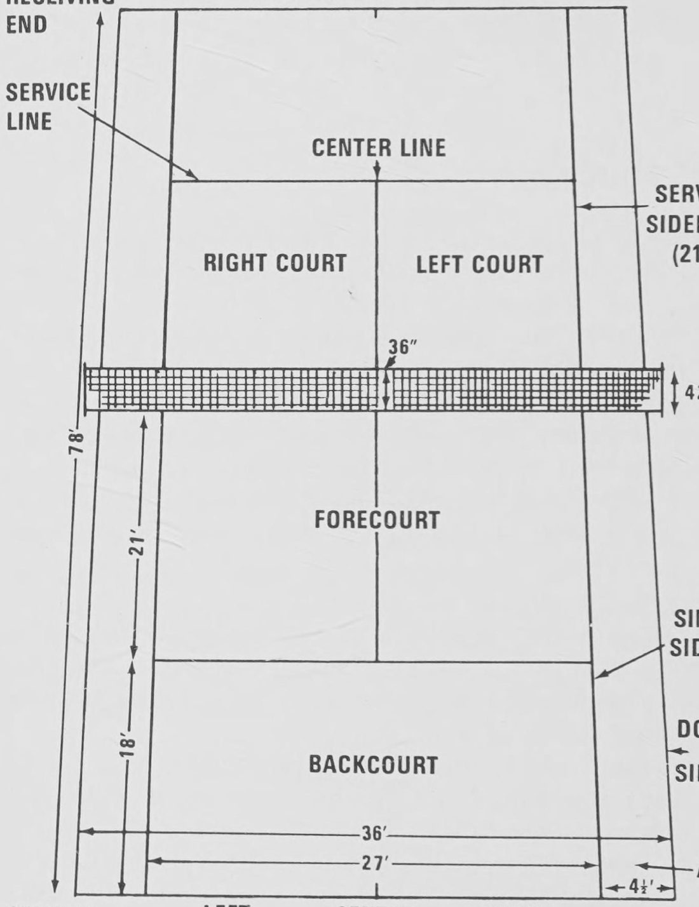
1. Các đội hình tiêu chuẩn
KHI CÓ NHIỀU HƠN MỘT người tham gia điều hành một Chiến dịch, các đội hình thường xuất hiện. Đánh đôi cũng không ngoại lệ. Trong khi mô tả các đội hình này, mỗi lần chúng ta sẽ bắt đầu với cặp giao bóng.
WHEN MORE THAN ONE person is involved in conducting an Operation, formations usually come into things. Doubles is no exception. In describing these formations we’ll begin each time with the serving pair.
Hai DướiTwo Back
Điều này có nghĩa là cả người giao bóng và đối tác đều đứng ở vị trí trước khi giao bóng, phía sau vạch cuối sân. (Xem Hình 1 cho tất cả các thuật ngữ sân thường dùng.) Đội hình này hầu như không đáng nhắc đến, vì nó hầu như không bao giờ được sử dụng. Nó mang tính tiêu cực, vì nó sẽ không cho phép bạn tận dụng bất kỳ lợi thế nào mà cú giao bóng của người giao bóng có thể mang lại.
This means both server and partner take positions before serving, behind the baseline. (See Illus. 1 for all generally used court terms.) This formation scarcely deserves mentioning, because it is virtually never used. It is negative, since it will not allow you to press any advantage the server’s service may gain.
Có lẽ những dịp hiếm hoi bạn thấy với trẻ em—nơi một người gọi là “người đứng lưới” quá nhỏ để có thể hữu ích và do đó giúp đối tác của mình nhiều hơn bằng cách đứng lùi lại bên cạnh—và trong một số trường hợp hiếm hoi ở đánh đôi nữ và đánh đôi nam nữ, nơi một quý cô ngại lên lưới nhưng kiên quyết từ chối đứng bất cứ nơi nào gần lưới.
About the only occasions you'll see are with children—where a so-called “‘net man’ would be too small to be of any use and therefore helps his partner more by standing back beside him—and in odd cases of women’s and mixed doubles, where a net-shy but resolute lady refuses to stand anywhere near the net.
Đội hình Hai Dưới được sử dụng thường xuyên hơn nhiều bởi cặp nhận giao bóng, những người không bao giờ có lợi thế tung ra cú đánh đầu tiên, cụ thể là cú giao bóng. Tuy nhiên, nó vẫn mang tính tiêu cực đối với người nhận, bởi vì mục đích chính của nó là không cho phép người đứng lưới của đối phương chặn một cú trả giao bóng kém và thực hiện một cú vô-lê dứt điểm giữa hai đối tác nhận bóng. (Xem Hình 2.)
The Two Back formation is used far more often by the receiving pair, who never have the advantage of striking the first blow, namely, the service. It’s still negative for receivers though, because its main purpose is not to allow the opposing net man to intercept a poor service return and make a winning volley between the two receiving partners. (See Illus. 2.)
Đội hình Hai Dưới thậm chí còn tiêu cực hơn nếu được sử dụng vì lý do là không ai trong số những người nhận muốn vô-lê và thay vào đó chỉ định đánh bóng cẩn thận trở lại cho người giao bóng cho đến khi họ đánh hỏng. Tuy nhiên, phần lớn, một cặp nhận bóng sử dụng
The Two Back formation is even more negative if used for the reason that neither of the receivers wants to volley and instead merely intends to play the ball carefully back to the server until he misses. Mostly, however, a receiving pair uses
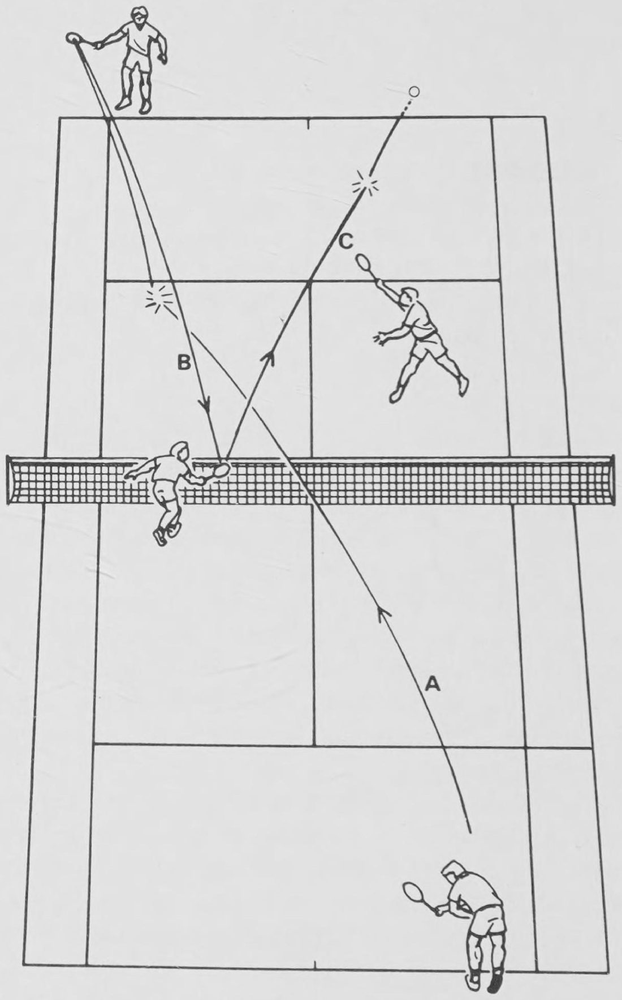
ngự. Nó ngăn chặn tình huống hiển thị ở trên, nơi người nhận không có thể đánh cú trả bóng vượt qua người đứng lưới.
lus. 2. NET MAN INTERCEPTION. The Two Back receiving formation is defen- sive. It guards against the situation shown above, where the receiver has not been able to get his return past the net man.
đội hình Hai Dưới chỉ khi một cú giao bóng một mạnh được giao, trong trường hợp nó buộc một cú trả bóng yếu hoặc một cú lốp ngắn. Sau đó, đối với cú giao bóng thứ hai, đối tác của người nhận sẽ di chuyển về phía lưới.
the Two Back formation only while a fast first service is being served, in case it forces a weak return or a short lob. Then, for the second service, the receiver’s partner will move in towards the net.
Một trên Một dướiOne Up One Back
Một trên Một dưới Một Trên đề cập đến người đứng lưới, vị trí ở đâu đó trong khu vực sân trước. Một Dưới là người giao bóng, người không có ý định theo cú giao bóng của mình lên lưới mà thay vào đó lập kế hoạch chơi bất kỳ chuỗi đánh bóng tiếp theo nào từ khu vực cuối sân hoặc từ phía sau vạch cuối sân.
One Up refers to the net man, positioned somewhere in the forecourt. One Back is the server, who does not intend to follow his service to the net and instead plans to play any ensuing rally from the backcourt or from behind the backline.
Anh ta sẽ đánh mạnh (drive) và đối tác của anh ta, hy vọng rằng, sẽ vô-lê.
He’s going to drive and his partner, hopefully, will volley.
Một trên Một dưới là đội hình thường được chơi. Nó có thể được sử dụng từ giai đoạn bắt đầu cho đến mức độ hoặc tiêu chuẩn đủ cao để giành chức vô địch đánh đôi câu lạc bộ. Vượt quá mức đó, nó không thể chịu được áp lực gây ra bởi một cặp nhận bóng chơi Lối chơi Lên lưới chống lại đội hình Một trên Một dưới.
One Up One Back is the usual formation played. It can be used from beginner stages to a level or standard high enough to win club doubles championships. Beyond that, it cannot withstand the pressures exerted by a receiving pair playing a Net Game against the One Up One Back formation.
Trong khi nhận bóng, Một Trên đề cập đến đối tác của người nhận, người đứng ở lưới. Nếu người nhận có thể đánh bóng an toàn vượt qua tầm với của người đứng lưới đối phương, vị trí Một Trên đặt người giao bóng dưới áp lực phải thực hiện một cú trả bóng tốt—nếu không người nhận Một Trên hoặc người đứng lưới sẽ chặn nó, theo cách của Hình 2 nhưng ngược hướng.
In receiving, One Up refers to the receiver’s partner, who stands at the net. If the receiver can hit the ball safely beyond the opposing net man’s reach, the One Up position places the server under pressure to make a good return—or the receiving One Up or net man will cut it off, in the manner of Illus. 2 but opposite in direction.
Người chơi Một Dưới là người nhận, người mà, giống như người giao bóng, dự định chơi chuỗi bóng từ khu vực cuối sân hoặc phía sau vạch cuối sân.
The One Back player is the receiver, who, like the server, intends playing the rally from the backcourt or beyond the backline.
Lối chơi Lên lướiNet Game
Lối chơi Lên lưới (Net Game)
In this formation the server follows his service to the net, to form a barrier there with his partner. The serving side’s aim is to take the advantage of volleying the ball first, before their receiving opponents have an opportunity to do so. The server follows every serve, good or bad, to the net. The reasoning is that if the serve is strong he will take full advantage of it; if it is weak, he cannot afford to stay back and surrender first use of
Trong đội hình này, người giao bóng theo cú giao bóng của mình lên lưới, để tạo thành một rào chắn ở đó với đối tác của mình. Mục tiêu của bên giao bóng là tận dụng lợi thế vô-lê quả bóng trước, trước khi các đối thủ nhận bóng có cơ hội làm như vậy. Người giao bóng theo mọi cú giao, tốt hay tệ, lên lưới. Lý do là rằng nếu cú giao bóng mạnh, anh ta sẽ tận dụng tối đa lợi thế của nó; nếu nó yếu, anh ta không thể mạo hiểm đứng lại phía sau và nhường quyền sử dụng lần đầu vị trí lưới cho hai đối thủ của mình. Lý thuyết của anh ta trong trường hợp sau là tấn công là hình thức phòng thủ tốt nhất.
the net position to his two opponents. His theory in the latter case is that attack is the best form of defense.
Trong khi nhận bóng, chơi đội hình Lối chơi Lên lưới có nghĩa là đối tác của người nhận đứng ở lưới và người nhận sẽ di chuyển vào và cùng anh ta tạo thành một rào chắn ngay khi có thể. Nếu người giao bóng không theo cú giao của mình lên lưới và vẫn đứng lại trong đội hình Một trên Một dưới, người nhận thường di chuyển vào sau cú đánh đầu tiên, tức là cú trả giao bóng của mình. Gần như không cần phải nói rằng Lối chơi Lên lưới là đội hình tấn công đáng gờm nhất của đánh đôi.
In receiving, playing a Net Game formation means that the receiver’s partner stands at the net and that the receiver will move in and join him there in a barrier as soon as he can. If the server does not follow his serve to the net and remains back in the One Up One Back formation, the receiver normally moves in after his first stroke, that is, his return of service. It goes almost without saying that the Net Game is doubles’ most formidable attacking formation.
Đội hình Đối lập với Cú đánhFormations Versus Strokes
Đội hình Đối lập với Cú đánh Đội hình, với tư cách là các vị trí chiến thuật, hỗ trợ các cú đánh, nhưng không thay thế chúng. Truyền thuyết cho rằng, “Đánh đơn là trò chơi của những cú đánh, đánh đôi là trò chơi của chiến thuật,” nhưng đó là một sự cường điệu. Một cầu thủ đánh đơn với những cú đánh hợp lý nhưng không có ý niệm về chiến thuật là một đứa trẻ trước một người đánh bóng tương đương nhưng biết trò chơi. Người chơi thứ nhất có thể trông ngang ngửa với người thứ hai trong quá trình khởi động, nhưng không bao giờ sau đó.
Formations, as tactical positions, aid strokes, but do not replace them. Folklore has it that, “‘Singles is a game of strokes, doubles is a game of strategy,” but that is an exaggeration. A singles player with reasonable strokes but no idea of tactics is a babe in arms against an equivalent strokemaker who knows the game. The first player may look the equal of the second in the warm-up, but never after.
Tương tự, yêu cầu một người “Kéo chiếc xà lan đó và nhấc kiện hàng đó” sẽ là vô vọng nếu anh ta không có cơ bắp. Vậy thì ích gì khi nói “Hạ thấp quả bóng đó, dứt điểm cú lốp đó,” với một cầu thủ đánh đôi không có cú drive xoáy lên (topspin) cũng như cú smash đáng tin cậy?
Similarly, to order a man to “‘Tote that barge and lift that bale” would be hopeless if he had no muscle. So what’s the use of “Dip that ball, kill that lob,” to a doubles player possessing neither topspin drive nor reliable smash?
Chiến lược có thể để lại phần lớn cho các nhà hoạch định quân sự.
Strategy can be left mostly to military planners.
Một cầu thủ đánh đôi có nhu cầu cấp thiết hơn nhiều về chiến thuật và cú đánh.
A doubles player has far more immediate need of tactics and strokes.
Đội hình Lối chơi Lên lưới đòi hỏi một đặc tính thứ ba: sự linh hoạt.
The Net Game formation demands a third attribute: mobility.
Để chơi đội hình này thành công, bạn cần có khả năng theo cú giao bóng của mình lên lưới nhanh chóng và, với tư cách là người đứng lưới, di chuyển lùi lại đủ nhanh để bao quát các cú lốp qua đầu.
To play this formation successfully you need to be able to follow your service to the net quickly and, as net man, to move back quickly enough to cover lobs over your head.
Chỉ khoảng một trong một nghìn cặp chơi Một trên Một Dưới làm vậy vì sự xuất sắc trong cú drive của họ. Những người còn lại làm vậy vì thiếu khả năng vô-lê (đặc biệt là khả năng vô-lê bóng thấp)
Only about one in a thousand pairs playing One Up One Back do so because of the excellence of their driving. The rest do so because of lack of volleying ability (especially low volleying ability) or lack of mobility in taking the net and covering it against their opponents’ angled shots or lobs.
hoặc thiếu sự linh hoạt trong việc chiếm lĩnh lưới và bao quát lưới chống lại những cú đánh chéo góc hoặc cú lốp của đối phương.
Thực tế là Một trên Một dưới là đội hình được sử dụng nhiều nhất bởi các tay vợt nói chung. Nhiều người không có ý định từ bỏ nó. Những cầu thủ đang tiến bộ phải đi qua nó, vì người ta phải đi trước khi chạy, và trung bình các bạn nữ sẽ ở lại trong đội hình này lâu hơn nam giới. Nói tóm lại, đội hình này xứng đáng được xem xét chi tiết.
The fact remains that One Up One Back is the formation in greatest use by tennis players en masse. Many have no intention of ever forsaking it. Improving players have to pass through it, because one walks before one runs, and on average girls will remain longer in it than men. All told this formation deserves detailed examination.
2. Một trên một dưới
ĐỘI HÌNH MỘT TRÊN MỘT DƯỚI không cứng nhắc như cái tên của nó gợi ý. Với tư cách là người giao bóng, bạn có thể:
THE ONE Up ONE BACK FORMATION is not as rigid as its name may suggest. As server you may:
= Thỉnh thoảng lên lưới sau cú giao bóng một một cách bất ngờ—để bắt một cú vô-lê thuận tay cao dễ dàng và ghi điểm gần như không tốn sức.
= Go up to the net after a first serve occasionally and unexpectedly—to catch an easy high forehand volley and get a point almost for nothing.
= Ưu tiên tấn công bằng cú drive thuận tay thay vì giao bóng, và sau đó tiến lên.
ms Prefer to attack with a forehand drive instead of a serve, and then go up.
= Lên lưới trong tất cả các cú giao bóng một từ phía bên trái sang phía trái tay của người nhận ở ô bên trái. Sử dụng chiến thuật này, bạn lý luận rằng cú trả trái tay có thể yếu và, nếu bị lốp qua đầu đối tác đứng lưới của bạn, nó sẽ nằm ở phía thuận tay của bạn và bạn có thể bao quát được.
= Go to the net on all first serves from the left side to the backhand of the receiver in the left court. Using this tactic you reason the backhand return may be weak and, if lobbed over your net partner’s head, that it will be on your forehand side and you can cover it.
Tất cả những bước di chuyển này là những biến thể của Một trên Một dưới. Chúng không cấu thành lối chơi Lên lưới. Lối chơi Lên lưới có nghĩa là người giao bóng luôn luôn tiến vào—ngay cả với những cú giao bóng hai yếu—và rằng người đứng lưới, chứ không phải một người giao bóng thay đổi hướng, bao quát tất cả các cú lốp qua đầu mình dù anh ta chạm bóng ngay trên không hoặc lùi lại và cứu bóng sau khi bóng nảy.
Ali these moves are variations of One Up One Back. They do not constitute Net Game play. Net Game play means that the server invariably goes in—on weak second serves and all—and that the net man, not a changing-direction server, covers all lobs over his own head whether he reaches them on the full or goes back and recovers them after the bounce.
GIAO BÓNG SANG Ô BÊN PHẢISERVING TO THE RIGHT COURT
Trong đánh đơn, bạn giao bóng chủ yếu từ gần vạch trung tâm, để có thể bảo vệ cả hai bên của sân. Do đó, trong đánh đôi, bạn giao bóng chủ yếu từ khoảng nửa đường giữa vạch trung tâm và đường biên dọc để bảo vệ cả hai bên nửa sân của mình.
In singles you serve mostly from near the center mark, to be able to protect both sides of the court. It follows that in doubles you serve mostly from about halfway between the center mark and the sideline to protect both sides of your half of the court.
Đúng là giao bóng từ gần vạch trung tâm giúp bạn dễ dàng hơn để tìm thấy trái tay của đối thủ và giao bóng từ sát đường biên dọc làm tăng cơ hội giao bóng một cú ace chéo góc rộng ra xa thuận tay của anh ta. Tuy nhiên, bất cứ khi nào bạn chọn sử dụng một trong hai chiến thuật này, bạn nên chuẩn bị tâm lý cho những kết quả có thể xảy ra nếu, sau tất cả, cú giao bóng của bạn cho thấy là dễ chơi đối với thuận tay của người nhận. (Xem Hình 3.)
It’s true that serving from near the center mark makes it easier for you to find your opponent’s backhand and that serving
Nếu bạn coi đánh đôi là một trò chơi mà bạn có thể thoải mái chăm sóc chỉ một nửa sân, thì việc giao bóng quá thường xuyên từ A hoặc D sẽ sớm khiến bạn vỡ mộng.
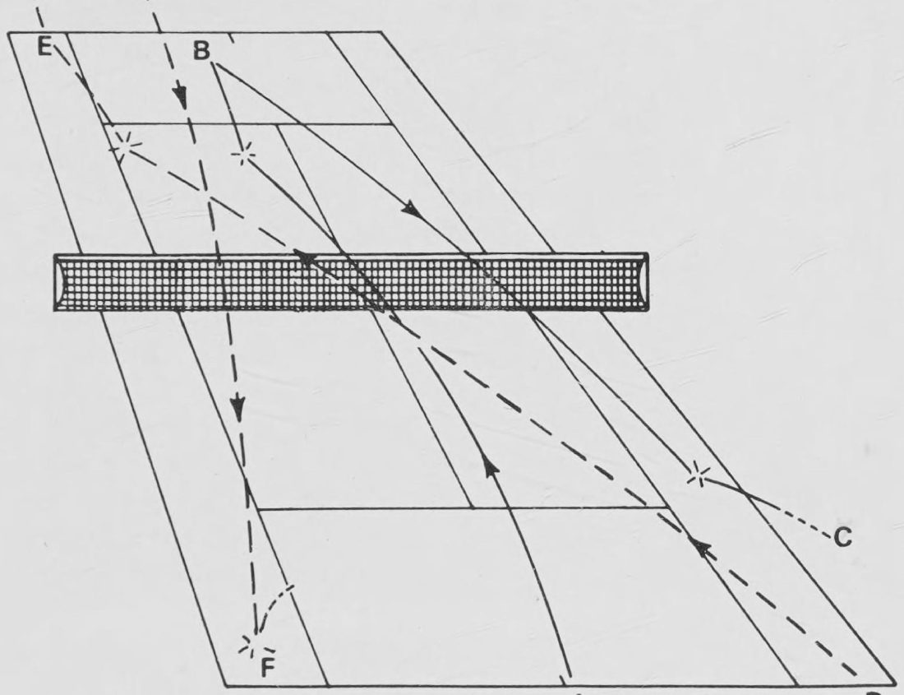
A B C: Một cú đánh chéo sân ngắn BC có thể là một cú dứt điểm trực tiếp, hoặc khiến bạn phải chật vật.
A B C: A short crosscourt shot BC may be an outright winner, or cause you to scramble.
Tình huống D E F: Một cú lốp EF khiến bạn phải chạy dài.
Situation D E F: A lob EF gives you a long chase.
từ ngoài sát đường biên dọc làm tăng cơ hội giao bóng một cú ace chéo góc rộng ra xa thuận tay của anh ta. Tuy nhiên, bất cứ khi nào bạn chọn sử dụng một trong hai chiến thuật này, bạn nên chuẩn bị tâm lý cho những kết quả có thể xảy ra nếu, sau tất cả, cú giao bóng của bạn cho thấy là dễ chơi đối với thuận tay của người nhận. (Xem Hình 3.)
from wide out near the sideline increases your chance of serving an ace angled wide of his forehand. However, whenever you choose to use either of these tactics you should be mentally prepared for their possible results if, after all, your serve proves to be easily playable by the receiver’s forehand. (See Illus. 3.)
Nếu bạn coi đánh đôi là một trò chơi mà bạn có thể thoải mái chăm sóc chỉ một nửa sân, thì việc giao bóng quá thường xuyên từ A hoặc D sẽ sớm khiến bạn vỡ mộng.
If you had thought of doubles as a game where you could com- fortably look after only half the court, then serving too often from A or D will soon disillusion you.
Nếu trình độ tennis của bạn và đối thủ vẫn chưa cao, sẽ có những lợi thế khi nhắm cú giao bóng một khá rộng ra xa thuận tay của người nhận ô bên phải. Thứ nhất, một cú giao bóng chéo, từ phía bên phải của bạn băng sang thuận tay của anh ta, sẽ dễ đưa bóng vào sân hơn là một cú nhắm dọc theo đường trung tâm, vì vậy bạn sẽ cảm thấy tự tin hơn khi đưa được nhiều cú giao bóng một vào cuộc. Điều này luôn là một lợi thế lớn, ở mọi cấp độ hoặc tiêu chuẩn chơi đánh đôi.
If your tennis and that of your opponents is not yet of high quality, there are advantages in aiming your first services fairly wide of the right-court receiver’s forehand. First, a diagonal serve, from your right side well across to his forehand, is easier to land into court than one aimed down the center line, so you will feel confident of getting a lot of first services into play. This is always a great advantage, at all levels or standards of doubles play. Second, he is likely to have trouble in keeping his return clear of your net partner, who will receive an easy volley. The wider you serve the more your partner intercepts, and blesses you. It seems you’ve developed a first-class combination, painlessly.
Thứ hai, anh ta có khả năng gặp khó khăn trong việc giữ cú trả bóng không bị đối tác đứng lưới của bạn chặn, người sẽ nhận được một cú vô-lê dễ dàng. Cú giao bóng càng rộng thì đối tác của bạn càng chặn được nhiều, và chúc mừng bạn. Có vẻ như bạn đã phát triển một sự kết hợp đẳng cấp một cách dễ dàng.
Beware. A more accomplished receiver will pass your net partner down his exposed sideline. The earlier position is reversed: the wider you serve the more your net partner needs to stay at home. If he is immobilized, you then have to balance the advantage of serving better diagonally against the attendant disadvantage of playing to the receiver’s stronger stroke, his forehand.
Hãy cẩn thận. Một người nhận thành thạo hơn sẽ đánh bóng qua đối tác đứng lưới của bạn dọc theo đường biên dọc bị hở của anh ta. Vị trí ban đầu được đảo ngược: bạn giao bóng càng rộng thì đối tác đứng lưới của bạn càng cần phải đứng đúng vị trí. Nếu anh ta bị bất động, bạn sẽ phải cân bằng lợi thế của việc giao bóng chéo tốt hơn với bất lợi đi kèm là đánh vào cú đánh mạnh hơn của người nhận, tức là thuận tay của anh ta.
Fairly soon you realize that the serve down the center is a better proposition, and perhaps at about the same time your net partner realizes that this type of serve allows him to move safely across and cover more court.
Khá sớm bạn sẽ nhận ra rằng cú giao bóng dọc theo trung tâm là một phương án tốt hơn, và có lẽ cùng lúc đó đối tác đứng lưới của bạn nhận ra rằng loại cú giao bóng này cho phép anh ta di chuyển an toàn hơn và bao quát sân nhiều hơn.
If you can land the ball down the center whenever you want to, while at the same time serving from about halfway out to the sideline to protect your half of the court, you can say you have a good doubles service to the right court. Set that as a mark for yourself, a signpost, whatever your level or standard of play.
Độ sâuDepth
Nếu bạn có thể đưa bóng dọc theo trung tâm bất cứ khi nào bạn muốn làm vậy, đồng thời giao bóng từ khoảng nửa đường ra đường biên dọc để bảo vệ nửa sân của mình, bạn có thể nói rằng mình có một cú giao bóng đánh đôi tốt sang ô bên phải. Hãy đặt đó làm mốc cho chính mình, một cột mốc, bất kể cấp độ hoặc tiêu chuẩn chơi của bạn.
The next point is depth. Whether you land the ball on the receiver’s backhand or not, if it is short he should not have much
Độ sâu Điểm tiếp theo là độ sâu. Cho dù bạn đưa bóng vào trái tay của người nhận hay không, nếu bóng ngắn, anh ta sẽ không gặp nhiều
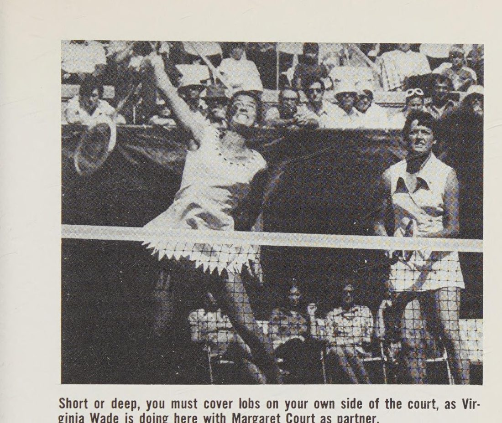
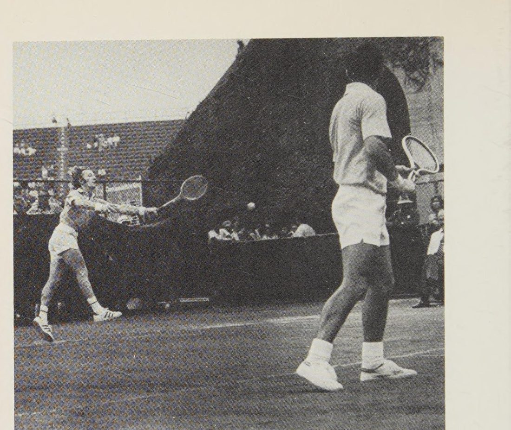
khó khăn trong việc trả bóng và giữ cho bóng không bị đối tác đứng lưới của bạn chặn.
difficulty in returning it and keeping it clear of your net partner.
Bạn giao bóng càng sâu, cú đánh của đối thủ càng phải dài hơn trước khi chạm lưới. Điều này cho đối tác đứng lưới của bạn nhiều thời gian hơn để chặn bóng. Nó cũng cho bạn nhiều thời gian hơn để xử lý, nếu quả bóng bay về phía bạn. Ngoài ra, cú trả giao bóng này, được đánh từ vị trí lùi sâu, có khả năng sẽ rơi ngắn và do đó sẽ dễ xử lý hơn.
The deeper you serve, the longer his hit must be before it reaches the net. This gives your net partner more time to intercept. It also gives you more time to play it, if the shot goes to you. In addition, this service return, hit from well back, is likely to land short and therefore will be easier to play.
Hãy lưu tâm đến việc giao bóng sâu, nếu không bạn sẽ không thành công.
Be conscious of serving for depth, or you won’t make it.
Giao bóng sâu cũng khiến bạn nhận ra nhu cầu về một độ cao an toàn hợp lý giữa bóng và lưới, và bạn cần nhận thức này vì các cú giao bóng có xu hướng đi xuống tự nhiên, khiến hầu hết các lỗi giao bóng là do bóng chạm lưới.
Serving for depth also makes you aware of needing a reasonable clearance height between ball and net, and you need this awareness because serves have a built-in downward tendency that causes most faults to be made down into the net.
Nếu bạn có thể giao bóng từ khoảng nửa đường ra đường biên dọc và đưa bóng vào trung tâm và sâu bất cứ khi nào bạn muốn, bạn có một cú giao bóng đánh đôi rất tốt sang ô bên phải, bất kể trình độ của bạn.
If you can serve from about halfway out to the sideline and land the ball down the center and deep whenever you want to, you have a very good doubles serve to the right court, whatever your standard.
Một cú giao bóng sâu vào bất kỳ phần nào của sân đối phương gần như luôn là một cú giao bóng tốt. Nếu bạn giao bóng vào trái tay của người nhận, bạn sẽ thấy rằng không nhiều cầu thủ có thể thực hiện một cú trái tay mạnh sang phía không thuận của họ. (Người nhận phải đánh sang phía không thuận để tránh đối tác đứng lưới của bạn.) Nếu thay đổi bằng cách giao sâu vào góc thuận tay, hãy lưu ý rằng người nhận thường trả bóng trong tầm với của đối tác đứng lưới của bạn.
A deep serve to any part of the opposing court is nearly always a good one. If you serve to receiver’s backhand, you will find that not many players can make a strong backhand shot to their off side. (Receiver has to play to his off side to avoid your net partner.) If served deep to the forehand corner for a change, notice that the receiver often returns such a ball within reach of your net partner.
Cú AceAces
Cú Ace (Giao bóng ăn điểm trực tiếp)
Having served two balls deep to the backhand in the right court and having reached a score of 40-15, you may wish to try for an ace, wide of your opponent’s forehand. Most players associate wide aces with great speed, but you will land more of these short and angled serves just in, instead of just out, if you serve them firmly rather than fast. Champions tone their speed down a little for wide serves, but all their serves look so fast that we don’t notice it.
Sau khi giao hai quả sâu vào trái tay ở ô bên phải và đạt tỉ số 40-15, bạn có thể muốn thử một cú ace, rộng ra ngoài thuận tay của đối thủ. Hầu hết mọi người liên tưởng cú ace rộng với tốc độ cực lớn, nhưng bạn sẽ đưa được nhiều cú giao bóng ngắn và chéo góc này vào sân hơn, thay vì ra ngoài, nếu bạn giao bóng chắc chắn thay vì giao quá nhanh. Các nhà vô địch tiết chế tốc độ một chút cho các cú giao bóng rộng, nhưng tất cả các cú giao của họ trông vẫn rất nhanh nên chúng ta không nhận ra điều đó.
This idea of a controlled ace rather than a very fast one starts
Ý tưởng về một cú ace có kiểm soát thay vì một cú giao bóng cực nhanh bắt đầu bạn suy nghĩ về cú giao bóng hai. Chuyện gì sẽ xảy ra nếu bạn nhắm một cú giao bóng một nhanh và sâu vào trái tay nhưng bị hỏng, và sau đó người nhận di chuyển hơi lệch sang trái của họ để sẵn sàng tấn công cú giao bóng hai của bạn bằng thuận tay—nhưng thay vào đó bạn khiến họ bị ace bằng một cú giao bóng ổn định uốn cong ra rộng? Câu trả lời là bạn sẽ cảm thấy tuyệt vời—làm chủ tình thế. Nó giống như trong đánh đơn, khi bạn thu hút họ tiến vào bằng một cú bỏ nhỏ—và sau đó lốp bóng qua đầu họ gần như trước khi họ kịp dừng lại.
you thinking of the second serve. What if you aimed a fast first serve deep to the backhand that missed, and then the receiver moved in a little to his left ready to attack your second serve with his forehand—and instead you aced him with a steady serve curving wide? The answer is that you’d feel wonderful— master of the situation. It’s just like, in singles, when you draw him right in with a drop-shot—and then lob over his head almost before he’s stopped braking.
Rủi ro khi cố gắng giao bóng hai ăn điểm trực tiếp là bạn có thể bị lỗi kép không đáng có, hoặc, bạn có thể chỉ đơn giản là giao một quả bóng ngắn vào thuận tay của đối thủ. Tình huống sau không quá tệ nếu bạn nhận ra anh ta sẽ cố gắng đánh một góc nhọn—nếu bạn giao bóng từ ít nhất nửa đường ra biên, bạn có thể bao quát cú đánh này.
The catches in attempting second-serve aces are that you may unnecessarily double-fault, or, that you may merely give your opponent a short ball on his forehand. The latter situation is not too bad if you realize he will attempt a sharp angle—if you have served from at least halfway out you can cover this shot.
Nếu bạn không nhận ra cú trả bóng góc nhọn, và cũng giao bóng từ vạch trung tâm, thì bạn đã thực hiện loại cú giao bóng tệ nhất có thể sang ô bên phải.
If you’ve been unaware of the sharp angle return, and have also served from the center mark, then you’ve served about the worst type of serve there is to the right court.
Tuy nhiên, sự kết hợp giữa việc bảo vệ đường biên dọc, giao bóng sâu chủ yếu vào trung tâm nhưng không phải lúc nào cũng vậy, và thực hiện một cú ace rộng có kiểm soát—tất cả điều này tạo nên một cú giao bóng xuất sắc sang ô bên phải chống lại một người nhận có trình độ tương đương bạn, bất kể trình độ chung đó là gì.
Nevertheless, a combination of protecting your sideline, serving deep mainly down the center but not always, swerving a wide and controlled ace—all this amounts to having an excellent service to the right court against a receiver of about your own level or standard, whatever that shared level or standard may be.
Tốc độSpeed
Tốc độ Bạn cần hiểu rõ về tốc độ. Bạn giao bóng càng nhanh, đối thủ càng có ít thời gian để thực hiện cú đánh và bạn có thể khiến anh ta đánh yếu hoặc thậm chí đánh hỏng bóng, chưa nói đến việc anh ta không thể chạm tới và đánh bóng. Các nhà vô địch giao bóng nhanh và nhiều cầu thủ giỏi khác cũng vậy. Vì vậy, câu trả lời ngắn gọn chỉ có thể là bạn nên giao bóng nhanh nhất có thể.
You need to be clear about speed. The faster you serve the less time your opponent has to make his shot and you may make him play weakly or even mis-hit the ball, to say nothing of his not being able to reach it and hit it at all. Champions serve fast and so do many other good players. Therefore, the short answer can only be that you should serve as fast as you can.
Tốc độ nhanh của bạn phải bao gồm cả sự thoải mái và kiểm soát. Rõ ràng bạn không nên liên tục gồng mình và mất thăng bằng khi bóng trả về. Về phần kiểm soát, nếu không có nó, bạn không thực sự đang giao bóng, vì “giao bóng” thực sự có nghĩa là đưa bóng vào cuộc để bắt đầu điểm số; không có kiểm soát, bạn đang đưa bóng ra ngoài sân.
Your fast speed must include comfort and control. Obviously you shouldn’t continually strain yourself and be right out of balance when the ball comes back. As for control, without it you're not really serving at all, because “serving” really means delivering the ball into play to start the point; without control you're putting the ball out of play.
Tuy nhiên, trong đánh đôi, tốc độ không chỉ là giao bóng ở mức nhanh nhất có kiểm soát. Bạn nên luôn nhận thức được rằng nếu tốc độ này không gây khó khăn cho đối thủ thì nó có lẽ đang hỗ trợ anh ta. Anh ta đưa bóng trở lại nhanh hơn; bạn có ít thời gian hơn giữa cú giao bóng và cú đánh tiếp theo. Khía cạnh này đặc biệt quan trọng trong đánh đôi Lối chơi Lên lưới, nơi bạn theo cú giao bóng lên lưới, nhưng bạn cũng nên nhận thức được điều đó khi chơi Một trên Một dưới.
However, in doubles there’s more to speed than serving at your controlled fastest. You should always be aware that if this speed does not inconvenience your opponent then it is probably aiding him. He gets the ball back faster; you have less time between your service and your next shot. This aspect is particularly important in Net Game doubles, where you follow your service to the net, but you should also be aware of it in playing One Up One Back.
Hãy lưu ý cả tình trạng của bóng và các bề mặt sân khác nhau. Với những quả bóng cứng mới, tốc độ nhanh hơn của bạn có thể gây khó khăn cho đối thủ trên sân bê tông, nhưng với bóng cũ và sân chậm, nó có thể hỗ trợ anh ta. Nhưng đây là những yếu tố thứ yếu. Chủ yếu là đối thủ mới là điều quan trọng. Khi anh ta có thể xử lý bất kỳ tốc độ nào của bạn, bạn nên thay đổi cú giao bóng nhiều hơn thay vì đánh mạnh hơn. Nhưng điều quan trọng nhất trong trường hợp này là giữ thăng bằng, vị trí và tập trung nhiều hơn vào việc cố gắng giành chiến thắng từ cú trả bóng thay vì từ cú giao bóng của mình.
Be conscious of both the condition of the balls and different court surfaces. With new hard balls your faster speed may inconvenience an opponent on concrete, but with used balls and a slow court it may aid him. But these are lesser factors.
Nhiều cầu thủ nhận ra tất cả những điều này khi đánh vào một bức tường gạch hoặc bảng tập luyện khác, nhưng khi thi đấu họ không nhận ra sự tương đồng của một người nhận có thể xử lý tốc độ giao bóng của họ.
Mostly it’s the opponent that counts. When he can handle whatever speed you have, you should vary your serve more instead of hitting it harder. But the main thing in this case is to keep in balance and position and concentrate more on trying to win from your return rather than from your serve.
Việc đánh ngày càng mạnh vượt quá khả năng thực hiện cú đánh của bạn về mặt kỹ thuật được gọi là Pressing (Gây áp lực quá mức). Nếu tiếp tục, nó trở thành sự tuyệt vọng. Một dạng của điều này thường xảy ra trong đánh đôi nam nữ, nơi bạn nữ cố gắng giao bóng quá mạnh chống lại bạn nam. Trong trường hợp này, anh ta hầu như chỉ phải chơi những cú giao bóng hai của cô ấy, và khi một cú giao bóng một vào sân, anh ta đưa bóng trở lại trước khi cô ấy kịp sẵn sàng.
Many players realize all this when hitting against a brick wall or other form of practice board, but when playing do not re- cognize the similarity of a receiver who can handle their service speed.
Trong đánh đôi nam, nữ hoặc nam nữ, bạn nên giữ một cái đầu lạnh và thay vì giao bóng mạnh hơn, bạn nên cố gắng thắng một cách hiệu quả hơn. Nói thì dễ hơn làm, nhưng nó sẽ dễ dàng hơn nhiều nếu bạn nhận ra đó là chiến thuật đúng đắn cần theo đuổi.
Hitting harder and harder beyond your stroke capability is technically called Pressing. Continued, it becomes desperation.
A form of it often occurs in mixed doubles, where the girl tries to serve far too hard against the man. In this event, he mostly has to play only her second serves, and when a first one lands in he gets it back before she’s ready.
In men’s or women’s doubles or in mixed, you should keep a cool head and instead of serving harder you should try to win harder. It may be easier said than done, but it’s immeasurably easier if you are aware it is the correct tactic to follow.
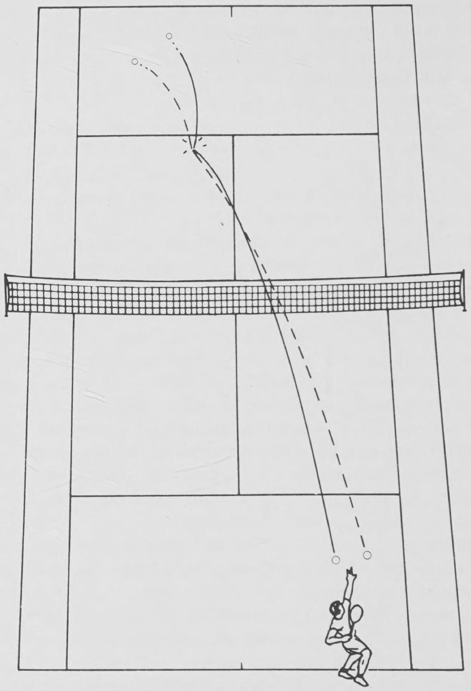
Một cú giao bóng xoáy lên (topspin) dễ đưa bóng vào trung tâm của ô bên phải hơn. Một cú giao bóng cắt (slice)
A topspin serve is easier to land down the center of the right court. A sliced serve Carries more out-curve and needs to be aimed well over the wrong half of the net.
Có độ uốn ra ngoài nhiều hơn và cần được nhắm chuẩn xác qua nửa bên kia của lưới.
Even its bounce goes more towards the receiver's forehand.
Ngay cả cú nảy của nó cũng hướng nhiều hơn về phía thuận tay của người nhận.
Thay đổi chủ đề, nếu bạn có một cú giao bóng mạnh và tốt, nó thường sẽ quá sức đối với những người nhận cùng trình độ với bạn.
Changing course, if you have a good strong serve, it will usually be too good for receivers of your own level or standard.
Bạn sẽ thắng hầu hết các ván giao bóng của mình. Hãy coi đó là một tài sản và sử dụng nó một cách tự tin.
You will win most of your service games. Regard it as an asset and use it confidently.
KỸ THUẬT GIAO BÓNGSERVICE MECHANICS
Bây giờ hãy chuyển từ chiến thuật sang các cú đánh.
Turn now from tactics to strokes.
Cú giao bóng dọc theo trung tâm của ô bên phải dễ thực hiện hơn với cú giao bóng xoáy lên (topspin) so với cú giao bóng cắt (slice). Đối với cú giao bóng xoáy lên, bạn tung bóng trên đầu, gập khuỷu tay mạnh và đưa vợt lên sao cho quả bóng lăn qua những sợi dây ngắn và do đó rời đi với độ xoáy lên.
The service down the center of the right court is more easily made with a topspin serve than with a sliced serve. For the top- spin serve you throw the ball above your head, and bend your elbow sharply and bring the racket up so that the ball rolls across the short strings and thus departs with topspin on it.
Điểm quan trọng, về hướng, là vợt vung về phía trước và rõ rệt từ trái sang phải, kết thúc xuống dưới chân phải của bạn—và điều này tương đương với việc đưa bóng về phía trái của người nhận, dọc theo trung tâm sang trái tay của anh ta.
The important point, for direction, is that the racket swings forward and distinctly from left to right, finishing down by your right foot—and this equates with sending the ball towards the receiver’s left, down the center to his backhand.
Bạn thực hiện cú giao bóng cắt (slice) bằng cách tung bóng trên vai phải và hơi chếch về phía trước, và cắt quanh quả bóng— từ phải sang trái. Vợt di chuyển ngang qua cơ thể và kết thúc xuống dưới chân trái của bạn. Toàn bộ hành động tạo ra một độ cong tự nhiên cho bóng, uốn cong nó về phía bên phải của người nhận, hướng về phía đường biên dọc sang thuận tay của anh ta.
You make a sliced serve by throwing the ball above your right shoulder and somewhat ahead of it, and slicing round it— from right to left. The racket travels across your body and finishes down by your left foot. The whole action puts a natural curve on the ball, curving it towards the receiver’s right, towards the sideline to his forehand.
Để đưa một cú giao bóng cắt vào trung tâm trong ô bên phải có nghĩa là nó phải băng qua lưới ở phía đối diện của trung tâm và uốn cong vào sân sang trái tay của người nhận. Đây có thể là một công việc căng thẳng khi tỉ số của bạn là 15-40 hoặc 4-5 và đủ độ cắt như thường lệ, bóng sẽ uốn ít hơn và rơi vào sai ô.
To land a sliced serve down the center into the right court means that it must cross the net on the wrong side of center and curve into play onto the receiver’s backhand. This can be a nerve-wracking business where your score is 15-40 or 4-5 and much slice as usual, the ball will curve less and land in the wrong court. Also you haven’t even got the comfort of serving over the lowest point of the net. For all this, see Illus. 4.
Phỏng đoán lần haiSecond Guessing
Ngoài ra bạn thậm chí không có được sự thoải mái khi giao bóng qua điểm thấp nhất của lưới. Về tất cả những điều này, xem Hình 4.
The easiest way to get your service into court is to serve topspin when aiming for the backhand and sliced when aiming
Đoán trước (Second Guessing)
Cách dễ nhất để đưa cú giao bóng của bạn vào sân là giao xoáy lên khi nhắm vào trái tay và giao cắt khi nhắm vào thuận tay.* Hãy thử cách này nếu đối thủ của bạn không đủ kinh nghiệm để nhận ra bạn đang sử dụng cú giao nào và do đó hướng đi có thể xảy ra của nó.
for the forehand.* By all means try this if your opponent is not sufficiently experienced to notice which serve you are using and hence its probable direction.
Tuy nhiên, đối với một cầu thủ kinh nghiệm hơn, hướng của cú tung bóng sẽ ngay lập tức tiết lộ điều đó—đặc biệt là vào cuối trận đấu, khi anh ta không thể tránh khỏi việc quen với bạn.
To a more experienced player, however, the direction of your throw is immediately tell-tale—particularly late in a match, when he can’t help getting used to you.
Bạn sẽ phải thực hiện một số cú đánh 'đánh lừa' (second guessing). Hãy đứng hơi rộng hơn về phía đường biên dọc hơn bình thường và người nhận cũng sẽ di chuyển rộng hơn, để bao quát góc rộng mà bạn đe dọa giao bóng; trong khi di chuyển rộng hơn, anh ta để lộ phía trái tay nhiều hơn bình thường. Bạn tung bóng sang phía bên phải của mình cho một cú giao bóng cắt và anh ta tự động chuẩn bị di chuyển để bao quát đường cong uốn ra ngoài của bạn.
You will have to do some second guessing. Stand a little wider out towards the sideline than usual and the receiver will also move wider, to cover the wide angle you threaten to serve; in moving wider, he exposes more of his backhand side than usual. You throw the ball to your right side for a sliced serve and he automatically prepares to move to cover your wide out- curve. Instead you serve to his backhand. The ball curves into him and often forces him to play a cramped shot that your net partner can intercept and volley away.
Thay vào đó, bạn giao bóng vào trái tay anh ta. Quả bóng uốn cong vào anh ta và thường buộc anh ta phải thực hiện một cú đánh gò bó mà đối tác đứng lưới của bạn có thể chặn và vô-lê dứt điểm.
For your next serve to this right-court receiver you can stand in this same wide position and again throw the ball up to your right for a sliced serve. This time he has no idea which side you intend to serve to. You can now serve wide to his forehand, if you want to, with a far better chance of success than before.
Đối với cú giao tiếp theo cho người nhận ô bên phải này, bạn có thể đứng ở cùng vị trí rộng này và một lần nữa tung bóng lên phía bên phải của mình cho một cú giao bóng cắt.
Similarly, you could play your first serve of the game as a topspin serve down the center. If you make your next serve a topspin serve deep to your opponent’s forehand corner, he may not have time to get sufficiently behind it to aim it properly.
Lần này anh ta không biết bạn định giao bóng sang phía nào.
Your partner, without recklessly exposing his sideline too early, may again be abie to intercept the return.
Bây giờ bạn có thể giao bóng rộng sang thuận tay của anh ta, nếu muốn, với cơ hội thành công cao hơn nhiều so với trước đó.
The above are examples of what is meant by the terms, “using your serve well,” or “mixing them up.”
Tương tự, bạn có thể thực hiện cú giao bóng đầu tiên của ván như một cú giao bóng xoáy lên dọc theo trung tâm. Nếu bạn thực hiện cú giao tiếp theo là một cú giao bóng xoáy lên sâu vào góc thuận tay của đối thủ, anh ta có thể không có đủ thời gian để đứng đủ xa phía sau quả bóng để nhắm mục tiêu chính xác.
Don’t go too far with your repertoire of second-guess serves.
Đối tác của bạn, mà không liều lĩnh để hở đường biên dọc quá sớm, có thể một lần nữa chặn được cú trả bóng.
For instance, for your second serve you may decide to stand in hitting sliced serves diagonally across to his backhand. It may be his steadier shot, or he wouldn’t be playing there, but it is highly unlikely to be as dangerous as a right-hander’s forehand.
Những ví dụ trên là minh họa cho các thuật ngữ, “sử dụng cú giao bóng tốt,” hoặc “trộn lẫn các cú giao bóng.”
Đừng đi quá xa với kho tàng các cú giao bóng đánh lừa của bạn.
Ví dụ, đối với cú giao bóng hai, bạn có thể quyết định đứng 7 Tất nhiên, nếu đối thủ của bạn ở ô bên phải tình cờ là người thuận tay trái, bạn có một nhiệm vụ dễ dàng trong việc đánh những cú giao bóng cắt chéo sang trái tay của anh ta. Đó có thể là cú đánh ổn định hơn của anh ta, nếu không anh ta sẽ không chơi ở đó, nhưng nó khó có thể nguy hiểm như thuận tay của một người thuận tay phải.
gần vạch trung tâm và tung bóng trên đầu cho một cú giao bóng xoáy lên—để dụ đối thủ tin chắc rằng bạn sẽ giao bóng dọc theo trung tâm, trong khi thực ra bạn đang lên kế hoạch cho một cú ace thứ hai chậm và rộng. Nếu bạn làm điều này, bạn đang tự chuốc lấy rắc rối. Nếu bạn không ace được anh ta, bạn sẽ đưa cho anh ta một quả bóng chậm và ngắn nảy cao hơn lưới (do độ xoáy lên của nó)—và toàn bộ sân thuận tay của bạn bị hở.
close to the center mark and throw the ball above your head for a topspin serve—to lure your opponent into being virtually certain you will serve down the center, when all the time you are planning a slow wide second-service ace. If you do this you are looking for trouble. If you don’t ace him, you will have given him a slow short ball that bounces higher than the net (from the topspin it has on it)—and all your forehand court is exposed.
Từ góc rộng mà bạn đã tạo ra cho anh ta và độ nảy cao của quả bóng, anh ta có thể đánh một cú cắt góc xuống hoặc một cú drive xoáy lên chéo sân và khiến bạn đứng hình. Xem Hình 5.
From the wide angle you have set up for him and the high bounce of the ball he can play a downward angled slice or a crosscourt topspin drive and leave you standing. See Illus. 5.
Bạn thà giao bóng lỗi kép còn hơn.
You may as well have served a double fault.
Một bất lợi khác của việc quá lạm dụng đánh lừa là các cú đánh của bạn, trong trường hợp này là giao bóng, có thể không theo kịp chiến thuật. Điều này có thể dẫn đến việc bạn giao quá nhiều lỗi. Đánh đôi không chỉ là chiến thuật. “Trộn lẫn chúng” đòi hỏi phải luyện tập giao bóng rất nhiều.
Another disadvantage of too much second guessing is that your strokes, in this case your service, may not be up to your tactics. This can lead to your serving too many faults. Doubles is not all tactics. ““Mixing them up” calls for a lot of serving practice.
Giao bóng Topspin-CắtTopspin-Sliced Service
Giao bóng Xoáy-Cắt (Topspin-Sliced)
Perhaps you don’t like serving in “unnatural” directions, meaning topspin to the forehand and sliced to the backhand, and yet you know you’ve reached a level where you have to do better than merely serve in natural directions to opponents who anticipate your serves and play them with comparative ease.
Có lẽ bạn không thích giao bóng theo những hướng “không tự nhiên”, nghĩa là xoáy lên sang thuận tay và cắt sang trái tay, nhưng bạn biết mình đã đạt đến trình độ mà bạn phải làm tốt hơn là chỉ giao bóng theo những hướng tự nhiên cho những đối thủ những người dự đoán được cú giao của bạn và xử lý chúng một cách tương đối dễ dàng.
You’d like to have a serve somewhere between the topspin and sliced services. It wouldn’t have as much safe net clearance and drop as a topspin serve nor as much penetrating swerve as a sliced serve, but its big advantage would be that you could vary your direction from a constant throw and ball position.
Bạn muốn có một cú giao bóng nằm đâu đó giữa cú giao bóng xoáy lên và giao bóng cắt. Nó sẽ không có độ an toàn vượt lưới và dộ rơi nhiều như cú giao bóng xoáy lên, cũng không có độ uốn xuyên thấu như cú giao bóng cắt, nhưng lợi thế lớn của nó là bạn có thể thay đổi hướng từ một cú tung bóng và vị trí bóng cố định.
Your throw would not be tell-tale.
Cú tung bóng của bạn sẽ không bị lộ.
Such a serve is a topspin-sliced service. Players refer to services as Sliced, Topspin, American Twist or Kick (an exaggerated form of Topspin) and Flat or Cannonball and in
Một cú giao bóng như vậy là cú giao bóng xoáy-cắt (topspin-sliced). Các cầu thủ gọi các cú giao bóng là Cắt (Sliced), Xoáy lên (Topspin), American Twist hoặc Kick (một dạng phóng đại của Topspin) và Phẳng (Flat) hoặc Cannonball và trong
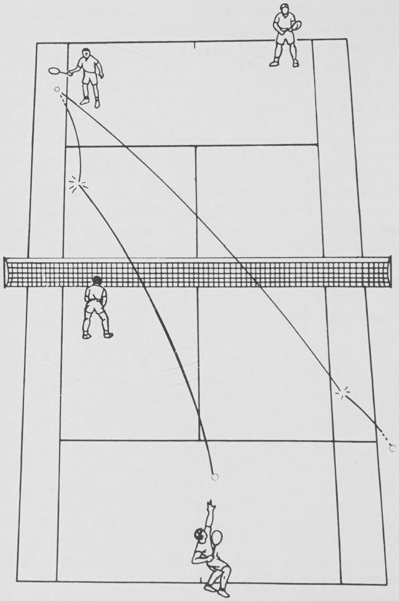
những ngày đầu họ nói về Xoáy ngược (Reverse Spin - ngược với Cắt) và Xoáy ngược Twist (Reverse Twist - ngược với American Twist)—nhưng trong suốt thời gian qua cú giao bóng chủ lực của nhiều cầu thủ thực chất là (mặc dù không được đặt tên) một cú giao bóng xoáy-cắt.
earlier days they spoke of Reverse Spin (opposite of Sliced) and Reverse Twist (opposite of American Twist)—yet all the time the stock ball of many players has really been (although unnamed) a topspin-sliced service.
Bạn thực hiện một cú giao bóng cắt bằng cách tung bóng hơi phía trước vai phải và cắt quanh nó. Tại khoảnh khắc tiếp xúc giữa bóng và dây, bạn cảm thấy khuỷu tay mình gần như duỗi thẳng hoàn toàn và bạn cảm thấy mình đang đánh xuống và quanh quả bóng—giống như ném một quả bóng uốn cong ra ngoài.
You make a sliced serve by throwing the ball somewhat ahead of your right shoulder and slicing round it. At the moment of contact between ball and strings you feel your elbow is about fully straightened and you feel you are hitting down and round the ball—like throwing an out-curve.
Bạn thực hiện một cú giao bóng xoáy lên bằng cách tung bóng trên đầu và gập khuỷu tay mạnh để bạn có đủ lực đánh quả bóng với mặt vợt đang đi lên (để tạo độ lăn về phía trước hoặc xoáy lên cho bóng). Tại khoảnh khắc tiếp xúc giữa bóng và dây, bạn cảm thấy khuỷu tay mình vẫn đang trong quá trình duỗi ra.
You make a topspin serve by throwing the ball above your head and bending your elbow sharply so that you have enough force to strike the ball with the strings of a racket head that is still rising (to put forward roll or topspin on the ball). At the moment of contact between ball and strings you feel your elbow is still in the process of straightening itself.
Bạn thực hiện một cú giao bóng xoáy-cắt bằng cách tung bóng không xa về phía trước và sang phải như đối với một cú giao bóng cắt, và bằng cách đánh quả bóng với cảm giác rằng khuỷu tay của bạn vẫn còn ở một mức độ nào đó đang mở ra.
You make a topspin-sliced serve by throwing the ball not as far forward and to the right as for a sliced serve, and by hitting the ball with a feeling that your elbow is still to some extent uncoiling itself.
Hình 6 là một sơ đồ so sánh của ba cú giao bóng. Lưu ý rằng trong mọi trường hợp, khuỷu tay được hiển thị là duỗi thẳng tại khoảnh khắc tác động. Việc minh họa nó bị gập trong các bản vẽ xoáy lên và xoáy-cắt sẽ cho bạn một ấn tượng hoàn toàn sai, khiến bạn tưởng tượng rằng bạn nên giao bóng với một cánh tay gập.
Illus. 6 is a comparative diagram of the three services. Note that in all cases the elbow is shown as being straight at the moment of impact. To illustrate it as bent in the topspin and topspin-sliced drawings would give you a completely wrong impression, making you imagine you should serve with a bent arm. The fact remains that with these two serves, particularly the topspin, you must feel that your elbow is still uncoiling, (opposite page)
Thực tế là với hai cú giao bóng này, đặc biệt là cú xoáy lên, bạn phải cảm thấy khuỷu tay mình vẫn đang mở ra, (trang đối diện)
throw the ball above your head for a topspin second serve. Both actions lead your opponent to expect a center-line service, but you intend to second guess him and serve a wide ace. You're playing a dangerous game. If it doesn’t come off, you probably won't even touch his return.
tung bóng trên đầu cho một cú giao bóng hai xoáy lên. Cả hai hành động khiến đối thủ của bạn mong đợi một cú giao dọc đường trung tâm, nhưng bạn định đánh lừa anh ta và giao một cú ace rộng. Bạn đang chơi một trò chơi mạo hiểm. Nếu nó không thành công, bạn có lẽ thậm chí sẽ không chạm được vào cú trả bóng của anh ta.
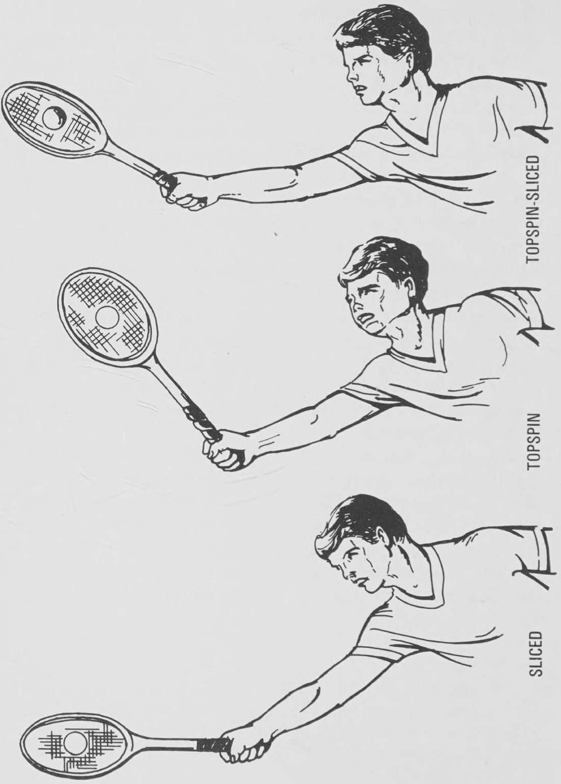
rằng bạn đang “đánh trong khi vung lên”. Hình 6 cũng là một sơ đồ so sánh về hình ảnh tinh thần mà bạn nên có về vị trí mặt vợt khi tác động.
that you are “hitting on the up-swing.”’ Illus. 6 is also a comparative diagram of the mental picture you should have of the position of your racket head at impact.
Rõ ràng, văn bản và sơ đồ là không đủ. Và, cho các mục đích thực tế, hình ảnh chuỗi cũng vậy. Bạn không thấy được bức tranh tổng thể, cũng như tốc độ tương đối của các phần trong cú vung. Để phát triển cú giao bóng xoáy-cắt của riêng mình, bạn phải quan sát ai đó giao bóng nó.
Clearly, text and diagrams are not enough. Nor, for practical purposes, are strip photographs. You don’t see the picture as a whole, nor the relative speed of parts of the swing. To develop a topspin-slice serve yourself, you must watch someone serving it.
Điều đó sẽ không khó. Trước đây bạn có thể nghĩ rằng hàng tá người giao bóng cắt, một số uốn cong và lướt thấp qua lưới, và những người khác bằng cách nào đó cao hơn và an toàn hơn nhiều trong khi vẫn nhanh tương đương. Những cú giao bóng sau thực chất là Xoáy-Cắt. Bạn có thể phân tích chúng bây giờ, lưu ý yếu tố xoáy lên gắn liền với chúng.
That won’t be hard to do. Formerly you may have thought that dozens of people served sliced serves, some curving and skimming low over the net, and others somehow or other being higher and much safer while being about as fast. These latter serves were actually Topspin-Sliced. You can analyze these now, noting the element of topspin associated with them.
Sau đó, bạn sẽ ở vị trí có thể tự mình thử nghiệm, một cách tự nhiên hơn nhiều so với việc làm theo văn bản hoặc hình minh họa của bất kỳ loại nào.
Then you will be in a position to experiment for yourself, far more naturally than from following text or illustrations of any sort.
Từ cú giao bóng cắt hiện tại, có lẽ tất cả những gì bạn cần là tung bóng lùi lại một chút.
From your present sliced serve perhaps all you may need is to throw the ball a little farther back.
Ai biết được, có lẽ bạn nhận ra mình đã giao bóng xoáy-cắt từ lâu rồi? Tương tự, một cách vô thức bạn có thể tung bóng hơi lệch sang phải khi bạn muốn giao (trang đối diện)
Who knows, perhaps you'll find you already serve a topspin-sliced serve yourself? Equally unknowingly you may throw the ball a little more to the right when you want to serve (opposite page)
Nhưng với các cú giao xoáy lên và xoáy-cắt, bạn cảm thấy rằng khuỷu tay của bạn vẫn đang mở ra khi tác động, rằng bạn đang đánh bóng trong khi vung lên. Đó là điều tạo nên độ xoáy lên.
elbow straightens as you hit the ball—you don’t Avt it with a crooked elbow.
LƯU Ý: Cách cầm vợt Continental được hiển thị (phần đế của lòng bàn tay nằm trên bề mặt trên của tay cầm vợt)
But with topspin and topspin-sliced serves you fee/ that your elbow is still uncoiling at impact, that you are hitting the ball on the upswing. That's what rolls on the topspin.
không phải là bắt buộc. Nó được ưu tiên, nếu bạn làm chủ được nó, vì phần cuối của tay cầm nằm chếch ra khỏi cổ tay thay vì nằm gần như thẳng hàng với nó. Khoảng hở này cho phép cổ tay bật mạnh hơn.
NOTE: The Continental grip shown (butt of your palm on top surface of racket handle) is not essential. It is preferable, if you are master of it, because the end of the handle is angled clear of your wrist instead of being more or less in line with it. This clearance allows greater wrist snap.
rộng và một chút gần đầu hơn khi bạn nhắm dọc theo trung tâm. Bạn chưa bao giờ nhận ra—nhưng bạn có thể chắc chắn rằng những đối thủ khôn ngoan của bạn đã nhận ra.
wide and a little nearer to your head when you’re aiming down the center. You’ve never noticed—but you can be sure your wiser opponents have.
Giao bóng Phẳng hoặc Cannonball Một cú giao bóng phẳng (flat) có biên độ sai số thấp hơn bất kỳ loại giao bóng nào khác. Vì không được cắt hay xoáy lên, nó không uốn cong hay rơi xuống đáng kể.
Flat or Cannonball Service A flat serve has less margin for error than any other. Not being sliced or topspun, it does not curve or dip appreciably.
Đi theo một đường thẳng hơn, sau khi băng qua lưới, nó có khoảng không ngắn nhất có thể để rơi vào sân và do đó có thể có rất ít độ an toàn vượt lưới. Đặc trưng chính của nó là tốc độ, vì nếu không thì chẳng có lý do gì để giao bóng phẳng, vì vậy một lần nữa nó cần lướt thấp qua lưới. Và khi đánh nó mạnh, bạn có thể đánh hỏng.
Following a more direct line, after crossing the net it has the shortest possible space in which to land in court and therefore can have but little safe net clearance. Its main characteristic is speed, since there is little point in serving flat otherwise, so again it needs to pass low over the net. And in hitting it hard, you may mis-hit.
Các cú giao bóng Cannonball chủ yếu chỉ dành cho các cầu thủ nam vừa cao, mạnh lại vừa chính xác để không lãng phí hầu hết các //lần thử của mình.
Cannonball serves are mostly confined to male players who are tall and strong and accurate enough not to waste most of their attempts.
Mặc dù giao bóng phẳng là một loại hình giao bóng riêng biệt, nó hiếm khi hoàn toàn phẳng. Khi giao bóng sâu vào góc thuận tay của ô bên phải, bạn có thể muốn thêm một chút độ cắt để tạo cảm giác kiểm soát. Khi giao bóng dọc theo trung tâm của ô bên phải hoặc hướng về phía trái tay của ô bên trái, bạn có thể muốn cảm thấy mặt vợt phẳng của mình hơi úp lên trên quả bóng, cảm giác rằng bạn đang tạo cho nó một chút xoáy ngược hoặc xoáy về phía trước.
Although a flat serve is a distinct type of service in its own right, it is seldom completely flat. Serving to the deep forehand corner of the right court, you may like to include a trace of slice for a feeling of control. Serving down the center of the right court or towards the backhand side of the left court you may like to feel your flat racket face coming slightly over the ball, feeling that you are giving it a trace of over- or forward spin. Forward spin rolls in exactly the same direction as top- spin, but when we speak of topspin on a serve we always mean the heavier spin applied with a topspin serve action as described on page 27 and shown in Illus. 6.
Độ xoáy về phía trước lăn theo đúng hướng như xoáy lên, nhưng khi chúng ta nói về xoáy lên (topspin) trong một cú giao bóng, chúng ta luôn ám chỉ độ xoáy mạnh hơn được áp dụng với hành động giao bóng xoáy lên như mô tả ở trang 27 và hiển thị trong Hình 6.
You may not like this concept of feeling a trace of slice or a trace of forward spin, and think that it detracts from cannon- ball speed. In that case, hit the ball hard but with long contact between ball and strings, feeling you are flattening the ball before it leaves your strings.
Bạn có thể không thích khái niệm cảm nhận một chút độ cắt hoặc một chút xoáy về phía trước, và nghĩ rằng nó làm giảm tốc độ của cú cannonball. Trong trường hợp đó, hãy đánh bóng mạnh nhưng với thời gian tiếp xúc dài giữa bóng và dây, cảm giác như bạn đang làm phẳng quả bóng trước khi nó rời khỏi dây vợt.
Or choose some other concept, because every stroke must
Hoặc chọn một khái niệm khác, vì mọi cú đánh đều phải
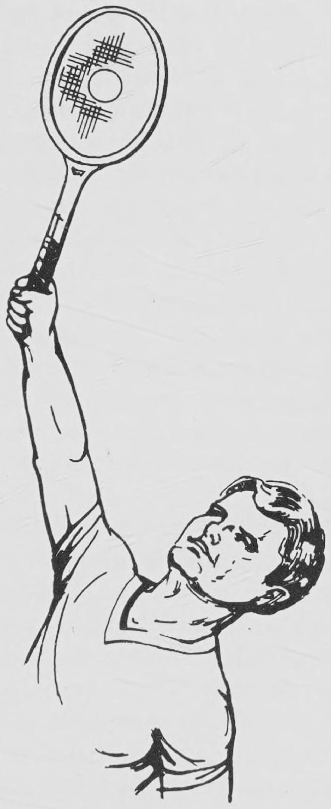
có một cảm nhận về tinh thần và thể chất, kể cả cú cannonball của bạn.
have some mental and physical feel to it, even your cannonball.
Sẽ không có hy vọng gì cho bạn nếu bạn coi nó chỉ là một cú đánh phẳng.
There’s no hope for you if you regard it as just a flat bash.
Xem Hình 7.
See Illus. 7.
Đánh bóng mạnh và tập trung vào độ sâu, không phải góc đánh. Bất kể bạn chọn đánh mạnh thế nào, bạn cần một khái niệm tinh thần về sự kiểm soát. Không có ích gì khi chỉ có tốc độ trong đầu và để quả bóng bay thẳng ra khỏi dây vợt.
lus. 7. FLAT OR CANNONBALL SERVICE. Feel you are serving at full stretch.
Hit the ball hard and go for depth, not angle. However hard you choose to hit, you need some mental concept of control. It’s no good having speed alone in mind and letting the ball fly straight off the strings.
Ô NGUY HIỂM (DANGER COURT)DANGER COURT
Trở lại từ cấp độ cao của giao bóng cannonball xuống mức thông thường, ô bên phải là Ô Nguy Hiểm (Danger Court). Có nhiều điểm số hơn ở ô bên trái, nhưng bạn nhận thức rõ về những điểm này hơn. Nếu bạn mất điểm khi giao bóng sang ô bên phải, bạn sẽ luôn phải nỗ lực hồi phục trong những điểm tiếp theo, luôn cố gắng cứu vãn tỉ số 0-30 hoặc 15-40 hoặc ván đấu.
Returning from the high plane of cannonball serving to an everyday level, the right court is the Danger Court. There are more game points in the left court, but you are more aware of these. If you lose the points when serving to the right court you are always recovering on the following ones, always trying to save 0-30 or 15-40 or game.
Bạn cần có khả năng tự bảo vệ mình khỏi một tình huống mà người nhận ô bên phải với cú thuận tay mạnh chiếm lấy cú giao bóng của bạn, đặc biệt là cú giao bóng hai, một cách áp đảo và liên tục khiến bạn bị dẫn một điểm. Nhu cầu cơ bản của bạn là khả năng đưa cú giao bóng hai sâu vào trái tay của người nhận, trong khi giao bóng từ ít nhất nửa đường ra đường biên dọc.
You need to be able to protect yourself from a situation where a right-court receiver with a strong forehand takes your service, particularly the second one, by the scruff of the neck and continually puts you a point down. Your basic need is the ability to land your second service deep to the receiver’s back- hand, while serving from at least halfway out to the sideline.
Đừng coi đây là một cú giao bóng phòng thủ tránh xa thuận tay của anh ta ếu không bạn sẽ rơi vào trạng thái tâm lý sai lầm. Hãy biến cú giao bóng của bạn thành một cuộc tấn công mạnh mẽ vào trái tay anh ta. Điều đó tạo ra sự khác biệt hoàn toàn.
Do not regard this as a defensive serve away from his fore- hand or you will fall into the wrong frame of mind. Make your serve a firm attack on his backhand. There’s all the difference in the world.
Bất kể ý định của bạn là gì, bất kể mục tiêu ở đâu, bất kể bạn tung bóng thế nào—hãy quan sát nó. Giữ đầu ngẩng cao.
Whatever your intentions, wherever your aim, wherever you throw the ball—watch it. Keep your head up.
GIAO BÓNG SANG Ô BÊN TRÁISERVING TO THE LEFT COURT
Nếu bạn có thể giữ được các điểm ở ô bên phải, bạn sẽ xử lý tốt những điểm ở ô bên trái. Bạn có sự tự tin khi đang dẫn một điểm và cũng dễ dàng hơn nhiều để tìm thấy trái tay của đối thủ ở ô này. Cú giao bóng chéo dễ thực hiện của bạn sẽ hướng về đó. Bạn có thể đưa cú giao bóng xoáy lên của mình vào góc trái tay của ô bên trái với ít áp lực hơn bất kỳ nơi nào khác.
If you can hold the points in the right court you will handle those in the left court well enough. You have the confidence of being a point ahead and also it is much easier to find your opponent’s backhand in this court. Your easily made diagonal serve goes to it. You can land your topspin serve into the left court backhand corner with less strain than anywhere else.
Tuy nhiên, điều này giả định rằng các đối thủ của bạn có sức mạnh tương đương.
However, this assumes that your opponents are about equal in strength. Often they are not, and then the stronger one usually plays in the left court, from where he can control more of the game. You should remember the Danger Court and not let points unnecessarily slip away from you when serving to the weaker right-court partner. A girl serving in mixed doubles
Thường thì họ không như vậy, và khi đó người mạnh hơn quá thường chơi ở ô bên trái, từ đó anh ta có thể kiểm soát nhiều phần của cuộc chơi hơn. Bạn nên nhớ về Ô Nguy Hiểm và không để các điểm số tuột mất một cách không cần thiết khi giao bóng cho đối tác bên phải yếu hơn. Một bạn nữ giao bóng trong đánh đôi nam nữ nên nhận thức được điều này ngay từ điểm đầu tiên. Cô ấy có thể vô tình mất điểm và không thể hồi phục, tỉ số trở thành 0-30, 15-30, 15-40, quá giỏi để có thể là thật, nhưng nó thường xảy ra theo cách đó.
should be aware of this from the first point. She may carelessly lose it and not recover, the score going love—30, 15-30, 15-40, receiver too good to be true, but it often happens that way.
Cú trả bóng thông thường của người nhận ô bên trái sẽ hướng về phía trái tay của bạn, vì vậy bạn nên bảo vệ khu vực này nhiều nhất có thể bằng cách giao bóng từ vị trí xa hơn một chút so với nửa đường ra đường biên đôi.
A left-court receiver’s usual return will be to your backhand side, so you should protect this area as much as possible by serving from rather more than halfway out to the doubles sideline. Serving from farther out also gives you a wider angle to the receiver’s backhand, making it more difficult for him to step round it and play a forehand. If he lobs over your partner’s head, you will have a longer chase than necessary, but this time the ball will be on your forehand side.
Giao bóng từ xa hơn cũng cho bạn một góc rộng hơn tới trái tay của người nhận, khiến anh ta khó bước quanh bóng và thực hiện một cú thuận tay. Nếu anh ta lốp bóng qua đầu đối tác của bạn, bạn sẽ phải chạy dài hơn mức cần thiết, nhưng lần này quả bóng sẽ nằm ở phía thuận tay của bạn.
If your opponent plays in the left court for the main reason that his forehand is weak (which you should be able to notice during the warm-up or soon after) you can serve to it from nearer the center mark. Otherwise center-mark serving sets up a receiver’s forehand attack to your backhand, and that is a poor tactic on your part.
Nếu đối thủ chơi ở ô bên trái chủ yếu vì thuận tay của anh ta yếu (điều mà bạn có thể nhận ra trong lúc khởi động hoặc ngay sau đó), bạn có thể giao bóng cho anh ta từ gần vạch trung tâm. Nếu không, giao bóng từ vạch trung tâm sẽ tạo điều kiện cho cú tấn công thuận tay của người nhận hướng về trái tay của bạn, và đó là một chiến thuật tồi từ phía bạn.
Second guessing? Serving from the center mark but to his backhand? This allows him to play a crosscourt backhand wide of your own backhand. You mean surprising him the first time with a backhand so that your net partner could intercept for a winner, and next time aceing him down the center? Well, the surprise serve to the backhand might work, but the intended ace down the center is not likely to surprise him. When a server stands close to the center mark, the receiver always feels threatened by a center-line ace and instinctively guards against it. If your center-line serve does not inconvenience the receiver, your backhand side is widely exposed and you are in a poor position. As server, you had the choice of a better one.
Đánh lừa (Second guessing)? Giao bóng từ vạch trung tâm nhưng nhắm vào trái tay của anh ta? Điều này cho phép anh ta đánh một cú trái tay chéo sân rộng ra xa trái tay của chính bạn. Bạn định gây bất ngờ cho anh ta lần đầu với một cú đánh vào trái tay để đối tác đứng lưới của bạn có thể chặn và ghi điểm, và lần tới là một cú ace dọc theo trung tâm? Chà, cú giao bất ngờ vào trái tay có thể hiệu quả, nhưng cú ace dự định dọc theo trung tâm không dễ khiến anh ta bất ngờ. Khi một người giao bóng đứng gần vạch trung tâm, người nhận luôn cảm thấy bị đe dọa bởi một cú ace dọc đường trung tâm và theo bản năng sẽ phòng thủ chống lại nó. Nếu cú giao dọc trung tâm của bạn không gây khó khăn cho người nhận, phía trái tay của bạn sẽ bị hở rộng và bạn sẽ ở vị trí bất lợi. Với tư cách là người giao bóng, bạn đã có lựa chọn tốt hơn.
Watching doubles play from high to low you won’t see many players serving from near the center mark, and most will serve from farther out on the left side than they do from the right.
Quan sát các trận đánh đôi từ trình độ cao xuống thấp, bạn sẽ không thấy nhiều cầu thủ giao bóng từ gần vạch trung tâm, và hầu hết sẽ giao bóng từ vị trí xa hơn ở phía bên trái so với phía bên phải.
Người thuận tay trái ở Ô bên Trái Ít có người thuận tay trái chỉ đơn thuần là hình ảnh ngược của người thuận tay phải. Phần lớn họ có một cú thuận tay phát triển quá mức và một cú trái tay kém phát triển. Bạn có thể đã đánh bại một cầu thủ như vậy trong đánh đơn trước đó vào buổi chiều vì bạn có thể tấn công vào trái tay của anh ta, và bây giờ anh ta ở đây trong đánh đôi, thực hiện cú thuận tay hết lần này đến lần khác và chiếm ưu thế trước cú giao bóng của bạn. Bạn cố gắng nhắm dọc theo trung tâm vào trái tay của anh ta, nhưng anh ta bước quanh bóng và thực hiện một cú thuận tay tốt hơn bao giờ hết.
Left-hander in the Left Court Few left-handers are merely right-handers in reverse. Mostly they have an over-developed forehand and an under-developed backhand. You may have beaten such a player in singles earlier in the afternoon because you could attack his backhand, and now here he is in doubles playing forehand after forehand and getting much the better of your service. You try to aim down the center to his backhand, but he steps round the ball and makes a better forehand than ever.
Quyết định rằng bạn phải giao bóng vào trái tay anh ta bằng mọi giá, bạn giao bóng từ vạch trung tâm và cuối cùng bạn buộc anh ta phải chơi một cú trái tay. Nhưng anh ta thực hiện điều đó mà không gặp khó khăn; anh ta chơi cú trái tay xoáy trong đặc trưng của mình, rộng ra xa trái tay của bạn. Khi bạn đánh anh ta trong đánh đơn, đây gần như là cú trái tay duy nhất anh ta có thể thực hiện, và giờ đây nó dường như là tất cả những gì anh ta cần làm.
Deciding you must serve to his backhand at all costs, you serve from the center mark and at last you force him to play a backhand. But he does so without trouble; he plays that inside-spin backhand of his, wide of your own backhand. When you'd played him in singles this was about the only backhand shot he could do, and now it seems to be all he needs to do.
Bạn thắng anh ta trong đánh đơn và giờ anh ta đang áp đảo bạn trong đánh đôi. Bất kể bạn giao bóng ở đâu, anh ta đều thực hiện hai cú đánh thuần thục nhất của mình: thuận tay chéo sân, và trái tay sang phía không thuận. Phải có một chiến thuật nào đó để đối phó với tình huống như vậy.
You beat him in singles and now he’s dominating you in doubles. Wherever you serve he’s playing his two best-grooved shots: crosscourt forehand, and backhand to his off side. There must be some tactic to cope with such a situation.
Có một cách. Hãy chơi Đội hình Song hành (Tandem). Hãy gọi nó là Tandem, một từ mô tả ngắn gọn, và coi nó là một phần bình thường trong lối chơi đánh đôi của bạn để gọi và sử dụng khi cần. Gọi nó là Đội hình kiểu Úc (Australian Formation)
There is. Play Tandem. Call it Tandem too, a short descriptive word, and regard it as a normal part of your doubles game to call for and use when needed. To call it the Australian Formation is too remote. In Australia it is regarded as being an American formation, so neither country has a mortgage on it.
là quá xa vời. Ở Úc, nó được coi là một đội hình kiểu Mỹ, nên không quốc gia nào có quyền sở hữu độc quyền về nó.
(opposite page)
(trang đối diện)
He is standing in the same spot he occupies when you serve to the right court, which even then is too close to both net and sideline to be effective. Tandem emphasizes such inadequate net-man participation. The net man should be nearer the center and farther back.
Anh ta đang đứng ở cùng một vị trí như khi bạn giao bóng sang ô bên phải, điều mà ngay cả khi đó cũng là quá gần cả lưới và đường biên dọc để có hiệu quả. Tandem nhấn mạnh sự tham gia không thỏa đáng của người đứng lưới. Người đứng lưới nên đứng gần trung tâm hơn và lùi xa lưới hơn.
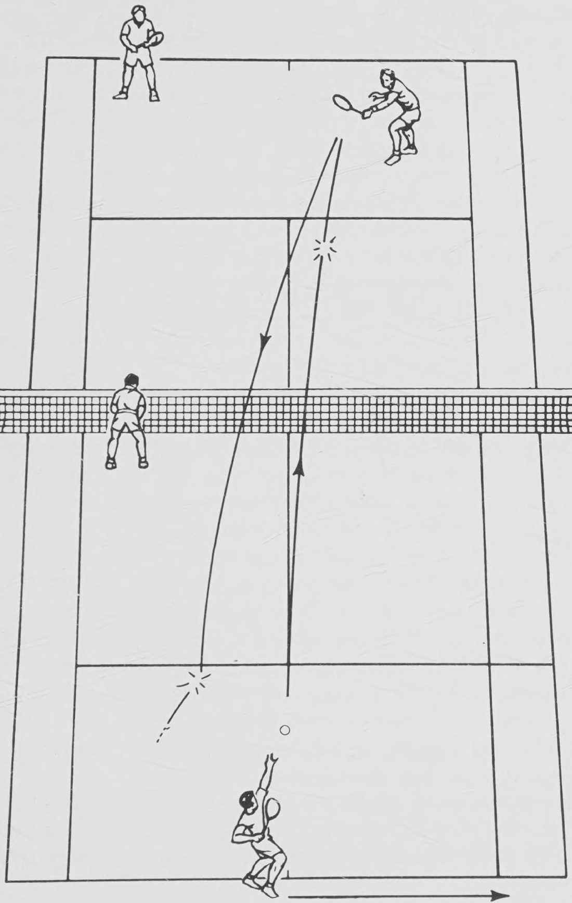
Để chơi Đội hình Song hành (nghĩa là người này đứng sau người kia), đối tác đứng lưới của bạn đứng cùng phía sân với bạn. Ở vị trí này, anh ta chặn hai cú trả bóng tự nhiên của người thuận tay trái: thuận tay chéo sân và trái tay sang phía không thuận. Bạn đứng ngay cạnh vạch trung tâm, định thực hiện một cú giao bóng cắt dọc theo đường trung tâm vào trái tay anh ta. Sau đó, bạn sẽ xử lý cú trả bóng của anh ta, mà bạn có thể kỳ vọng là sẽ yếu hơn trước đó.
To play Tandem (meaning one behind the other) your net partner stands on the same side of the court as you do. In this position he blocks the left-hander’s two natural service returns: crosscourt forehand and off-side backhand. You stand right beside the center mark, intending to swing a sliced serve down the center line to his backhand. After that you will deal with his return, which you can expect to be weaker than it was before. However, as soon as you have served you must move at once to cover your totally exposed forehand side. Serve and move—just as if you were serving and taking the net in one co- ordinated movement.
Tuy nhiên, ngay sau khi giao bóng, bạn phải di chuyển ngay lập tức để bao quát phía thuận tay đang bị hở hoàn toàn của mình. Giao bóng và di chuyển—giống như thể bạn đang giao bóng và chiếm lĩnh lưới trong một chuyển động phối hợp.
You do this—and the left-hander, from backhand (or forehand, if your serve did not find his backhand) hits the ball down the middle of the court between you and your partner into unguarded territory and scores a clean winner. What’s gone wrong this time? It’s the net man. See Illus. 8.
Bạn làm điều này—và người thuận tay trái, từ trái tay (hoặc thuận tay, nếu cú giao của bạn không tìm thấy trái tay anh ta) đánh bóng dọc theo trung tâm sân giữa bạn và đối tác của bạn vào vùng không có người bảo vệ và ghi một điểm thắng tuyệt đối. Điều gì đã sai lần này? Đó là người đứng lưới. Xem Hình 8.
Since you will be moving to your right to cover the exposed right side of the court, it is the net man who must protect the center. To have a chance of doing so he must begin by standing much nearer the center than usual, at least halfway between the singles sideline and the center line. He also needs to stand farther back than before, at least halfway back from the net to the service line, to give himself more time to move.
Vì bạn sẽ di chuyển sang phải để bao quát phía bên phải bị hở của sân, nên chính người đứng lưới phải bảo vệ trung tâm. Để có cơ hội làm vậy, anh ta phải bắt đầu bằng cách đứng gần trung tâm hơn nhiều so với bình thường, ít nhất là nửa đường giữa đường biên đơn và đường trung tâm. Anh ta cũng cần đứng lùi xa hơn trước, ít nhất là nửa đường lùi từ lưới đến vạch giao bóng, để cho mình có nhiều thời gian di chuyển hơn.
A net man may feel exposed and vulnerable in this position, but Tandem is not a natural and comfortable formation for the server either. All told you may feel you’re going to a lot of fuss and bother. On the other hand, it is the best tactic to contain an otherwise dominating left-hander. With plenty of practice beforehand you can apply it at will in a match.
Một người đứng lưới có thể cảm thấy bị hở và dễ bị tấn công ở vị trí này, nhưng Tandem cũng không phải là một đội hình tự nhiên và thoải mái đối với người giao bóng. Nói tóm lại, bạn có thể cảm thấy mình đang làm quá nhiều thứ và rắc rối. Mặt khác, đó là chiến thuật tốt nhất để kiềm chế một người thuận tay trái vốn dĩ áp đảo. Với nhiều sự luyện tập trước đó, bạn có thể áp dụng nó tùy ý trong một trận đấu.
Keep Tandem in mind not only for left-handers but also for any left-court right-hander with an over-developed backhand and an under-developed forehand. Many two-handed players are like that.
Hãy ghi nhớ Tandem không chỉ cho những người thuận tay trái mà còn cho bất kỳ người thuận tay phải nào ở ô bên trái với cú trái tay phát triển quá mức và thuận tay kém phát triển. Nhiều người chơi hai tay là như vậy.
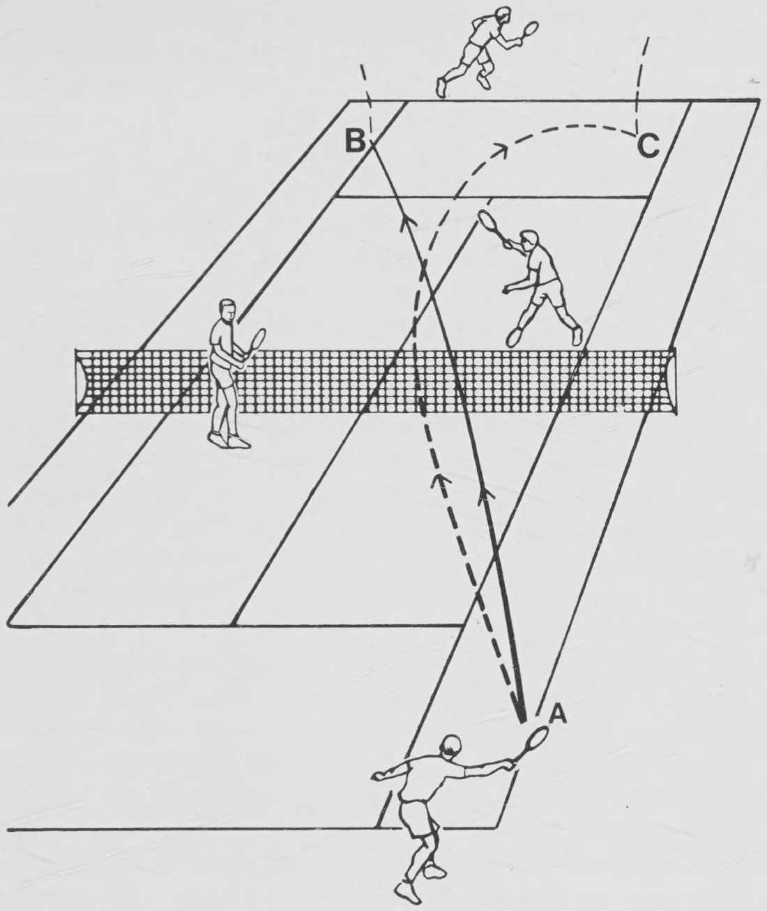
hiển thị cả hai cú đánh) và bạn chơi từ A. Bạn thường trao đổi những cú drive với anh ta, như AB, và nếu bạn có thể buộc anh ta di chuyển rộng, bạn có thể lốp bóng qua đầu đối tác của anh ta.
shot shown) and you play from A. You usually exchange drives with him, such as AB, and if you can force him wide you may then lob over his partner's head.
Nếu bạn cảm thấy cú drive của anh ta tốt hơn của bạn, hãy thực hiện một cú lốp như vậy ngay khi có cơ hội.
If you feel his driving is better than yours, play such a lob at the first oppor- tunity. Occasionally you can make a passing shot down the receiving net man’s sideline, but more often he tries to tempt you to try this.
Thỉnh thoảng bạn có thể thực hiện một cú đánh vượt qua (passing shot) dọc theo đường biên dọc của người đứng lưới bên nhận, nhưng thường thì anh ta cố gắng dụ bạn thử làm điều này.
ĐÁNH BÓNG BỀN SAU GIAO BÓNGRALLYING AFTER SERVICE
Mặc dù các chuỗi đánh bóng bền trong đánh đôi hiếm khi kéo dài như trong đánh đơn, nhưng một lượng nhất định các pha đánh bền cuối sân vẫn diễn ra. Nó thường kéo dài hơn từ phía bên phải sang ô bên phải, thuận tay đối thuận tay.
Though rallies in doubles are seldom as prolonged as they are in singles, a certain amount of baseline rallying does take place. It usually lasts longer from right side to right court, forehand to forehand.
Trừ khi cú trả giao bóng của đối thủ quá ngắn và cao đến mức bạn có thể dứt điểm một cú thắng vượt qua đối tác đứng lưới của anh ta hoặc gần như đánh xuyên qua anh ta, bạn sẽ sớm nhận ra rằng bạn muốn đối tác đứng lưới này đứng lùi lại (nhận bóng Hai Dưới) thay vì đứng ở lưới (nhận bóng Một trên Một dưới). Đội hình nhận bóng Hai Dưới cho phép người giao bóng nhiều không gian hơn. Từ một cú trả giao bóng yếu đến trung bình, bạn có thể tấn công vào trái tay của bất kỳ đối thủ nào. Đối với một cú trả bóng mạnh hoặc khó chịu, bạn không có một người đứng lưới đối phương đe dọa đứng ngay trên đầu mình.
Unless your opponent’s return of service has been so short and high that you can knock the ball for a winner past his net partner or almost clean through him, you soon come to realize you would rather this net partner were standing back (Two Back receiving) instead of being positioned at the net (One Up One Back receiving). A receiving Two Back formation allows the server much more scope. From a weak to fair service return, you can attack either opponent’s backhand. Against a strong or awkward return you haven’t got a threatening opposing net man standing over you.
Các pha đánh bền chống lại đội hình nhận bóng Một trên Một dưới thường theo mô hình hiển thị trong Hình 9, với cả hai người đứng lưới cố gắng chặn bóng nếu có thể.
Rallies against a receiving One Up One Back formation usually take the pattern shown in Illus. 9, with both net men trying to intercept if they can.
Nếu bạn có cú thuận tay mạnh hơn đối thủ ở cuối sân, chiến thuật của bạn là làm anh ta kiệt sức. Đừng coi điều này là thiếu sáng tạo, vì việc chiếm ưu thế trong một cuộc trao đổi cú drive thuận tay không bao giờ nhàm chán. Nếu cú thuận tay của anh ta tốt hơn của bạn, chiến thuật của bạn là phá vỡ bất kỳ cuộc trao đổi drive nào càng sớm càng tốt, trước khi quá muộn.
If you have a stronger forehand than your baseline opponent, your tactics are to wear him down. Do not regard this as un- imaginative, because getting on top in a forehand driving exchange is never dull. If his forehand is better than yours, your tactics are to break up any driving exchange as soon as possible, before it is too late.
Cú đánh đầu tiên được ưu tiên trong việc phá vỡ dự định này là một cú lốp bóng qua đầu người đứng lưới đối phương. Đó không chỉ là tránh cuộc trao đổi drive, mà là tấn công. Nếu bạn không để mắt để thực hiện cú đánh này ngay khi có cơ hội, bạn có thể không có cơ hội thứ hai. Bạn có khả năng phải nhận phần thua trong cuộc trao đổi drive và bị buộc phải lốp bóng phòng thủ. Khi đó, người đứng lưới sẽ chiếm thế chủ động, bất kể anh ta chọn tấn công một hay nhiều lần.
The preferred first shot in this intended break-up is a lob over the opposing net man’s head. That’s doing more than avoiding the driving exchange, it’s attacking. If you aren’t on the lookout to play this shot at the first opportunity you may not get a second chance. You are likely to receive the worst of the driving exchange and be forced to lob defensively. The net man then has the initiative, whether he chooses to take one or more bites at the cherry.
Nếu không có cơ hội để đánh bóng qua đầu người đứng lưới, lựa chọn
If there’s no opportunity to get over the net man’s head, your
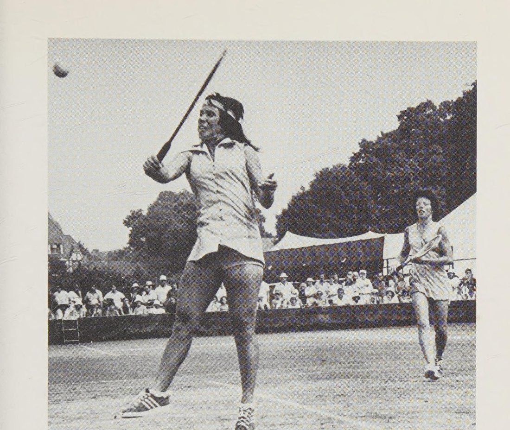
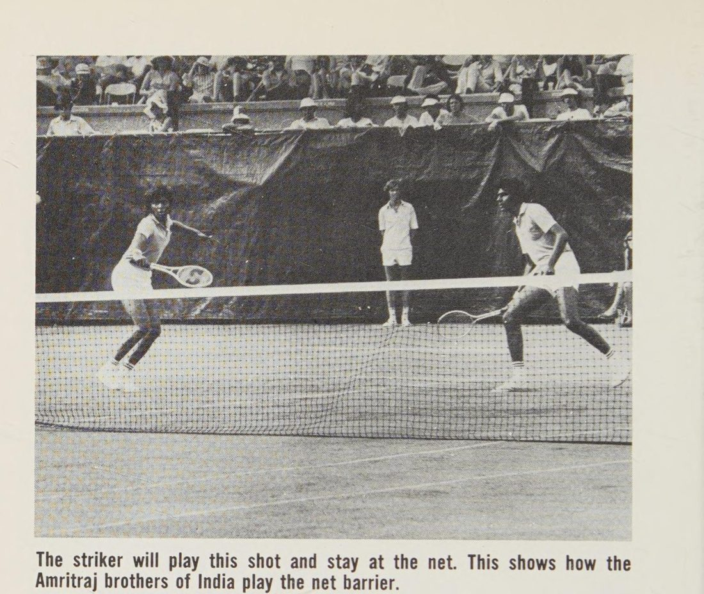
lựa chọn cú đánh tiếp theo để phá vỡ cuộc trao đổi là đánh quả bóng trở lại đối thủ cuối sân cao, chậm và sâu, và chờ đợi diễn biến. Đây thường là một chiến thuật tốt hơn là thử một cú bóng ngắn, điều mà dễ dàng chỉ là yếu hơn là gây khó khăn vì quá ngắn. Đối với cú đánh vượt qua dọc theo đường biên của người đứng lưới, nếu nó không thành công, đó gần như chắc chắn là một điểm thua cho phía bạn.
next choice of shot for breaking up the exchange is to play the ball back to your baseline opponent high and slow and deep, and await events. This is normally a better tactic than trying a short ball, which may easily be only weak rather than awkward- ly short. As for the passing shot down the net man’s sideline, if it doesn’t come off, it’s a near-certain loser for your side.
Biết điều này, bạn sẽ có thể tránh rơi vào trạng thái thiếu kiên nhẫn-tự sát thường thấy trong đánh bền Một trên Một Dưới. “Đánh vào khoảng sân trống” là kim chỉ nam của bạn.
Knowing this, you should be able to avoid falling into that impatient-suicide frame of mind so often seen in One Up One Back rallying. “Play into open court” is your guideline.
Trong đánh bền từ phía bên phải sang ô bên phải ở đánh đôi nữ, các bạn nữ sử dụng cú lốp bóng qua đầu người chơi lưới thường xuyên hơn nhiều so với nam giới. Điều này có thể hiểu được, vì cầu thủ nữ trung bình không thể với cao như vậy và hài lòng hơn với việc chỉ đánh bóng vượt qua và để mọi thứ cho đối tác cuối sân của mình.
In right side to right court rallying in women’s doubles, the girls use the lob over the net player’s head much more frequently than men think of doing. This is understandable, since the average female player cannot reach as high and is more content merely to cross over and leave things to her baseline partner.
Trong đánh đôi nam nữ, sự dễ bị tổn thương trước các cú lốp bóng qua đầu bạn nữ là gót chân Achilles của bất kỳ cặp nào xếp đội hình với bạn nam chơi ở ô bên phải và bạn nên luôn nhận thức đầy đủ về điều này. Lốp bóng qua người đứng lưới trong đánh đôi nam ít dễ dàng hơn, nhưng từ bất kỳ cú đánh rộng nào, bạn chỉ phải lốp qua phía trái tay của anh ta.
In mixed doubles, vulnerability to lobs over the girl’s head is the Achilles heel of any pair who lines up with the man playing in the right court and you should always be fully aware of this. Lobbing over the net man in men’s doubles is less easy, but from any wide shot it’s only his backhand side you have to get over. In short, lobbing over the net man should be a part of your game rather than a random occurrence. Learn from girls.
Tóm lại, lốp bóng qua người đứng lưới nên là một phần của lối chơi của bạn thay vì là một sự tình cờ. Hãy học tập các bạn nữ.
The reason for right side to right court exchanges often taking place is that both baseline players in these two diagonally opposed corners tend to stay back. Neither risks coming to the net, either against the other’s forehand drive or against his forehand lob over the net man’s head. From left side to left court, however, you should take the net as soon as you have made a good shot. Your opponent’s backhand is less likely to be too good for your volleying ability, and if he makes a back- hand lob over your partner’s head it will be on your forehand side, where you can probably cover it. It is usually a losing tactic to be pinned on the backhand baseline, with a hovering net man opposite you.
Lý do cho việc các pha trao đổi từ phía bên phải sang ô bên phải thường diễn ra là vì cả hai cầu thủ cuối sân trong hai góc đối diện chéo này có xu hướng đứng lùi.
Không ai mạo hiểm tiến lên lưới, dù là chống lại cú drive thuận tay của đối phương hay cú lốp thuận tay qua đầu người đứng lưới. Tuy nhiên, từ phía bên trái sang ô bên trái, bạn nên chiếm lĩnh lưới ngay khi bạn đã thực hiện một cú đánh tốt. Trái tay của đối thủ ít có khả năng quá tốt so với khả năng vô-lê của bạn, và nếu anh ta thực hiện một cú lốp trái tay qua đầu đối tác của bạn, nó sẽ nằm ở phía thuận tay của bạn, nơi bạn có thể bao quát được. Thường là một chiến thuật thua cuộc việc bị ghim ở vạch cuối sân trái tay, với một người đứng lưới lơ lửng đối diện bạn.
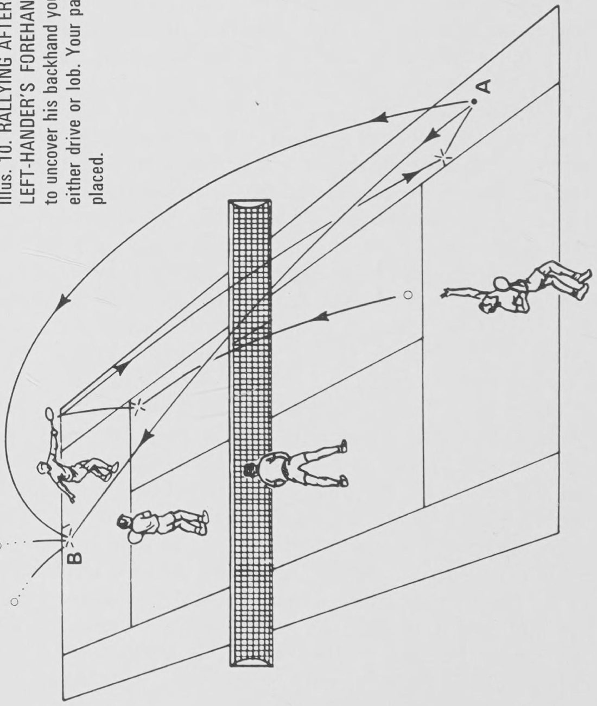
Bạn sẽ thấy nhận định cuối cùng đặc biệt chính xác khi bạn giao bóng cho một người thuận tay trái ở ô bên trái, người có khả năng dập liên tiếp những cú thuận tay vào góc trái tay của bạn. Nếu bạn không thích tiến lên lưới chống lại thuận tay của đối thủ ô bên phải, thì việc làm vậy chống lại một cú thuận tay trái thường mạnh hơn nuần là như đem đầu mình đặt vào miệng sư tử. Còn về việc lốp bóng qua người đứng lưới, đó là cú lốp trái tay của bạn chống lại cú đập thuận tay của anh ta, và bạn có thể trở nên không chắc chắn. Một chiến thuật tốt hơn, như chúng ta đã thấy, là giành quyền chủ động và chơi Đội hình Song hành (Tandem).
You will find the last statement particularly apt when you serve to a left-hander in the left court who is able to pound forehand after forehand into your backhand corner. If you haven’t liked going to the net against your right-court opponent’s forehand, it would be like putting your head into the lion’s mouth to do so against a left-handed forehand that is usually stronger again. As for lobbing over the net man, it’s your backhand lob against his forehand smash, and you can get very uncertain. It is a better tactic, as we have seen, to take the initiative and play Tandem.
Khi chơi Song hành, bạn có thể giao bóng vào trái tay của người thuận tay trái để nhận được một cú trả bóng mà bạn có thể xử lý bằng thuận tay của mình. Hoặc, bạn có thể giao bóng rộng để buộc anh ta để hở trái tay cho cú trả bóng tiếp theo của bạn. Như hiển thị trong Hình 10, điều này có thể là một cú drive hoặc cú lốp. Đây là lối chơi chủ động— tốt hơn nhiều so với việc bị mắc kẹt trong góc trái tay, thậm chí cảm thấy như mình đang ở dưới một cái hố.
When playing Tandem, you can serve to the left-hander’s backhand in order to receive a return you should be able to handle with your forehand. Or, you can serve wide to force him to uncover his backhand for your next return. As shown in Illus. 10, this can be either drive or lob. This is positive play— far better than being stuck in the backhand corner, perhaps even feeling you’re down in a hole.
GIAO BÓNG THUẬN TAY TRÁILEFT-HANDED SERVING
Trong một phần trước, Giao bóng sang Ô bên Trái, bạn đã thấy rằng thông thường là một chiến thuật tồi cho người thuận tay phải khi để hở trái tay cho đối phương tấn công bằng cách đứng ngay bên trái vạch trung tâm và giao bóng dọc theo đường trung tâm của ô bên trái. Hình ảnh phản chiếu của tình huống đó có vẻ là bạn, với tư cách là một người thuận tay trái, đứng ngay bên phải vạch trung tâm và giao bóng dọc theo đường trung tâm của ô bên phải. Nhưng đây không phải là một tình huống đảo ngược hoàn toàn và những khác biệt sẽ thay đổi kết quả thực tế.
In a previous section, Serving to the Left Court, you saw that it is normally a bad tactic for a right-hander to expose his backhand to attack by standing just to the left of the center mark and serving down the center line of the left court. The mirror-image of that situation may seem to be you, as a left- hander, standing just to the right of the center mark and serving down the center line of the right court. But this is not an exactly reversed situation and the differences alter the practical result.
Thứ nhất, cú giao bóng thuận tay trái của bạn hướng về trái tay của đối thủ, và ít cầu thủ ô bên phải có thể đánh một cú trái tay sang phía không thuận của họ với sức xuyên thấu như một cú thuận tay từ ô bên trái. Thứ hai, bạn có thể có một cú giao bóng cắt thuận tay trái uốn cong buộc đối thủ phải chơi trái tay
First, your left-handed serve goes to your opponent’s backhand, and few right-court players can hit a backhand to their off side with anything like the penetration of a forehand from the left court. Second, you may have a curving left- handed sliced serve that forces your opponent to play his
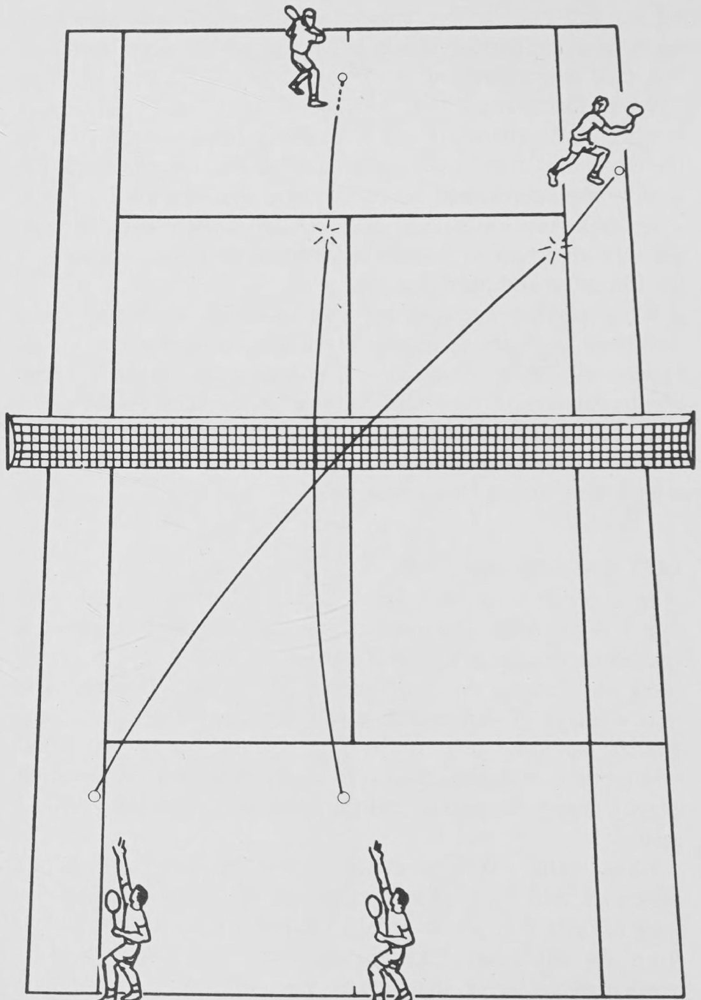
gần như từ phía sân của đối tác anh ta. Xem Hình.
backhand almost from his partner’s side of the court. See Illus.
Ngoài việc kéo giãn đối thủ, cú giao bóng sang ô bên phải này cho phép đối tác đứng lưới của bạn di chuyển tốt về phía trung tâm của sân với ít rủi ro để hở đường biên dọc của mình. Để giao bóng từ vị trí rộng hơn nhằm bảo vệ trái tay sẽ phá hủy hiệu quả của cú giao bóng. Tóm lại, nếu bạn cảm thấy đối thủ không thể xử lý cú giao bóng từ vạch trung tâm của bạn, hãy dùng nó để tấn công anh ta. Chỉ khi anh ta có thể xử lý nó, bạn mới nên di chuyển ra một vị trí phòng thủ hơn.
Besides stretching your opponent out, this serve to the right court allows your net partner to move well towards the center of the court with little risk of exposing his sideline. To serve from wider out to protect your backhand would destroy your serve’s effectiveness. In brief, if you feel your opponent can’t handle your center-mark serve, use it to attack him. Only if he can handle it should you move out to a more defensive position.
Tương tự, nếu bạn làm chủ được cú giao bóng cắt uốn cong này, bạn nên giao bóng từ vị trí rộng phía bên trái sang ô bên trái. Đối thủ sẽ cố gắng lốp bóng qua đầu đối tác của bạn, rộng về phía trái tay của bạn (hình ảnh phản chiếu của Tình huống DEF trong Hình 3 ở trang 15) nhưng anh ta sẽ không chính xác nếu anh ta thực hiện hầu hết các nỗ lực từ gần hàng rào biên. Có lẽ Hình 11 hơi cường điệu một chút ở đây, nhưng ai biết được một cơn gió tạt ngang hỗ trợ không bao giờ thổi? Dù sao, tất cả nó là một ví dụ điển hình về một cú đánh mạnh được sử dụng hết giá trị thay vì bị hạn chế bởi chiến thuật hoặc vị trí.
Similarly, if you have this curving sliced serve at your command, you should serve from wide out from the left side to the left court. Your opponent will try to lob over your partner’s head, wide to your backhand side (mirror-image of Situation DEF in Illus. 3 on page 15) but he won’t be very ac- curate if he is playing most of his attempts from near the side fence. Perhaps Illus. 11 exaggerates a little here, but who’s to say a little assisting crosswind never blows? Anyway, it all amounts to a good example of a strong stroke being used to its full value instead of being restricted by tactics or position.
Dù cường điệu hay không, trong Hình 11, một cú giao bóng cắt uốn cong trông ra là tự nhiên nhất đối với một người thuận tay trái, nhưng không may là không hiều cầu thủ có được nó như mong đợi. Truy nguyên về nguồn gốc, khi bạn bắt đầu chơi tennis, bạn không có cú giao bóng mạnh và bạn cần bảo vệ trái tay của mình. Vì vậy bạn đứng xa vạch trung tâm—ở phía bên phải, (trang đối diện)
Exaggerated or not, in Illus. 11 a curving sliced service looks to be most natural for a left-hander, but unfortunately not as many players have it as might be expected. Tracing this back to its origins, when you started to play tennis you did not have a strong serve and you did need to protect your backhand. So you stood well out from the center mark—on the right side, (opposite page)
gần vạch trung tâm này hoặc từ vị trí rộng phía bên trái, cú giao này có thể hiệu quả đến mức một người giao bóng thuận tay trái có thể chấp nhận để hở trái tay của mình đến mức tối đa. Ở phía bên phải bạn có thể thấy nó bị hở, và ở bên trái nó sẽ bị hở nếu người nhận lốp bóng qua người đứng lưới.
near this center mark or from wide out on the left side, this serve may be so effective that a left-handed server can afford to expose his backhand to the maximum. On the right side you can see it exposed, and on the left it would be open if the receiver lobbed over the net man.
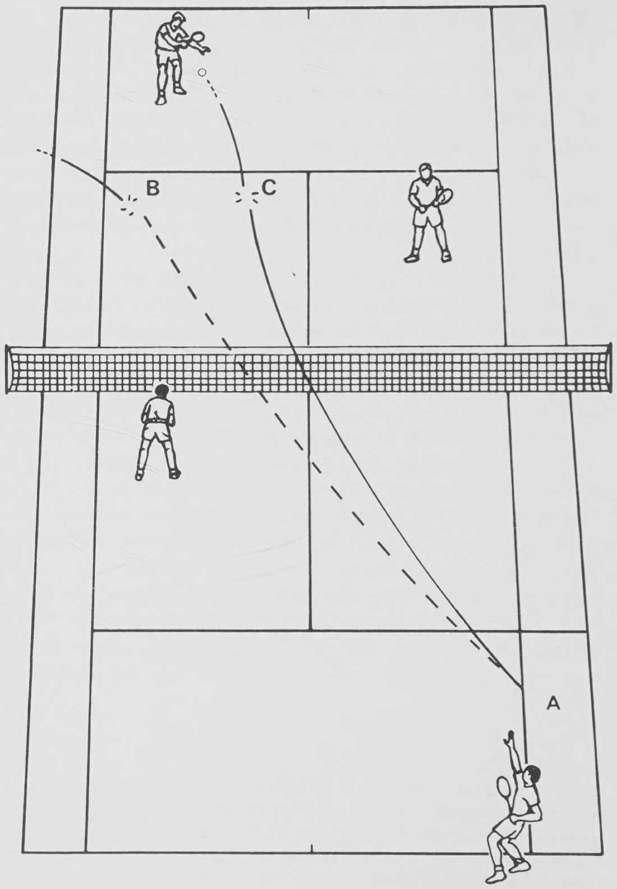
nơi trò chơi bắt đầu—và giao bóng, sang phía không thuận, tức là bên trái của bạn.
where the game begins—and served, to your off side, your left.
Điều này trở thành cách giao bóng tự nhiên hơn của bạn, thay vì cắt quanh quả bóng.
This became your more natural way of serving, rather than slicing round the ball.
Nếu bạn muốn phát triển một cú giao bóng cắt, hãy tập luyện từ từ.
If you want to develop a sliced serve, work up to it gently.
Bạn có nhiều khả năng bị chấn thương vai từ áp lực liên tục của một hành động giao bóng mới hơn là từ bất kỳ điều gì khác, chẳng hạn như đánh hỏng một hoặc hai cú smash hoang dã.
You are far more likely to develop shoulder trouble from the continued strain of a new service action than you are from any- thing else, such as mis-hitting an odd wild smash or two.
Hầu hết những người thuận tay trái thích loại giao bóng hành động xoáy lên.
Most left-handers prefer a topspin-action type of service.
Sử dụng cú giao như vậy, bạn có thể đứng rộng ở phía bên phải, giao bóng rộng sang thuận tay của đối thủ, và có sẵn cú thuận tay của chính mình cho hầu hết các cú trả bóng. Giống như cú giao bóng cắt uốn cong trong Hình 11, khái niệm ở đây là gây khó khăn cho đối thủ bằng cách kéo giãn anh ta ra. Tuy nhiên, tất cả những người thuận tay trái cũng nên nhận thức rõ về khả năng bẩm sinh trong việc kiềm chế hoặc làm gò bó đối thủ nhận bóng. Xem Hình 12.
Using such a serve you can stand wide out on the right side, serve wide to your opponent’s forehand, and have your own forehand available for most of the returns. Like the curving sliced service in Illus. 11, the concept here is to make it awkward for your opponent by stretching him out. However, all left- handers should also be well aware of their in-built ability to tie up or cramp their receiving opponent. See Illus. 12.
ĐỐI TÁC ĐỨNG LƯỚI CỦA NGƯỜI GIAO BÓNGSERVER’S NET PARTNER
ĐỐI TÁC ĐỨNG LƯỚI CỦA NGƯỜI GIAO BÓNG Như đã chỉ ra ở Hình 8 trang 35, khi nói về Tandem, người đứng lưới trung bình đứng quá gần cả lưới và đường biên dọc để có hiệu quả.
As indicated at Illus. 8 on page 35, speaking of Tandem, the average net man stands too close to both net and sideline to be effective.
Anh ta bảo vệ đường biên dọc của mình như thể sẽ là một nỗi nhục nếu từng có một cú thắng đi xuống đó, nhưng anh ta thản nhiên để quả (trang đối diện)
He protects his sideline as though it would be a disgrace if ever a winner went down there, yet he unblushingly allows ball (opposite page)
đường biên đôi và tung bóng trên đầu và hơi lệch sang phải.
the doubles sideline and throw the ball above your head and a little to the right.
Điều này đe dọa một cú giao xoáy lên rộng văng ra, AB. Thay vào đó, giao bóng gần như thẳng vào người nhận, AC. Độ cong uốn quả bóng hơi lệch sang trái anh ta, và sau đó cú nảy bật lên và gãy vào phía cơ thể anh ta, buộc anh ta phải thực hiện một cú trái tay gò bó với ít hoặc không có lực. Tương tự, từ phía bên trái, bạn có thể đẩy một cú giao bóng cắt vào sát cơ thể người nhận ở phía thuận tay. Chắc chắn đó phải là một trong những niềm vui của cuộc sống khi có một cú giao bóng thuận tay trái thực sự tốt.
This threatens a wide topspin serve kicking away, AB. Instead, serve about straight at the receiver, AC. The curve bends the ball somewhat to his left, and then the bounce kicks up and breaks in towards his body, making him play a cramped backhand with little or no power. Similarly, from the left side, you can tuck a sliced serve into the receiver's body on his forehand side. It must surely be one of the joys of life to have a really good left-handed serve.
bóng bay qua anh ta dọc theo trung tâm để đối tác của anh ta xử lý, gần như thể cầu thủ này không có đường biên dọc riêng để bao quát. Khi người nhận lốp bóng, người đứng lưới để nó vòng qua đầu mình và chỉ đơn giản là di chuyển sang phía bên kia, hài lòng rằng anh ta đã hoàn thành nhiệm vụ chiến thuật của mình bằng cách không đứng im ở phía sai lầm như một người mới bắt đầu. Khi đối tác của anh ta mất giao bóng, anh ta thường coi điều này hoàn toàn là do đối tác không giao bóng hoặc đánh bền đủ tốt.
after ball to sail past him down the center for his partner to deal with, almost as though this player didn’t have a sideline of his own to cover. When the receiver lobs, the net man lets it arc over his head and merely crosses to the other side, satisfied that he’s done his tactical duty by not staying over on the wrong side like a beginner. When his partner loses his serve, he usually considers this solely due to his not having served or rallied well enough.
Không phải vì người đứng lưới trung bình tự mãn hay vô cảm. Nhìn chung, anh ta đánh giá thấp sự hữu ích của chính mình cho đội. Đặc biệt, anh ta quá tự ý thức về việc bảo vệ đường biên dọc của mình.
It’s not that the average net man is either complacent or unfeeling. All round, he underrates his own usefulness to the side. In particular, he’s too self-conscious about protecting his sideline.
Anh ta cũng sai lầm về khả năng vô-lê của mình. Biết rằng mình không vô-lê tốt, anh ta lý luận rằng mình càng đứng gần lưới bao nhiêu thì càng có nhiều khả năng đưa bóng qua lưới, ngay cả khi đánh hỏng. Sự thật là nếu anh ta đứng lùi lại một chút so với lưới, anh ta sẽ có nhiều thời gian hơn để quan sát bóng và anh ta sẽ thực hiện cú vô-lê tốt hơn. Còn về những cú đánh hỏng, chúng hiếm khi qua lưới, bất kể bạn đứng gần lưới đến mức nào.
He’s also mistaken about his volleying. Knowing he doesn’t volley well, he reasons that the closer he stands to the net the more likely he is to get the ball over, even from a mis-hit. The truth is that if he stood only a little farther back from the net he would have more time to see the ball and he would play his volley better. As for mis-hits, they seldom go over, no matter how close you stand to the net.
Nếu bạn từng là một người đứng lưới khiêm tốn, bạn sẽ thấy rằng việc đứng lùi lại cho bạn nhiều thời gian hơn để chặn bóng—để hỗ trợ đối tác của bạn bằng cách bảo vệ trung tâm ở một mức độ nào đó. Nó cũng ngăn đối thủ lốp bóng qua đầu bạn, ít nhất là với một cú lốp kém.
If you have been a modest net man you will find that standing farther back gives you more time to intercept—to assist your partner by protecting the center to some degree. It also prevents your opponent from getting over your head, at least with a poor lob. As for that sideline you guard so zealously, you have more time to protect it.
Tham giaParticipating
Còn về đường biên dọc mà bạn bảo vệ một cách hăng hái, bạn có nhiều thời gian hơn để bảo vệ nó.
Next time you play, stand well back, almost halfway back to the service line, and see how you fare. You will probably do well against higher balls, but if one of the receivers forces you into errors on low volleys you should then stand a little closer to the net against that particular receiver. One thing is certain: you will feel a greater interest and sense of participation when your part-
Tham gia Lần tới khi thi đấu, hãy đứng lùi lại, gần như nửa đường lùi về vạch giao bóng, và xem bạn xoay xở ra sao. Bạn có lẽ sẽ chơi tốt chống lại những quả bóng cao, nhưng nếu một trong những người nhận buộc bạn mắc lỗi với những cú vô-lê thấp, bạn nên đứng gần lưới hơn một chút chống lại người nhận cụ thể đó. Có một điều chắc chắn: bạn sẽ cảm thấy sự quan tâm và cảm giác tham gia lớn hơn khi đối tác của mình đang giao bóng, thay vì gần như bị gạt ra khỏi cuộc chơi và chờ đợi nó kết thúc để bạn có thể tham gia trở lại.
ner is serving, instead of being more or less out of the game and waiting for it to end so that you can take part again.
Khi bạn đã tự tin chơi từ vị trí lùi sâu hơn, bạn nên thử đứng xa đường biên dọc hơn một chút.
Once you are confident about playing from farther back, you should try standing a little farther away from the sideline.
Đừng thử cả hai bước cùng lúc, hoặc vị trí mới của bạn có thể cảm thấy quá khác lạ và không thoải mái.
Do not try both steps at once, or your new position may feel radical and uncomfortable.
Không có vị trí đứng lưới cố định cho tất cả mọi người, vì vậy hãy thử nghiệm và tìm ra vị trí của riêng bạn. Ngay cả điều đó cũng sẽ thay đổi tùy theo những người nhận khác nhau và bạn có thể thích một vị trí hơi khác khi chơi ở phía bên phải hoặc bên trái của sân. Tổng cộng, bạn cần cảm thấy rằng đường biên dọc của mình đủ an toàn, rằng bạn có thể chạm tới một cú lốp ngắn, và đồng thời bạn sẵn sàng và khao khát bao quát trung tâm ở một mức độ nào đó. Để có ý niệm về phạm vi bao quát hợp lý, xem Hình 13.
There is no set net position for all players, so experiment and find your own. Even that will vary against different receivers and you may prefer a slightly different position when playing on the right or left side of the court. In total, you need to feel that your sideline is safe enough, that you can reach a short lob, and that at the same time you’re ready and anxious to cover the center to some extent. For an idea of your reasonable coverage, see Illus. 13.
Nếu bạn vẫn còn nghi ngờ về bất kỳ điều gì trong số này và nghĩ rằng nó chỉ áp dụng cho những người vô-lê giỏi, bạn nên học một bài học từ đối thủ của mình. Khi nhận bóng, chẳng phải bạn thích thấy người đứng lưới đối phương là một con mèo thuần thục sao? Trước đây bạn cũng có thể ngần ngại chiếm lĩnh vị trí lưới khi đối tác của bạn đang nhận bóng, nhưng với tư cách là một người chơi lưới tích cực, bạn sẽ nhận ra lợi ích của việc làm điều này, ít nhất là bất cứ khi nào anh ta nhận cú giao bóng hai.
If you are still in doubt about any of this and think it applies only to good volleyers, you should take a lesson from your opponents. When receiving wouldn’t you rather find that your opposing net man is a very tame cat? Previously you may also have been reluctant to take up a net position when your partner was receiving, but as a participating net player you will realize the benefit of doing this, at least whenever he is receiving a second serve.
Vô-lêVolleying
Muốn thực hiện những cú vô-lê thành công? Bạn sẽ nhanh nhẹn hơn nhiều theo cách đó và ít có khả năng đánh hỏng hơn nếu bạn ngần ngại. Hãy cố gắng đánh bóng thay vì cảm thấy bóng đang đánh bạn. Hãy tạo một vết bầm trên nó.
Want to make your volleys? You are much quicker that way and far less likely to mis-hit than if you are reluctant. Try to hit the ball instead of feeling it is hitting you. Put a bruise on it.
Giữ vợt chắc chắn và giữ cổ tay vững. Thực hiện một cú đánh ngắn và dứt khoát. Một cổ tay yếu và đầu vợt bị kéo lê hoặc rủ xuống trông thảm hại hơn bất kỳ khuôn mặt cầu thủ nào.
Hold your racket firmly and keep your wrist firm. Make a short sharp shot. A weak wrist and trailing or drooping racket head look more despondent than any player’s face ever can.
Nếu bóng cao và chậm về phía thuận tay, hãy trượt chân trái phía trước. Điều này đưa bạn gần lưới hơn và đồng thời xoay người nghiêng so với lưới. Cả hai hành động đều ngăn bạn
If the ball is high and slow to your forehand, slide your left leg well forward. This brings you closer to the net and, at the same time, turns you sideways to it. Both actions prevent your
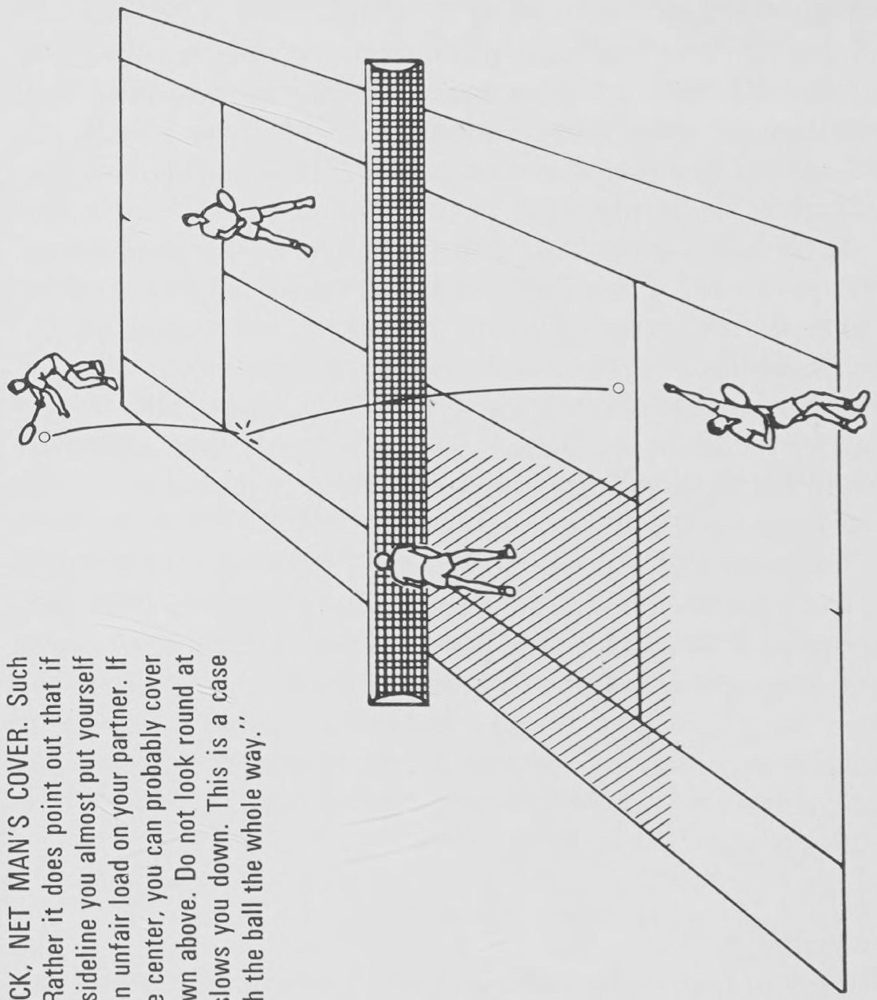
đánh bóng rộng ra khỏi sân. Nếu một quả bóng tương tự bay về trái tay, hãy trượt chân phải về phía trước. Đây là những gợi ý đơn giản. Chà, vô-lê là dễ nhất khi bạn đứng tại lưới trong đánh đôi.
slicing the ball wide out of court. If a similar ball is to your backhand, slide your right leg well forward. These are simple hints. Well, volleying is at its easiest when you are stationed at the net in doubles.
Đập bóng (Smash)Smashing
Đập bóng (Smashing)
Regard it as correct doubles tactics that you should always try to reach as many lobs as possible and smash them, in preference to crossing meekly over to the other side and leaving them to your partner. Do not imagine that you always have to smash at full bore, any more than you always serve that way.
Hãy coi đó là chiến thuật đánh đôi chính xác rằng bạn nên luôn cố gắng chạm tới càng nhiều cú lốp càng tốt và đập chúng, thay vì chỉ lặng lẽ di chuyển sang phía bên kia và để chúng cho đối tác của bạn. Đừng tưởng tượng rằng bạn luôn phải đập hết sức, cũng như bạn không phải lúc nào cũng giao bóng theo cách đó.
The downward path of an overhead makes the ball bounce uncomfortably high for your opponents. Therefore, your smashes will usuaily inconvenience your opponents more than your serving partner’s shot would have. Use an action similar to your service, but not identical because you do not need as much swing. To serve, take your racket up behind your body; to smash, take it up in front.
Khi Bạn bị Lốp bóng qua đầuWhen You're Lobbed Over
Đường đi hướng xuống của một cú đánh trên đầu khiến quả bóng nảy lên cao một cách khó chịu cho đối thủ. Do đó, các cú đập bóng của bạn thường sẽ gây khó khăn cho đối thủ nhiều hơn là cú đánh của đối tác giao bóng của bạn. Sử dụng một hành động tương tự như cú giao bóng của bạn, nhưng không hoàn toàn giống hệt vì bạn không cần vung vợt nhiều như vậy. Để giao bóng, hãy đưa vợt lên phía sau cơ thể; để đập bóng, hãy đưa vợt lên phía trước.
For clarity, let’s take two extreme cases.
Khi Bạn bị Lốp bóng qua đầu Để rõ ràng, hãy lấy hai trường hợp cực đoan.
LE TELE
Tất nhiên là điều đó hiển nhiên. Nhưng hãy quan sát các cặp khác, và hết lần này đến lần khác bạn sẽ thấy người đứng lưới di chuyển thẳng sang ngang và chỉ bắt đầu loạng choạng lùi lại khi đối thủ chuẩn bị đập bóng—và anh ta kết thúc bằng việc thu bóng bằng dây giày của mình.
Of course it’s obvious. But watch other pairs, and time and again you'll see the net man cross straight over and only begin to teeter back when the opponent is about to smash—and he ends by collecting the ball on his shoelaces.
Bạn có thể đang rút lui theo đường chéo hướng tới đội hình Hai Dưới chỉ để thấy rằng đối tác của bạn đang thực hiện một cú cứu bóng tuyệt vời bằng cú lốp trái tay.
You may be retreating diagonally towards a Two Back formation only to see that your partner is making a fine recovery with his backhand lob. He sends up a long diagonal ball that will land deep in the opponents’ backhand corner and put them on the defensive. Check your retreat at once and go up, taking up your attacking One Up One Back formation again.
Anh ta gửi một quả bóng chéo dài sẽ rơi sâu vào góc trái tay của đối thủ và khiến họ phải phòng ngự. Hãy dừng việc rút lui ngay lập tức và tiến lên, tái lập đội hình tấn công Một trên Một dưới của bạn một lần nữa.
You'll see players failing to do this too, but all that the correct tactic amounts to is, “One Up One Back for attack. —
Hãy Bắt tay vàoGo To It
Bạn cũng sẽ thấy những cầu thủ không làm được điều này, nhưng tất cả những gì mà chiến thuật chính xác hướng tới là, “Một trên Một dưới để tấn công. — Hãy Thực hiện đi Bạn không được kỳ vọng phải trở thành một chuyên gia vô-lê và đập bóng, bao quát hoàn toàn trung tâm và xử lý mọi cú lốp hướng về phía sân của mình. Nếu bạn làm được, bạn sẽ chơi với một đối tác có khả năng tương đương và cả hai sẽ chơi lối chơi Lên lưới thay vì Một trên Một dưới.
You are not expected to be a champion volleyer and smasher, covering the center completely and dealing with every lob directed to your side of the court. If you were you’d be playing with a partner of similar ability and you’d both be playing a Net Game formation instead of One Up One Back.
Tuy nhiên, chiến thuật yêu cầu bạn phải thực hiện một mức độ bao quát lưới nhất định—nếu không đối thủ sẽ thực sự như chơi hai chống một—vì vậy hãy thực hiện đi.
Just the same, tactics demand that you exert some degree of net coverage—or your opponents would virtually be playing two against one—so go to it.
Tương tự, các bạn nữ có lẽ sẽ đồng ý rằng trong đánh đôi nữ người chơi lưới thường thu mình sát vào góc tạo bởi lưới và đường biên dọc, để đối tác giao bóng tự xoay xở một mình. Lý luận khiêm tốn của cô ấy là cô tin rằng các cú đánh cuối sân của đối tác an toàn hơn là lối chơi lưới của chính mình. Có lẽ đúng là vậy, nhưng liệu chúng có luôn hiệu quả hơn?
Similarly, girls will probably agree that in women’s doubles the net player is usually tucked close into that corner made by net and sideline, leaving her serving partner to make or break it alone. Her modest reasoning is that she believes her partner’s groundstrokes to be safer than her own net-play. Perhaps they are, but are they always more effective? Leave that unsettled, but let’s say positively that any girl who volleys confidently should get away from that net-sideline nook and play her valu- able part in the game.
Hãy để điều đó chưa ngã ngũ, nhưng hãy khẳng định rằng bất kỳ bạn nữ nào vô-lê tự tin nên rời khỏi cái góc lưới-biên dọc đó và đóng góp vai trò quan trọng của mình trong trận đấu.
Người chơi lưới ngần ngại nhất trong tất cả là bạn nữ trong đánh đôi nam nữ, gần như có một tình yêu với cột lưới. Nếu bạn là một người như vậy, không yêu cầu bạn phải nở rộ sau một đêm thành một chuyên gia vô-lê bao quát trung tâm đầy táo bạo, nhưng bạn thực sự nên đứng lùi lại để ngăn chặn các cú lốp bóng được đánh vào bạn. Nếu bạn liên tục bị lốp bóng qua đầu bởi bạn nữ đối phương ở ô bên phải, bạn đang cho phép cú thuận tay của đối tác mình bị loại bỏ khỏi cuộc chơi chỉ trong một cú đánh—một cú đánh được thực hiện bởi thành viên yếu hơn của cặp đối thủ, trong khi cùng lúc đó đối tác của cô ấy làm chủ lưới.
The most reluctant net player of all is the girl partner in mixed doubles, almost having a love affair with the net post. If you're one, it’s not suggested that you blossom overnight into a dashing center-covering volleyer, but you really should stand farther back to discourage lobs being played against you. If you are constantly lobbed over by the opposing girl in the right court, you’re allowing your partner’s forehand to be shut out of the game in one stroke—one stroke made by the weaker member of your opposing pair, while at the same time her partner commands the net.
Chặn bóngIntercepting
Chặn bóng (Intercepting)
If your last doubt about net play concerns intercepting, here are two basic principles:
Nếu nghi ngờ cuối cùng của bạn về lối chơi lưới liên quan đến việc chặn bóng, đây là hai nguyên tắc cơ bản:
Any ball you can hit for a certain winner in one shot is yours. It does not matter if you cross right over to your backcourt partner’s sideline and end by leaning on the side fence. The point is over. You, the player nearer the net, were the right one to have made it.
Bất kỳ quả bóng nào bạn có thể đánh thành một cú thắng chắc chắn trong một cú đánh là của bạn. Không quan trọng nếu bạn băng thẳng sang đường biên dọc của đối tác cuối sân và kết thúc bằng cách tựa vào hàng rào biên. Điểm số đã kết thúc. Bạn, người chơi gần lưới hơn, là người thích hợp để thực hiện điều đó.
u In any position where you can make a more penetrating shot with your volley than your backcourt partner could have with a groundstroke and you can return at once to your original position without loss of balance, the shot is yours.
Trong bất kỳ vị trí nào mà bạn có thể thực hiện một cú đánh xuyên thấu hơn với cú vô-lê của mình so với cú đánh cuối sân mà đối tác của bạn có thể thực hiện và bạn có thể quay trở lại vị trí ban đầu ngay lập tức mà không mất thăng bằng, thì cú đánh đó là của bạn.
That is not poaching (or sharking, especially when it’s in mixed). It is intercepting. Apply the opponent test once more; isn’t it much simpler to play against a pair whose net man never intercepts?
Đó không phải là cướp bóng (poaching hoặc sharking, đặc biệt là trong đánh đôi nam nữ). Đó là chặn bóng. Hãy áp dụng bài kiểm tra đối thủ một lần nữa; chẳng phải sẽ đơn giản hơn nhiều khi đối đầu với một cặp mà người đứng lưới của họ không bao giờ chặn bóng sao?
Played in this way, interception is a sound tactic, without a shadow of a gamble attached. However, now and then you see a good net player do more than that. Having decided that his opponent is committed to playing a drive across court, he dives
Được chơi theo cách này, chặn bóng là một chiến thuật vững chắc, không hề có một sự mạo hiểm nào đi kèm. Tuy nhiên, thỉnh thoảng bạn sẽ thấy một người chơi lưới giỏi làm nhiều hơn thế. Sau khi quyết định rằng đối thủ đã cam kết thực hiện một cú drive chéo sân, anh ta lao vượt xa trung tâm và thực hiện một cú vô-lê thắng điểm. Không gì thành công như sự thành công, vì vậy nó được gọi là một cú chặn bóng táo bạo. Nhưng ếu đối thủ đánh lừa được người đứng lưới này và, vào giây cuối cùng, thay đổi hướng đánh và dễ dàng vượt qua anh ta dọc theo đường biên dọc bị hở rộng—thì anh ta phải trả giá cho sự không thành công và bị gọi là 'kẻ săn mồi' (shark).
Những cú chặn bóng táo bạo chỉ có thể được thực hiện nhất quán khi đối thủ không đủ giỏi để đánh lừa bạn. Ở nơi anh ta có thể làm vậy, và bạn phải đợi thêm một phần nhỏ thời gian để chắc chắn anh ta không thể thay đổi hướng, bạn sẽ quá muộn cho một cú chặn bóng táo bạo. Thật thất vọng khi nghe điều này—nhưng đó là tennis.
over well past the center and brings off a winning volley. Nothing succeeds like success, so it’s called a daring interception. But if the opponent second guesses this net man and, at the last second, alters his direction and easily passes him down his widely exposed sideline—then he pays the penalty of non- success and is called a shark.
Daring interceptions can be made consistently only where your opponent is not good enough to second guess you. Where he might do so, and you have to wait that extra fraction to be certain he cannot change direction, you will be too late for a daring interception. It’s disappointing to hear—but that’s tennis.
3. Một trên một dưới — Nhận giao bóng
Nhận bóng Một trên Một dưới có nghĩa là người chơi trả giao bóng thường đứng lùi lại và chơi các cú đánh cuối sân và đối tác của anh ta chiếm vị trí lưới và chặn bất cứ điều gì anh ta có thể một cách an toàn. Đôi khi đối tác của người nhận đứng lùi lại trong khi cú giao bóng một được thực hiện và đôi khi người đứng sau (người nhận giao bóng) tiến lên sau khi đánh một quả bóng ngắn, nhưng đội hình cơ bản của họ được phân loại là Một trên Một dưới.
ONE Up ONE BACK receiving means that the player who returns the service normally stays back and plays ground- strokes and his partner takes the net position and cuts off whatever he safely can. Sometimes the receiver’s partner stays back while the first service is delivered and sometimes the back man (service receiver) follows in after playing a short ball, but their basic formation is classified as One Up One Back.
NGƯỜI ĐỨNG LƯỚINET MAN
Mặc dù người đứng lưới thường chiếm vị trí sai khi đối tác của anh ta đang giao bóng, chính người đứng lưới này, khi anh ta trở thành người đứng lưới nhận bóng, hiếm khi hoặc không bao giờ thu mình vào góc chật hẹp gần lưới và đường biên dọc. Với góc nhìn thay đổi, bây giờ anh ta tìm kiếm sự tham gia thay vì né tránh nó. Anh ta thường chờ đợi diễn biến từ ngay phía trong vạch giao bóng.
Although the net man often takes a faulty position when his partner is serving, this same net man, when he becomes the receiving net man, seldom or never crowds himself away in that tight corner near net and sideline. With changed outlook, he now looks for participation instead of avoiding it. He usually awaits developments from just inside the service line.
Sau đó, khi đối tác của anh ta đánh bóng an toàn vượt ra ngoài tầm với của người đứng lưới đối phương hoặc qua đầu anh ta, anh ta tiến lên—không quá gần, nhưng đến nơi mà anh ta cảm thấy mình có cơ hội tốt nhất để chặn bóng. Anh ta không để hở đường biên dọc của mình, nhưng anh ta ít quan tâm đến điều đó hơn khi anh ta ở lưới với đối tác của mình đang giao bóng.
Then, as his partner plays the ball safely wide of the opposing net man’s reach or over his head, he moves in—not too close, but to where he feels he has the best chance of intercepting. He doesn’t expose his sideline, but he’s less concerned with that than when he is at the net with his partner serving.
Điều này là tự nhiên đối với anh ta. Đối tác của anh ta sẽ drive hoặc lốp bóng về phía cuối sân và vì vậy người giao bóng sẽ ở xa và người đứng lưới nhận bóng cảm thấy khao khát được tham gia. Ngược lại, khi đối tác của anh ta giao bóng (và bóng phải rơi vào ô giao bóng và vì thế là ngắn), người đứng lưới của bên giao bóng cảm thấy rằng người nhận gần như đang đứng ngay trên đầu mình. Anh ta đứng trong góc của mình, quyết tâm bảo vệ đường biên dọc hoặc bị đánh bại trong nỗ lực đó.
{t’s natural for him to do all this. His partner is going to drive or lob to the back of the court and so the server will be far away and the receiving net man feels keen to participate. In contrast, when his partner serves (and the ball has to drop into the service court and so is short), the server’s net man feels that the receiver is almost on top of him. He stays in his corner, determined to guard his sideline or dic in the attempt.
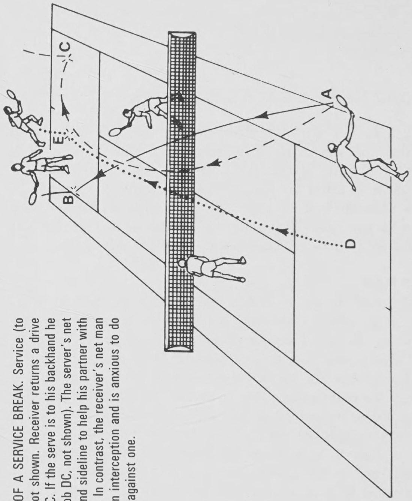
Hệ quả trong đánh đôi Một trên Một dưới là thường thì cặp nhận bóng tự nhiên chiếm vị trí tốt hơn cặp giao bóng. Đây là một lý do (thuần túy chiến thuật) tại sao các cú giao bóng bị phá vỡ thường xuyên hơn ở cấp độ chơi thấp hơn là ở tie chuẩn cao hơn. Xem Hình 14.
It follows in One Up One Back doubles that often the receiving pair naturally takes up a better position than does the serving pair. This is one reason (purely tactical) why services are broken more often at lower levels of play than at a higher standard. See Illus. 14.
CHỌN PHÍA SÂNCOURT SIDES
Bạn nên cảm thấy thoải mái khi nhận bóng ở cả ô bên phải hoặc bên trái, vì khả năng này cho phép bạn phối hợp với nhiều loại đối tác. Tuy nhiên, một khi bạn lập đội với một đối tác cố định, mỗi người trong số bạn nên chọn một ô hoặc ô kia và đứng yên ở đó.
You should be at home receiving in either the right or left court, since this ability allows you to fit in with a range of partners. However, once you team with a regular partner each of you should settle for one court or the other and stay there.
Bằng cách này, bạn sẽ phát triển một sự kết hợp tốt hơn so với điều có thể nếu bạn liên tục thay đổi. Dưới đây là một số hướng dẫn để chọn sân.
In this way, you will develop a better combination than would be possible if you continually changed. Here are some guide- lines for choosing courts.
Ô bên phải nên được chọn bởi người chơi có cú thuận tay tốt hơn và ô bên trái bởi người chơi có cú trái tay tốt hơn. Đừng tưởng tượng rằng điểm mạnh của bạn nên hướng về trung tâm vì lý do là đối thủ có thể hướng hầu hết các cú đánh vào đó. Yếu tố chi phối là cú trả giao bóng. Vì người giao bóng đối phương có thể dễ dàng chạm tới hai cánh ngoài của cả hai người nhận, việc đặt điểm mạnh của bạn ở trung tâm sẽ có nghĩa là anh ta có thể đưa một tỷ lệ cao các cú giao bóng một vào sân về phía những mặt yếu của bạn.
The right court should be taken by the player with the better forehand and the left court by the player with the better back- hand. Do not imagine that your strengths should be towards the center for the reason that your opponents may direct most shots there. The governing factor is the service return. Since the opposing server can most easily reach the outside wings of both receivers, to plant your strength in the center would mean that he could get a high proportion of his first serves into court to your weaker sides.
Nếu một người chơi tốt hơn ở cả thuận tay và trái tay so với đối tác của mình, anh ta thường là cầu thủ mạnh hơn và nên chọn ô bên trái. Từ phía này, anh ta có thể bao quát nhiều phần của sân hơn và chiếm lĩnh nhiều hơn cuộc chơi.
If one player is better on both forehand and backhand than his partner he is usually the stronger player and should take the left court. From this side he can cover more of the court and take more of the play.
Hai đối tác có thể có những cú thuận tay và trái tay hợp lý, nhưng một người chuyên về drive và người kia chuyên về vô-lê. Người vô-lê nên chơi ở ô bên trái, từ đó anh ta có thể chặn bóng tốt hơn, và thực hiện nhiều cú đánh trên đầu hơn.
Two partners may have reasonable forehands and backhands, but one specializes in driving and the other in volleying. The volleyer should play in the left court, from where he can intercept better, and take more overhead shots.
Một người thuận tay trái nên chơi ở ô bên trái. Có ý kiến cho rằng điều này dẫn đến việc có hai cú trái tay dọc theo đường trung tâm
A left-hander should play in the left court. The point is sometimes made that this results in a double backhand down the
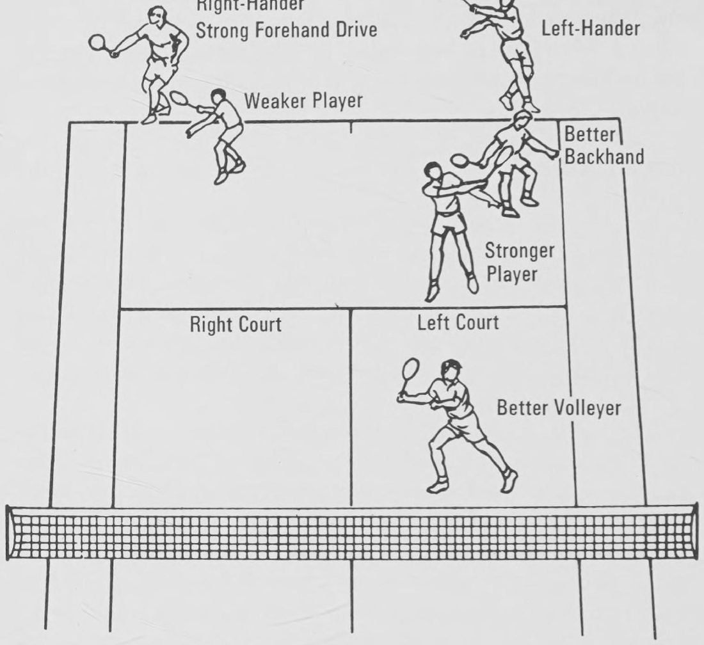
rằng một người thuận tay trái chơi ở ô bên phải và đối tác của anh ta ở ô bên trái sẽ tạo ra một lối chơi thiên về trái tay.
that a left-hander playing in the right court and his partner in the left produces a backhanded game.
Điều này chỉ tạm chấp nhận được nếu cả hai đối tác đều ổn định ở cú trái tay hơn là thuận tay. Trong trường hợp tốt nhất, điều đó sẽ tạo ra một cặp phòng ngự.
This will just pass muster if both partners are much steadier on backhand than forehand. At best, that would produce a defensive pair.
Một người thuận tay trái với cú thuận tay rất tốt nên luôn chơi ở ô bên trái. Như chúng ta đã thấy trước đó, anh ta có thể thống trị trận đấu.
A left-hander with a very good forehand should always play in the left court. As we have seen earlier, he may dominate the game.
Hình 15 là bản tóm tắt bằng hình ảnh của tất cả những điều này.
Illus. 15 is a pictorial summary of all this.
Hầu hết các ngoại lệ rõ ràng hơn là thực tế. Ví dụ, hai đối tác thuận tay trái có thể làm theo các mô hình dành cho hai người thuận tay phải. Nhưng chuyện gì sẽ xảy ra nếu bạn có một người thuận tay phải với cú thuận tay, vô-lê và overhead mạnh mẽ? Anh ta nên chơi ô bên phải để tận dụng tối đa cú thuận tay hay ô bên trái để khai thác khả năng bao quát lưới của mình?
Most exceptions are more apparent than real. For example, two left-handed partners can follow the patterns given for two right-handers. But what if you had a right-hander with powerful forehand, volley and overhead? Should he play right court to make full use of his forehand or left court to exploit his net coverage?
Chà, nếu anh ta có cú trái tay hợp lý, anh ta có lẽ là cầu thủ mạnh hơn trong hai đối tác, và do đó nên chiếm ô bên trái. Nếu cú trái tay của anh ta thấp hơn nhiều so với tiêu chuẩn của cú thuận tay, anh ta có lẽ thành thạo trong việc bước quanh bóng và sử dụng cú thuận tay gần như toàn thời gian, trong trường hợp đó anh ta nên ở ô bên trái. Nếu cú trái tay của anh ta cực kỳ dễ bị tấn công, anh ta sẽ phải sang ô bên phải. Điều đó có nghĩa là khả năng bao quát trung tâm bằng cú overhead sẽ bị mất và hiệu quả vô-lê cũng sẽ bị giảm đến một mức độ nào đó. Chúng không quan trọng bằng khả năng trả giao bóng của anh ta.
Well, if he has a reasonable backhand, he’s probably the stronger player of the two partners, and therefore should take the left court. If his backhand is well below the standard of his forehand he’s probably adept at stepping round it and using his forehand nearly all the time, in which case he should stay in the left court. If his backhand is highly vulnerable, he will have to go to the right court. That means his overhead coverage of the center will be lost and volleying efficiency will also be reduced to some extent. They’re not as important as his return of service capability.
Đánh đôi Nữ và Nam Nữ Các tiêu chí chọn bên của nam giới cũng áp dụng cho đánh đôi nữ. Vui lòng xem lại Hình 15.
Women’s and Mixed Doubles The criteria for men’s choice of sides applies to women’s doubles. Please see Illus. 15 again.
Trong đánh đôi nam nữ, yếu tố chi phối là sự tham gia nhiều hơn của cầu thủ mạnh hơn và điều đó thường có nghĩa là nam giới nên chơi ở ô bên trái. Không cần tranh luận thêm, hãy chấp nhận những gì đã được chứng minh là đúng qua nhiều năm, cụ thể là, một người nam chiếm ô bên phải phần lớn khiến anh ta bị gạt ra khỏi cuộc chơi. Còn đối với bạn nữ chơi ở ô bên trái, điều đó có khả năng là quá sức đối với cú trái tay của cô ấy. Nếu trái tay tình cờ là cú đánh tốt hơn của cô ấy, điều này là do sự ổn định hơn là tốc độ hoặc sức mạnh thực sự. Do đó, nó khó có thể đánh bại cú giao bóng của đối phương là nam và đối với cú giao bóng của bạn nữ, cô ấy vẫn phải đối mặt với việc đánh bóng băng qua một người đứng lưới đầy hăng hái. Vì vậy trong đánh đôi nam nữ, gần như luôn là nữ bên phải và nam bên trái.
In mixed doubles, the over-riding factor is greater partici- pation by the stronger player and that usually means that the man should play in the left court. Without debating it further, let’s accept what has been found to be true over the years, namely, that a man taking the right court largely puts himself out of the game. As for the girl playing in the left, it’s likely to be too much for her backhand. If her backhand happens to be her better shot this will be due to steadiness rather than speed or real strength. It is therefore unlikely to defeat the opposing man’s service and against the girl’s serve she’s still faced with hitting it across a predatory net man. So in mixed doubles, it’s nearly always girls to the right and men to the left.
Một bạn nữ thuận tay trái tạo ra một sự phức tạp. Nếu cô ấy có thể chơi ở ô bên phải, cô ấy nên làm vậy. Không phải vì cô ấy sẽ chơi tốt hơn ở đó, mà vì hiệu quả lớn hơn của bạn nam khi chơi ở ô bên trái thay vì từ bên phải sẽ khiến họ trở thành một cặp mạnh hơn về tổng thể. Để có thể chơi ở ô bên phải, cô ấy cần là một người thuận tay trái với cú thuận tay thẳng và trái tay vững chãi.
A left-handed girl introduces a complication. If she can play in the right court she should. Not that she’ll play better there, but because the greater effectiveness of the man playing in the left court rather than from the right will make them a stronger pair in sum. To be able to play in the right court she needs to be a left-hander with a straight forehand and firm backhand.
Nếu cô ấy là loại người thuận tay trái phổ biến với cú thuận tay xoáy chéo và trái tay xoáy ngược sang phía không thuận, cô ấy sẽ quá không phù hợp với ô bên phải đến mức hiệu quả lớn hơn của bạn nam từ bên trái cũng không bù đắp nổi. Cú trái tay của cô ấy không thể chịu đựng được cú giao bóng của đối phương là nam cũng như không thể tránh khỏi anh ta khi anh ta ở trên lưới. Vì vậy lần này bạn nữ phải có ô bên trái quen thuộc và bạn nam chiếm ô còn lại.
If she’s the more usual type of left-hander with topspin crosscourt forehand and underspin backhand to the off side she would be so unsuited to the right court that the man’s greater effectiveness from the left would not counterbalance it.
Hy vọng không hề mất đi nếu cả hai đều biết cách chơi đội hình này. Trước hết, cả hai đều có thuận tay hướng ra phía ngoài, vì vậy nhiệm vụ của người giao bóng đối phương sẽ khó khăn hơn.
Her backhand could neither stand up to the opposing man’s serve nor keep clear of him when he is on the net. So this time the girl’s got to have her accustomed left court and the man takes the one that’s left over.
Giả sử bạn nam trả bóng và tiến lên, đây là một cách thực hành tấn công đánh đôi nam nữ khá chuẩn. Đối tác nữ của anh ta, như những người thuận tay phải, có thể đứng ở lưới hoặc ở cuối sân. Nếu ở phía sau, cú trả bóng của người giao sẽ được đánh dọc theo đường biên đến cô ấy, để tránh người nam đã tiến lên lưới, nhưng nó sẽ chủ yếu đến với cú thuận tay trái của cô ấy, điều mà có lẽ là cú đánh mạnh nhất của cô ấy. Nếu cô ấy đứng ở lưới và đối tác của cô ấy đã trả một cú thuận tay rộng và mạnh, cô ấy
Ali is by no means lost if they both know how to play this formation. To begin with, both have their forehands to the outside, so the opposing servers’ tasks will be more difficult.
Let’s assume the man returns and follows in, which is fairly standard attacking mixed doubles practice. His girl partner, like her right-handed sisters, can stand at the net or at the back of the court. If at the back, the server’s return will be made down the line to her, to avoid the man who has followed in to the net, but it will mostly come to her left-handed forehand which is probably her strongest shot. If she stands at the net and her partner has played a strong wide forehand return, she is
không hoàn toàn dễ bị lốp bóng vì một lần nữa, cú lốp sẽ hướng về phía thuận tay của cô ấy, nơi cô ấy có thể với cao hơn. Để tăng sự bảo vệ ở đây, cô ấy không nên đứng gần lưới hơn khoảng nửa đường giữa vạch giao bóng và lưới. Cô ấy cần luôn nhận thức được rằng nếu bị lốp bóng qua đầu, quả bóng sẽ nằm ở phía trái tay của đối tác, nơi khả năng bao quát cú lốp của anh ta bị hạn chế.
not completely vulnerable to a lob because again it would be to her forehand side, where she can reach higher. To increase her protection here she should stand no closer to the net than about halfway between service line and net. She needs always to be aware that if she’s lobbed over, the ball will be on her partner’s backhand side where his lob coverage is restricted.
Ở mặt bất lợi, khi bạn nam trả bóng và tiến lên, cú đánh của anh ta chủ yếu hướng về thuận tay của người giao. Điều này không xuyên thấu bằng khi anh ta chơi ở ô bên trái và tấn công vào trái tay. Có lẽ sức mạnh ổn định nhất của nam trong đánh đôi nam nữ là khi anh ta trả cú giao bóng hai của bạn nữ sâu vào góc trái tay của cô ấy, rồi tiến lên và bao phủ lưới, và hoặc vô-lê hoặc đập bóng ghi điểm từ cú trả bóng của cô ấy. Sức mạnh đó bị tước mất khi anh ta chơi với một bạn nữ thuận tay trái, nhưng bù lại là các cú trả bóng của cô ấy giờ đây hướng về trái tay của người giao.
On the debit side, when the man returns and follows in, his shot mostly goes to the server’s forehand. This is not as penetrating as when he is playing in the left court and attacks to the backhand. Probably a man’s most consistent mixed doubles strength is where he returns a girl’s second serve deep to her backhand corner, and closes in and blankets the net, and either volleys or smashes a winner from her return. That strength is taken away from him when he plays with a left- handed girl, but it’s some compensation that her returns now go to the server’s backhand.
Một mặt bất lợi khác là thực tế bạn nam không thể sử dụng cú đánh trên đầu (overhead) một cách tự do. Anh ta cần nhận thức được điều này, vì vậy bất khi nào một cú lốp sắp được tung lên, anh ta nên di chuyển sang bên trái và cố gắng đưa cú đập thuận tay vào cuộc thay vì bị trói buộc vào việc chỉ chơi một cú vô-lê trái tay cao. Tất nhiên, anh ta sẽ dùng cú đập trái tay nếu anh ta có, nhưng ít cầu thủ có và không ai có thể so sánh với cú đập thuận tay.
Also on the debit side is the fact that the man cannot use his overhead as freely. He needs to be aware of this, so that when- ever a lob is about to be hoisted he should move over to his left and try to bring his forehand smash into play instead of being tied down to merely playing a high backhand volley. Of course, he’d use a backhand smash if he had one, but few players have and none can compare with a forehand smash.
Từ những điều trên, có thể thấy khá rõ loại nam giới bị thiệt thòi nhất khi chơi ở ô bên phải là người chơi ô bên trái trong đánh đôi nam, nơi anh ta dựa chủ yếu vào việc trả bóng nhanh về trái tay, tiến lên chơi lưới, và là trụ cột của đội với các cú đánh trên đầu.
From the foregoing it should be fairly clear that the type of man who is most penalized by playing in the right court is the man who plays left court in men’s doubles where he relies mainly on returning quickly to the backhand, and following in for net play, and being the mainstay of his side with his overhead.
Tuy nhiên, người luôn chơi ô bên phải trong đánh đôi nam và có cú thuận tay mạnh và thà drive hơn là vô-lê—chà, anh ta thích giữ ô bên phải của mình và anh ta sẽ thích có một đối tác nữ thuận tay trái đánh những cú thuận tay chéo sân từ ô bên trái.
However, the man who always plays right court in men’s doubles and has a strong forehand and would sooner drive than volley anyway—well, he likes to keep his right court and he’d prefer to have a left-handed girl partner whacking her crosscourt forehand from the left court.
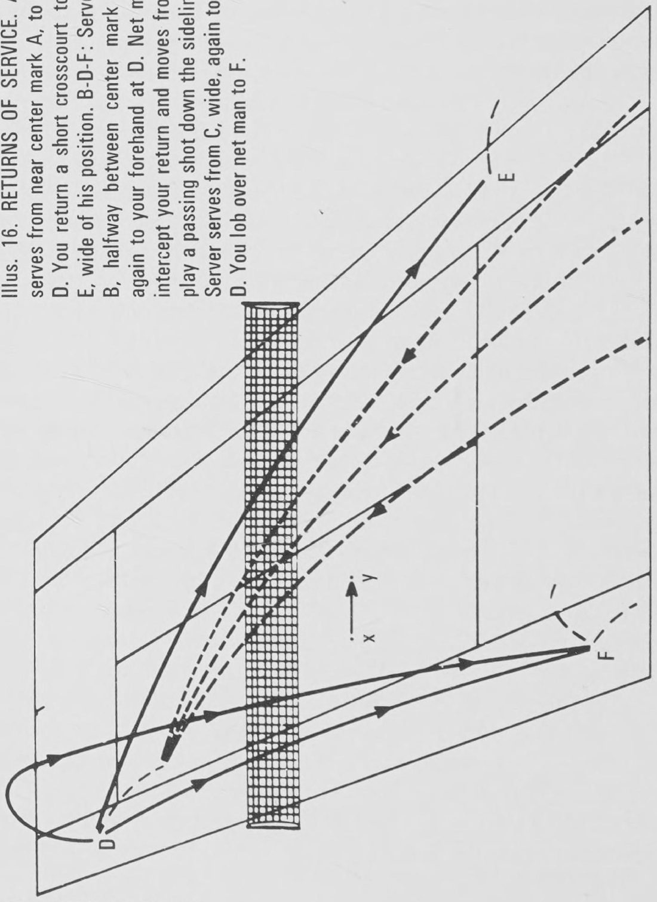
Tennis có những hạn chế của nó, nếu không chúng ta đều sẽ hoàn hảo, nhưng có vẻ như luôn có một câu trả lời thỏa đáng cho hầu hết mọi thứ.
Tennis has its limitations, or we’d all be perfect, but it seems .
Hai người thuận tay trái, cả hai đều có cú thuận tay chéo sân và trái tay sang phía không thuận? Về mặt chiến thuật, đó là một thảm họa. Sự ga lăng đơn thuần nên chiếm ưu thế và bạn nữ nên được trao ô bên trái yêu thích của mình.
that there’s a happy answer to most things.
Đánh đôi nam nữ có những đặc thù riêng, nhưng ngoài ra bạn nên coi cú trả giao bóng là mấu chốt trong lối chơi của người nhận.
Two left-handers, both with crosscourt forehands and off- side backhands? Tactically it’s a disaster. Plain chivalry should take over and the girl be given her preferred left court.
TRẢ GIAO BÓNGRETURN OF SERVICE
Là cú đánh đầu tiên, nó phải vào sân thì mọi thứ khác mới có thể phát triển. Ngoài ra, nó bao gồm một loạt các cú đánh: drive, vô-lê, lốp và đôi khi thậm chí là bỏ nhỏ, từ thuận tay và trái tay, nhưng điểm mấu chốt là mỗi cú đều được thực hiện chống lại một cú giao bóng.
Mixed doubles has its quirks, but otherwise you should regard the return of service as being the crux of the receiver’s game. Being the first stroke, it has to land in play if anything else is to develop. Also, it embraces a range of strokes: drive, slice, lob and sometimes even drop-shot, from forehand and backhand, but the point is that each is made against a serve.
Hầu hết mọi người không nhận ra điều này và kết quả là không luyện tập các cú đánh của họ như những cú trả giao bóng. Họ đánh bền với một đối thủ duy nhất để luyện cú đánh, nhưng không bao giờ luyện trả giao bóng đánh đôi đúng nghĩa.
Most people do not realize this and as a result do not practice their shots as service returns. They rally with a single opponent practicing their strokes, but never practice their doubles service return as such.
Cách tốt nhất để làm điều này là chơi ba người, Hai chống Một, không thay đổi đối tác cho đến khi kết thúc ván. Ba cầu thủ lần lượt giao bóng, bắt đầu với một trong hai đối tác đánh đôi; người chơi đơn giao tiếp theo, sau đó là đối tác đánh đôi còn lại, sau đó đối tác đánh đôi đầu tiên giao bóng lần nữa. Trong hai phần ba ván đấu, người chơi đơn được luyện tập cú trả giao bóng đánh đôi của mình. Tỉ lệ không ủng hộ việc anh ta thắng nhiều hơn một hoặc hai ván, nếu có, vì vậy anh ta được tập luyện cường độ cao.
The best way to do this is to play three-handed, Two Against One, with no change of partner until the set is finished. The three players serve in turn, starting with one of the doubles partners; the single player serves next, then the other doubles partner, then the first doubles partner serves again. For two thirds of the set the single player is getting practice in his doubles return-of- service. The odds are against his winning more than a game or two, if any at all, so he gets a solid workout.
Hình 14 cho thấy bốn loại trả giao bóng. Về khía cạnh đa dạng này, nhưng chỉ giới hạn ở những cú thuận tay từ ô bên phải, vui lòng xem Hình 16.
Illus. 14 showed four types of service return. On this aspect of variety, yet confined only to forehands from the right court, please see Illus. 16.
Các cú đánh trong Hình 16 Cú đánh chéo sân D-E. Nếu cú giao bóng A—D nhẹ và chậm và nảy cao, cú đánh dễ nhất là một cú cắt hướng xuống cho D-E.
Strokes in Illus. 16 CrosscourT D-E. If the service A—D is soft and slow and bounces high, the easiest shot is a downward slice for D-E.
Nếu bạn thích đánh drive, nó nên có độ xoáy lên (topspin) mạnh, để quả bóng sẽ rơi vào sân bất kể góc đánh sắc bén mà bạn đang thực hiện.
If you prefer a drive it should have heavy topspin, so that the
CÚ ĐÁNH VƯỢT QUA (PASSING SHOT) D-F. Điều này đơn giản nếu người đứng lưới di chuyển quá sớm. “Quá sớm” có nghĩa là bạn cảm thấy mình có nhiều thời gian để nhắm cú đánh dọc theo đường biên thay vì phải thay đổi nó vào phút cuối. Bất kỳ loại cú đánh nào cũng được—nhưng hãy đưa bóng qua lưới và nhắm vào một điểm bên trong vạch cuối sân, không phải hướng về vô tận.
ball will dip into court in spite of the sharp angle you are playing.
Là một câu chuyện hoàn toàn khác khi cố gắng thực hiện một cú đánh vượt qua Khi người đứng lưới trì hoãn việc di chuyển cho đến khi bạn gần như đã quyết định cú trả bóng của mình. Bạn thấy anh ta di chuyển (bạn không thể bỏ lỡ điều này) và bạn biết anh ta sẽ chặn cú đánh của bạn. Hy vọng là vô ích, đó là phản ứng tự nhiên của chúng ta, cú đánh của bạn phải được thay đổi. Hãy hài lòng nếu bạn có thể làm điều này theo bất kỳ cách nào, vì thực sự rất ít người được ban cho phản xạ đủ nhanh để thay đổi cú đánh theo nhiều cách khác nhau.
PASSING SHOT D-F. This is simple if the net man moves too early. ‘‘Too early” means that you feel you have plenty of time to aim your stroke down the line as distinct from altering it at the last moment. Any type of shot will do—but get it over the net and aimed to a spot inside the backline, not towards infinity.
Hầu hết các cầu thủ kinh nghiệm chỉ dựa vào một “kế hoạch thảm họa” duy nhất nếu bị buộc phải thay đổi vào giây cuối cùng. Dưới đây là bốn gợi ý:
It’s a different kettle of fish trying to make a passing shot when the net man delays his move until you are almost committed to your return. You see him move (you can’t miss seeing this) and you know he’s going to cut your shot off. It’s no use hoping, which is our natural reaction, your stroke has to be altered. Be content if you can do this in any single way at all, because very few people indeed are gifted with reflexes quick enough to alter their stroke in several different ways.
= Tiếp tục với cú đánh của bạn, nhưng đánh mạnh hơn nhiều so với ý định ban đầu. Người đứng lưới có thể chạy thẳng vào quả bóng.
Most experienced players rely on one “‘disaster plan” alone if forced into a last-second change. Here are four suggestions:
= Cố gắng kéo cú đánh của bạn rộng hơn nhiều với nhiều độ xoáy lên.
= Carry on with your shot, but hit it much harder than you originally intended. The net man may run right into it.
Người đứng lưới có thể chỉ chạm bóng bằng mép vợt.
= Try to pull your shot much wider with a lot of topspin.
= Đẩy cổ tay về phía trước, để quả bóng đi sang phía không thuận của bạn, dọc theo đường biên của người đứng lưới cho một cú đánh vượt qua. Điều này sẽ dẫn đến một cú thắng, nhưng bạn có thể thấy đó là điều khó khăn nhất để thực hiện.
The net man may only hit it on the end of his racket.
= Lật mặt vợt lên vào phút cuối để cú trả bóng của bạn trở thành một kiểu cú lốp. Nó có thể không phải là một cú lốp tốt, nhưng nó có nhiều cơ hội thoát khỏi sự chặn bóng của người đứng lưới hơn là cú đánh ban đầu, vốn không có cơ hội.
# Push your wrist forward, so that the ball will go to your off side, down the net man’s sideline for a passing shot. This will result in a winner, but you may find it the hardest thing to do.
= Turn your racket face up at the last moment so that your return becomes some sort of a lob. It may not be a good one, but it has far more chance of evading the net man’s interception than your original shot, which had no chance.
Cú lốp D-F. Giữ vợt chắc chắn và thực hiện một cú lốp dứt khoát, không bao giờ là một cú lốp kiểu 'có lẽ tôi sẽ thử'. Nhắm bóng đủ sâu, vì các cú lốp có thói quen không may là ngắn hơn so với dự định và do đó trở thành mồi ngon cho người đứng lưới. Đừng bao giờ cố gắng hất quả bóng vừa đủ qua đầu anh ta, với ý nghĩ rằng nó sẽ chắc chắn rơi vào sân. Nếu có một cú đánh kiểu hất (pop), bạn có thể cá rằng nó sẽ có xu hướng bị ngắn hơn so với cú lốp—trở thành mồi ngon gần như trước khi bạn đánh.
Los D-F. Hold your racket firmly and make a positive lob, never an indefinite perhaps-I’ll-try-it. Aim it reasonably deep, because lobs have an unfortunate habit of being shorter than intended and so become cannon fodder for the net man. Never try to pop the ball just over his head, with the thought it will thus be sure to land in court. If there is such a stroke as a pop you can bet it will have an even worse tendency to be short than a lob—cannon fodder almost before you hit it.
Với những cảnh báo này trong đầu, một cú lốp thuận tay từ ô bên phải qua đầu người đứng lưới không khó. Quả bóng đi qua phía trái tay của anh ta, nơi anh ta không với tới nhiều. Đó là một cú đánh bạn có thể thường xuyên sử dụng. Hãy coi đó là một cú đánh tấn công.
With these warnings in mind, a forehand lob from the right court over the net man’s head is not difficult. The ball goes over his backhand side, where he has not much reach. It is a shot you can often use. Regard it as an attacking shot.
Đối với thuận tay là vậy, nhưng khi cú giao bóng đi vào trung tâm, bạn có thể cảm thấy người đứng lưới tạo ra mối đe dọa lớn hơn. Đúng là anh ta có thể di chuyển xa hơn về phía trung tâm mà không để hở đường biên dọc của mình, nhưng mặt khác, ít nhất bạn bắt đầu đánh trái tay từ một vị trí cách xa anh ta—bạn không phải đánh bóng xuyên qua cơ thể anh ta để tránh xa anh ta. Xem Hình 17.
So much for the forehand, but when the serve is down the center you may feel that the net man poses a heavier threat. It is true that he can move further across to the center without over-exposing his sideline, but on the other hand you at least begin to play your backhand from a position well clear of him—you haven’t got to hit the ball across his body in order to stay clear. See Illus. 17.
Nhận bóng ô bên Trái—Trái tay Tốt và Thuận tay Kém Nếu bạn có cú trái tay tốt và thuận tay kém, đừng đứng xuất ra xa đường biên đơn và để người giao bóng biết điều đó.
Left Court Receiving—Good Backhand and Poor Forehand If you’ve a good backhand and a poor forehand, don’t stand well away from the singles sideline and let the server know it.
Ngay cả khi bạn thực hiện một vài cú trả giao bóng trái tay mạnh, hầu hết những người giao bóng tưởng rằng thuận tay của bạn mạnh hơn và họ sẽ tránh xa nó.
Even though you play a few strong backhand returns of service, most servers imagine that your forehand is stronger again and they will keep away from it.
Được giao từ phía bên trái, hướng của bóng là chéo sang trái tay của bạn, vì vậy bạn có thể đánh trái tay hết lần này đến lần khác một cách ít gây chú ý. Thỉnh thoảng người giao bóng sẽ thử một cú giao bóng một dọc theo trung tâm, nhưng điều này sẽ là với ý định gây ra lỗi hoặc ace bạn thay vì khám phá cú thuận tay của bạn. May mắn thay, những cú giao bóng nhanh và đơn độc này hiếm khi vào sân, vì ít người giao bóng luyện tập chúng. Khi một cú như vậy
Served from the left side, the ball’s direction is across to your backhand, so you can play backhand after backhand more or less unobtrusively. Every now and then the server will attempt a first serve down the center, but this will be with the intention of aceing you or forcing an error rather than of exploring your forehand. Fortunately, these fast and isolated serves seldom go in, because few servers have practiced them. When one does
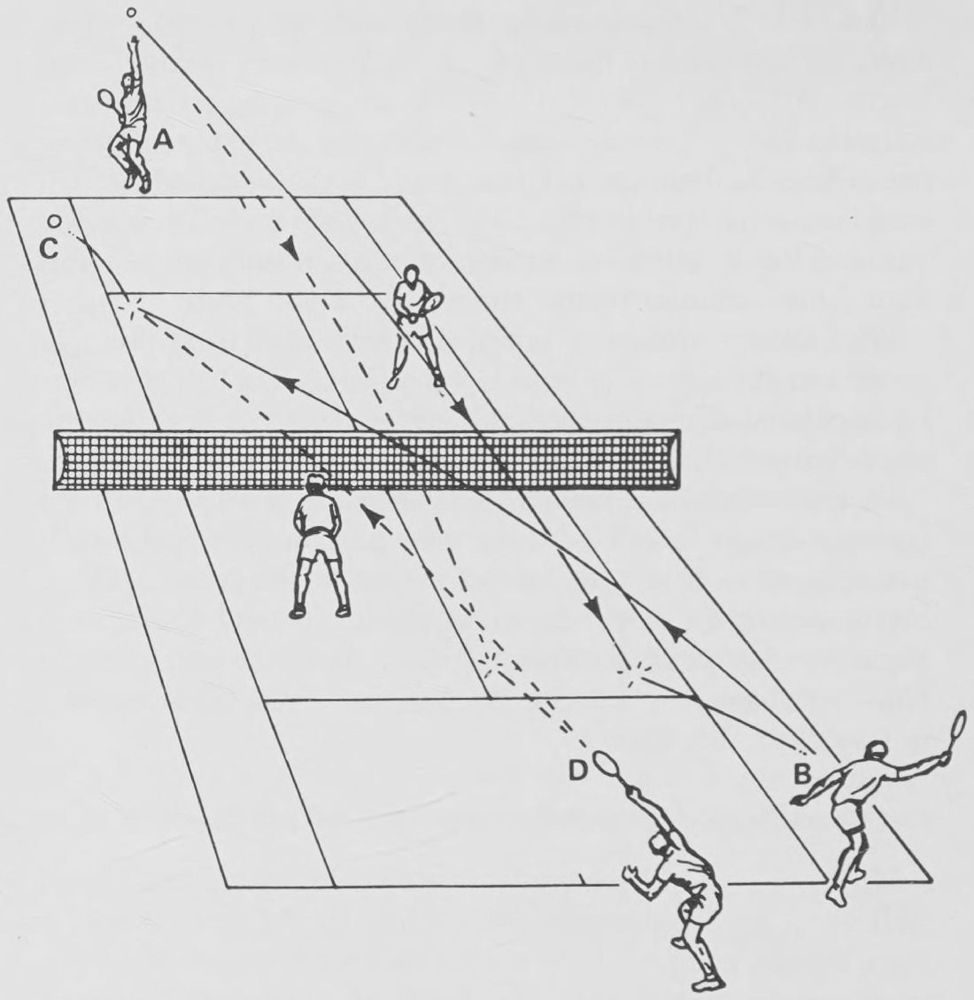
phía mạnh hơn—tốt, bạn sẽ đánh BC. Nếu cú giao là AD—lại tốt lần nữa, vì bạn có thể thực hiện cú trả trái tay DC mà không phải chịu áp lực khi phải đánh xuyên qua cơ thể người đứng lưới đối phương, như bạn đã phải làm khi đánh BC. Đây là loại thái độ bạn muốn có khi nhận bóng.
your stronger side—good, you'll play BC. If the serve is AD—good again, because you can play your backhand return DC without the strain of having to hit right across the opposing net man’s body, as you had to in playing BC. This is the sort of attitude you want in receiving.
vào sân, đừng để lộ điểm yếu thuận tay của bạn bằng cách thực hiện một cú đánh yếu ớt hoặc một cú đánh hoang dã và không phối hợp. Trừ khi bạn đang phòng ngự rõ ràng trước một cú giao bóng rất tốt, đừng lốp bóng, vì điều này cũng có xu hướng cảnh báo người giao bóng rằng thuận tay của bạn có thể đáng nghi. Thay vào đó, hãy di chuyển đến quả bóng như thể bạn đang nói, “Cuối cùng cũng đến! Bây giờ là lúc cho một cú thuận tay,” và đánh một cú chắc chắn. Nếu nó vào sân, thì tốt. Nếu không, đó là một điểm chi tiêu xứng đáng nếu cú lừa của bạn thành công và người giao bóng quay trở lại với mô hình an toàn tưởng tượng của họ là giao bóng vào trái tay của bạn. Điều dễ lộ nhất bạn có thể làm là thể hiện bước chân yếu ớt và ngập ngừng. Làm vậy, và trò chơi kết thúc.
go in, do not reveal your forehand weakness by making either a feeble shot or a wild and unco-ordinated one. Unless you’re clearly defending against a very good serve don’t lob either, because even this tends to alert the server that your forehand may be suspect. Instead, move to the ball as though you’re saying, “‘At last! Now for a forehand,” and play a firm shot. If it goes in, well and good. If not, it’s a point well spent if your bluff succeeds and the server returns to his imagined safer pattern of serving to your backhand. The most tell-tale thing you can do is to display weak and hesitant footwork. Do that, and the game’s up.
Thuận tay của bạn sẽ bị phơi bày không thương tiếc nếu người giao bóng kiểm tra nó bằng cách giao những cú giao bóng hai dọc theo trung tâm. Anh ta sẽ nhận ra ngay rằng đó không phải là một cú đánh mạnh và rằng trái tay là cú trả giao bóng ưu tiên của bạn. Tuy nhiên, điều này có thể không bao giờ xảy ra, vì những người giao bóng không thích giao bóng hai dọc theo trung tâm của ô bên trái, vì lý do kép là họ cảm thấy mình có lẽ đang cho người nhận một cú thuận tay dễ dàng và rằng họ có thể bị lỗi kép, vì họ không quen giao loại bóng này. Vì vậy bạn may mắn.
Your forehand would be mercilessly exposed if the server tested it by serving second serves down the center. He would see at once that it was not a strong shot and that your back- hand was your preferred service return. However, this may never happen, because servers do not like serving second balls down the center of the left court, for the double reason that they feel they are probably giving the receiver an easy forehand and that they may double fault anyway, because they’re not used to serving this ball. So you’re lucky.
Với tất cả những điều này hoạt động có lợi cho bạn, bạn sẽ là một hà chiến thuật tồi thế nào nếu để lộ bài ngay từ đầu bằng cách đứng gần trung tâm để bảo vệ một cú thuận tay mà người giao bóng đối phương không hề biết là yếu. Một khi anh ta chắc chắn đó là phía yếu của bạn, anh ta sẽ giao bóng dọc trung tâm tốt hơn nhiều, vì khi đó lương tâm anh ta thanh thản rằng mình không thực hiện những cú giao bóng thử nghiệm và rủi ro. Kỳ lạ, nhưng không có gì cải thiện một cú đánh hơn là chơi nó với một lương tâm thanh thản.
With all this working to your advantage, what a poor tactician you’d be to show your hand from the start by standing over towards the center to protect a forehand your opposing server had no idea was weak. Once he is certain it is your weaker side he will serve down the center much better, because then his conscience is clear that he is not making experimental and risky serves. Quaint, but nothing improves a shot more than playing it with a clear conscience.
Chiến thuật thì rất tốt, nhưng để giúp chúng hiệu quả, bạn có thể thấy rằng bạn cần ít nhất một cú thuận tay đáng kể. Hãy quay lại với những điều cơ bản trong luyện tập: quan sát bóng suốt quãng đường để làm cho nó có vẻ chậm hơn; di chuyển với sự phối hợp thay vì vụng về hoặc liều lĩnh; giữ cổ tay thật vững; đánh quả bóng chắc chắn và giữ nó trên dây vợt trong thời gian tiếp xúc lâu nhất có thể. Tiến bộ từ đó.
Tactics are all very well, but to help them work you can see that you need at least a respectable forehand. Go back to fundamentals in your practice: watch the ball the whole way to make it seem slower; move with co-ordination instead of awk- wardness or recklessness; keep your wrist very firm; hit the ball solidly and hold it on the strings in long contact for as long as possible. Progress from there.
Ô bên Trái—Thuận tay MạnhLeft Court—Strong Forehand
Ô bên Trái—Thuận tay Mạnh Đừng giữ bí mật về điều đó. Hãy phô diễn nó như một lá cờ chiến trận. Đứng xa về phía đường biên dọc. Bạn sẽ không liên tục bị ace. Những cú ace dự định dọc đường trung tâm không dễ giao vào sân, và trong mọi trường hợp chúng được giao từ phía bên trái và vì vậy không thể uốn cong rộng ra xa thuận tay của bạn như những cú ace sang thuận tay ở ô bên phải. Chúng có thể uốn một lượng đáng kể nếu giao từ vạch trung tâm—nhưng liệu bạn có mạo hiểm làm điều này nếu bạn giao bóng cho một cầu thủ ô bên trái có thuận tay mạnh?
Make no secret of it. Hang it out like a battle flag. Stand well over to the sideline. You won’t be continually aced. Intended center-line aces are not easy to serve into court, and in any case they are being served from the left side and so cannot curve as widely away from your forehand as do aces to the forehand in the right court. They may.curve a fair amount if served from the center mark—but would you risk doing this if you were serving to a strong-forehand left-court player?
Hãy tận dụng tối đa cú thuận tay mạnh của bạn. Bên cạnh việc đứng xa để nhận giao bóng, hãy bước quanh mọi quả bóng bạn có thể và đánh một cú thuận tay “lướt” (slider) rộng sang trái tay của người giao bóng.
Make full use of your strong forehand. Besides standing well out to receive service, step round every ball you can and play a “‘slider” forehand wide of the server’s backhand.
Khiến người giao bóng khó tìm thấy trái tay của bạn với cú giao bóng hai của anh ta. Khi cuối cùng anh ta thực hiện được, cú giao bóng của anh ta sẽ phải rộng và ngắn, điều mà bạn có thể đánh chéo trở lại. Nếu điều này khiến anh ta cảm thấy rằng cuối cùng anh ta đã chạm tới trái tay của bạn nhưng nó không mang lại nhiều lợi ích, thì chắc chắn bạn đang chiếm ưu thế.
Make it difficult for the server to find your backhand with his second serve. When he finally manages this, his serve will have to be wide and short, which you can angle back. If this makes him feel that he finally reached your backhand and it didn’t do him much good, then most definitely you’re on top.
Ô bên Trái—Sức mạnh Cân bằngLeft Court—Balanced Strength
Ô bên Trái—Sức mạnh Cân bằng Lốp bóng qua đầu người đứng lưới không phải là một chiến thuật hứa hẹn như ở ô bên phải. Khó khăn chính là người đứng lưới có tầm với cao hơn với cú overhead thuận tay và có xu hướng nhảy lên đón bóng ở phía này nhiều hơn thay vì di chuyển sang ngang. Nếu bạn đưa bóng qua đầu anh ta thành công, đối tác của anh ta có thể có thời gian để thực hiện một cú nửa-đập (half-smash) và đưa bạn vào thế phòng ngự một lần nữa.
Lobbing over the net man’s head is not as promising a tactic as it is from the right court. The main difficulties are that the net man has a higher reach on his forehand overhead and much greater inclination to jump for the ball on this side instead of crossing over. If you do get the ball successfully over his head, his partner may have time to make a half-smash of it and put you on the defensive once more.
Để bù đắp, những cú drive của bạn chủ yếu hiệu quả hơn những cú của đối tác ở ô bên phải. Cú đánh của bạn tấn công vào trái tay của người giao bóng.
In ample compensation, your drives are mostly more effective than those of your partner in the right court. Yours attack the server’s backhand.
Trong giai đoạn đầu sự nghiệp của một cầu thủ, ô bên trái là ô khó chơi hơn, đơn giản vì nó đòi hỏi phải chơi nhiều cú trái tay hơn. Một khi cú trái tay của bạn đã hình thành tuy nhiên, ô bên trái trở nên quản lý hơn, cuối cùng nó trở thành sự ưu tiên của hầu hết các cầu thủ. Một cú trái tay chéo sân tự nhiên hơn một cú phải được hướng sang phía không thuận.
In the early stages of a player’s career the left is the more
Một cú thuận tay thẳng hoặc dọc đường biên được hầu hết những người thuận tay phải ưu tiên—từ việc luyện tập họ có được với cú đánh này trong việc liên tục tấn công trái tay của những người thuận tay phải khác trong đánh đơn.
Cú Drive và Cắt Bóng Bay Lên (Rising-Ball)
Bạn biết rằng việc đánh bóng khi nó đang bay lên là một lợi thế. Bạn đưa bóng trở lại nhanh hơn, thường buộc đối thủ phải vội vã thực hiện cú đánh và đôi khi thậm chí khiến anh ta bị hẫng. Rắc rối là bạn thường tự vội vã dẫn đến sai lầm thay vì khiến đối thủ vội vã.
Trong đánh đôi Một trên Một dưới, cầu thủ trung bình nên chấp nhận quả bóng đang rơi làm cơ sở cho cú trả giao bóng của mình. Anh ta có thể thực hiện một cú đánh bóng bay lên khi hoàn cảnh yêu cầu trong một chuỗi đánh bóng tiếp theo, khi anh ta đã quan sát kỹ quả bóng. Một cú đánh bóng bay lên đến tự nhiên hơn theo cách này.
Đây là một ví dụ. Bạn đang thi đấu, ở ô bên phải, ván đầu tiên, điểm đầu tiên. Người giao bóng hỏng cú giao một và cú giao hai đi tới, tốc độ dưới trung bình, vào thuận tay của bạn. Bạn cảm thấy hơi run, nhưng bạn quan sát bóng suốt quãng đường, bạn để bóng rơi một chút, sau đó bạn drive bóng an toàn qua lưới với thời gian tiếp xúc dài giữa bóng và dây vợt. (Không có gì phải vội. Cặp giao bóng đang chơi Một trên Một dưới, vì vậy không phải là người giao bóng đang áp sát lưới trong khi bạn dành thêm một chút thời gian với cú trả bóng của mình.) Người giao bóng đưa bóng trở lại, và bạn quan sát nó ổn định rồi drive trả lại, mạnh hơn một chút. Bạn và anh ta lặp lại điều này—đến bất lợi cho anh ta, vì cú đánh cuối cùng của anh ta ngắn ô sân khó thi đấu hơn, vì lý do đơn giản là nó đòi hỏi phải đánh nhiều cú trái tay hơn. Tuy nhiên, một khi cú trái tay của bạn đã định hình, ô bên trái sẽ trở nên dễ xử lý hơn, và cuối cùng nó trở thành lựa chọn ưa thích của đa số người chơi. Một cú trái tay chéo sân tự nhiên hơn một cú phải đánh sang góc xa. Cú thuận tay thẳng hoặc dọc dây được hầu hết các tay vợt thuận tay phải ưa thích—từ sự rèn luyện mà họ có được qua việc liên tục tấn công vào trái tay của những đối thủ thuận tay phải khác trong đánh đơn.
difficult court to play, for the simple reason that it involves playing more backhands. Once your backhand is formed though, the left court becomes easier manage, and eventually it becomes the preference of most players. A cross- court backhand is more natural than one that has to be directed to the off side. A straight or down-the-line forehand is preferred by most right-handers—from the practice they get with this shot in continually attacking other right-handers’
Cú Đánh Drive và Slice Khi Bóng Đang Lên Bạn biết rằng đánh bóng khi đang nảy lên (rising ball) là một lợi thế. Bạn đưa bóng trả lại nhanh hơn, thường buộc đối thủ phải vội vàng thực hiện cú đánh và đôi khi thậm chí khiến họ bị động chôn chân tại chỗ. Rắc rối là bạn thường tự làm mình vội vàng dẫn đến mắc lỗi hơn là làm đối phương vội vã.
backhands in singles.
Trong thể thức đôi Một Lên Một Xuống (One Up One Back), người chơi phong trào trung bình nên lấy việc đón bóng khi đang rơi xuống (dropping ball) làm nền tảng cho cú trả giao bóng của mình. Anh ta có thể chơi một cú bóng đang lên tùy theo đòi hỏi của tình huống trong loạt rally tiếp sau, khi mắt anh ta đã bắt nhịp tốt với trái bóng. Cú đánh khi bóng đang lên sẽ tự nhiên hơn nhiều theo cách này.
Rising-Bail Drives and Slices You know it’s an advantage to play a rising ball. You get it back quicker, often forcing your opponent to hurry his stroke and sometimes even leaving him stranded. The trouble is that you often hurry yourself into a mistake rather than hurry your opponent.
Đây là một ví dụ. Bạn đang chơi một trận đấu, ở ô sân bên phải, ván đầu tiên, điểm đầu tiên. Người giao bóng hỏng quả giao bóng thứ nhất và quả giao bóng thứ hai bay qua, tốc độ dưới mức trung bình, vào cánh thuận tay của bạn. Bạn cảm thấy khá run, nhưng bạn dõi theo quả bóng trên suốt đường đi, bạn để bóng hơi rơi xuống một chút, rồi bạn drive bóng an toàn qua lưới với thời gian tiếp xúc dài giữa bóng và mặt dây. (Không có gì phải vội. Cặp giao bóng đang chơi Một Lên Một Xuống, nên không có chuyện người giao bóng lập tức ập sát lưới trong lúc bạn dành thêm một chút thời gian cho cú trả bóng của mình.) Người giao bóng đỡ được bóng trả lại, và bạn quan sát bóng chạm đất ổn định rồi drive trả lại, mạnh hơn một chút. Bạn và anh ta lặp lại điều này—gây bất lợi cho anh ta, bởi vì cú đánh cuối cùng của anh ta bị ngắn
In One Up One Back doubles the average player should settle for the dropping ball as the basis of his service return. He can play a rising-ball shot as circumstances demand in an ensuing rally, when he’s got his eye on it. A rising ball shot comes far more naturally this way.
Here’s an example. You are playing a match, in the right court, first game, first point. The server misses his first serve and over comes the second, less than medium pace, on your forehand. You’re feeling more than a little shaky, but you watch the ball the whole way, you let the ball drop a little, then you drive it safely over the net with long contact between ball and strings. (There’s no hurry. The serving pair are playing One Up One Back, so it’s not as though the server were getting right on top of the net while you were taking a little extra time with your return.) The server gets the ball back, and you watch it settle and then drive it back, somewhat harder. You and he repeat this—to his disadvantage, because his last shot is short
và cao. Bạn tiến lên và đánh nó khi bóng đang bay lên, từ gần lưới, với một cú đánh ngắn hướng xuống giữa hai cầu thủ để ghi điểm thắng. Bạn đã có cảm giác và hình ảnh về quả bóng, bạn đã thắng một điểm, và có lẽ bạn đã hết run.
and high. You come in and play it on the rise, from near the net, with a short downward stroke between the two players for a winner. You’ve had a sight and feel of the ball, you’ve won a point, and probably you’ve stopped shaking.
Hãy đối chiếu điều này với khái niệm đánh bóng bay lên bằng mọi giá. Từ cùng một cú giao bóng hai chậm đó, bạn có thể đánh một cú buộc người giao bóng phải vội vã thực hiện cú đánh, hoặc thậm chí khiến anh ta bị hẫng. Tuy nhiên, nế bạn cảm thấy run, bạn có nhiều khả năng sẽ vội vã thực hiện cú đánh và đánh quá sớm, đưa bóng thẳng vào lưới hoặc bay ra ngoài đường biên thuận tay của người giao bóng. Tiếp xúc dài? Bạn không có thời gian để nghĩ về nó. Ngoài việc đánh bóng bay lên nhanh chóng, bạn còn tự hối thúc mình về mặt tinh thần.
Contrast this with a rising-ball-at-all-costs concept. From that same slow second serve you may hit a shot that forces the server to hurry his shot, or even leaves him stranded. However, if you are feeling shaky you are more likely to rush your stroke and hit too early, sending the ball straight into the net or smartly over the server’s forehand sideline. Long contact? You didn’t have time to think of it. As well as playing a rising ball quickly, you’ve rushed yourself mentally.
Nếu bạn là một cầu thủ đánh bóng bay lên tự nhiên hơn, bình tĩnh hơn và chắc chắn hơn so với bóng đang rơi, bạn sẽ đạt được cả hai lợi ích. Chúc may mắn.
If you are a player who hits rising balls more naturally, more calmly and with more certainty than dropping ones, you will have the best of both worlds. Good luck.
Tương tự, bạn biết rằng các cú cắt làm quả bóng đi thẳng, thậm chí treo lơ lửng trong không trung một chút, vì vậy chúng dễ dàng hơn cho đối thủ vô-lê hơn là một cú drive. Nhưng người giao bóng không tiến lên lưới. Anh ta sẽ không thực hiện một cú vô-lê, dễ hay khó. Do đó, trong đánh đôi Một trên Một dưới, hãy cứ cắt cú trả giao bóng của bạn, nếu bạn cảm thấy an toàn hơn với cú cắt, bất cứ khi nào sự chắc chắn là yếu tố then chốt. Hãy nhớ rằng bạn đang cố gắng thắng một trận đánh đôi, không phải luyện tập cú drive thuận tay hoặc trái tay cho một trận đánh đơn sắp tới hoặc đại loại như đó.
Similarly, you know that slices make the ball travel straight, even hang in the air somewhat, so that they are much easier for your opponent to volley than a drive would have been. But the server hasn’t come to the net. He won’t be making a volley, easy or otherwise. Therefore, in One Up One Back doubles, by all means slice your return of service, if you’re safer with a slice, whenever certainty is the key factor. Remember you are trying to win a doubles match, not practicing your forehand or backhand drives for a coming singles match or something like that.
NGƯỜI ĐỨNG LƯỚI ĐỐI PHƯƠNGTHE OPPOSING NET MAN
NGƯỜI ĐỨNG LƯỚI ĐỐI PHƯƠNG Bạn sẽ nhận ra một người đứng lưới không tham gia từ tư thế của anh ta là quá gần với lưới. Hãy tận dụng tối đa không gian anh ta cho phép bạn, từ cả ô bên phải hoặc bên trái. Ngoài những cú trả bóng thông thường cho người giao bóng (sâu, rộng hoặc không đặc sắc), từ ô bên phải bạn có thể lốp bóng qua loại người đứng lưới này gần như tùy ý và bạn cũng có thể lốp bóng qua anh ta bất cứ khi nào bạn bị buộc vào thế phòng ngự. Từ ô bên trái bạn không thể tung bóng qua anh ta dễ dàng như vậy, nhưng từ ô này bạn đôi khi có thể -thêm một cú bỏ nhỏ vào kho tàng cú đánh của mình. Nó sẽ phải chống lại một cú giao bóng yếu, tất nhiên, nhưng không cầu thủ nào đứng sát lưới bao giờ nghĩ đến việc chạy băng qua sân bằng trái tay để cứu đối tác của mình.
You'll recognize a non-participating net man from his stance being too close to the net. Take full advantage of the scope he allows you, from either right or left court. In addition to your normal returns to the server (deep, wide or non- descript), from the right court you can lob over this type of net man almost at will and you can also lob over him whenever you are forced on the defensive. From the left court you can’t toss over him as easily, but from this court you can sometimes add a drop-shot to your repertoire. It will have to be against a weak serve, of course, but no player who sticks close to the net ever thinks of chasing right across the court with his backhand to rescue his partner.
Hãy nhận thức rằng bạn và đối tác của bạn thực tế đang chơi như hai người chống lại một (người giao bóng), và bạn có thể đặt mục tiêu thắng tất cả các ván giao bóng có một người đứng lưới nhút nhát.
Be aware that you and your partner are practically playing as two men against one (the server), and you can set out to win all service games that contain a timid net man.
Người Đứng Lưới Hăng HáiEnergetic Net Man
Hãy đối đầu với anh ta. Chấp nhận thử thách của anh ta ngay sau khi anh ta đã thực hiện cú đánh táo bạo đầu tiên bằng cách cướp lấy cú trả giao bóng của bạn.
Take him on. Accept his challenge immediately after he’s made his first dashing coup at the expense of your service return. If you don’t, he'll have his objectionable thumb on you all day long.
Nếu bạn không làm vậy, anh ta sẽ đặt dấu ấn khó chịu lên bạn suốt cả ngày.
Here is a situation—you may remember a similar one with pain—that can easily happen to anyone. Playing in the right court you receive the first serve of the set and play it safely clear of the net and in the direction of the server. The net man guesses that you won’t attempt to pass him down the sideline from the first ball, so he leaps across and volleys a sharp winner between you and your One Up net partner. He’s one interception up.
Đây là một tình huống—bạn có thể nhớ một tình huống tương tự với sự đau đớn—có thể dễ dàng xảy ra với bất kỳ ai. Chơi ở ô bên phải, bạn nhận cú giao bóng đầu tiên của ván và trả bóng an toàn vượt qua lưới và theo hướng của người giao bóng. Người đứng lưới đoán rằng bạn sẽ không cố gắng đánh vượt qua anh ta dọc theo đường biên ngay từ cú bóng đầu tiên, vì vậy anh ta nhảy băng qua và vô-lê một cú thắng sắc lẹm giữa bạn và đối tác đứng lưới Một Trên của bạn. Anh ta đã dẫn trước một lần chặn bóng.
The next serve to you is a forehand and you unwisely try to pass him down his sideline. Too obvious; he’s waiting for that— and bang goes a backhand volley winner between you and your One Up partner again. You probably lose that game.
Cú giao tiếp theo cho bạn là một cú thuận tay và bạn thiếu khôn ngoan khi cố đánh vượt qua anh ta dọc theo đường biên của anh ta. Quá lộ liễu; anh ta đang chờ điều đó— và bùm, một cú vô-lê trái tay thắng điểm giữa bạn và đối tác Một Trên của bạn một lần nữa. Bạn có lẽ sẽ thua ván đó.
Three games later he’s facing you again, this time apparently at rest. You begin a crosscourt forehand return and all at once he’s on his way across the court. You try to keep the ball away from him—only to hit it outside the server’s forehand sideline.
Ba ván sau, anh ta lại đối mặt với bạn, lần này có vẻ đang nghỉ ngơi. Bạn bắt đầu một cú trả bóng thuận tay chéo sân và bất ngờ anh ta đang trên đường băng qua sân. Bạn cố gắng giữ bóng tránh xa anh ta—chỉ để đánh bóng ra ngoài đường biên thuận tay của người giao bóng.
This net tiger has ‘“‘forced you out.’ He’s three up.
Con hổ đứng lưới này đã “ép bạn ra ngoài”. Anh ta dẫn trước ba lần.
You think you may as well try a lob. Think, may as well, try?
Bạn nghĩ có lẽ nên thử một cú lốp. Nghĩ, có lẽ, thử?
It’s weak, inevitably. He doesn’t merely smash it, he crashes it.
Nó yếu, tất yếu. Anh ta không chỉ đập bóng, anh ta nghiền nát nó.
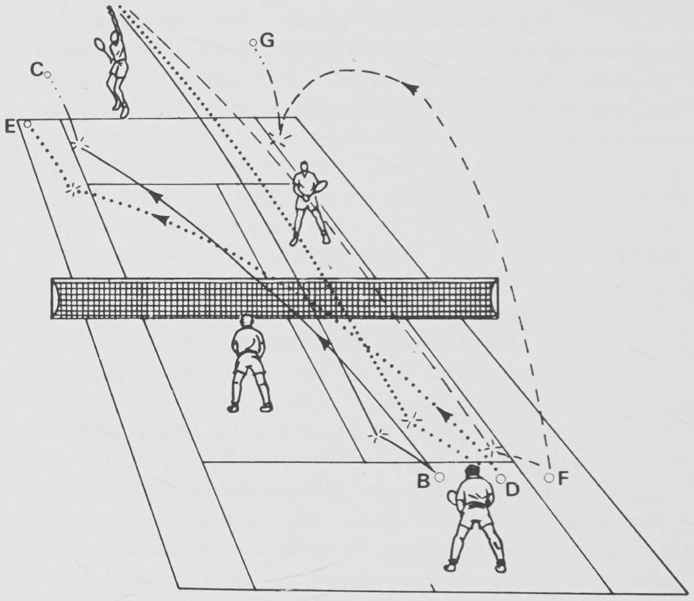
trái tay của bạn, vốn nằm xa người đứng lưới. Đánh BC, sâu. Cú giao AD hướng về thuận tay của bạn. Người đứng lưới đối diện bạn và có thể di chuyển về phía trung tâm. Bạn phải đánh xuyên qua anh ta. Thực hiện một cú đánh chéo sân DE. AF là một cú giao bóng một nhanh và sâu vào góc thuận tay của bạn. Một cú lốp FG qua trái tay người đứng lưới là cách an toàn nhất để tránh anh ta. Hãy chuẩn bị thực hiện cú đánh này. Nhiều cầu thủ coi cú lốp chỉ là phương án cuối cùng, nhưng đây là tình huống mà nó là cú đánh được ưu tiên. Đây là đánh đôi Một trên Một dưới, hãy nhớ, nơi người đứng lưới có ý định chặn các cú drive hơn là bao quát các cú lốp.
your backhand, which is clear of the net man. Play BC, deep. Serve AD is to your forehand. The net man is opposite you and can move towards the center. You have to hit across him. Play a crosscourt shot DE. AF is a fast first serve deep in your forehand corner. A lob FG over the net man’s backhand is the safest way to avoid him. Be prepared to play this shot. Many players regard a lob as being a last resort only, but here is a situation where it is the preferred shot. This is One Up One Back doubles, remember, where the net man is intent on intercepting drives rather than covering lobs.
Thật là xúc phạm nếu anh ta đập bóng văng ra ngoài hàng rào phía sau và thậm chí tệ hơn nếu anh ta đánh trúng bạn. Hãy khép lại câu chuyện này và xem xét những chiến thuật bạn nên theo đuổi trong tương lai.
It’s insulting enough if he bounces it over the back fence and even worse if he hits you. Let’s draw the curtain now and consider what tactics you should follow in future.
Khi chuẩn bị sẵn sàng để đánh quả bóng đầu tiên của ván, hãy lưu ý nếu người đứng lưới chiếm vị trí mà từ đó anh ta có thể dễ dàng chặn bóng. Nếu anh ta làm vậy, gần như chắc chắn là anh ta định làm thế. Bạn giờ đây đã được cảnh báo để tránh xa anh ta.
Settling down ready to play the first ball of a set, notice if the net man takes up a position from which he can readily intercept. If he does, it’s odds on that he intends to. You’re now forewarned to keep clear of him.
Nếu cú giao bóng hướng về trái tay, bạn bắt đầu bằng việc đứng xa anh ta—xem lại Hình 17. Bạn sẽ không gặp nhiều khó khăn trong việc giữ khoảng cách. Nếu cú giao bóng hướng về thuận tay, hãy chuẩn bị trả bóng chéo sân. Nó sẽ nằm ngoài tầm với của anh ta.
If the serve comes to your backhand you begin by being well clear of him—see Illus. 17 again. You should have no great difficulty in staying clear. If the serve is to your forehand be prepared to return it crosscourt. It will be out of his reach.
Anh ta không cao 10 feet, cũng như bạn khi bạn ở trên lưới và cố gắng với một cú drive chéo sân. Nếu cú giao bóng rộng, người đứng lưới phải đứng yên tại chỗ nếu không sẽ để hở đường biên dọc của mình.
He’s not 10 feet tall, any more than you are when you’re on the net and try to reach a crosscourt drive. If the serve is a wide one, the net man has to stay home or else present you with a wide open sideline. If he makes the mistake of trying to intercept and you sideline him by a comfortable margin, then you, not he, are one up in this confrontation.
Nếu anh ta mắc sai lầm khi cố gắng chặn bóng và bạn đánh vượt qua anh ta với một khoảng cách thoải mái, thì bạn, chứ không phải anh ta, là người dẫn trước trong cuộc đối đầu này.
The serve from which an alert net man is most likely to make his initial coup is a first serve that lands deep in your forehand corner. First, you have to hit across him from a ball that is deep enough to give him time to make his interception. Second, this serve doesn’t expose his sideline as much as a short wide serve does, and, being deep, it gives him more time to return there if he sees you aiming for it. Third, a serve deep in your forehand corner is not always easy to drive crosscourt beyond the net man’s reach and keep safely inside the server’s sideline.
Cú giao bóng mà một người đứng lưới cảnh giác dễ thực hiện cú chặn đầu tiên nhất là cú giao bóng một rơi sâu vào góc thuận tay của bạn. Thứ nhất, bạn phải đánh xuyên qua anh ta từ một quả bóng đủ sâu để cho anh ta thời gian thực hiện cú chặn. Thứ hai, cú giao này không để hở đường biên dọc của anh ta nhiều như một cú giao bóng rộng và ngắn làm, và vì sâu, nó cho anh ta nhiều thời gian hơn để quay trở lại đó nếu anh ta thấy bạn nhắm vào nó. Thứ ba, một cú giao sâu vào góc thuận tay không phải lúc nào cũng dễ đánh drive chéo sân vượt qua tầm với của người đứng lưới và giữ an toàn bên trong đường biên của người giao bóng.
Therefore, unless you can get well behind a serve deep to your forehand corner, so that you feel you are completely in control and can drive it safely out of reach, the best shot is a lob over the net man’s backhand side. Against a threatening net man be prepared to play this as a strong deep shot from the first ball you receive, because this first ball may be a fast first serve deep in your forehand corner. If you think of it as an
Do đó, trừ khi bạn có thể đứng đủ xa sau một cú giao sâu vào góc thuận tay của mình, để bạn cảm thấy hoàn toàn kiểm soát và có thể drive nó an toàn ngoài tầm với, cú đánh tốt nhất là một cú lốp qua phía trái tay người đứng lưới. Chống lại một người đứng lưới đe dọa, hãy chuẩn bị thực hiện điều này như một cú đánh mạnh ngay từ quả bóng đầu tiên bạn nhận được, vì quả bóng đầu tiên này có thể là một cú giao bóng một nhanh sâu vào góc thuận tay của bạn. Nếu bạn coi nó là một cú đánh tấn công, bạn sẽ chấp nhận nó dễ dàng hơn như một thành viên chính thức trong họ những cú trả giao bóng của mình. Xem Hình 18.
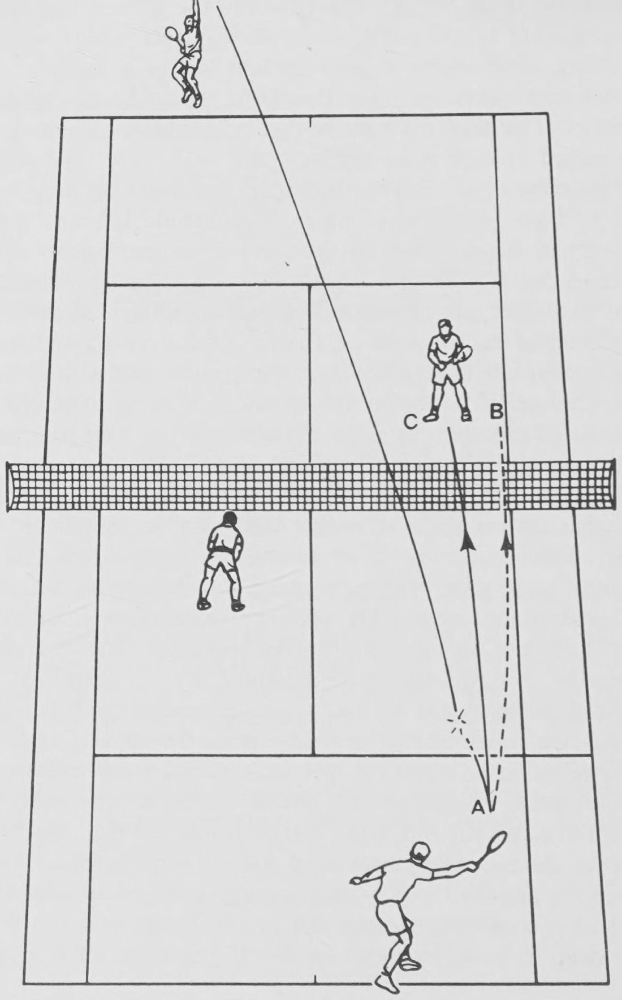
tấn công, bạn sẽ chấp nhận nó dễ dàng hơn như một thành viên chính thức trong họ những cú trả giao bóng của mình. Xem Hình 18.
attacking shot you'll accept it more readily as a full member of your service-return family. See Illus. 18.
Áp dụng những chiến thuật này vào tình huống ban đầu ở đầu phần này, bạn có thể thấy cách xử lý một người đứng lưới hăng hái người đã chặn cú trả bóng đầu tiên của bạn và đang tìm kiếm thêm. Từ cú giao tiếp theo sang thuận tay của bạn, đừng cố đánh vượt qua anh ta, mà lốp bóng qua đầu anh ta. Đó là điều cuối cùng anh ta mong đợi. Anh ta sẽ không thể dẫn trước hai lần.
Applying these tactics to the original situation at the start of this section you can see how to handle an energetic net man who knocks off your first return and is looking for more. From that next serve to your forehand don’t try to pass him, but lob the ball over his head. It’s the last thing he will expect. He won’t be two up.
Với bất kỳ cú giao bóng khó khăn nào, hãy lốp bóng qua đầu anh ta. Lốp thật cao, không cho anh ta cơ hội đập bóng. Ngay cả khi một quả ra ngoài, anh ta cũng không có đóng góp gì vào việc thắng điểm. Nếu cú giao bóng ở trái tay của bạn, hãy trả bóng cách xa anh ta để một lần nữa anh ta không có vai trò gì trong đó.
With any difficult serve, lob over his head. Well over, giving him no chance to smash. Even if one goes out, he’s had nothing to do with winning the point. If the serve is on your backhand, return it well clear of him so that once again he’s had nothing to do with it.
Bạn chưa có cơ hội để khẳng định mình. Nhưng ngay khi người giao bóng tạo điều kiện bằng một cú giao bóng hai mềm và ngắn vào phía thuận tay của bạn, hãy đánh mạnh và đánh thẳng vào người đứng lưới.
You haven’t had a chance to assert yourself yet. But the moment the server obliges with a short soft serve on your forehand side, hit it hard and hit it straight at the net man.
Đừng nhắm dọc theo đường biên của anh ta—điều mà anh ta không hề để hở dù sao đi nữa, vì cú giao bóng mềm và ngắn. Anh ta cầm vợt ở tay trái, vì vậy bạn có khả năng “đánh vào cú vô-lê trái tay của anh ta”. Nhắm vào hông phải của anh ta, nơi không anh ta hiên hay bất kỳ ai khác có thể thực hiện một cú đánh mà không phải di chuyển cơ thể ra khỏi đường bóng. Không có gì hung hãn ở đây cả. Bạn không đánh trúng anh ta, anh ta sẽ đánh hỏng.
Do not aim it down his sideline—which he hasn’t exposed anyway, because of the soft short serve. He has his racket cradled in his left hand, so that you are likely to “hit his backhand volley.”’ Aim for his right hip, where neither he nor anyone else can play a shot without first having to move his body out of the way. There’s nothing savage about this. You won’t hit him, he’ll mis-hit. See Illus. 19.
Xem Hình 19.
(opposite page)
(trang đối diện)
in his left hand, giving him a half-prepared backhand volley. His fastest reaction would be a backhand volley. Aim AC, hard, at his right hip. No one has a shot from here without first moving his body out of the way. You won't hit the net man. He'll mis-hit, or at best only defend.
ở tay trái, tạo cho anh ta một cú vô-lê trái tay nửa sẵn sàng. Phản ứng nhanh nhất của anh ta sẽ là một cú vô-lê trái tay. Nhắm AC, mạnh, vào hông phải của anh ta. Không ai có thể đánh được từ vị trí này mà không phải di chuyển cơ thể ra khỏi đường bóng. Bạn sẽ không đánh trúng người đứng lưới. Anh ta sẽ đánh hỏng, hoặc tốt nhất là chỉ phòng thủ.
Vị trí hiện giờ là gì? Kể từ cú chặn bóng ban đầu, người đứng lưới định tỏ ra hung hăng đó đã không thể chạm vào bạn.
What’s the position now? Since his initial coup, that would-be aggressive net man hasn’t been able to lay a glove on you.
Bạn đã vượt qua anh ta, đánh rộng ra ngoài anh ta, gần như xuyên qua anh ta.
You’ve been over him, wide of him, almost clean through him.
Anh ta cảm thấy rằng nếu có cơ hội, bạn sẽ đánh dọc đường biên của anh ta tiếp theo. Vì vậy, tốt hơn là anh ta nên bắt đầu chăm sóc phía sân của mình— có lẽ bằng cách cố gắng cứu một số cú lốp đó.
He feels that given half a chance you’ll be down his sideline next. So he’d better start looking after his own side of the court—perhaps by trying to reach some of those lobs.
Một khi anh ta bắt đầu chú ý đến những cú lốp đó, anh ta sẽ không còn nghĩ về việc chặn bóng. Bạn đóng chiếc đinh cuối cùng vào quan tài nếu bạn bắt đầu đánh bóng dọc theo trung tâm, xuyên qua trái tay của đối tác anh ta trong khi người đứng lưới của bạn đe dọa ở lưới.
Once he starts looking after those lobs he won’t be thinking of intercepting. You drive home the final nail in the coffin if you begin to hit the ball down the center, piercing his partner’s backhand while your net man threatens at the net.
Tóm lại, khi bạn gặp một người chơi lưới hung hăng chiến thuật đúng đắn là đối đầu với anh ta. Điều đó không có nghĩa là đánh mọi quả bóng vào anh ta, mà là giữ tâm trí bạn ở phía sân của anh ta thay vì chỉ cố gắng điều khiển quả bóng ra khỏi tầm với của anh ta theo đường chéo. Đừng bao giờ bỏ qua, dù chỉ trong một khoảnh khắc, những cú đánh của bạn—từ ô bên phải bạn cần một cú thuận tay tốt để thực hiện chiến thuật của mình.
Summing it all up, when you meet an aggressive net player the correct tactics are to take him on. That doesn’t mean hitting every ball at him, it means keeping your mind on his side of the court instead of only trying to steer the ball out of his reach crosscourt. Never neglect, even for a moment, your strokes—from the right court you need a good forehand to enforce your tactics.
Từ Ô bên Trái Một người đứng lưới hăng hái hiếm khi táo bạo ở phía này, vì bây giờ anh ta phải thực hiện những cú chặn bóng bằng trái tay thay vì thuận tay. Điều này ít bản năng hơn và tầm với của anh ta ngắn hơn.
From the Left Court An energetic net man is seldom as dashing on this side, because now he has to make backhand interceptions instead of forehand. This is less instinctive and his reach is shorter.
Tuy nhiên, khả năng bị giảm sút của anh ta phần nào được bù đắp bởi vì vị trí lưới của anh ta giờ đối diện với trái tay của bạn. Nếu anh ta thuận tay trái, thì cú chặn thuận tay của anh ta đe dọa cú trả giao bóng trái tay của bạn và trong tình huống như vậy, một người đứng lưới áp đảo trông có vẻ như đang đứng ngay trên đầu bạn.
However, his lessened capacity is somewhat offset because his net position is now opposite your backhand. If he’s left-handed, then his forehand interception threatens your backhand service return and in such a situation a dominating net man seems as though he’s standing over you.
Hãy loại bỏ cảm giác rằng bạn đang chơi ở thế bất lợi và đối đầu với anh ta, bất kể anh ta thuận tay phải hay trái. Nếu bạn có cú thuận tay mạnh và đứng xa về phía đường biên dọc và nhận càng nhiều cú giao bóng vào thuận tay càng tốt, người đứng lưới sẽ không có nhiều cơ hội để chặn bóng. Bạn luôn đe dọa một cú đánh vượt qua thuận tay dọc theo đường biên của anh ta.
Get rid of any feeling that you’re playing uphill and take him on, whether he’s right-handed or left. If you have a strong forehand and you stand well over to the sideline and take as many serves as possible on your forehand, the net man will not get much chance to intercept. You are always threatening a forehand passing shot down his sideline.
Nếu bạn đứng rộng gần đường biên dọc, một cú giao bóng tìm thấy trái tay của bạn cho phép bạn thực hiện một cú trả bóng chéo góc sắc nét vượt ra ngoài tầm với của người đứng lưới. Một góc như vậy thường dễ thực hiện, vì hầu hết các cú trái tay của cầu thủ đều đi chéo sân một cách tự nhiên.
If you stand wide near the sideline, a service that does find your backhand allows you to make a sharply angled return beyond the net man’s reach. Such an angle is normally easy to make, because most players’ backhands go crosscourt naturally.
(Nếu cú trái tay của bạn không như vậy, và bạn thích trượt cú trái tay sang phía không thuận, thì rất nghi ngờ việc bạn nên chơi ở ô bên trái.)
(If yours doesn’t, and you prefer sliding your backhand to your off side, it is highly doubtful that you should be playing in the left court.)
Nếu trái tay là cú đánh tốt hơn của bạn, thì như đã thảo luận trước đó, bạn sẽ thực hiện hầu hết các cú trả giao bóng bằng cú đánh này. Chúng phải băng qua người đứng lưới—và anh ta muốn chặn chúng. Nếu anh ta thuận tay phải, bạn sẽ có thể đánh chéo sân vượt ra ngoài tầm với của cú vô-lê trái tay của anh ta. Nếu anh ta thuận tay trái, bạn có thể lốp bóng qua phía trái tay của anh ta. Cho dù anh ta thuận tay phải hay trái—nhưng thực sự là một kẻ săn mồi, bạn nên chuẩn bị lốp bóng nếu bạn nhận được một cú giao bóng một nhanh và sâu trong góc trái tay của mình.
If your backhand is your better stroke, then as discussed before, you will be playing most of your service returns with this stroke. They have to cross the net man—and he wants to intercept. If he is right-handed you should be able to play crosscourt beyond the reach of his backhand volley. If he is left-handed, you can lob over his backhand side. Whether he is right-handed or left- but decidedly predatory, you should be prepared to lob if you receive a fast first serve deep in your backhand corner.
Điều đó sẽ cảm thấy dễ dàng hơn khi bạn có một kế hoạch để thực hiện thay vì cảm thấy mình là người bị động.
It all feels easier when you’ve got a plan to work to instead of feeling you’re on the receiving end of things.
Bạn hiện đã thấy việc tránh một người đứng lưới cảnh giác khó khăn như thế nào. Khi đối tác của bạn giao bóng, chẳng lẽ bạn không nên là một người như vậy sao?
You have now seen how difficult it is to avoid an alert net man. When your partner serves, shouldn’t you be one?
TỪ TRẢ GIAO BÓNG ĐẾN LỐI CHƠI LÊN LƯỚIFROM SERVICE RETURN TO NET GAME
Từ cú trả giao bóng đến Lối chơi Lên lưới Nhiều cuộc tranh luận đã nổ ra về giá trị tương đối trong đánh đôi của giao bóng, vô-lê, đập bóng và trả giao bóng. Không cần tranh luận, có thể nói rằng cặp có cú trả giao bóng tốt hơn thường thắng. Ít nhất bạn có thể chắc chắn một điều: nếu cú trả giao bóng trở thành sở trường của bạn, bạn sẽ không phải chịu áp lực tâm lý trước trận đấu—bạn có thể để điều đó cho đối thủ của mình. Vì vậy, lần tới khi một thành viên trong nhóm tập bốn người của bạn không đến, có lẽ bạn có thể coi đó là một điều may mắn tiềm ẩn và thực hiện một vài ván Hai chống Một nghiêm túc.
Many an argument has ensued over the relative merits in doubles of service, volley, smash and service return. Without entering into debate it can be said that the pair having the better service returns usually wins. At least you can be sure of one thing: if the service return becomes your forte, you won’t suffer from pre-match nerves—you can leave that to your opponents. So the next time one member of your practice four doesn’t turn up, perhaps you can regard it as a blessing in disguise and get into some serious Two Against One sets.
Trong đánh đôi cấp thấp, trả giao bóng không khó. Cú giao bóng chậm, nó rơi vào một khu vực hạn chế mà bạn có thể dễ dàng bao quát ngay cả khi bạn chậm chạp, và người giao bóng thường tặng bạn một hoặc hai cú lỗi kép. Gần như số ván giao bóng bị mất nhiều như số ván thắng, vì vậy một ván giao bóng bị phá không quá quan trọng.
In low-grade doubles, returning service is not difficult. The serve is slow, it lands in a confined area you can easily cover even if you’re slow on your feet, and the server often presents you with a double fault or two. Almost as many service games are lost as won, so a service break doesn’t matter much.
Từ giai đoạn này, người giao bóng chiếm ưu thế hơn người nhận, giành được tỷ lệ thắng ván giao bóng ngày càng cao khi trình độ chơi cải thiện. Mặc dù điều này đưa người giao bóng lên trên, nhưng nó cũng có nghĩa là anh ta ngày càng cần phải chắc chắn giữ được ván giao bóng của mình vì anh ta không thể chấp nhận một ván giao bóng bị phá.
From this stage, the server advances over the receiver, winning an increasing percentage of service games as the standard of play improves. Although this puts the server ahead, it also means that increasingly he needs to make certain of holding his service because he can’t afford a service break against him. Eventually a One Up One Back pair will develop to a stage where they decide a service break is a really serious matter. Probably at about this time they further decide that it takes two players to make certain of holding a service game, and accordingly the net man participates fully at this stage.
Cuối cùng, một cặp Một trên Một dưới sẽ phát triển đến giai đoạn mà họ quyết định rằng một ván giao bóng bị phá là một vấn đề thực sự nghiêm trọng. Có lẽ vào khoảng thời gian này, họ quyết định rằng cần hai cầu thủ để chắc chắn giữ được ván giao bóng, và theo đó, người đứng lưới tham gia đầy đủ ở giai đoạn này.
When you reach the stage of striving to hold every single service game against better and better service returns, you decide you’d do better with two net men. So you advance to the Net Game formation—if you have the mobility and strokes to play it.
Khi bạn đạt đến giai đoạn nỗ lực giữ mọi ván giao bóng trước những cú trả giao bóng ngày càng tốt hơn, bạn quyết định rằng mình sẽ làm tốt hơn với hai người đứng lưới. Vì vậy, bạn tiến lên đội hình Lối chơi Lên lưới—nếu bạn có sự linh hoạt và những cú đánh để chơi nó.
4. Lối chơi lên lưới
Một CẦU THỦ MẠNH định chơi một trận đánh đôi với một cầu thủ kém hơn mà anh ta chưa từng gặp trước đây trong vai trò đối tác.
A STRONG PLAYER is going to play a doubles match with a lesser player he hasn’t seen before as his partner.
Cầu thủ Mạnh: “Cậu có tiến lên trong cú giao bóng của tôi không?”
Strong Player: ““D’you come in on sous serve?”
Cầu thủ Kém: “Ồ, có*: Luôn luôn vậy,”
Lesser Player: “Oh, yes*: All the time,’
: “Được. Cứ tiến lên bao xa tùy thích. Tôi sẽ bao quát các cú lốp.”
: “Right. Come in as far as you like. I'll cover my lobs.”’
: “Được.”
: “Right.”
: “Ô bên phải ổn với cậu chứ?”
: “Right court OK for you?”
: “Ổn,”
2 ZOK,””
Đó là tất cả những gì họ cần nói. Trong hầu hết các trường hợp, họ tạo thành một sự kết hợp hợp lý ngay từ đầu.
That’s all the talk they need. In most cases they make a reasonable combination from the start.
Có rất nhiều điều cần giải thích, nhưng tất cả đều rơi vào một mô hình dễ hiểu.
There’s a lot to explain, but it all falls into an easily under- stood pattern. Once you understand it, you never need to have it all analyzed again and you may not need any more conversa- tion with a new partner than did the laconic players above.
SỰ CHE CHẮN CỦA NGƯỜI ĐỨNG LƯỚINET MAN’S COVER
Một khi bạn hiểu nó, bạn không bao giờ cần phải phân tích lại và bạn có thể không cần trò chuyện với một đối tác mới nhiều hơn những cầu thủ kiệm lời ở trên.
Look at Illus. 20, to see what you’re in for.
PHẠM VI BAO QUÁT CỦA NGƯỜI ĐỨNG LƯỚI Hãy nhìn vào Hình 20, để xem bạn sẽ đối mặt với điều gì.
* Girls, smaller on average than men and less strong in their wrists and hands, will take longer to develop the strokes and court coverage necessary to play Net Game doubles successfully. Court dimensions are the same for a game of women’s doubles as they are for men’s, so women need to stretch wider for volleys and reach higher for lobs. Nevertheless if women can play men’s type tennis these Net Game chapters apply. Please read girl for man and hers for his, and all the rest of it.
* Các bạn nữ, trung bình nhỏ hơn nam giới và cổ tay, bàn tay kém mạnh hơn, sẽ mất nhiều thời gian hơn để phát triển các cú đánh và khả năng bao quát sân cần thiết để chơi đánh đôi Lên lưới thành công. Kích thước sân là như nhau cho một trận đánh đôi nữ cũng như nam, vì vậy nữ giới cần phải vươn rộng hơn cho các cú vô-lê và với cao hơn cho các cú lốp. Tuy nhiên nếu nữ giới có thể chơi kiểu tennis của nam, các chương về Lối chơi Lên lưới này vẫn áp dụng. Vui lòng đọc 'nữ' thay cho 'nam' và 'của cô ấy' cho 'của anh ấy', và tất cả những phần còn lại.
Nếu bạn bị sốc, tốt nhất là nên đối mặt với nó sớm. Hãy cùng lý luận.
If you’ve had a shock, it’s as well to get it over early. Let’s reason it out.
Mục tiêu của một cặp chơi Lối chơi Lên lưới là tạo thành một rào chắn không thể xuyên phá ở lưới, thắng điểm bằng những cú vô-lê và đập bóng.
The object of a pair playing the Net Game is to form an impenetrable barrier at the net, winning points with volleys and smashes.
Để tạo thành rào chắn này, người giao bóng phải theo cú giao bóng của mình lên lưới—tiến sâu vào, sao cho anh ta có thể thực hiện cú vô-lê đầu tiên từ bên trong vạch giao bóng. Nếu không, anh ta chắc chắn sẽ phải vô-lê thấp và nửa-vô-lê—luôn đánh bóng hướng lên, và điều đó không thể tạo thành một rào chắn không thể xuyên phá. Rõ ràng, anh ta cần tiến lên nhanh. Nếu anh ta phải nghĩ đến việc quay lại để cứu một cú lốp qua đầu đối tác đứng lưới, anh ta sẽ không bao giờ đạt được vị trí rào chắn của mình. Do đó, bạn (với tư cách là người đứng lưới) phải nhận tất cả các cú lốp ở kéo dài từ lưới đến vạch cuối sân.
To form this barrier, the server must follow his serve to the net—well in, so that he can make his first volley from inside the service line. Otherwise he would inevitably be low volleying and half-volleying—always hitting up, and that is scarcely forming part of an impenetrable barrier. Clearly, he needs to come in fast. If he has to think of turning to retrieve a lob over his net partner’s head he will never achieve his barrier position. It follows that you (as net man) must take all lobs on goes all the way from the net to baseline.
Đừng Để Bị Lốp Qua ĐầuDon’t Be Lobbed Over
Nếu một cú lốp khiến bạn bất ngờ và bay ra ngoài tầm với qua đầu bạn, bạn chứ không phải đối tác của bạn phải quay lại và đuổi theo nó.
If a lob takes you by surprise and goes out of reach over your head, you and not your partner must turn round and chase it.
Bạn, đứng tương đối yên, ở vị trí tốt hơn để làm điều này so với anh ta; anh ta đang tiến về phía trước, nhanh chóng. Vì vậy bạn chạy lùi và đón cú lốp khi bóng nảy và lốp nó cao để cho đối tác của bạn thời gian lùi lại bên cạnh bạn, và cả hai cùng hy vọng điều tốt nhất.
You, standing more or less still, are in a better position to do this than he is; he is moving forward, fast. So you run back and get the lob on the bounce and lob it high to give your partner time to get back beside you, and you both hope for the best.
Tuy nhiên, vị trí rào chắn lưới dự định đã mất. Bạn đã bị lốp qua đầu; bạn đã làm hỏng điểm đó cho cả đội.
Gone, however, is your intended net barrier position. You’ve been lobbed over; you've let the side down on that point.
Đối với một cú lốp sâu, bạn phải lùi lại nhanh chóng, vẫn đối diện về phía trước, nhảy cao, và đập cú lốp khi bóng còn trên không ở mức hết tầm với. Sau đó bạn tiến lên phía trước một lần nữa bên cạnh đối tác của mình.
Against a deep lob you have to move back quickly, still facing forward, jump high, and smash the lob on the full at full stretch. Then you move forward again beside your partner.
리로 rào chắn lưới của bạn vẫn nguyên vẹn.
Your net barrier remains intact.
Bạn không được để bị lốp qua đầu. Để đạt được sự bao quát này, bạn có thể đứng khoảng nửa đường lùi từ lưới đến vạch giao bóng, như hiển thị trong Hình 20. Di chuyển lùi nhanh, thay vì đứng quá xa lưới và cho phép người nhận điều hướng cú trả bóng vào chân bạn. Nếu bạn cao, nếu bạn có phản xạ nhanh trong việc lùi
You must not be lobbed over. To achieve this cover, you can stand about halfway back from the net to the service line, as shown in Illus. 20. Move back quickly, rather than stand too far back and allow the receiver to direct his service returns at your feet. If you’re tall, if you have quick reflexes in moving
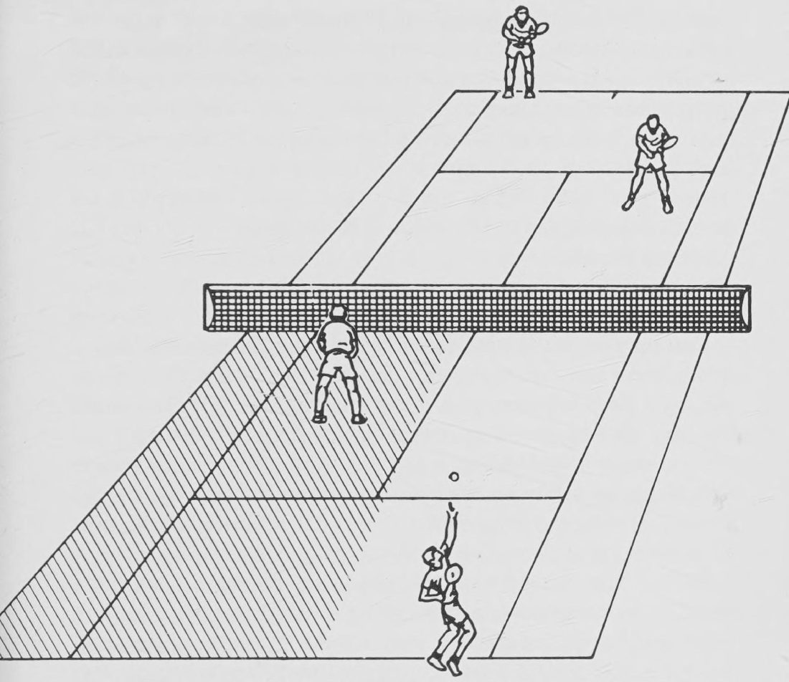
là phần sân của người đứng lưới cho đến khi người giao bóng thực hiện an toàn cú vô-lê đầu tiên và tiến gần hơn để tạo rào chắn lưới. Ngay cả khi đó, với cú vô-lê thuận tay và cú đánh trên đầu hướng về trung tâm, phạm vi bao quát của người đứng lưới sẽ tiếp tục gần như tương tự trong khi người giao bóng giao bóng sang ô bên phải.
Ilus. 20. IT’S NOT CALLED THE NET GAME FOR NOTHING. The shaded area is the net man’s share of the court until the server has safely made his first volley and moved closer in to form a net barrier. Even then, with his forehand volley and overhead towards the center, the net man’s cover will continue to be about the same while the server is serving to the right court.
lùi trong khi vẫn đối diện về phía trước, hoặc nếu đối thủ không có hiện tượng sử dụng cú lốp, bạn có thể đứng gần lưới hơn một chút.
back while facing forward, or if your opponents show no inclination to use a lob, you can stand somewhat closer to the net. Where you stand is your own affair—provided you don’t get consistently lobbed over, or lobbed over every time your opponents need a vital point, and in either way manage to lose your partner’s serve for him.
Nơi bạn đứng là việc của riêng bạn—miễn là bạn không bị lốp qua đầu liên tục, hoặc bị lốp qua mỗi khi đối thủ cần một điểm số quan trọng, và bằng cách này hoặc cách khác làm mất ván giao bóng của đối tác vì bạn.
Now you know what the Strong Player meant when he assured his partner-to-be: “Come in as far as you like. I'll cover my lobs.”
Xin Hãy Phản đốiObjections Please
Bây giờ bạn biết Cầu thủ Mạnh muốn nói gì khi anh ta đảm bảo với đối tác tương lai: “Cứ tiến lên bao xa tùy thích. Tôi sẽ bao quát các cú lốp.”
You may object to this reasoning and say your partner has a strong serve that receivers can’t do what they like with, such as putting a deep lob over your head whenever they feel inclined.
Những ý kiến phản đối Bạn có thể phản đối lý luận này và nói rằng đối tác của bạn có cú giao bóng mạnh mà người nhận không thể làm bất cứ điều gì họ muốn, chẳng hạn như đẩy một cú lốp sâu qua đầu bạn bất cứ khi nào họ muốn.
You say that by standing farther back from the net than need be, you are over-protecting against deep lobs that seldom come and taking up a less aggressive net position for your volleying.
Bạn nói rằng bằng cách đứng xa lưới hơn mức cần thiết, bạn đang bảo vệ quá mức chống lại các cú lốp hiếm khi xảy ra và chấp nhận một vị trí lưới ít tấn công hơn cho các cú vô-lê của mình.
Instead of doing that, you’d sooner stand closer to the net, where you have more chance of volleying down.
Thay vì làm vậy, bạn thà đứng gần lưới hơn, nơi bạn có nhiều cơ hội vô-lê bóng xuống hơn.
Well, it has already been said that you can stand where you like. If your partner has a dominating serve he hardly needs you at all, and for that matter he may not even need to advance to the net behind it. But if he has to fight to hold his service games against receivers who can handle his serves and make good service returns, including lobs, it is essential that as a pair you have a roof to your house. A net barrier has to be high as well as wide.
Che Trung tâmCenter Cover
Chà, điều đó đã được nói rằng bạn có thể đứng nơi bạn muốn. Nếu đối tác của bạn có cú giao bóng áp đảo, anh ta hầu như không cần bạn chút nào, và về vấn đề đó, anh ta thậm chí có thể không cần tiến lên lưới sau cú giao bóng. Nhưng nếu anh ta phải chiến đấu để giữ ván giao bóng của mình chống lại những người nhận có thể xử lý cú giao của anh ta và thực hiện những cú trả bóng tốt, bao gồm cả cú lốp, thì điều thiết yếu là với tư cách là một cặp, bạn phải có một 'mái nhà' cho ngôi nhà của mình. Một rào chắn lưới phải cao cũng như rộng.
Mention of width brings us to the second point about the shaded area of Illus. 20. As well as guarding against lobs, you should cover about as much as the center if you can. The reason is that it is easier for you to volley from the net, where the ball
Bao quát Trung tâm Nhắc đến chiều rộng đưa chúng ta đến điểm thứ hai về vùng tô bóng của Hình 20. Ngoài việc phòng chống cú lốp, bạn cũng nên bao quát khoảng gần trung tâm nếu có thể. Lý do là vì bạn dễ dàng vô-lê từ lưới, nơi quả bóng cao hơn, hơn là đối tác đang tiến vào của bạn. Đối với cú vô-lê đầu tiên, anh ta sẽ chưa đến được vị trí gần lưới như bạn; anh ta sẽ không đứng bên cạnh bạn, tạo thành một rào chắn gần như song song với lưới. Anh ta sẽ phải thực hiện một cú vô-lê thấp hơn và do đó khó khăn hơn, hoặc có lẽ là một cú nửa-vô-lê.
is higher, than it is for your incoming partner. For his first volley he will not yet have arrived at a position as close to the net as you are; he will not be beside you, forming a barrier more or less parallel to the net. He will have a lower and hence more difficult volley, or perhaps a half-volley, to make.
Có vẻ là một quãng đường dài để bạn bao quát, nhưng nó ít hơn nhiều một khi bạn nhận thức được điều đó và bị thuyết phục rằng đó là điều đúng đắn nên làm.
It seems a long way over for you to cover, but it is far less, once you are aware of it and convinced it is the right thing to do.
Bạn không thể bắt đầu từ một vị trí lưới gần đường biên dọc và nhảy sang, vì điều này khiến bạn bị hở và dễ bị tổn thương trước một cú đánh dọc đường biên hoặc một cú lốp qua đầu. Hãy cho mình một cơ hội và đứng gần trung tâm, hơi lệch một chút so với nửa đường giữa đường biên dọc và đường trung tâm.
You can’t start from a net position near the sideline and leap across, because this commits you and makes you vulnerable to either a sideline passing shot or a toss over your head. Give yourself a chance and stand near the middle, a little less than halfway between sideline and center line.
Che Đường biên dọcSideline Cover
Bao quát Đường biên dọc Còn đường biên dọc của bạn thì sao? Bạn có nhiều khả năng bảo vệ quá mức đường biên dọc của mình hơn là bảo vệ quá mức chống lại các cú lốp.
What about your sideline? You are far more likely to over- protect your sideline than you are to over-protect against lobs.
Trừ khi người nhận công khai nhắm vào bạn, anh ta hiếm khi tấn công đường biên dọc của bạn. Chống lại một cú giao bóng mạnh, anh ta cố gắng tránh xa bạn. Từ một cú giao bóng yếu, anh ta không muốn lãng phí một cơ hội tốt; anh ta thấy rằng sẽ tốt hơn khi đánh mạnh vào chân của đối tác đang tiến vào //với mọi cơ hội thành công thay vì mạo hiểm một cú đánh “có lẽ”
Unless a receiver is openly gunning for you, he seldom attacks your sideline. Against a strong serve, he tries to keep clear of you. From a weak one, he doesn’t want to waste a good oppor- tunity; he is better off driving into the feet of your incoming partner with every chance of success than risking a “‘perhapser”’
đó có thể đi dọc đường biên của bạn, nhưng cũng có thể đập thẳng vào cú vô-lê trái tay của bạn, được thực hiện từ vị trí cao hơn lưới.
that may go down your sideline, but equally may be straight into your backhand volley, played from higher than the net.
Khi đối tác của bạn giao bóng rộng, bạn phải bảo vệ đường biên dọc của mình.
When your partner serves wide, you must protect your sideline.
Điều đó không cần bàn cãi.
That is not in dispute.
Bạn có rất nhiều việc phải làm với tư cách là người đứng lưới. Cú đánh trên đầu và các cú vô-lê của bạn cần phải vững chắc. Để bao quát một nửa sân từ vị trí lưới, bạn cần di chuyển tốt, nhưng việc biết trước về những gì mình nên làm cho phép bạn di chuyển nhanh hơn nhiều so với một cầu thủ có phản xạ cơ thể nhanh nhưng lại nghi ngờ trong tâm trí.
You’ve a lot to do as net man. Your overhead and your volleying need to be solid. To cover a good half of the court from a net position you need to move well, but foreknowledge of what you should do allows you to move a lot faster than a player who has swift reflexes in his body but doubt in his mind.
Tâm trí đánh bại cơ bắp một khoảng cách xa.
Mind beats muscle by a mile.
Bạn có thể chơi Lối chơi Lên lưới với ít sự bao quát hơn không?
Can You Play a Net Game With Less Cover?
Bạn có thể phản đối rằng bạn muốn chơi đánh đôi Lên lưới, nhưng bạn không cảm thấy mình phải bao quát tất cả vùng tô bóng đó khi bạn là người đứng lưới trước khi dám thử đội hình cao quý này. Bạn đã thấy nhiều người giao bóng theo sau cú giao bóng của họ và những cú lốp bay qua đầu người đứng lưới và người giao bóng ch somehow cứu được. Ngoài ra, các cú trả bóng đi dọc trung tâm và người giao bóng chơi hầu hết trận đấu mà không có người đứng lưới và anh ta vẫn thắng gần hết các ván giao bóng của mình. Hoặc bạn có thể nói rằng bạn và tất cả các đối tác của mình chơi theo cách này—một cách hài lòng, cảm ơn.
You may object that you want to play Net Game doubles, but you don’t feel you have to cover all that shaded area when you’re the net man before daring to attempt to play this high and mighty formation. You’ve seen plenty of servers following their serves in and lobs going over the net man and the server getting them somehow or other. Also, returns go down the middle and the server plays most of the game without the net man and he wins nearly all his serves too. Or you may say that you and all your partners play this way—satisfactorily, thanks.
Đây là một số câu trả lời dễ chịu:
Here are some agreeable answers:
# Đừng ngần ngại. Hãy chơi Lối chơi Lên lưới ngay khi bạn muốn.
# Don’t hold back. Play the Net Game as soon as you want to.
= Nếu bạn cảm thấy không thể bao quát toàn bộ vùng tô bóng đó, ít nhất hãy điều chỉnh sự bao quát theo lối chơi của đối thủ. Nếu họ chủ yếu đánh drive, hãy cố gắng bao quát trung tâm thay vì tập trung vào việc phòng chống cú lốp.
= Ifyou feel you can’t cover all of that shaded area, at least adapt your coverage to the play of your opponents. If they mostly drive, try to cover the center rather than concentrate on guarding against lobs.
= Tuy nhiên, hãy ý thức rằng các ván tập luyện không phải là ván đấu chính thức. Khi chỉ tập luyện, bạn bè của bạn thường muốn đánh những cú drive mạnh hoặc thử những góc ngắn hoặc chơi một loạt các cú đánh thú vị—vì vậy họ hiếm khi bận tâm đến cú lốp.
= Be conscious, though, that practice sets are not match sets. When only practicing, your friends usually want to hit hard drives or attempt short angles or play a variety of interest- ing shots—so they seldom bother with lobs. It’s different in a match. When a receiver sees your partner follow in his serve to block off the net, he often decides that his best course is to toss. The very pair you practiced against are just as likely to do this as any other pair, if later you should meet them in a match.
Trong một trận đấu thì khác. Khi một người nhận thấy đối tác của mình theo cú giao bóng tiến lên để chặn lưới, anh ta thường quyết định rằng cách tốt nhất là lốp bóng. Chính cặp đấu mà bạn đã tập luyện chống lại có khả năng làm điều này cao nhất, nếu sau đó bạn gặp họ trong một trận đấu.
= Against a pair who lob at every opportunity, if you don’t cover those directed over your side of the court your position as a pair will be continually upset. Your serving partner will then decide he can’t risk coming in and will stay back instead.
= Chống lại một cặp lốp bóng mọi cơ hội, nếu bạn không bao quát những cú lốp hướng về phía sân của mình, vị trí của bạn như một cặp sẽ liên tục bị xáo trộn. Đối tác giao bóng của bạn sau đó sẽ quyết định rằng anh ta không thể mạo hiểm tiến lên và sẽ đứng lùi lại thay vào đó.
In other words, you'll be playing One Up One Back again—and
Nói cách khác, bạn sẽ quay lại chơi Một trên Một dưới—và đó không phải là sự tiến bộ. Hình 20 và các trang giải thích đi kèm nhằm ngăn chặn điều này xảy ra với bạn.
đó không phải là sự tiến bộ. Hình 20 và các trang giải thích đi kèm nhằm ngăn chặn điều này xảy ra với bạn.
that’s not progress. Illus. 20 and its explanatory pages are meant to stop this sort of thing happening to you.
s Đừng nghi ngờ khả năng bao quát cú lốp của mình. Không ai có thể lốp qua đầu một người đàn ông khỏe mạnh đang mong đợi bị lốp và từ chối bị lốp qua. Hãy thử điều này ngược lại trong một ván tập:
s Don’t doubt your ability to cover lobs. No one can lob over an able-bodied man’s head who’s expecting to be lobbed and refuses to be lobbed over. Test this in reverse in a practice set: when you’re receiving, tell your opposing net man you’re going to give him some smashing practice by trying to lob over his head. You’ll soon find that the only lobs he won’t be able to move back to and cover with a smash will be those that go out of court. You’ve prepared him, of course, and similarly in a match you should be prepared.
khi bạn là người nhận, hãy nói với người đứng lưới đối phương rằng bạn sẽ cho anh ta tập đập bóng bằng cách cố gắng lốp bóng qua đầu anh ta. Bạn sẽ sớm thấy rằng những cú lốp duy nhất anh ta không thể //di chuyển lùi lại và bao quát bằng một cú đập là những cú đi ra ngoài sân. Bạn đã chuẩn bị cho anh ta, tất nhiên, và tương tự trong một trận đấu, bạn nên chuẩn bị sẵn sàng.
The play of the net man is the key to the Net Game formation.
Lối chơi của người đứng lưới là chìa khóa của đội hình Lối chơi Lên lưới.
Have another look at the short conversation between our friends at the start of the chapter. The only other thing settled was court sides, where the Strong Player tactfully suggested, without saying it, that he ought to have the left one. The SP, as a strong doubles player, would cover the whole of the shaded area when he was net man. The LP would too, because his first answer showed he was no stranger to the Net Game doubles, and also he would be backed by his partner’s strong serving.
Hãy nhìn lại cuộc trò chuyện ngắn giữa những người bạn của chúng ta ở đầu chương. Điều duy nhất khác được thống nhất là phía sân, nơi Cầu thủ Mạnh một cách khéo léo gợi ý, mà không nói ra, rằng anh ta nên chiếm ô bên trái. SM, với tư cách là một cầu thủ đánh đôi mạnh, sẽ bao quát toàn bộ vùng tô bóng khi anh ta là người đứng lưới. CP cũng vậy, vì câu trả lời đầu tiên của anh ta cho thấy anh ta không xa lạ với đánh đôi Lên lưới, và anh ta cũng được hỗ trợ bởi cú giao bóng mạnh của đối tác.
A strong-serving partner allows you to cover your re- sponsibilities well.
Một đối tác giao bóng mạnh cho phép bạn bao quát trách nhiệm của mình tốt.
A weak-serving one practically demands that you do. So in either case have no doubts—cover your half of the court fully, and perhaps a little more than half.
CÁC CÚ ĐÁNH CỦA NGƯỜI ĐỨNG LƯỚINET MAN’S STROKES
Một đối tác giao bóng yếu thực tế yêu cầu bạn phải làm vậy. Vì vậy trong cả hai trường hợp, đừng nghi ngờ—hãy bao quát nửa sân của bạn một cách đầy đủ, và có lẽ là nhiều hơn nửa một chút.
Your strokes as net man—volleys and smashes—have already been discussed in Chapter 2 page 49, and the following remarks are supplementary.
Các cú đánh của bạn với tư cách là người đứng lưới—vô-lê và đập bóng—đã được thảo luận trong Chương 2 trang 49, và những lưu ý sau đây là bổ sung.
If you mis-hit a volley, make sure that next time you watch the ball the whole distance of its travel. If you hit weakly, punch the next one. If you volley a fast ball out, block the next one.
Nếu bạn đánh hỏng một cú vô-lê, hãy đảm bảo rằng lần tới bạn quan sát quả bóng suốt quãng đường di chuyển của nó. Nếu bạn đánh yếu, hãy đấm cú tiếp theo. Nếu bạn vô-lê một quả bóng nhanh ra ngoài, hãy chặn cú tiếp theo.
If none of your volleys have that comfortable feeling you’re
Nếu không có cú vô-lê nào mang lại cảm giác thoải mái cho bạn
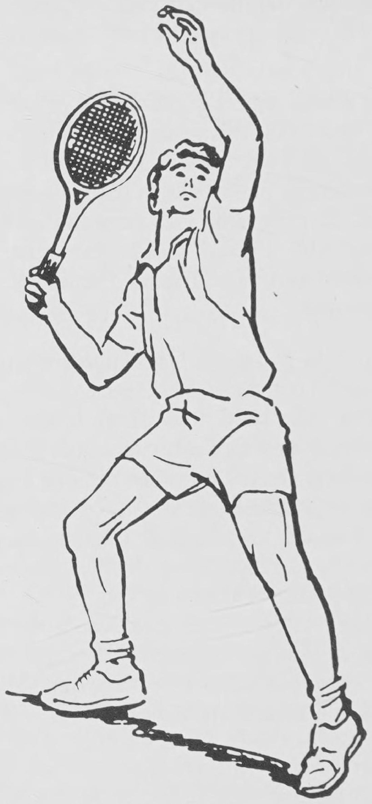
hãy đưa cánh tay trái lên để giữ thăng bằng và đưa vợt lên gần vai phải của bạn. Bạn không cần một cú vung đầy đủ như khi giao bóng.
put your left arm up to steady yourself and cock your racket near your right shoulder. You do not need as full a swing as for your service.
§6 o TENNIS DOUBLES
quen, hãy sử dụng một chút động tác theo bóng (follow-through). Ít cầu thủ kết hợp động tác theo bóng với một cú vô-lê, nhưng điều đó mang lại hiệu quả kinh ngạc trong việc làm mượt cú đánh.
used to, use a little follow-through. Few players connect follow- through with a volley, but it’s amazing how it smoothes you out.
Đập bóng (Smash)Smashing
Đập bóng (Smashing)
Your smash needs to be solid rather than speedy, because at the usual fairly high standard of Net Game doubles you will receive more good lobs than poor ones. To smash a deep lob, you have to move backwards while facing forwards. Put your left arm up to steady yourself as you move back and cock your racket somewhere near your right shoulder. See Illus. 21.
Cú đập bóng của bạn cần sự vững chắc hơn là tốc độ, bởi vì ở trình độ chơi Lối chơi Lên lưới tương đối cao, bạn sẽ nhận được nhiều cú lốp tốt hơn là những cú lốp kém. Để đập một cú lốp sâu, bạn phải di chuyển lùi lại trong khi vẫn đối diện về phía trước. Hãy đưa cánh tay trái lên để giữ thăng bằng khi lùi lại và đưa vợt lên gần vai phải của bạn. Xem Hình 21.
At the last moment rise to meet the ball (so you won’t have a shaky feeling that it is falling on you) and hit it forward, not down. You are well back in court and a smash carries its own downward tendency. Do not use the full swing you use for your service, in which you wind up behind your body in an effort to propel an almost stationary ball all the way from behind the baseline. Aim the ball well clear of the net.
Vào khoảnh khắc cuối cùng, hãy bật lên để đón bóng (để bạn không có cảm giác run rẩy rằng bóng đang rơi xuống đầu mình) và đánh bóng về phía trước, không đánh xuống. Bạn đang đứng sâu trong sân và một cú đập bóng vốn đã có xu hướng đi xuống. Đừng sử dụng cú vung đầy đủ như khi bạn giao bóng, trong đó bạn vung vợt ra sau cơ thể để đẩy một quả bóng gần như đứng yên từ phía sau vạch cuối sân. Hãy nhắm quả bóng vượt qua lưới một khoảng an toàn.
If you hit with the center of your strings, the ball will go where you aimed it in depth. If you hit above center, the ball will go lower and shorter than you aimed. If you hit the ball below center, down in the bow of your racket face, it will go up and out over the baseline. See Illus. 22.
Nếu bạn đánh vào trung tâm của mặt lưới, quả bóng sẽ đi đúng độ sâu mà bạn nhắm tới. Nếu bạn đánh phía trên trung tâm, quả bóng sẽ đi thấp hơn và ngắn hơn mục tiêu. Nếu bạn đánh bóng phía dưới trung tâm, ngay tại phần võng của mặt vợt, quả bóng sẽ bay vút lên và ra ngoài vạch cuối sân. Xem Hình 22.
The below-center part of your strings has no magical property of sending a tennis ball up and out—it’s just that when you hit the ball here your racket is always sloping backwards towards the back fence behind you, so up goes the ball.
Phần phía dưới trung tâm của mặt lưới không có đặc tính ma thuật nào khiến quả bóng bay vút lên và ra ngoài—đơn giản là khi bạn đánh bóng ở đây, mặt vợt của bạn luôn nghiêng về phía sau hướng về hàng rào phía sau, vì vậy quả bóng bay lên.
Anyway, watch a number of other players smashing deep lobs.
垂- dù sao đi nữa, hãy quan sát một số cầu thủ khác đập những cú lốp sâu.
You will probably find that most swing too deeply and hit almost as many balls into the net as over, and that if they send one over the backline they have hit it from below the center of the strings.
Bạn sẽ thấy rằng hầu hết họ vung vợt quá sâu và đánh bóng vào lưới nhiều gần bằng số lần đánh qua, và nếu họ đưa bóng ra ngoài vạch cuối sân, họ đã đánh bóng từ phía dưới trung tâm mặt lưới.
Practice the technique outlined and your overhead will become as safe against deep lobs as against shorter ones. That’s having a solid overhead.
Hãy luyện tập kỹ thuật này và cú đánh trên đầu của bạn sẽ trở nên an toàn trước các cú lốp sâu cũng như các cú lốp ngắn. Đó chính là sở hữu một cú overhead vững chắc.
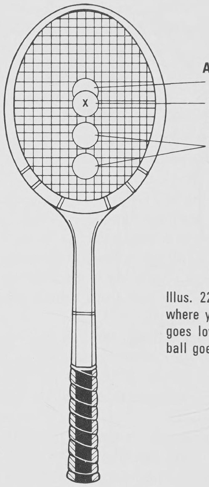
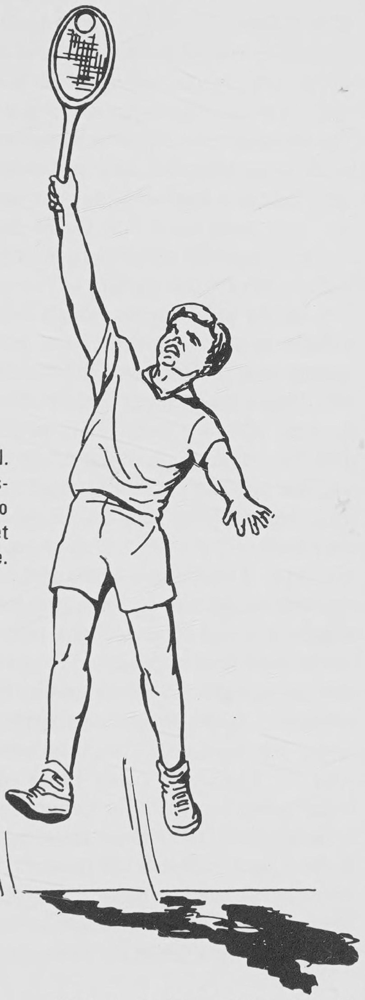
Điều đó không chỉ được chấp nhận, mà là cần thiết. Nó tạo ra sự khác biệt lớn cho vị trí—bạn sẽ giữ được rào chắn lưới hoặc đối phương sẽ chiếm được nó.
It’s more than allowable, it’s neces- sary. What a difference it makes to the position—you'll keep net barrier or the receivers will get one.
GIAO BÓNGSERVING
Việc giao bóng đã được đề cập chi tiết về cả chiến thuật và kỹ thuật. Khi thảo luận về giao bóng trong đánh đôi Lối chơi Lên lưới, chúng ta sẽ tiếp tục giả định rằng cú giao bóng của bạn không quá áp đảo đến mức liên tục gây ra những cú ace cho đối thủ hoặc khiến họ đánh hỏng hoặc chơi các cú đánh yếu, trong trường hợp đó bạn có thể thắng chỉ bằng các cú đánh của mình.
Serving has been covered in some detail for both tactics and mechanics. In discussing Net Game doubles serving, we will again assume that your serve isnot so dominant that it con- tinually aces your opponents or causes them to mis-hit or play weak shots, in which case you could win by your strokes alone.
Tất cả các tình huống giả định rằng cú giao bóng của bạn cần có sự hỗ trợ về chiến thuật, rằng bạn cần đội hình Lối chơi Lên lưới để chiến thắng, dù là chắc chắn chống lại các cặp đấu kém hơn hoặc bằng một nỗ lực cuối cùng khi bạn đối đầu với một đối thủ ngang tầm.
All situations assume that your service needs tactical backing, that you need your Net Game formation to win, either with certainty against lesser pairs or by yet another last inch when you are evenly matched.
Đối với cú giao bóng chủ lực, đừng đánh bóng quá mạnh. Trừ khi đó là một cú thắng điểm hoặc gần như thắng điểm, nếu không bóng sẽ trả về quá nhanh và bắt kịp bạn khi bạn còn quá xa lưới để có một cú vô-lê thoải mái. Bạn sẽ “buộc đối thủ phải chơi xuất thần”. Thay vào đó, hãy giao bóng với ý tưởng là đặt mình vào vị trí tốt nhất để thực hiện Cú Vô-lê Đầu tiên, một cú đánh then chốt xứng đáng có tên riêng. Giao bóng với nhịp điệu và sự thăng bằng sao cho cú giao và động tác theo bóng kết thúc bằng việc chân phải bước vào sân như là bước đầu tiên trong quá trình tiếp cận lưới. Giao bóng phẳng, cắt và xoáy-cắt đều tương thích với điều này. Hành động giao bóng xoáy lên đẩy chân phải của bạn hơi chệch sang một bên, cú xoáy cực mạnh (hoặc American Twist) đẩy chân đó hẳn sang bên phải, và những biến dạng này làm chậm quá trình bắt đầu tiếp cận lưới. Tuy nhiên, ai cũng biết rằng hai cú giao này có quỹ đạo cao hơn qua lưới so với những cú khác và do đó mất nhiều thời gian hơn để đến với vợt của người nhận. Vì vậy, chúng cho người giao bóng thời gian tối đa để vào vị trí. Nó cũng cải thiện sự tự tin của bạn trong các loại giao bóng khác khi biết rằng sự mượt mà của chúng có thể hỗ trợ việc tiếp cận lưới của bạn.
As your stock serve, don’t blast the ball. Unless it is a winner or near-winner in itself it comes back too quickly and catches you too far from the net for a comfortable volley. You will “force your opponent into brilliance.’ Serve instead with the idea of being well placed to make your First Volley, a key shot that deserves a name of its own. Serve with rhythm and balance so that your serve and follow-through end with your right leg stepping into the court as the first step of your net approach. Flat, sliced and topspin-sliced services all equate with this. The topspin-serve action sends your right leg some- what sideways, the extreme topspin (or American Twist) sends it definitely out to your right, and these distortions slow down the start of your approach. However, it is well known that these two serves have a higher arc over the net than others and so take longer to arrive at the receiver’s racket. Thus they give the server the maximum time to get into position. It also improves your confidence in other types of serves to know that their smoothness can aid your net approach.
Đừng phạm lỗi chân (foot-fault). Sự hăng hái muốn tiếp cận lưới khiến bạn phạm lỗi này gần như mọi lúc nếu bạn không nhận thức được. Rồi một ngày vào một khoảnh khắc căng thẳng, ai đó bất ngờ hét lên, “Lỗi chân!” Cảm giác giống như ai đó gọi bạn là “Phạm quy!” hoặc thậm chí, với một tâm hồn nhạy cảm, là “Gian lận!” Bạn là một đối thủ rất kinh nghiệm nếu điều đó không làm bạn khó chịu, hoặc ít nhất là khiến bạn cảm thấy tự ti, điều này gây cản trở sự tập trung và việc quan sát bóng trong cú giao tiếp theo. Thay vào đó, hãy đứng cách xa vạch— xử lý rõ ràng nếu bạn biết mình luôn di chuyển chân trước một chút, xa thật xa nếu bạn biết mình di chuyển nhiều. Đừng tự thương hại vì bạn đang tự phạt mình, vì Chúa ơi. Sau đó giao bóng, theo bóng, vung chân phải qua và bước vào sân và tiến về phía lưới.
Don’t foot-fault. Your keenness to get to the net makes you do this practically all the time if you are not aware of it. Then one day at some tense moment someone suddenly shouts, ““Foot-fault!” It’s as though he called, “Foul!” or even, to a sensitive soul, “Cheat!” You’re a very experienced competitor if it doesn’t upset you, or at least make you feel self-conscious, which interferes with your concentration and your watching the ball on your next serve. Instead, stand clear of the line— well clear if you know you always move your front foot a little, miles clear if you know you move it a lot. Don’t have any self-pity that you’re penalizing yourself, for heaven’s sake. Then serve, follow through, swing your right leg over and step into court and move to the net.
Tiến về phía lưới nhanh chóng hoặc mạnh mẽ, tùy theo thể hình và khả năng di chuyển của bạn. Đừng bao giờ coi mình là đang vội vã tiến lên lưới. Tiếng bước chân hối hả của những đứa trẻ thuộc về một bữa tiệc thiếu nhi, hoặc có lẽ là của một thành viên táo bạo trong cặp Hai Dưới, người bất ngờ bứt tốc lên lưới ở điểm quyết định. Chúng không thuộc về một cầu thủ theo mọi cú giao bóng lên lưới.
Move to the net swiftly or strongly, accordingly to your build and movement. Never see yourself as rushing the net. The patter of excited little feet belongs to a children’s party, or perhaps to a Two Back pair’s more daring member, who makes a sudden burst for the net at match point. They don’t belong to a player following every serve to the net. Sometimes you do things best in a hurry, but it’s no way to play Net Game doubles.
Thời gian giữa lúc tác động giao bóng và lúc tác động cú vô-lê đầu tiên càng dài, bạn càng tiến sâu vào lưới, và cú vô-lê này sẽ càng dễ dàng hơn. Do đó, hãy lưu ý rằng bạn cần giao bóng sâu, thay vì phó mặc cho may rủi và cố gắng bù đắp thời gian bằng cách “lao” vào.
The longer the time between the impact of your serve and the impact of your first volley, the farther into the net you will be, and the easier this volley will be. Therefore, be aware that you need to serve deep, instead of more or less leaving this to chance and trying to make up the time by “rushing” in.
Trong hầu hết các điểm, cú vô-lê đầu tiên, thay vì cú giao bóng, mới là cú đánh then chốt. Hầu hết bạn có thể thực hiện nó tốt và, nếu làm vậy, tỉ lệ chiến thắng điểm đó, ngay lập tức hoặc cuối cùng, sẽ tăng vọt. Do đó, nếu bạn nhận được một cú vô-lê đầu tiên thoải mái, đừng bao giờ bỏ lỡ nó—đó là sự lãng phí bất cẩn. Nếu nó khó, hãy cố gắng xoay xở đưa bóng trở lại bằng mọi giá và giữ cho điểm số tiếp tục.
On most points, your first volley, rather than your serve, is the key shot. Mostly you can play it well and, if you do, the odds rise steeply of your winning that point, at once or eventually.
Thuận buồm xuôi gió Hãy cố gắng ghi ace bất cứ khi nào bạn muốn, nhưng nhiều người giao bóng thấy rằng việc quá tập trung vào một cú đánh duy nhất sẽ gây cản trở sự thăng bằng trong việc tiến lên cho cú vô-lê đầu tiên, nếu người nhận cuối cùng trả bóng tốt. Phương pháp chủ lực của nhiều cầu thủ kinh nghiệm là coi cú giao bóng và cú vô-lê đầu tiên như một cặp cú đánh thay vì là hai cú đánh riêng biệt. Họ vung cú giao bóng qua lưới, có vẻ như uốn cong nó xuống trong ô giao bóng gần như chờ đón bóng với đôi tay mở rộng, tiến vào như một phần của hành động giao bóng tiếp diễn, tạm dừng hoặc chậm lại một chút khi người nhận đánh bóng, thực hiện một cú vô-lê đầu tiên thoải mái, và tiến sâu hơn để song song với người đứng lưới và tạo thành rào chắn lưới với anh ta.
Therefore, if you receive a comfortable first volley never miss it—that’s careless squandering. If it’s difficult, try to scramble it back at all costs and keep the point alive.
Thuận buồm xuôi gióSmooth Sailing
Nó khá giống như một ván cờ, khi người chơi cầm quân trắng đi trước và, không mạo hiểm và cũng không tìm kiếm một cú đánh nhanh, tự đặt mình vào một vị trí mở đầu vững chắc. Xem Hình 24.
Go for an ace whenever you want to, but many servers find such concentration on one shot alone interferes with their balance in following in for the first volley, should the receiver make a good return after all. The stock method of many experi- enced players is to regard their serve and first volley as a pair
Lý do tại sao người giao bóng thường giữ được ván giao bóng trong một trận đấu ngang tài ngang sức là vì cặp giao bóng có cơ hội đầu tiên để tạo rào chắn lưới, chứ không phải vì cú giao bóng vượt trội hơn cú trả bóng. Đây là một trong những ví dụ rõ ràng nhất, và chắc chắn là nhất quán nhất, về việc chiến thuật chi phối lối chơi, mặc dù các cú đánh của cả hai cặp có thể tương đương nhau.
Nếu bạn xem các nhà vô địch đánh đôi trên TV, bạn sẽ nhận thấy rằng lối chơi rực rỡ và đa dạng của họ trông có vẻ tự phát, thậm chí là chộp thời cơ. Không nghi ngờ gì một phần là vậy, nhưng cơ sở giao bóng chủ lực của họ là (trang đối diện)
ở đó, để giữ thăng bằng vô-lê và đạt tầm với tối đa sang phải hoặc trái. Người nhận trả bóng trái tay về phía A hoặc B. Anh ta đã tránh được người đứng lưới nhưng quả bóng vẫn ở trên độ cao của lưới và không phải là một cú đánh khó cho người giao bóng đang tiến vào.
Người giao bóng thực hiện một cú vô-lê đầu tiên thoải mái từ trái tay (A) hoặc thuận tay (B) sâu về phía trái tay của người nhận và tiến sát vào. Không cần mạo hiểm chút nào, người giao bóng đã buộc người nhận phải đánh cú tiếp theo từ phía sau vạch cuối sân và đã tạo ra một rào chắn lưới với đối tác của mình. Từ vị trí hoàn hảo này, bạn sẽ đồng ý rằng nếu lúc này anh ta để bị lốp bóng qua đầu, anh ta nên bị đuổi ra khỏi sân.
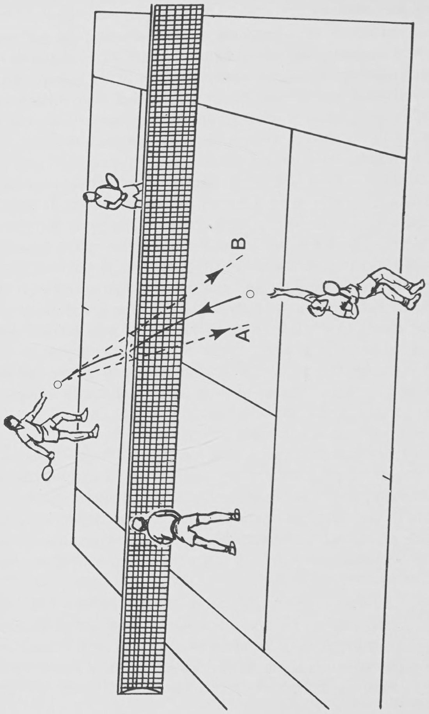
như hiển thị trong Hình 24. Nó có thể nhận diện được. (Đừng nhìn bóng trong một lúc mà hãy để mắt đến người giao bóng thay vào đó.)
of shots rather than as two separate shots. They swing their serve over the net, seem to curl it downward into a service court almost waiting to receive it with open arms, move in as part of a service-action-continued, pause or slow down a little as the receiver is hitting the ball, take a comfortable first volley, and move in farther to parallel the net man and form a net barrier with him.
Thật thỏa mãn khi có một cơ sở để làm việc và điều đó không nghĩa là bạn bị rập khuôn. Chỉ xét một cú đánh duy nhất, giao bóng, bạn có thể giao bóng từ cùng một vị trí và đưa bóng đến cùng một điểm trong sân của người nhận mà vẫn khiến anh ta cảm thấy đó là một quả bóng khác.
It’s all rather like a game of chess, when the player with the white pieces moves first and, taking no risk and not looking for a quick coup either, sets himself up in a sound opening position. See Illus. 24.
Xem Hình 25.
The reason why the server usually holds service in an evenly- matched game is that the serving pair has the first chance to form a net barrier, not that the serve is far superior to the return. This is one of the clearest, and certainly the most con- sistent, examples of tactics dominating play, although the strokes of both pairs may be about on a par.
Hãy thực hiện cú vô-lê đầu tiên từ bên trong vạch giao bóng bất cứ khi nào có thể. Nếu không làm vậy là lười biếng. Nếu bạn chắc chắn mình không lười, thì bạn cần luyện tập một hành động kết hợp giao bóng-và-tiếp cận mượt mà hơn và do đó nhanh hơn. Nếu bạn không thể làm được điều đó hiên, bạn sẽ phải giao bóng với quỹ đạo cao hơn. Hãy cho mình một cơ hội công bằng xuyên suốt bằng cách nhớ đưa bóng rơi sâu nhất có thể và không giao bóng với tốc độ tối đa cho một người nhận có thể xử lý được tốc độ của bạn. Hình phạt cho việc không tiến sâu vào lưới là những cú vô-lê đầu tiên lẽ ra thoải mái của bạn sẽ bị thay thế bằng một loạt các cú vô-lê rất thấp hoặc nửa-vô-lê, và cũng có thể là một vài cú đánh lai nằm đâu đó giữa nửa-vô-lê và bóng bay lên.
If you watch doubles champions on TV, you will notice that their brilliant and varied play looks spontaneous, even oppor- tunist. No doubt parts of it are, but their stock serving basis is (opposite page)
Khi người nhận thỉnh thoảng trả một quả bóng rất chậm và cao vượt lưới, bạn có thể chạy hết tốc lực vào và đánh một cú thắng điểm hoặc gần như thắng điểm. Tuy nhiên, trong mọi trường hợp khác, bạn sẽ phải tạm dừng một chút trong quá trình tiếp cận khi người nhận đánh bóng—vì hai lý do. Một là bạn không thể thay đổi hướng để bao quát các cú trả bóng rộng một cách chính xác khi bạn đang chạy về phía trước, và lý do kia là bạn không thể vô-lê có kiểm soát khi bạn đang chạy hết tốc lực. Sự tạm dừng này không phải là dừng hẳn, nhưng nó phải xảy ra ngay cả khi bạn hầu như không nhận ra mình đã làm vậy. Một sự tương tự nằm ở cú vung thuận tay drive của bạn: cho dù bạn dừng lại ở cuối cú vung ra sau hay chỉ chậm lại, một sự tạm dừng vẫn xảy ra ở đó; bạn không bao giờ vung ra sau và tiến về trước trong một chuyển động vòng lặp với cùng một tốc độ.
backhand side, curving the ball into his body so that he cannot make a forceful shot. In the same motion, server advances inside the service line and pauses there, for volleying balance and maximum reach to right or left. Receiver makes a backhand return towards either A or B. He has avoided the net man but the ball is still above net height and not a difficult shot for the incoming server.
Một khi bạn nhận ra cảm giác thỏa mãn và an toàn đến từ việc thiết lập một cú vô-lê đầu tiên thoải mái cho chính mình, bạn không thể không nhận thấy rằng trạng thái hạnh phúc này xảy ra sau những cú giao bóng một thường xuyên hơn nhiều so với cú giao bóng hai. Trước đây, bạn có thể đã e ngại lời khuyên là phải đưa ít nhất 70 phần trăm cú giao bóng một vào sân. Có vẻ như nó làm mất đi sự táo bạo của bạn. Tuy nhiên, với một cú vô-lê dễ quản lý làm phần thưởng, bạn sẽ muốn đưa tất cả chúng vào sân. Khi một cú giao hỏng, bạn sẽ muốn có một cú giao bóng hai vẫn cho phép bạn giành lấy phần thưởng của mình. Bạn thà có hai cú giao bóng tốt còn hơn là một.
Server plays a comfortable first volley from his backhand (A) or forehand (B) deep to receiver's backhand and closes in. Without having taken the slightest risk, server has forced receiver to play his next shot from behind the baseline and has set up a net barrier with his partner. From this perfect position you'll agree that if the latter now lets himself get lobbed over, he should be taken out and shot.
Đó là điều mà các huấn luyện viên và cố vấn đã nói trong nhiều năm, nhưng bạn phải tự khám phá cách diễn giải của riêng mình về điều đó trước khi thấy nó thuyết phục.
Khó khăn Điểm yếu nguy hiểm nhất mà bạn có thể có trong bộ giáp của mình là sự thiếu tự tin vào khả năng đưa một cú giao bóng hai quan trọng vào trái tay của đối thủ ô bên phải. Những điểm quan trọng không hẳn là điểm quyết định trận đấu mà là những điểm mà mọi thứ đang ở thế cân bằng liệu bạn sẽ thắng hay thua. Bị dẫn 1-5 và 15-40 không thể so sánh được về sự căng thẳng với tỉ số 4-tất cả, giao bóng một bị lỗi, và người nhận ô bên phải đang hăng hái đập một cú thuận tay xoáy lên xuống ngay dưới chân bạn. Nếu anh ta thành công và anh ta cùng đối tác -tiếp tục thắng 6-4, thì đó mới là điểm quyết định thực sự, và bạn nhận ra điều đó vào khoảnh khắc quan trọng này. Cú giao bóng chủ lực của bạn từ trước đến nay có ích gì hiếu, nếu nó là kiểu giao bóng một nhanh và đưa được một số lượng hợp lý vào sân, nhưng quả bóng thứ hai của bạn là—chà, hãy nói là “tạm chấp nhận được?”
(trang đối diện)
đứng ở vị trí cho bạn sự bảo vệ tối đa, và bạn tiến về phía C. Bạn đã làm tất cả những gì có thể về mặt chiến thuật, nhưng một cú giao bóng kém để lại BD là một cú đánh dễ dàng cho người nhận và là một cú đánh cực kỳ khó khăn cho bạn.
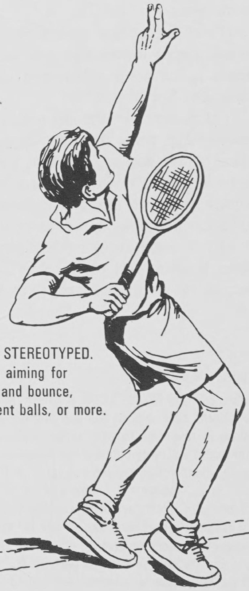
như hiển thị trong Hình 24. Nó có thể nhận diện được. (Đừng nhìn bóng trong một lát và hãy để mắt đến người giao bóng thay vào đó.)
as shown in Illus. 24. It is recognizable. (Don’t watch the ball for awhile and keep your eye on the server instead.)
Thật thỏa mãn khi có một cơ sở để làm việc và điều đó không nghĩa là bạn bị rập khuôn. Chỉ xét một cú đánh đơn lẻ, giao bóng, bạn có thể giao bóng từ cùng một vị trí và đưa bóng vào cùng một điểm trong sân của người nhận nhưng vẫn khiến anh ta cảm thấy đó là một quả bóng khác đối với anh ta. Xem Hình 25.
It’s satisfying to have a basis to work from and it does not mean you are stereotyped. Taking one shot alone, service, you can serve from the same position and land the ball in the same spot in the receiver’s court and yet make it feel a different ball to him. See Illus. 25.
Hãy thực hiện cú vô-lê đầu tiên từ phía trong vạch giao bóng bất cứ khi nào có thể. Đó là sự lười biếng nếu bạn không làm vậy. Nếu bạn chắc chắn mình không lười, thì bạn cần luyện tập một hành động kết hợp giao bóng-và-tiếp cận mượt mà hơn và do đó nhanh hơn.
Make your first volley from inside the service line whenever possible. It’s laziness if you don’t. If you’re sure you’re not lazy, then you need to practice a smoother and therefore quicker combined service-and-approach action. If you can’t do that either, you will have to serve with more arc. Give yourself a fair chance throughout by remembering to land the ball as deeply as possible and not to serve at top speed to a receiver who can handle your speed. The penalty for not getting well into the net is that your would-be comfortable first volleys will be replaced by a string of very low volleys or half-volleys, and probably as well by a few of those cross-breed shots somewhere between half-volley and rising ball.
Nếu bạn không thể làm được điều đó, bạn sẽ phải giao bóng với quỹ đạo cao hơn. Hãy cho bản thân một cơ hội công bằng trong suốt quá trình bằng cách nhớ đưa bóng vào sân sâu nhất có thể và không giao bóng với tốc độ tối đa cho một người nhận người có thể xử lý được tốc độ của bạn. Hình phạt cho việc không tiến -sát vào lưới là những cú vô-lê đầu tiên vốn dĩ thoải mái của bạn sẽ bị thay thế bằng một chuỗi những cú vô-lê rất thấp hoặc nửa-vô-lê, và có lẽ cả một vài cú đánh lai giữa nửa-vô-lê và bóng bay lên.
When the receiver occasionally returns a very slow ball high above the net, you can run all the way in and hit it for a winner or near winner. At all other times, however, you will have to pause somewhat in your approach as the receiver strikes the bali—for two reasons. One is that you can’t change direction to cover wide returns properly while you are running forward, and the other is that you can’t volley with control while you are on a dead run. This pause isn’t a complete stop, but it has to occur even if you scarcely notice you’ve made it. An analogy is in the swing of your forehand drive: whether you stop at the end of your backswing or merely slow down, some pause occurs there; you never swing back and forward in one looped motion at the same speed.
Khi người nhận thỉnh thoảng trả một quả bóng rất chậm và cao vượt qua lưới, bạn có thể chạy hết tốc lực vào và đánh một cú thắng hoặc gần thắng. Trong mọi trường hợp khác, tuy nhiên, bạn sẽ phải tạm dừng một chút trong quá trình tiếp cận khi người nhận đánh quả bóng—vì hai lý do. Một là bạn không thể thay đổi hướng để bao quát các cú trả bóng rộng một cách chính xác trong khi bạn đang chạy về phía trước, và lý do kia là bạn không thể vô-lê có kiểm soát trong khi bạn đang chạy hết tốc lực. Sự tạm dừng này không phải là dừng hẳn, nhưng nó phải xảy ra ngay cả khi bạn hầu như không nhận thấy mình đã làm vậy. Một sự tương đồng là trong cú vung thuận tay của bạn: cho dù bạn dừng lại ở cuối cú vung ra sau hoặc chỉ chậm lại, một sự tạm dừng vẫn xảy ra ở đó; bạn không bao giờ vung ra sau và vung tới trong một chuyển động vòng lặp với cùng một tốc độ.
Once you are aware of the feelings of satisfaction and safety
Một khi bạn nhận ra cảm giác thỏa mãn và an toàn đến từ việc thiết lập một cú vô-lê đầu tiên thoải mái cho chính mình, bạn không thể không nhận thấy rằng trạng thái hạnh phúc này xảy ra thường xuyên hơn sau những cú giao bóng một hơn là giao bóng hai. Trước đây, bạn có thể đã ngần ngại trước lời khuyên hãy đưa ít nhất 70 phần trăm các cú giao bóng một vào sân. Có vẻ như điều đó làm mất đi sự táo bạo của bạn. Tuy nhiên, với phần thưởng là một cú vô-lê đầu tiên dễ dàng, bạn sẽ muốn đưa tất cả chúng vào sân. Khi một cú bị hỏng, bạn sẽ muốn có một cú giao bóng hai vẫn cho phép bạn giành được phần thưởng của mình. Bạn thà có hai cú giao bóng tốt hơn là một. Đó là những gì các huấn luyện viên và người cố vấn đã nói trong nhiều năm, nhưng bạn phải tự khám phá cách hiểu của riêng mình về điều đó trước khi thấy thuyết phục.
Khó khăn (Rough Going)
Điểm yếu nguy hiểm nhất mà bạn có thể gặp phải trong bộ giáp của mình là sự thiếu tự tin vào khả năng đưa một cú giao bóng hai quan trọng vào trái tay của đối thủ ô bên phải. Những điểm quan trọng không hẳn là điểm quyết định trận đấu mà là những điểm mà kết quả thắng hay thua chỉ cách nhau trong gang tấc. Việc bị dẫn 1-5 và 15-40 không thể so sánh được về độ căng thẳng với tỉ số 4-tất cả, cú giao bóng một bị lỗi, và người nhận ô bên phải đang khao khát dập một cú thuận tay xoáy lên xuống sát chân bạn. Nếu anh ta thành công và anh ta cùng đối tác của mình đi tới chiến thắng 6-4, thì đó mới là điểm quyết định thực sự, la và bạn nhận ra điều đó tại thời điểm quan trọng này. Cú giao bóng theo khái niệm trước đây của bạn có ích gì lúc này, nếu nó là một kiểu giao bóng một nhanh và đưa được một số quả vào sân, nhưng quả thứ hai của bạn là—chà, hãy nói là “tạm chấp nhận được?”
(trang đối diện)
và là một cú đánh cực kỳ khó khăn cho bạn.
mà đến từ việc thiết lập một cú vô-lê đầu tiên thoải mái cho chính bạn, bạn không thể không nhận ra rằng trạng thái tốt đẹp này xảy ra thường xuyên hơn nhiều sau những cú giao bóng một so với giao bóng hai. Trước đây, bạn có thể đã chùn bước trước lời khuyên nên đưa ít nhất 70 phần trăm số cú giao bóng một của mình vào sân. Điều đó dường như làm mất đi sự hăng hái của bạn. Tuy nhiên, với một cú vô-lê đầu tiên dễ xử lý làm phần thưởng, bạn sẽ muốn đưa tất cả chúng vào sân. Khi một cú bị hụt, bạn sẽ muốn có một cú giao bóng hai vẫn cho phép bạn giành lấy phần thưởng của mình. Bạn thà có hai cú giao bóng tốt còn hơn một. Đó là điều mà các huấn luyện viên và cố vấn đã nói trong nhiều năm, nhưng bạn phải tự mình khám phá cách diễn giải riêng của mình trước khi nó trở nên thuyết phục.
that come from setting up a comfortable first volley for your- self, you cannot help noticing that this happy state of affairs follows far more often after first serves than second. Formerly, you may have recoiled from advice to get at least 70 per cent of your first serves in. It seemed to take away your dash. How- ever, with a manageable first volley as the prize, you will want to get them all in. When one does miss you will want to have a second serve that still allows you to claim your prize. You’d rather have two good serves than one. That is what coaches and advisers have been saying for years, but you have to discover your own interpretation of it for yourself before it’s convincing.
Giai đoạn Gian nanRough Going
Giai đoạn Gian nan Kẽ hở nguy hiểm nhất trong lớp giáp của bạn là sự thiếu tự tin vào khả năng đưa một cú giao bóng hai quan trọng vào trái tay của đối thủ ô bên phải. Những điểm quan trọng không hẳn là điểm trận mà là những điểm mà ở đó chỉ mành treo chuông giữa việc bạn thắng hay thua. Bị dẫn 1-5 và 15-40 không thể so sánh về độ căng thẳng với tỉ số 4 đều, cú giao bóng một bị lỗi, và người nhận ô bên phải háo hức giáng một cú thuận tay topspin xuống sát chân bạn. Nếu anh ta thành công và anh ta cùng đối tác thắng tiếp 6-4, thì đó mới thực sự là điểm trận, và bạn nhận ra điều đó rõ ràng vào đúng khoảnh khắc quan trọng này. Giờ đây quan niệm giao bóng trước đây của bạn có ích gì cho bạn, nếu nó là kiểu bạn giao những cú giao bóng một nhanh và đưa được một số lượng hợp lý vào sân, còn cú bóng hai của bạn thì—à, phải chăng ta nên nói là “tạm ổn”?
The most dangerous chink you can have in your armour is a lack of confidence in your ability to land a vital second serve on your right-court opponent’s backhand. Vital points are not so much match points as those where it’s on the razor’s edge whether you will win or lose. Being down 1-5 and 15-40 doesn’t compare for tension with 4-all, first service a fault, and the right-court receiver eager to hammer a topspin forehand down into the dirt at your feet. If he succeeds and he and his partner go on to win 6-4, that would have been the real match point, and well you realize it at this vital moment in question. Of what use to you now is your past service concept, if it has been one where you serve fast first serves and get a reasonable number in, and your second ball is—well, shall we say ‘‘about reasonable?”
(opposite page)
IIlus. 26. TANDEM DOES NOT COMPENSATE for having a poor second serve to the right court. Your serve AB finds the receiver's backhand, your partner is positioned to give you maximum protection, and you set sail for C. You've done all you can tactically, but a poor serve leaves BD as an easy shot for the receiver and a highly awkward one for you.
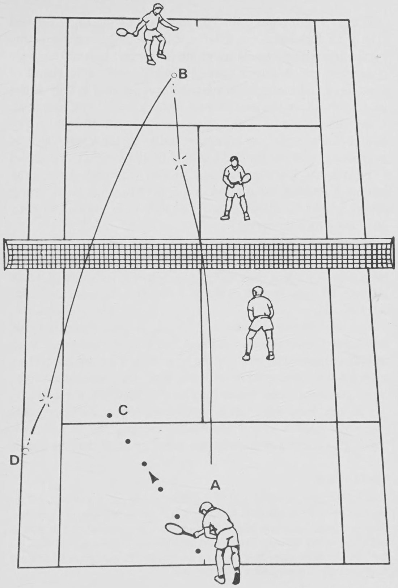
Vẫn còn cơ hội để bạn giữ điểm quan trọng này nếu bạn nhận ra rõ ràng rằng một cú giao bóng yếu đòi hỏi một cú vô-lê hồi phục mạnh mẽ, không chút do dự. Bạn giao cú giao bóng tương đối kém của mình và tiến lên mạnh mẽ. Anh ta dễ dàng thực hiện một cú thuận tay Từ cú giao của bạn và đập trả lại một cú xoáy lên nhanh chỉ cao khoảng năm centimet so với mặt đất khi chạm tới bạn. Nếu bạn do dự, cú vô-lê của bạn sẽ yếu hoặc có lẽ sẽ vào lưới. Nhưng bạn vô-lê mạnh, gập đầu gối sâu và ấn khung dưới của vợt xuống đất để tạo độ cứng và điểm tựa. Nếu bóng lại thấp hơn nữa, buộc bạn phải nửa-vô-lê, bạn đánh quả bóng ngay khi nó chạm đất và theo bóng với độ xoáy lên bao phủ mạnh mẽ. Có lẽ bạn sẽ thoát ra được, dù không nhờ vào cú giao bóng của mình.
There’s still a chance for you to hold this vital point if you clearly realize that a weak serve calls for a strong recovering first volley, with no hesitancy about it. You serve your relatively poor serve and follow in hard. He easily makes a forehand of your serve and bangs back a fast topspinner that is only about two inches above the ground as it reaches you. If you hesitated, your volley would be weak or perhaps in the net. But you volley hard, bending your knees deeply and digging the lower frame of your racket into the ground for rigidity and support. If the ball is lower again, forcing you to half-volley, you play the ball the instant it touches the ground and follow through with strong covering topspin. Possibly you'll be able to get out of it, with no thanks to your serve.
Phòng bệnh hơn chữa bệnh. Câu trả lời tốt nhất cho một cú thuận tay mạnh ở ô bên phải là có thể tránh nó bằng một cú giao bóng tử tế được thực hiện từ khoảng nửa đường ra đường biên dọc. Việc chỉ chơi Đội hình Song hành không có khả năng bù đắp cho một cú giao bóng yếu.
Prevention is better than cure. The best answer to a strong forehand in the right court is to be able to avoid it with a decent serve made from about halfway out to the sideline. Merely playing Tandem is not likely to make up for a weak serve.
Xem Hình 26.
See Illus. 26.
Hiếm khi thấy Đội hình Song hành ô bên phải được thực hiện. Có lẽ ba hoàn cảnh kết hợp lại sẽ biện minh cho việc sử dụng nó: người giao bóng nếu không vậy không thể đưa bóng vào trái tay người nhận; người nhận cho thấy phong độ hủy diệt với cú drive thuận tay chéo sân; người giao bóng có cú vô-lê trái tay tốt hơn nhiều so với thuận tay.
You seldom see right-court Tandem played. Possibly three circumstances combined would justify using it: server otherwise unable to place the ball on the receiver’s backhand; receiver showing devastating form with his crosscourt forehand drive; server having a much better backhand volley than forehand.
Song hành sang ô bên trái là một đề xuất hoàn toàn khác, khi bạn hỗ trợ nó bằng một cú giao bóng tốt và chơi để chặn đứng một cú thuận tay xoáy lên chéo sân của một người thuận tay trái giỏi đã được (trang đối diện)
Tandem to the left court is a different proposition altogether, when you back it with a good serve and play it to shut out a good left-hander’s crosscourt topspin forehand that has been (opposite page)
sâu, và hoặc là cắt và uốn ra xa trái tay của người nhận hoặc xoáy lên và gãy vào cơ thể anh ta. Người nhận được hiển thị đã định vị bản thân tốt, nhưng hiều người thuận tay trái thích chơi một cú trái tay xoáy trong sang phía không thuận và gặp khó khăn trong việc biến BD thành một cú đánh hiệu quả.
receiver's shot BD is now much harder for him to make. The serve is a good one, deep, and either sliced and going away from the receiver's backhand or topspun and breaking into his body. The receiver shown has positioned himself well, but many left-handers prefer to play an inside-spin backhand to their off side and have difficulty in making BD an effective shot.
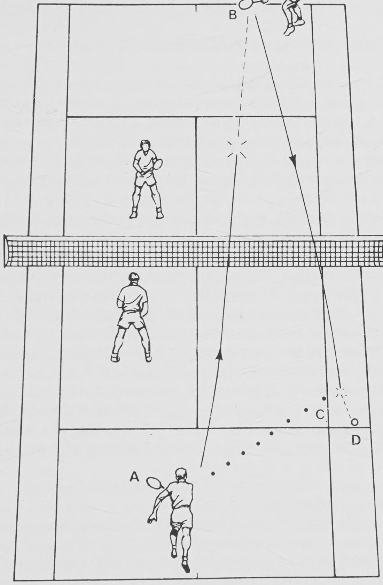
thống trị cuộc chơi. Điều này đã được thảo luận cho đội hình Một trên Một Một dưới trong Chương 2. Đối với ứng dụng trong Lối chơi Lên lưới, xem Hình 27.
dominating the game. This was discussed for a One Up One Back formation in Chapter 2. For its Net Game application see Illus. 27.
CHỐNG LẠI CÁC ĐỘI HÌNH NHẬN BÓNG KHÁC NHAUAGAINST DIFFERENT RECEIVING FORMATIONS
CHỐNG LẠI CÁC ĐỘI HÌNH NHẬN BÓNG KHÁC NHAU Khi bạn chuẩn bị giao bóng trong ván mở đầu chống lại một cặp mà lối chơi của họ còn chưa rõ, bạn thấy đối tác của người nhận cũng đứng lùi lại. Điều này có thể nghĩa là họ không phải là một cặp quan tâm đến lưới, hoặc người nhận không tự tin trong việc thực hiện một cú trả bóng mạnh chống lại cú giao bóng một của bạn. Tuy nhiên, nó cũng có thể nghĩa là anh ta định lốp bóng qua người đứng lưới hoặc đánh dọc đường biên của anh ta —để giữ anh ta ở đúng vị trí ngay từ đầu—và đã bảo đối tác của mình đứng lùi lại trong trường hợp người đứng lưới bao quát bất kỳ cú đánh nào và đánh nó vào khoảng trống không có người bảo vệ giữa họ.
As you prepare to serve in the opening game against a pair whose play is unknown to you, you see that the receiver’s partner is also standing back. This may mean that they are not a net- conscious pair, or that the receiver is not confident of playing a strong return against your first service. However, it may also mean that he intends to lob over the net man or to sideline him —to keep him in his place from the very start—and has told his partner to stay back in case the net man covers either shot and plays it into the unguarded space between them.
Vì không bao giờ là một ý kiến hay khi đánh giá thấp đối thủ của bạn trong đánh đôi (trong đánh đơn dễ sửa sai hơn), đối tác đứng lưới của bạn nên từ bỏ bất kỳ ý định mở đầu nào bằng một cú chặn bóng gây nản lòng, và thay vào đó nên chăm sóc phía sân của mình. Với tư cách là người giao bóng, bạn nên tận dụng cơ hội mình có khi chơi chống lại một đội hình phòng ngự Hai Dưới (điều này có thể thay đổi thành Một trên Một dưới cho cú giao bóng hai) và vì vậy bạn nên chắc chắn đưa cú giao bóng một vào sân khi điều kiện đang thuận lợi. Nếu bạn có một cú vô-lê đầu tiên thoải mái, bạn có toàn bộ sân để nhắm tới. Nếu bạn nhận được một cú khó, ít nhất không có người đứng lưới đứng đối diện bạn, hoặc đè nặng lên bạn như thường thấy.
As it is never a good idea to underestimate your opponents in doubles (in singles it’s easier to make amends), your net part- ner should forgo any thought he may have had of opening with a demoralizing interception, and instead should look after his own side of the court. As server, you should take advantage of the chance you have of playing against a defensive Two Back formation (which may change to One Up One Back for second serve) and so you should make certain of getting your first serve in while the going is good. If you get a comfortable first volley you have all the court to aim at. If you receive a difficult one, at least there is no net man standing opposite you, or sitting on top of you as it often seems.
Khi mở đầu theo cách này, bạn sẽ không gặp rắc rối, giống như lái một chiếc xe tốt và không rủi ro.
In opening this way you will come to no trouble, like driving a car well and without risk.
Nếu đối thủ của bạn chứng minh mình là một cặp nhận bóng Hai Dưới suốt thời gian, bạn và đối tác sẽ có thể giữ ván giao bóng một cách thoải mái. Hãy tiếp tục chơi hệ thống Lối chơi Lên lưới của bạn và kiếm điểm dễ dàng như một chiếc máy đánh chữ đang in chữ. Đừng trở nên lười biếng trong việc tiến sâu vào cho cú vô-lê đầu tiên, vì đó là nơi sự sa sút bắt đầu. Tương tự, bạn có thể coi đó là điểm then chốt để duy trì sự tập trung.
If your opponents prove to be a Two Back receiving pair all the time, you and your partner should be able to hold your serves comfortably. Continue to play your Net Game system and tap up the points like a typewriter tapping out print. Do not become lazy about following well in for your first volley, because that is where the rot sets in. Equally, you can make it the key point for maintaining your concentration.
Chống lại Người nhận Một trên Một dướiAgainst One Up One Back Receivers
Đối với Người nhận Một trên Một dưới Trong đội hình Một trên Một dưới, đối thủ của bạn có tiềm năng tấn công, vì người đứng lưới của họ đe dọa chặn cú vô-lê đầu tiên của bạn và có lẽ đánh một cú thắng điểm. Tuy nhiên, sự tấn công thực tế và sự tham gia của người đứng lưới phụ thuộc vào chất lượng cú trả giao bóng của người nhận. Vì vậy chúng ta sẽ phân tích các loại trả bóng khác nhau, giả định trong mọi trường hợp rằng người nhận đã đánh chúng thoát khỏi phạm vi bao quát của người đứng lưới và rằng bạn, với tư cách là người giao bóng đang tiến vào, sẽ là người xử lý chúng.
In One Up One Back formation your opponents are poten- tially aggressive, since their net man threatens to intercept your first volley and perhaps hit it for a winner. However, their actual aggression and net man participation depend on the quality of the receiver’s service return. So we'll analyze various types of return, assuming in all cases that the receiver has hit them clear of your net man’s cover and that you, as the incoming server, are going to play them.
Nếu cú trả bóng cao trên lưới, đội hình Một trên Một dưới của người nhận để họ ở vị trí yếu hơn so với nếu họ chơi Hai Dưới, nơi họ sẽ ở vị trí tốt hơn để trả lại cú vô-lê đầu tiên của bạn. Trong một đội hình Một trên Một dưới, người đứng lưới của họ thay đổi từ mối đe dọa thành mục tiêu. Tùy thuộc vào việc anh ta đứng gần hay xa lưới, bạn có thể bắn quả bóng vào hông phải dễ tổn thương của anh ta (như hiển thị ở Hình 19 trang 74, nơi bạn đang khẳng định chính mình) hoặc đánh bóng xuống đất tại chân anh ta. Bất cứ khi nào cú trả bóng cao, bạn là người nắm quyền kiểm soát—bất kể người nhận bình thường là cầu thủ mạnh đến đâu, hay đối tác của anh ta đã chiếm vị trí lưới đe dọa đến mức nào. Đối với người nhận Một trên Một dưới, hãy tìm kiếm những cú trả bóng cao này và giao bóng với mục tiêu hoặc ít nhất là hy vọng nhận được một quả như vậy.
If the return is high over the net, the receivers’ One Up One Back formation leaves them in a weaker position than if they had played Two Back, where they would have been better placed to return your first volley. In a One Up One Back forma- tion their net man changes from threat to target. Depending on how near or far he is from the net, you can either fire the ball at his vulnerable right hip (as shown at Illus. 19 on page 74, where you were asserting yourself) or down into the dirt at his feet. Whenever the return is high, you’re the one who’s in com- mand—no matter how strong a player the receiver may normally be, nor how threateningly his partner may have taken up his net position. Against One Up One Back receivers, look for these high returns and serve with the object or at least the hope of getting one.
Nếu cú trả bóng ở mức trung bình đến chậm và cao khoảng tầm lưới, nó khá vô hại và bạn có thể dễ dàng tránh người đứng lưới. Nếu nó từ ô bên phải, bạn có thể cho phép mình đánh gần anh ta hơn bình thường và thực hiện một cú vô-lê đầu tiên xuyên thấu sâu dọc theo trung tâm, hoặc trong mọi trường hợp là hướng về trái tay của người nhận. Từ ô bên trái bạn có thể dễ dàng vô-lê sang trái tay của người nhận và gần như
If the return is medium to slow and about net height it is fairly innocuous and you can easily avoid the net man. If it’s from the right court you can afford to play it closer to him than normally and hit a penetrating first volley deep down the center, or in any event to the receiver’s backhand. From the left court you can easily volley to the receiver’s backhand and almost
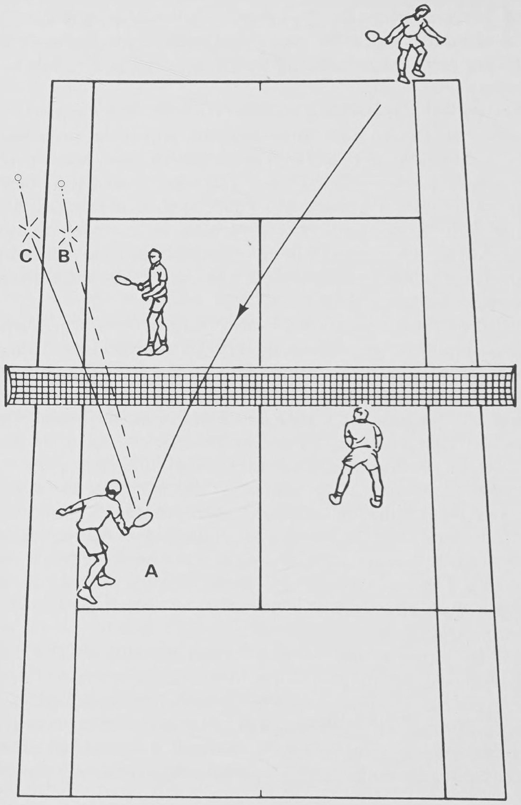
luôn luôn nên làm vậy. Khi thực hiện cú vô-lê thuận tay đầu tiên từ cú trả bóng ô bên trái, trừ khi bạn chắc chắn tuyệt đối, việc cố đánh xuyên qua quả bóng để đánh bại người đứng lưới ra đường biên là một cú đánh sai lầm (sucker play). Xem Hình 28.
invariably you should. In playing a forehand first voliey from a left-court return, unless you are on a stone cold certainty, it is sucker play to hit across the ball in an attempt to sideline the net man. See Illus. 28.
Khi cú trả bóng khá tốt—dù là về tốc độ, độ rơi, góc độ, độ thấp hoặc bất kỳ hình thức khó chịu nào đối với bạn—bạn có thể chắc chắn rằng người đứng lưới cũng nhận thức được điều này. Anh ta giờ đây là một mối nguy hiểm cần tránh, vì vậy từ ô bên phải, đừng trông mong thực hiện cú vô-lê đầu tiên sang trái tay của người nhận. Nó có khả năng bị chặn. Hãy hài lòng với việc đánh quả bóng sâu và tiến lên chờ diễn biến tiếp theo. Giao bóng sang ô bên trái, cú vô-lê trái tay chéo sân thông thường của bạn tránh được người đứng lưới và đồng thời hướng về trái tay của người nhận.
When the return is fairly good—either from speed, dip, angle, lowness or any form of awkwardness for you—you can be sure the net man is also aware of this. He is now a hazard to be avoided, so from the right court don’t count on playing your first volley to the receiver’s backhand. It is likely to be inter- cepted. Be content to play it deep and to move in and await developments. Serving to the left court, your normal crosscourt backhand volley avoids the net man and at the same time goes to the receiver’s backhand.
Khi cú trả bóng thực sự tốt, người đứng lưới đối phương tăng tầm vóc từ một mối nguy tiềm tàng thành một mối đe dọa chắc chắn. Chiến thuật của bạn là tránh anh ta bằng mọi giá và đánh bóng trả lại cho người nhận rồi tiến lên. Bạn vẫn có lợi thế về vị trí, vì anh ta vẫn đối mặt với nhiệm vụ phải đánh bại rào chắn lưới của bạn bằng một cú đánh cuối sân.
When a return is really good, the opposing net man increases in stature from a probable hazard to a certain threat. Your tactics are to avoid him at all costs and play the ball back to the receiver and move in. You still have the advantage of position, because he still faces the task of beating your net barrier with a groundstroke.
(trang đối diện)
(opposite page)
phần nhỏ đó là quá nhiều, và cú AB dự định của bạn bay ra đường biên thành AC.
shown) and come in. His return is a little higher and slower than usual. You could easily volley it to his backhand, once more, and move in. Instead you have the shot AB past the net man fixed in your mind, a winner in one. You edge across to make a forehand volley of it. The net man edges to his right. You alter your aim a fraction to pass him—but in hitting across the line of flight of the ball that fraction is too much, and your would-be AB goes over the sideline as AC.
Điều này đã xảy ra từ thời xa xưa, nhưng rõ ràng mỗi chúng ta luôn phải tự mình nhận ra.
It’s been done through the ages, but apparently each of us always has to find out for himself. It’s a perfect way of reaching deuce after leading 40-30.
Đó là một cách hoàn hảo để đưa tỉ số về hòa sau khi dẫn 40-30.
Chống lại Người nhận Lối chơi Lên lướiAgainst Net Game Receivers
Chống lại Người nhận Lối chơi Lên lưới Một giai đoạn mới đạt tới khi người nhận cố gắng theo cú trả bóng của mình lên lưới và vô-lê cú vô-lê đầu tiên của bạn. Đây là cách nhận bóng Lối chơi Lên lưới.
A new stage is reached when the receiver tries to follow his return to the net and volley your first volley. This is Net Game receiving.
Để giữ thế thượng phong, bạn phải ngăn cản anh ta làm điều này nếu có thể, nếu không đối thủ sẽ tạo ra một rào chắn lưới của chính họ. Trong trường hợp này, lợi thế giao bóng của bạn sẽ mất đi và vấn đề sẽ là bên nào vô-lê tốt hơn. Bạn phải cố gắng giữ lợi thế ban đầu bằng cách giao bóng đủ tốt để khiến người nhận mất thăng bằng khi trả bóng (sao cho anh ta không thể đánh bóng và tiến lên trong cùng một chuyển động) và bằng cách tiến lên nhanh đến mức nếu có bất kỳ cuộc trao đổi vô-lê nào xảy ra, đó sẽ là những cú vô-lê của bạn được đánh hướng xuống chứ không phải của người nhận.
To keep the upper hand you have to prevent him from doing this if you can, or your opponents will have formed a net barrier of their own. In this case, your serving advantage will go and it will be a matter of which side volleys better. You have to try to retain your initial advantage by serving well enough to keep the receiver off balance as he plays his return (so that he cannot play it and move in, all in one motion) and by moving in so fast that if any volleying exchange does occur it will be your volleys that are hit downwards and not the receivers’.
Tất cả những điều này tăng gấp đôi, như bạn mong đợi, khi những người nhận Lối chơi Lên lưới thực hiện những cú trả bóng bay lên.
All this goes double, as you’d expect, when Net Game receivers play rising-ball returns.
Trong bất kỳ cuộc trao đổi vô-lê nhanh nào, cả bạn và đối tác của bạn đều nên muốn vô-lê những quả bóng đi dọc trung tâm thay vì đứng tách ra. Thà có hai cây vợt cùng cố gắng đánh một quả bóng còn hơn là không có ai. * Tuy nhiên, bạn có thể làm tốt hơn thế. Một quy tắc hoạt động hiệu quả, vì nó mang tính bản năng, là người chơi đánh quả bóng cuối cùng sẽ đánh quả tiếp theo, giống như thể anh ta đang chơi đánh đơn. Luôn bảo vệ trung tâm của mình thật tốt và chủ yếu tấn công phần trung tâm của đối thủ. Những cú vô-lê góc không phải là cơ sở của tình huống hai rào chắn này và cố gắng thực hiện chúng thường không gì hơn là một cú đánh sai lầm.
In any rapid-fire volleying exchange, both you and your part- ner should be wanting to volley balls going down the center instead of standing off. It is better for two rackets to try to hit a ball than none.* However, you can do better than that. A rule that works well, because it is instinctive, is that the player who hits the last ball hits the next one, as though he were playing singles. Always guard your own center well and mostly attack your opponents’ center. Angled volleys are not the basis of this two-barrier situation and attempting them is often no more than sucker play.
Chống lại những Cú trả giao bóng Kỳ dị Không hiếm khi gặp một cầu thủ với cú giao bóng, hoặc cú thuận tay, hoặc sự linh hoạt ở lưới, hoặc bất cứ điều gì xuất sắc. Rất hiếm khi bạn tìm thấy ai đó với gần như toàn bộ sức mạnh nằm ở cú trả giao bóng—và không phải ở một loạt các cú trả bóng, mà ở một cú đánh duy nhất.
Against Freak Returns of Service It’s not uncommon to meet a player with an outstanding serve, or forehand, or agility at the net, or whatever it is. Very occasionally you'll find someone with practically all his strength in his service return—and not in a variety of returns, but in one single shot.
* Hai cây vợt có thể va chạm, nhưng chỉ một cây đánh trúng bóng (vào sân). Đây không phải là Lỗi Đánh Đôi (Double Hit), vốn là một lỗi, nơi vợt của một cầu thủ đánh bóng hai lần.
s The two rackets may clash, but only one hits the ball (into play). This is not a Double Hit, which is a foul, where a player’s racket hits the ball twice.
Đây là một tình huống như vậy. Bạn đang dẫn 15-0 và giao bóng cho kẻ kỳ dị chưa được nhận diện này, người đang đứng lệch hẳn sang trái của anh ta. Rõ ràng anh ta có cú thuận tay tốt, vì vậy bạn nhắm vào trái tay của anh ta và tiến lên. Bạn nghe thấy tiếng chân di chuyển nhanh trên mặt sân và trong nháy mắt anh ta đã vòng qua cú giao bóng của bạn và đã thực hiện một cú thuận tay xoáy lên văng ra xa cơ thể anh ta, đi rộng hơn cú vô-lê trái tay dự định của bạn để ghi một điểm thắng tuyệt đối.
Here is such a situation. You stand 15-love and serve to this so-far-unrecognized freak, who is standing well over to his left. Obviously he’s got a good forehand, so you aim for his backhand side and come in. You hear a rapid swishing of feet on the court surface and in a flash he’s round your serve and has hit a forehand topspinner away from his body that goes wide of your intended backhand volley for a clean winner.
Bạn đạt được tỉ số 30-15 và định làm tốt hơn lần này. Bạn giao nhanh và rộng để anh ta không thể tránh được trái tay, nhưng đó là một lỗi.
You get 30-15 and are going to do better this time. You serve fast and wide so that he can’t avoid a backhand, but it’s a fault.
Anh ta lại di chuyển rộng hơn cho cú giao bóng hai. Bạn sẽ không bị hối thúc dẫn đến lỗi kép chỉ để tìm đường biên trái tay đó, bạn đã trải qua quá nhiều chuyện để làm điều đó, vì vậy bạn giao hướng về phía trái tay anh ta một cách an toàn trong sân, nhưng với một quỹ đạo cao để cho bạn đủ thời gian tiến sát vào và chặn góc rộng phía trái tay vô-lê của bạn.
He moves wider out again for the second serve. You’re not going to be hustled into a double fault looking for that backhand line, you've been around too long for that sort of thing, so you serve towards his backhand side safely in court, but with a high arc that will give you plenty of time to get right in and blank off the angle wide of your backhand volley.
Quỹ đạo cao nảy cao—và không cần phải nói, anh ta đã đón được bằng thuận tay, bởi vì cần một người thuận tay trái với một cú giao bóng cắt và đứng rộng ra ngoài mới tìm thấy trái tay của anh chàng này. Anh ta đập xoáy lên từ độ cao trên vai. Bạn cảm thấy rằng nếu quả bóng nảy cao hơn nữa, anh ta sẽ thực hiện một cú đánh giống như cú giao bóng xoáy ngược. Bạn đã phạm một sai lầm nghiêm trọng khi cho bóng nảy cao. Thời gian tăng thêm mà bạn có được khi tiến lên lưới không xứng đáng với điều đó. Bạn nửa-vô-lê hướng lên và đối tác của anh ta đập bóng không thể chơi được xuống trung tâm.
The high arc bounces high—and needless to say he’s got it on the forehand, because it would take a left-hander with a sliced serve and standing wide out to find this fellow’s backhand. He topspin-crashes it from above shoulder height. You feel that if the ball had bounced any higher he would have made it into a shot like a reverse topspin serve. You made a bad mistake in giving him a high bounce. The extra time you had in getting to the net wasn’t worth it. You half-volley uppishly and his partner bounces it unplayably down the center.
Bạn đạt tỉ số 40-30 và giao cắt để giữ cho bóng nảy thấp, và bạn tiến lên cho một cú vô-lê dễ chơi hơn. Nhưng anh chàng này có thể đánh một cú thuận tay xoáy lên từ bất cứ đâu và đưa bóng rơi ngắn, nên lần này anh ta buộc bạn phải chơi một cú vô-lê trái tay thấp trên mặt gỗ.
You reach 40-30 and slice your serve to keep its bounce low, and in you come for a more playable volley. But this chap can hit a topspin forehand from anywhere and land it short, so this time he forces you to play a low backhand volley on the wood.
Hòa (Deuce).
Deuce.
Bất kể ai là người có lợi thế (ad) sau điểm tiếp theo, con người này phải biết cách bị ngăn chặn, và đến giờ bạn đã nhận diện được anh ta. Anh ta là một chuyên gia một cú đánh, người có thể khiến những người chơi lưới phải nửa-vô-lê và đánh hỏng bất kể họ đi đâu. Quá rủi ro để thử Đội hình Song hành vì anh ta có thể có lẽ kéo quả bóng dọc theo đường thuận tay của bạn quá, và nó bị hở hơn. Dẹp bỏ lòng kiêu hãnh sang một bên, bạn đứng khoảng nửa đường ra ngoài, giao bóng cắt gần như dọc theo trung tâm—để bóng nảy thấp và không rủi ro bị hỏng, và cũng để thu hút anh ta về phía trung tâm—và bạn đứng lùi lại. Anh ta đập một cú xoáy lên ngắn khác vào vị trí mà cú nửa-vô-lê trái tay của bạn sẽ nằm đó ếu bạn tiến lên. Thay vào đó, bóng nảy lên, bạn bước vào và thực hiện một cú trái tay cắt uốn cong ra đường biên của anh ta và tiến lên. Mọi chuyện kết thúc. Bạn đã ở trên đó với một rào chắn lưới và anh ta đang ở sát hàng rào biên cố gắng đánh một cú trái tay mà anh ta không hề có. Hình 29 là một mô tả trực quan và ít kịch tính hơn về tất cả những điều này.
No matter who’s ad it is after the next point, this man has to be stopped, and by now you’ve recognized him. He’s a one-shot specialist who can make net players half-volley and mis-hit wherever they go. It’s too risky to try Tandem because he can probably pull the ball down your forehand line too, and it’s more exposed. Putting your pride firmly in your hip pocket you stand about halfway out, slice your first serve more or less down the center—for low bounce and no risk of missing it, and also to bring him towards the center—and you stay back. He hammers yet another short topspinner to where your backhand half-volley would have been if you’d gone up. Instead, it bounces up, you walk in and play a curving backhand slice to his sideline and move in. It’s all over. You’re up there with a net barrier and he’s on the side fence trying to play a back- hand he hasn’t got. Illus. 29: is a graphic and less dramatic description of all this.
Đó là một viên thuốc đắng đối với bạn, với tư cách là một người chơi Lối chơi Lên lưới thành thạo, việc phải đứng lùi lại khi bạn biết các nhà vô địch luôn tiến lên trong mọi cú giao bóng, bất kể thế nào. Tuy nhiên, họ không gặp những kẻ chuyên một chiêu.
It’s been a bitter pill for you, as an accomplished Net Game player, to have hung back when you know champions go up on every serve, invariably. However, they don’t encounter one-shot freaks. They can’t. If one-shot freaks were good enough to become champions, they’d become part of the game, and neither they nor their pet shots would be freakish any more, would they?
Họ không thể. Nếu những kẻ chuyên một chiêu đủ giỏi để trở thành nhà vô địch, họ sẽ trở thành một phần của trò chơi, và cả họ lẫn những cú đánh yêu thích của họ sẽ không còn là kỳ quặc nữa, đúng không?
(opposite page)
(trang đối diện)
after you have served. An example is against a one-shot player who specializes in a severe topspin forehand service return that lands short. Against serves like AB he slithers round his backhand and hits BC, landing the ball in an awkward spot wherever you go. Your answer is to serve a first serve AD, bouncing low and drawing him towards the center, and stay back. He crashes yet another of his topspinners, DC, for where your shoelaces or the wood of your backhand volley would have been if you had come in as expected. You step in to this short and high-bouncing ball and play a downward backhand slice CE, and move in. You have your net barrier formed and he has an unwelcome backhand to play. It should be all over but the shouting.
sau khi giao bóng. Một ví dụ là chống lại một cầu thủ chuyên một chiêu, người chuyên về cú trả bóng thuận tay xoáy lên nghiêm trọng và rơi ngắn. Chống lại cú giao AB, anh ta lách quanh trái tay của mình và đánh BC, đưa bóng vào một vị trí khó khăn bất kể bạn đi đâu. Câu trả lời của bạn là giao cú một AD, nảy thấp và thu hút anh ta về phía trung tâm, và đứng lùi lại. Anh ta đập một cú xoáy lên khác, DC, vào nơi mà dây giày của bạn hoặc mặt dưới của cú vô-lê trái tay sẽ nằm nếu bạn tiến lên như mong đợi. Bạn bước vào quả bóng ngắn và nảy cao này và thực hiện một cú trái tay cắt hướng xuống CE, và tiến lên. Bạn đã tạo được rào chắn lưới và anh ta phải đối mặt với một cú trái tay không mong muốn.
Sẽ kết thúc ngay thôi trừ khi có tiếng hò reo.
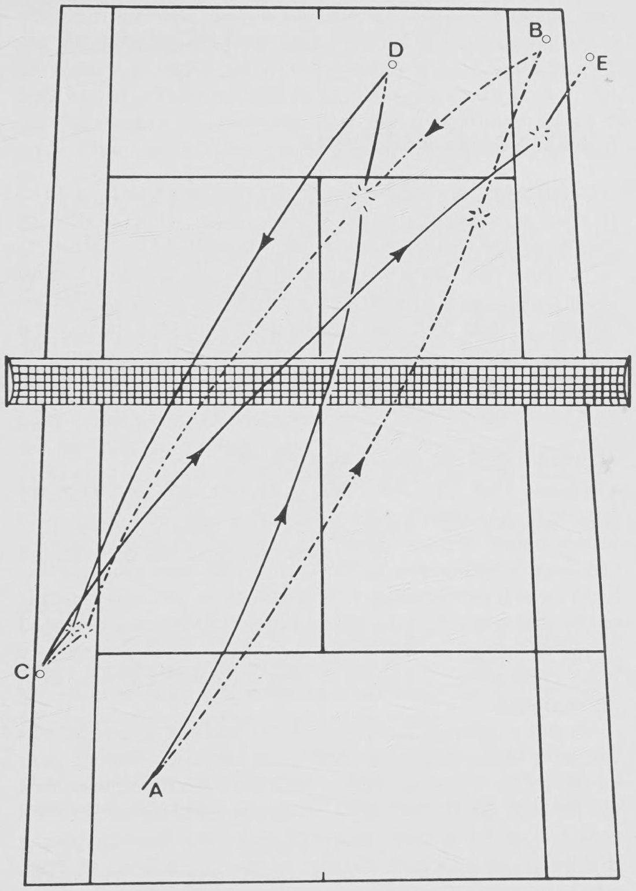
5. Lối chơi lên lưới — Nhận giao bóng
GIỐNG NHƯ KHI GIAO BÓNG, lối chơi Lên lưới của một cặp nhận bóng dựa trên việc tạo thành một rào chắn lưới không thể xuyên phá. Một lần nữa, tất cả các tình huống được thảo luận đều giả định rằng các cú trả giao bóng của bạn cần sự hỗ trợ về chiến thuật của đội hình Lối chơi Lên lưới để giành chiến thắng chắc chắn trước các cặp đấu kém hơn hoặc để giữ thế cân bằng khi đối đầu với đối thủ ngang tầm. Chương trước đã cho thấy rằng cặp giao bóng có thể triển khai thế trận mạnh mẽ. Một điểm tương đồng khác với giao bóng là bạn bắt đầu với một người đứng ở lưới, người còn lại định gia nhập cùng anh ta tại cơ hội đầu tiên.
AS WITH SERVING, your Net Game as a receiving pair is based on forming an impenetrable net barrier. Again, all situations dis- cussed assume that your service returns need the tactical back- ing of your Net Game formation to win with certainty against lesser pairs or to hold your own when evenly matched. The last chapter showed that the serving pair can play their cards strongly. Another similarity with serving is that you begin with one player stationed at the net, the other intending to join him at the first opportunity.
CHỐNG LẠI CÁC CẶP MỘT TRÊN MỘT DƯỚIAGAINST ONE UP ONE BACK PAIRS
CHỐNG LẠI CÁC CẶP MỘT TRÊN MỘT DƯỚI Đối với các cặp Một trên Một dưới, bạn tìm kiếm cơ hội tiếp cận lưới ngay từ cú đánh đầu tiên bạn thực hiện, chính là cú trả giao bóng. Nếu cú giao bóng của đối thủ cho phép bạn thực hiện một cú trả bóng thoải mái, bạn sẽ theo cú đánh này tiến lên và tạo rào chắn của mình.
Against One Up One Back pairs you look for your net approach opportunity from the first stroke you play, your service return. If your opponent’s serve allows you to make a comfortable return you follow this in and form your barrier.
Nếu cú giao bóng đủ tốt để khiến bạn mất thăng bằng, thông thường bạn sẽ không thể lấy lại thăng bằng kịp thời để tiến đến một vị trí lưới tốt, và do đó bạn nên đứng lùi lại và chờ đợi một cơ hội tốt hơn. Cơ hội đó sẽ không lâu trong khi tới, có lẽ là từ cú đánh tiếp theo.
If the serve is good enough to unbalance you, you will normally not be able to recover your balance in time to advance to a good net position, and therefore you should stay back and await a better opportunity. It will not be long in coming, probably from the next shot.
Trong vấn đề kết hợp giữa thăng bằng và tiếp cận lưới này, bạn sẽ có nhiều cơ hội thực hiện một cú tiếp cận từ cú trả giao bóng nếu bạn đứng sau cú giao bóng thay vì đón bóng trên đà bay lên nhưng lại bị mất thăng bằng. Từ một sự kết hợp giữa bóng hơi rơi cộng với sự thăng bằng cộng với một khoảng cách tiếp cận lưới hơi dài hơn, bạn mất ít thời gian hơn để chiếm vị trí lưới tốt hơn là từ một sự kết hợp của bóng bay lên, mất thăng bằng, lấy lại thăng bằng, và khoảng cách tiếp cận ngắn hơn. Chính việc lấy lại thăng bằng là điều tốn thời gian. Bạn ở trạng thái thăng bằng bất cứ khi nào bạn đứng sau quả bóng và có thể đánh bóng rồi tiến lên trong cùng một chuyển động. Đó là một khía cạnh của điều mà các huấn luyện viên muốn nói khi họ bảo rằng sau khi đạt đến một trình độ chơi nhất định, bạn nên nghĩ về đôi chân của mình hơn là về cây vợt.
On this combined matter of balance and net approach, you will have more chance of making an approach shot of your service return if you get behind the serve than if you take it on the rise but are in any way unbalanced in doing so. From a combination of slightly dropping ball plus balance plus a slightly longer approach distance to the net, it takes you less time to take up a good net position than it does from a combina-
垂- dù sao đi nữa, người giao bóng vẫn đứng lùi lại. Tại sao phải mạo hiểm với những cú đánh bóng bay lên để rồi bị bắt bài do mất thăng bằng hoặc đánh hỏng chỉ để giành lấy lợi thế là một hoặc hai giây thời gian? Đó không phải là cách để giành chiến thắng chắc chắn trước một cặp đấu kém hơn.
Điều thiết yếu là phải tránh người đứng lưới—điều cơ bản, nhưng thiết yếu.
Bạn không thể tạo rào chắn lưới nếu anh ta chặn được bóng. Thay vào đó, bạn sẽ quay lại vạch xuất phát, hoặc đúng hơn là quay lại Hình 2 ở trang 10. Hoặc hãy nhìn theo cách này: mục đích tức thời của Lối chơi Lên lưới là vô-lê trước khi đối thủ làm vậy; vì người giao bóng không tiến lên, chỉ người đứng lưới mới có thể ngăn cản điều này—vì vậy hãy tránh anh ta.* Cho đến khi anh ta cho thấy mình chỉ là một người đứng lưới thụ động, an toàn hơn là giả định rằng anh ta có thể chặn bóng.
Với tâm thế này, các chiến thuật chống lại các cặp giao bóng Một trên Một dưới được gợi ý dưới đây:
Ô bên Phải - Đó là một chiến thuật tốt hơn khi tạo rào chắn lưới chống lại cú thuận tay của người giao bóng hơn là cố gắng tấn công trái tay của anh ta và chấp nhận bất kỳ rủi ro nào về việc cú trả bóng bị người đứng lưới chặn.
Đương nhiên, cú trả bóng càng sâu thì càng tốt.
- Nếu người giao bóng cho thấy anh ta có cú drive thuận tay đặc biệt mạnh thường có thể đánh bại rào chắn lưới của bạn, bạn phải tìm trái tay của anh ta. Ưu tiên hàng đầu của bạn nên là một cú lốp bóng qua đầu người đứng lưới người đứng lưới. Với tư cách là một cặp Một trên Một dưới, anh ta sẽ quan tâm đến việc chặn bóng hơn là bao quát các cú lốp. Theo quan điểm của anh ta, đối tác của anh ta sẽ lo liệu các cú lốp.
tion of rising ball, loss of balance, recovery of balance, and shorter approach distance. It is recovery of balance that takes the time. You are in balance whenever you are behind the ball and can play it and move in in one motion. That is one aspect of what coaches mean when they say that after reaching a certain standard of play you should think more of your feet than of your racket.
- Nếu người giao bóng thuận tay trái, bạn tránh người đứng lưới và đồng thời đánh vào trái tay của người giao bóng. Bất kể người giao bóng thuận tay phải hay trái, khi bạn drive bóng về phía anh ta, đối tác đứng lưới của bạn phải chuẩn bị cho một cú lốp hụt qua phía trái tay của mình.
Anyway, the server is staying back. Why take the rising-ball risks of being caught off balance and of mis-hitting for the advantage of gaining an extra second’s time? That’s not the way to win with certainty against a lesser pair.
Xem Hình 30.
It is essential to avoid the net man—elementary, but essential.
Ô bên Trái - Ở đây thường đơn giản hơn. Người đứng lưới ít có xu hướng chặn bóng ở phía trái tay của anh ta và những cú trả bóng thông thường của bạn né tránh anh ta và đồng thời hướng về trái tay của người giao bóng.
You can’t form a net barrier if he intercepts. Instead you’re right back to square one, or rather to Illus. 2 on page 10. Or look at it this way: the immediate purpose of your Net Game is to volley before opponents do; since the server does not come in, only the net man can prevent this—so avoid him.* Until such time as he may show that he is merely a passive net man, it is safer to assume that he may intercept.
Cú trái tay của anh ta sẽ cần phải hơn là một cú đánh ổn định tốt trước khi nó có thể gây khó khăn cho rào chắn lưới của bạn.
With this in mind your tactics against One Up One Back serving pairs are suggested below:
Ô bên PhảiRight Court
- Nếu người giao bóng thuận tay trái và có cú thuận tay mạnh, một lần nữa, tốt hơn là lốp bóng thay vì mạo hiểm để người đứng lưới chặn cú trả bóng trung tâm định hướng vào trái tay của người giao bóng. Đừng lốp dọc theo đường biên, tạo cơ hội cho người đứng lưới đập bóng. Lốp dọc theo trung tâm, giữa trái tay của cả hai cầu thủ.
m It is a better tactic to form your net barrier against the server’s forehand than to try to attack his backhand and run any risk of your return being intercepted by the net man.
Xem Hình 31.
Naturally, the deeper your return the better.
Tóm tắt—Chống lại Một trên Một dưới - Hãy coi việc nhận bóng không phải là phòng ngự chống lại cú giao bóng, mà là phản công. Bạn sẽ là cặp đầu tiên tạo ra rào chắn lưới đầu tiên. Bạn sẽ là người đầu tiên vô-lê.
m If the server shows he has an exceptional forehand drive often capable of defeating your net barrier, you must find his backhand. Your first preference should be a lob over the net *If you want to refresh your memory about avoiding energetic net men, the discussion is on pages 71-77, possibly aided by Illus. 18.
- Phải tránh người đứng lưới đối phương. Không làm vậy là một tội ác trong tennis Lối chơi Lên lưới, giống như giao lỗi kép cho đối thủ có cú trả giao bóng yếu hơn. Khi cố gắng tấn công dọc theo trung tâm, hãy đảm bảo người đứng lưới không thể chặn được.
- Những cú drive hoặc cắt chéo sân và các cú lốp là những cú trả bóng cơ bản của bạn.
Những cú drive và cắt này nên sâu nhất có thể, miễn là tránh được người đứng lưới. Cú lốp nên được xác định rõ ràng trong tâm trí, thay vì chỉ là một phương án dự phòng ngần ngại.
- Hãy đứng sau quả bóng với mục đích và bước chân nhanh nhẹn, để //bạn có thể thực hiện các cú trả giao bóng như những cú tiếp cận, bất cứ khi nào có thể.
- Độ sâu cho bạn nhiều thời gian hơn để chiếm vị trí lưới tốt, và cũng làm giảm hiệu quả cú đáp trả của người giao bóng.
Chơi theo cách này sẽ cho phép bạn chắc chắn đánh bại các cặp kém hơn. Trong hầu hết các trường hợp, một cặp chơi Một trên Một dưới chống lại những người nhận Lối chơi Lên lưới là một cặp kém hơn. Có thể họ bao gồm hai cầu thủ, mỗi người đều có thể đánh bại bạn và đối tác của bạn trong đánh đơn nhờ sự ổn định cực độ ở cuối sân với các cú slice thuận tay và trái tay. Trong đánh đôi, những cú slice này sẽ không xuyên thủng được một rào chắn lưới, và nếu bạn và đối tác của mình cũng có thể bao quát các cú lốp bạn sẽ có khả năng thắng. Mọi người sẽ gọi đó là một bất ngờ, nhưng thực ra không phải vậy.
CHỐNG LẠI NHỮNG NGƯỜI GIAO BÓNG LỐI CHƠI LÊN LƯỚI Hãy tự tin lên. Không phải tất cả các cặp giao bóng Lối chơi Lên lưới đều biết các chiến thuật chi tiết trong chương trước. Nếu họ không biết, chắc chắn sẽ có những lỗ hổng trong lối chơi của họ. Hãy bắt đầu bằng cách đối đầu với một cặp mà ý tưởng duy nhất về đánh đôi Lối chơi Lên lưới là người giao bóng chạy lên và vô-lê.
Trước hết, người đứng lưới gần như chắc chắn không nhận thức được vai trò then chốt của mình trong việc bảo vệ chống lại các cú lốp. Hầu hết người nhận đều drive bóng trở lại, anh ta nhận thấy điều đó, và cho đến nay anh ta không gặp nhiều khó khăn
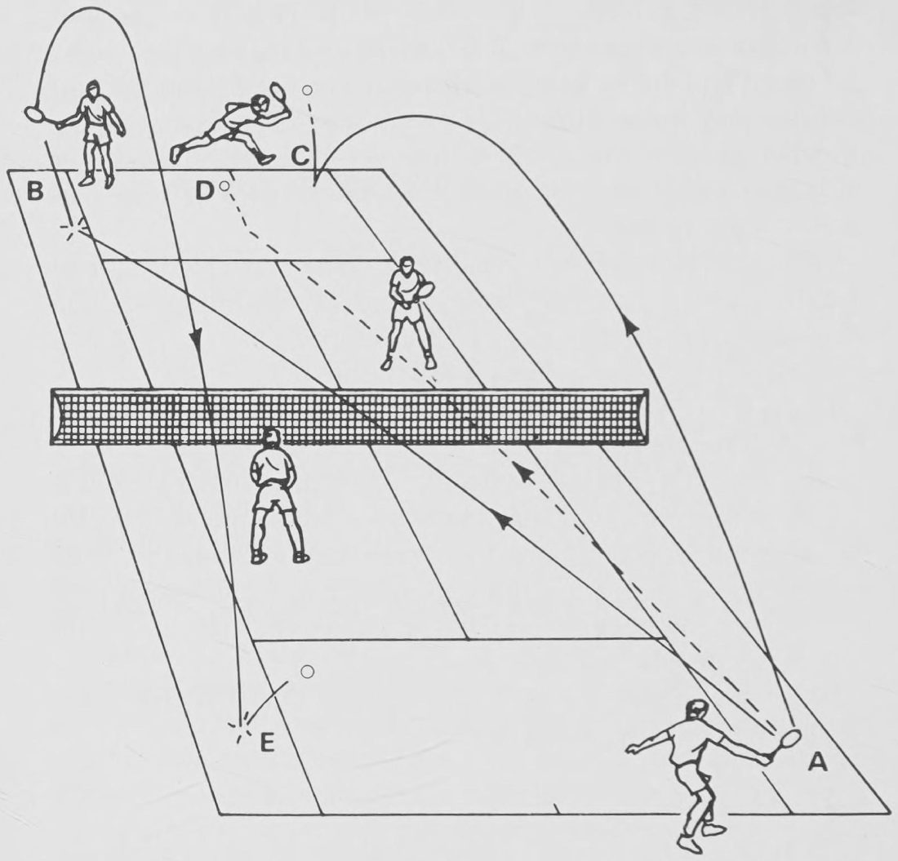
người giao bóng giao bóng đặc biệt tốt, thực chất chính người đứng lưới mới là người đe dọa ngăn cản bạn tạo rào chắn lưới. Việc không tránh anh ta bằng cú trả giao bóng là một tội ác trong Lối chơi Lên lưới. Vì vậy, hãy tạo rào chắn lưới bằng cách trả bóng hướng về đường biên của người giao bóng, AB, và tiến lên, hoặc bằng cách lốp bóng cao qua đầu người đứng lưới, AC, và tiến lên. Đừng mạo hiểm đánh một cú trung tâm, AD, để tấn công trái tay của người giao bóng cho đến khi bạn chắc chắn người đứng lưới là kiểu thụ động thay vì chủ động tham gia.
the server serves particularly well it is really the net man who threatens to prevent your forming a net barrier. Not to avoid him with your service return is a Net Game crime. Therefore, form your net barrier by returning towards the server's sideline, AB, and moving in, or by lobbing well over the net man’s head, AC, and moving in. Do not risk a center shot, AD, to attack the server's backhand until you are sure the net man is a passive type rather than a participating one.
Bất cứ khi nào bạn đánh AB, đối tác đứng lưới của bạn phải cảnh giác với một cú lốp như BE.
Whenever you play AB your net partner must guard against a toss like BE.
người đứng lưới. Với tư cách là một cặp Một trên Một dưới, anh ta sẽ quan tâm đến việc chặn bóng hơn là bao quát các cú lốp. Theo quan điểm của anh ta, đối tác của anh ta sẽ lo liệu các cú lốp.
man’s head. As part of a One Up One Back pair he will be more concerned with intercepting than with covering lobs. As he sees it, his partner looks after lobs.
- Nếu người giao bóng thuận tay trái, bạn tránh người đứng lưới và đồng thời đánh vào trái tay của người giao bóng. Bất kể người giao bóng thuận tay phải hay trái, khi bạn drive bóng về phía anh ta, đối tác đứng lưới của bạn phải chuẩn bị cho một cú lốp hụt qua phía trái tay của mình.
m If the server is left-handed, you avoid the net man and play to the server’s backhand at the same time. Whether the server is right-handed or left, when you drive to him your net partner must be prepared for an attempted lob over his back- hand side.
Xem Hình 30.
See Illus. 30.
Ô bên TráiLeft Court
Ô bên Trái - Ở đây thường đơn giản hơn. Người đứng lưới ít có xu hướng chặn bóng ở phía trái tay của anh ta và những cú trả bóng thông thường của bạn né tránh anh ta và đồng thời hướng về trái tay của người giao bóng.
m It is usually simpler here. The net man has less inclination to intercept on his backhand side and your normal returns avoid him and go to the server’s backhand at the same time.
Cú trái tay của anh ta sẽ cần phải hơn là một cú đánh ổn định tốt trước khi nó có thể gây khó khăn cho rào chắn lưới của bạn.
His backhand will need to be more than merely a good steady shot before it will trouble your net barrier.
- Nếu người giao bóng thuận tay trái và có cú thuận tay mạnh, một lần nữa, tốt hơn là lốp bóng thay vì mạo hiểm để người đứng lưới chặn cú trả bóng trung tâm định hướng vào trái tay của người giao bóng. Đừng lốp dọc theo đường biên, tạo cơ hội cho người đứng lưới đập bóng. Lốp dọc theo trung tâm, giữa trái tay của cả hai cầu thủ.
m If the server is left-handed and has a strong forehand, again it is better to lob than risk the net man’s intercepting your intended center return to the server’s backhand. Do not lob down the sideline, giving the net man a chance to smash. Lob down the middle, between both players’ backhands.
Xem Hình 31.
See Illus. 31.
Tóm tắt—Chống lại Một trên Một dướiSummary—Against One Up One Back
Tóm tắt—Chống lại Một trên Một dưới - Hãy coi việc nhận bóng không phải là phòng ngự chống lại cú giao bóng, mà là phản công. Bạn sẽ là cặp đầu tiên tạo ra rào chắn lưới đầu tiên. Bạn sẽ là người đầu tiên vô-lê.
m Regard receiving not as defense against service, but as counter-attack. You are going to be the first pair to form the first net barrier. You are going to be the first to volley.
- Phải tránh người đứng lưới đối phương. Không làm vậy là một tội ác trong tennis Lối chơi Lên lưới, giống như giao lỗi kép cho đối thủ có cú trả giao bóng yếu hơn. Khi cố gắng tấn công dọc theo trung tâm, hãy đảm bảo người đứng lưới không thể chặn được.
m The opposing net man must be avoided. Not to do so is a Net Game tennis crime, like serving a double fault to the
- Những cú drive hoặc cắt chéo sân và các cú lốp là những cú trả bóng cơ bản của bạn.
Những cú drive và cắt này nên sâu nhất có thể, miễn là tránh được người đứng lưới. Cú lốp nên được xác định rõ ràng trong tâm trí, thay vì chỉ là một phương án dự phòng ngần ngại.
- Hãy đứng sau quả bóng với mục đích và bước chân nhanh nhẹn, để //bạn có thể thực hiện các cú trả giao bóng như những cú tiếp cận, bất cứ khi nào có thể.
- Độ sâu cho bạn nhiều thời gian hơn để chiếm vị trí lưới tốt, và cũng làm giảm hiệu quả cú đáp trả của người giao bóng.
Chơi theo cách này sẽ cho phép bạn chắc chắn đánh bại các cặp kém hơn. Trong hầu hết các trường hợp, một cặp chơi Một trên Một dưới chống lại những người nhận Lối chơi Lên lưới là một cặp kém hơn. Có thể họ bao gồm hai cầu thủ, mỗi người đều có thể đánh bại bạn và đối tác của bạn trong đánh đơn nhờ sự ổn định cực độ ở cuối sân với các cú slice thuận tay và trái tay. Trong đánh đôi, những cú slice này sẽ không xuyên thủng được một rào chắn lưới, và nếu bạn và đối tác của mình cũng có thể bao quát các cú lốp bạn sẽ có khả năng thắng. Mọi người sẽ gọi đó là một bất ngờ, nhưng thực ra không phải vậy.
CHỐNG LẠI NHỮNG NGƯỜI GIAO BÓNG LỐI CHƠI LÊN LƯỚI Hãy tự tin lên. Không phải tất cả các cặp giao bóng Lối chơi Lên lưới đều biết các chiến thuật chi tiết trong chương trước. Nếu họ không biết, chắc chắn sẽ có những lỗ hổng trong lối chơi của họ. Hãy bắt đầu bằng cách đối đầu với một cặp mà ý tưởng duy nhất về đánh đôi Lối chơi Lên lưới là người giao bóng chạy lên và vô-lê.
Trước hết, người đứng lưới gần như chắc chắn không nhận thức được vai trò then chốt của mình trong việc bảo vệ chống lại các cú lốp. Hầu hết người nhận đều drive bóng trở lại, anh ta nhận thấy điều đó, và cho đến nay anh ta không gặp nhiều khó khăn chống lại bất cứ ai cố gắng lốp một quả bóng lẻ tẻ qua đầu anh ta. Một vài quả đã vượt qua đầu anh ta, nhưng đối tác của anh ta đã băng qua và bao quát chúng—thậm chí đôi khi đánh thắng điểm.
opponent with the weaker return of service. In trying to attack down the center, make sure the net man cannot intercept.
Bạn có thể tự hỏi tại sao lại như vậy, nhưng lời giải thích rất đơn giản. Hầu hết mọi người đều drive bóng trở lại. Những người đứng lưới không gặp nhiều khó khăn với các cú lốp vì hầu hết các cú lốp đều yếu.
w Crosscourt drives or slices and lobs are your basic returns.
Một người nhận thử lốp một quả, thấy nó nảy lên một cách nhục nhã và tự nói với mình, “Không lốp nữa,” và quyết định đánh những cú drive mạnh hơn. Đó là bản tính con người. Bất kỳ ai cũng thích chơi mạnh mẽ, chấp nhận chiến đấu đến cùng nếu cần thiết. Còn những cú lốp mà đối tác của người đứng lưới băng qua và đập bóng, những cú đó sẽ đến từ ô bên trái. Chống lại một cú giao bóng mạnh vào trái tay, người nhận ô bên trái đôi khi bị buộc phải lốp vội vàng vượt qua phía trái tay người đứng lưới, nhưng lại dễ dàng bị xử lý bởi người giao bóng, người chỉ cần di chuyển một chút là có thể thực hiện cú đập thuận tay. Hãy đối chiếu cú lốp đó với cú lốp trong Hình 31, được cố tình đánh dọc theo trung tâm giữa hai trái tay. Tóm lại, người đứng lưới và đối tác của anh ta, nếu họ là hai người cùng một kiểu, vẫn chưa từng gặp phải những cú lốp có tính toán và mạnh mẽ, đặc biệt là từ ô bên phải và vượt xa phía trái tay của người đứng lưới.
These drives and slices should be as deep as possible, consistent with avoiding the net man. The lob should be clearly in your mind, rather than being a tentative standby.
And the net man shows you all this before the first ball is served by the position he takes up at the net. He stands too close, showing you that you can get over his head. He doesn’t crowd over into the corner between the net and singles sideline like a totally unaware One Up One Back net man and some of the modest female players. He stands well towards the center, either for aggressive interception or at least to protect as much of the court as possible for his incoming partner. For you, that makes it all the easier to lob over his backhand side.
= Get behind the ball with purpose and swift footwork, so that you can play service returns as approach shots, whenever possible.
Buổi khởi động đã kết thúc và bạn đã sẵn sàng nhận quả bóng đầu tiên của ván. Người giao bóng đang tung bóng, chuẩn bị cho một cú giao nhanh và tiến lên nhanh chóng. Người đứng lưới đang đứng trên những ngón chân, gấp nhẹ đầu gối. Họ đã sẵn sàng tấn công bạn. Một cú giao bóng khá nhanh ập đến, nhưng không quá sâu cũng không nằm dọc trung tâm; đó là loại bóng thông thường được giao ở đầu trận đấu. Người giao bóng tiến lên, và người đứng lưới đã sẵn sàng, và họ đều chuẩn bị vô-lê mạnh mẽ. Nhưng bạn thực hiện một cú lốp thuận tay mạnh mẽ qua trái tay của người đứng lưới. Xem Hình 32.
= Depth gives you more time to take up a good net position, and also reduces the effectiveness of the server’s reply.
Ngay lập tức, đội hình Lối chơi Lên lưới của họ bị phá vỡ. Người đứng lưới vừa có xu hướng bao quát trung tâm nhiều hơn một chút ngay trước khi bạn đánh bóng, và giờ anh ta bị mất thăng bằng và không thể hồi phục kịp thời để đuổi theo cú đánh đã vượt qua mình. Người giao bóng, đứng xa hơn, phải thực hiện điều đó. Anh ta cũng sẽ không chạm bóng khi nó còn trên không và sẽ phải lùi hẳn ra sau để cứu cú lốp nảy trên phía trái tay của mình. Bạn tiến lên và bạn cùng đối tác chiếm được rào chắn lưới mà đối thủ định tạo ra.
Playing in this way should enable you to be certain of defeat- ing lesser pairs. In most cases, a pair playing One Up One Back against Net Game receivers is a lesser pair. It may possibly consist of two players who can each defeat you and your partner in singles by extreme baseline steadiness with forehand and backhand slices. In doubles, these slices will not penetrate a net barrier, and if you and your partner can also cover your lobs you will be likely winners. People will call it an upset, but really it won’t be.
CHỐNG LẠI NHỮNG NGƯỜI GIAO BÓNG LỐI CHƠI LÊN LƯỚIAGAINST NET GAME SERVERS
Kéo dài pha đánh bền này thêm một cú nữa, người giao bóng đang cứu bóng chỉ có thể lốp bóng. Anh chàng không may này sẽ không tìm thấy trái tay của bất kỳ ai.
Take heart. Not all Net Game serving pairs know the tactics detailed in the preceding chapter. If they don’t, there are certain to be holes in their game. Let’s start by opposing a pair whose sole idea of Net Game doubles is that the server runs in and volleys.
Từ góc đó, nếu cú lốp của anh ta đi qua trái tay đối tác ô bên trái của bạn, nó cũng sẽ đi ra ngoài đường biên. Nếu nó hướng về phía trái tay của bạn, nó trở thành một cú đập thuận tay cho đối tác của bạn. Bạn có thể không thắng pha đánh bền bằng cú đập đầu tiên, nhưng tỉ số sẽ trở thành 0-15. Thật là một sự khác biệt lớn giữa cú lốp tấn công của bạn và cú lốp phòng ngự của người giao bóng. Đó là một sự khác biệt về chiến thuật. Vậy mà nhiều cầu thủ nghĩ rằng sự khác biệt lớn nhất giữa một cú lốp tấn công và phòng ngự là một cú thấp và cú kia cao.
In the first place, the net man is almost certainly unaware of his key role in protecting against lobs. Most receivers drive the ball back, he’s found, and so far he hasn’t had much trouble
Giả sử bây giờ những chiến binh hạnh phúc của chúng ta tự nhủ, “Thế là hết chuyện cú lốp chết tiệt đó, giờ hãy quay lại với trận đấu,” vì vậy người đứng lưới lại đứng sát lưới một lần nữa—và bạn lại làm điều tương tự.
Giả sử, thay vào đó, người đứng lưới nói với đối tác rằng anh ta sẽ bao quát cú lốp tiếp theo, nhưng anh ta lại đứng sát lưới một lần nữa—vì vậy bạn thực hiện cú lốp của mình một lần nữa. Lần này anh ta sẽ đuổi theo thay vì đối tác của anh ta, nhưng không có sự khác biệt hiệu quả nào.
Bao quát một cú lốp nghĩa là bao quát nó khi bóng còn trên không và giữ được rào chắn lưới của phe mình. Rất ít cầu thủ có thể đứng sát lưới và bao quát một cú lốp phía trái tay ngay khi bóng còn trên không.
Sau hai trải nghiệm, người đứng lưới sẽ phải quyết tâm ngăn chặn bạn lốp bóng qua đầu, hoặc chấp nhận thua cuộc. Anh ta sẽ đứng lùi xa hơn và anh ta sẽ không còn tập trung vào trung tâm nữa.
Người giao bóng đóng góp phần mình trong việc giữ vững thế trận bằng cách tránh những cú giao thuận tay hỗ trợ bạn lốp bóng sang trái tay đối tác của anh ta, và vì vậy lần này anh ta giao bóng dọc trung tâm.
Nhưng đến lúc này, anh ta đã bị ám ảnh bởi những cú lốp và vì vậy không còn tiến lên với sự hăng hái như trước. Hãy nhìn vị trí của họ bây giờ, trong Hình 33.
Thêm một chút về việc Lốp bóng Thỉnh thoảng bạn nghe nói về một cặp bị đánh bại bởi những cú lốp liên tục, hoặc cho thấy sự yếu kém trước các cú lốp, và có lẽ bạn hiểu điều đó là do cặp thua đã đánh hỏng tất cả các cú đập. Bạn có thể thấy bây giờ, từ ví dụ về cặp đôi mạnh mẽ nhưng chưa có kinh nghiệm ở trên, rằng việc lốp bóng tấn công theo chiến thuật và không phải là những cú đập hỏng có lẽ chính là mấu chốt.
Tuy nhiên, bạn vẫn có những nghi ngờ. Tất cả nghe có vẻ ổn, nhưng kinh nghiệm của chính bạn là các cú lốp là những cú đánh nguy hiểm vì nếu chúng sai, chúng sẽ bị đập tan tành, và bạn, chẳng hạn, không muốn liên quan gì đến lối chơi yếu ớt.
Được rồi, nhưng để ngăn bạn trở thành một cầu thủ chỉ lốp bóng phòng ngự và không có bất kỳ cú lốp chiến thuật hay tấn công nào như một vũ khí dự phòng, hãy chỉ thảo luận về cú lốp thuận tay như một cú trả giao bóng từ ô bên phải.
Đừng coi đó là một cú đánh tinh tế nữa (“Ai đó đã rất tinh tế với những cú lốp của mình,” bạn đã đọc), mà thay vào đó hãy coi nó là một cú đánh mạnh mẽ, vượt qua và vượt ra sau người đứng lưới, và là một trong những cú trả giao bóng tấn công của bạn.
Khi đó, bạn sẽ không lập tức từ bỏ nó sau một lần thất bại //giống như bạn sẽ không từ bỏ cú drive hoặc trả bóng cắt khi bạn đánh hỏng một quả. Chuyển từ so sánh cú đánh sang chiến thuật, bạn sẽ không từ bỏ vị trí lưới và ngừng hiện lên lưới chỉ vì bạn đánh hỏng một hoặc hai cú vô-lê, vì vậy bạn không nên từ bỏ cú đánh mạnh mẽ vượt qua và vượt ra sau người đứng lưới _nếu một hoặc hai quả bị hỏng.
Bạn vẫn nghi ngờ. Một cú lốp ngắn bị đập thành một cú thắng điểm vang dội trong một điểm quan trọng, trông thật khủng khiếp. Bạn thà “tự giải quyết rắc rối của mình”.
Chà, nhiều cầu thủ giỏi “tự giải quyết rắc rối của mình”.
Họ từ chối bị buộc phải đánh một cú lốp yếu cho đối phương đập bóng và thà mạo hiểm bằng cách đánh thật mạnh một quả bóng khó.
Họ không làm điều này một cách hoang dã với ít hy vọng thành công; họ đánh bóng bao quanh và uốn cong nó với một loại xoáy lên bao phủ để có kiểm soát tối đa có thể. Không có nhiều thời gian để nhắm mục tiêu ngoài hướng chung, nhưng bất kể cú đánh đó đi đâu, nó sẽ không bao giờ mềm yếu.
Điều tuyệt vời, nhưng điều đó không có nghĩa là những người có tư duy tấn công này không bao giờ chơi những cú lốp tấn công. Họ chọn những quả bóng dễ hơn để thực hiện.
Để không từ bỏ cú lốp thuận tay ô bên phải vì một thất bại ở một điểm quan trọng, hãy xem kịch bản từ thảm họa thành chiến thắng này: Ván quyết định, 4-tất cả, 30-tất cả.
Bạn thực hiện cú đánh vượt qua người đứng lưới, nhưng bạn không quan sát bóng kỹ, có lẽ vì anh ta bắt đầu di chuyển. Bạn không đánh trúng trung tâm mặt lưới, cú lốp bị ngắn, anh ta đập mạnh, đồng đội rên rỉ, đối tác mím môi. Đối tác đưa tỉ số (trang đối diện)
phía trái tay overhead của mình và người giao bóng vẫn chưa tiến đến vạch giao bóng.
Thay vì có một rào chắn lưới chống lại bạn, trung tâm đang mở toang như cửa chuồng gia súc. Trong tình huống này, thật đáng tiếc nếu bạn không phải là một trong những người thuận tay trái với một cú thuận tay xoáy lên mạnh mẽ, tung ra một cú đánh vào cú nửa-vô-lê hụt của người giao bóng đang do dự. Dù sao, hãy đánh trái tay của bạn vào khu vực này và tiến lên.
với bất kỳ ai cố gắng lốp một quả bóng lẻ tẻ qua đầu anh ta. Một vài cú đã vượt qua đầu anh ta, nhưng đối tác của anh ta đã băng qua và bao quát chúng—thậm chí đôi khi ghi điểm thắng.
against anyone who’s tried to lob an odd ball over him. A few have got over his head, but his partner crossed over and covered them—hit winners sometimes, in fact.
Bạn có thể thắc mắc tại sao lại như vậy, nhưng những lời giải thích là đơn giản. Hầu hết mọi người đều drive bóng trả lại. Những người đứng lưới không -gặp nhiều rắc rối với các cú lốp vì hầu hết các cú lốp đều yếu.
You may wonder how this can be, but explanations are simple. Most people do drive the ball back. Net men don’t experience much trouble with lobs because most lobs are feeble.
Một người nhận thử một cú, thấy nó nảy lên một cách nhục nhã và tự nói với mình, “Không lốp nữa,” và quyết định đánh những cú drive mạnh hơn.
A receiver tries one, sees it get mortifyingly bounced and says to himself, ““No more of that,” and determines to hit his drives harder instead. It’s human nature. Anyone would sooner play strongly, going down fighting if necessary. As for the lobs that our net man’s partner crossed over to and. smashed, these would have come from the left court. Against a good serve to his back- hand, a left-court receiver is sometimes forced into a hasty lob that clears the net man’s backhand side, but is easily playable by the server, who needs only to move over a little to be able to play a forehand smash. Contrast such a lob with that shown in Illus. 31, deliberately played down the center between two backhands. In short, our net man and his partner, if they are two of a kind, have not yet encountered calculated and forceful lobbing, particularly from the right court and well over the net man’s backhand side.
Đó là bản chất con người. Bất kỳ ai cũng thích chơi mạnh mẽ, chấp nhận chiến đấu nếu cần thiết. Còn về những cú lốp mà đối tác của người đứng lưới đã băng qua và đập, những cú đó đến từ ô bên trái. Chống lại một cú giao bóng tốt vào trái tay, người nhận ở ô bên trái đôi khi bị buộc phải lốp vội vã qua phía trái tay của người đứng lưới, nhưng cú lốp đó dễ dàng bị xử lý bởi người giao bóng, người chỉ cần di chuyển một chút để có thể thực hiện một cú đập thuận tay. Hãy đối chiếu cú lốp đó với cú lốp hiển thị trong Hình 31, được chủ định đánh sâu vào trung tâm giữa hai trái tay. Tóm lại, người đứng lưới và đối tác của anh ta, nếu họ cùng một kiểu, vẫn chưa từng gặp những cú lốp có tính toán và mạnh mẽ, đặc biệt là từ ô bên phải và vượt cao qua phía trái tay của người đứng lưới.
And the net man shows you all this before the first ball is served by the position he takes up at the net. He stands too close, showing you that you can get over his head. He doesn’t crowd over into the corner between the net and singles sideline like a totally unaware One Up One Back net man and some of the modest female players. He stands well towards the center, either for aggressive interception or at least to protect as much of the court as possible for his incoming partner. For you, that makes it all the easier to lob over his backhand side.
Và người đứng lưới cho bạn thấy tất cả điều này trước khi quả bóng đầu tiên được giao bởi vị trí anh ta chiếm ở lưới. Anh ta đứng quá gần, cho bạn thấy rằng bạn có thể lốp bóng qua đầu anh ta. Anh ta không lấn sâu vào góc giữa lưới và đường biên đơn như một người đứng lưới Một trên Một dưới hoàn toàn không biết gì và một số cầu thủ nữ khiêm tốn. Anh ta đứng thiên về trung tâm, hoặc để chặn bóng quyết liệt hoặc ít nhất là để bảo vệ nhiều nhất có thể cho đối tác đang tiến vào của mình. Đối với bạn, điều đó khiến việc lốp bóng qua trái tay anh ta trở nên dễ dàng hơn.
The warm-up is over and you’re ready to receive the first ball of the set. The server is bouncing the ball, settling himself for a fast serve and swift advance. The net man is on the balls of his
Buổi khởi động đã kết thúc và bạn đã sẵn sàng nhận quả bóng đầu tiên của ván. Người giao bóng đang tâng bóng, chuẩn bị cho một cú giao nhanh và tiến lên nhanh chóng. Người đứng lưới đang đứng trên mũi chân, hơi khuỵu gối. Họ đã sẵn sàng tấn công bạn. Một cú giao bóng khá nhanh đi tới, nhưng không quá sâu cũng không nằm dọc theo trung tâm; đó là loại bóng thường thấy ở đầu trận đấu. Người giao bóng tiến lên, và người đứng lưới đã sẵn sàng, và họ đều sẵn sàng vô-lê mạnh mẽ. Nhưng bạn thực hiện một cú lốp thuận tay mạnh mẽ qua trái tay người đứng lưới. Xem Hình 32.
Ngay lập tức đội hình Lối chơi Lên lưới của họ bị tan rã. Người đứng lưới vừa mới có xu hướng bao quát trung tâm một chút trước khi bạn đánh bóng, và giờ anh ta mất thăng bằng và không thể hồi phục kịp thời để đuổi theo một cú đánh đã vượt qua mình. Người giao bóng, ở vị trí lùi hơn, phải là người xử lý. Anh ta cũng sẽ không thể chạm bóng ngay trên không và sẽ phải lùi hẳn ra sau và cứu một cú lốp nảy ở phía trái tay của mình. Bạn tiến lên và bạn cùng đối tác của mình chiếm được rào chắn lưới mà đối thủ định thiết lập.
Kéo dài pha bóng này thêm một cú nữa, người giao bóng đang cứu bóng chỉ có thể lốp bóng trở lại. Anh chàng tội nghiệp, anh ta sẽ không tìm thấy trái tay của bất kỳ ai.
Từ góc đó nếu cú lốp của anh ta đi qua trái tay của đối tác ô bên trái của bạn, nó cũng sẽ bay ra ngoài đường biên. Nếu nó hướng về phía trái tay của bạn, nó trở thành một cú đập thuận tay cho đối tác của bạn. Bạn có thể không thắng pha bóng bằng cú đập đầu tiên, nhưng tỉ số sẽ trở thành 0-15. Thật là một sự khác biệt lớn giữa cú lốp tấn công của bạn và cú lốp phòng ngự của người giao bóng. Đó là một sự khác biệt về chiến thuật. Tuy nhiên, nhiều cầu thủ nghĩ rằng sự khác biệt lớn nhất giữa cú lốp tấn công và phòng ngự là một cú thấp và một cú cao.
Giả sử bây giờ những chiến binh hạnh phúc của chúng ta tự nhủ, “Thế là hết cái trò lốp bóng chết tiệt đó và giờ hãy quay lại với trận đấu,” vì vậy người đứng lưới lại đứng sát lưới một lần nữa—và bạn làm điều tương tự.
Giả sử, thay vào đó, người đứng lưới bảo đối tác rằng anh ta sẽ bao quát cú lốp tiếp theo, nhưng anh ta vẫn đứng sát lưới—vì vậy bạn thực hiện cú lốp một lần nữa. Lần này anh ta sẽ đuổi theo thay vì đối tác của anh ta, nhưng không có sự khác biệt hiệu quả nào.
Bao quát một cú lốp trên không và giữ lại rào chắn lưới của phía mình. Ít cầu thủ có thể đứng sát lưới và bao quát một cú lốp phía trái tay ngay trên không. Sau hai trải nghiệm, người đứng lưới sẽ phải quyết tâm ngăn bạn lốp bóng qua đầu anh ta, hoặc là thua cuộc. Anh ta sẽ đứng lùi lại và không còn tập trung vào trung tâm nữa.
Người giao bóng đóng góp vào việc giữ thành trì bằng cách tránh những cú giao thuận tay hỗ trợ bạn trong việc lốp bóng về phía trái tay đối tác của anh ta, và vì vậy lần này anh ta giao bóng dọc trung tâm.
Nhưng đến lúc này, anh ta đã bị ám ảnh bởi những cú lốp và vì vậy không còn tiến lên với sự hăng hái như trước. Hãy nhìn vị trí của họ bây giờ, trong Hình 33.
Một chút nữa về việc Lốp bóng Thỉnh thoảng bạn nghe nói về một cặp bị phá vỡ bởi việc bị lốp bóng liên tục, hoặc cho thấy sự dễ bị tổn thương trước các cú lốp, và có lẽ bạn cho rằng điều đó có nghĩa là cặp thua cuộc đã hỏng hết các cú đập. Bạn có thể thấy bây giờ, từ ví dụ về cặp đôi hăng hái nhưng chưa từng trải trên, rằng chính việc lốp bóng tấn công chiến thuật và không phải là những cú đập bị hỏng đã giải quyết vấn đề.
Tuy nhiên, bạn vẫn có những nghi ngờ. Nghe thì có vẻ ổn, nhưng kinh nghiệm của chính bạn là những cú lốp là những cú đánh nguy hiểm vì nếu chúng hỏng, chúng sẽ bị tiêu diệt, và bạn, chẳng hạn, không muốn dính dáng gì đến lối chơi yếu ớt.
Được rồi, nhưng để ngăn bạn trở thành một cầu thủ chỉ lốp bóng phòng ngự và không có bất kỳ cú lốp chiến thuật hay tấn công nào như một vũ khí bổ sung, hãy thảo luận chỉ về cú lốp thuận tay như một cú trả giao bóng từ ô bên phải.
Đừng coi nó là một cú đánh tinh tế (touch shot) nữa (“‘Anh X rất tinh tế với các cú lốp của mình,’ bạn đã đọc), mà thay vào đó hãy nhìn nhận nó như một cú đánh mạnh mẽ, vượt qua và băng qua người đứng lưới, và là một trong những cú trả giao bóng tấn công của bạn.
Khi đó, bạn sẽ không lập tức từ bỏ nó sau một lần thất bại //giống như bạn sẽ không từ bỏ cú drive hoặc trả bóng cắt khi bạn đánh hỏng một quả. Chuyển từ so sánh cú đánh sang chiến thuật, bạn sẽ không từ bỏ vị trí lưới và ngừng tiến lên lưới chỉ vì bạn bỏ lỡ một hoặc hai cú vô-lê, vì vậy bạn không nên từ bỏ cú đánh mạnh mẽ vượt qua và băng qua người đứng lưới ngay cả khi một hoặc hai quả bị hỏng.
chân, hơi chùng đầu gối. Họ đã sẵn sàng tấn công bạn. Một cú giao bóng khá nhanh bay qua, nhưng không quá sâu cũng không nhắm dọc đường trung tâm; đó là kiểu giao bóng thông thường vào đầu trận đấu. Người giao bóng tràn lên, người đứng lưới trong tư thế sẵn sàng, và cả hai đã chuẩn bị để bắt volley uy lực. Nhưng bạn tung ra một cú lốp thuận tay đầy sức mạnh qua bên trái tay của người đứng lưới. Xem Hình 32.
feet, flexing his knees a little. They’re ready to attack you. Over comes a fastish serve, but not very deep nor placed down the center; it’s the usual sort of ball served early in a match. The server comes in, and the net man is poised, and they’re all set to volley strongly. But you play a forceful forehand lob over the net man’s backhand. See Illus. 32.
Ngay lập tức, đội hình Lối chơi Lưới của họ bị phá vỡ. Người đứng lưới đang có xu hướng bao quát thêm khu vực trung tâm ngay trước khi bạn chạm bóng, và hiện tại anh ta bị mất thăng bằng, không thể hồi phục kịp để đuổi theo quả bóng đã vượt qua tầm kiểm soát. Người giao bóng, ở xa hơn phía sau, buộc phải làm điều đó. Anh ta cũng không thể đón bóng trên không và sẽ phải lùi sâu về cuối sân để cứu một quả lốp đã nảy ở phía trái tay của mình. Bạn tiến lên và bạn cùng đồng đội của mình đã làm chủ bức tường lưới mà đối thủ giao bóng dự định chiếm lĩnh.
At once their Net Game formation comes unstuck. The net man was tending to cover a little more of the center just before you hit the ball, and he is now off balance and can’t recover in time to chase a shot already past him. The server, farther back, has to do it. He won’t reach it on the full either and will have to go all the way back and recover a bounced lob on his backhand side. You move in and you and your partner have the net barrier your serving opponents intended to have.
Đưa loạt bóng này đi xa thêm một cú đánh, người giao bóng đang trong thế cứu bóng hầu như chẳng thể làm gì khác ngoài việc lốp bóng trả lại. Kẻ kém may mắn này sẽ không thể tìm thấy quả trái tay của ai cả. Từ góc đánh đó, nếu quả lốp của anh ta bay qua phía trái tay của người đồng đội đứng ô bên trái của bạn, nó cũng sẽ bay ra ngoài đường biên dọc. Nếu bóng bay về phía trái tay của bạn, nó sẽ trở thành một cú smash thuận tay hoàn hảo cho đồng đội bạn. Bạn có thể chưa thắng điểm ngay với cú smash đầu tiên, nhưng tỷ số sẽ trở thành 0-15. Thật là một sự khác biệt lớn giữa cú lốp tấn công của bạn và cú lốp phòng thủ của người giao bóng. Đó chính là sự khác biệt mang tính chiến thuật. Ấy thế mà nhiều người chơi vẫn lầm tưởng rằng điểm khác biệt lớn nhất giữa một cú lốp tấn công và phòng thủ chỉ là một cú bay thấp và một cú bay cao.
Carrying this rally a shot further, the retrieving server can do little else but lob. Unlucky fellow, he won’t find anyone’s back- hand. From that angle if his lob goes over your left-court partner’s backhand side it will also go over the sideline. If it goes towards your backhand side, it becomes a forehand smash for your partner. You may not win the rally with the first smash, but the score should become 0-15. What a difference there was between your attacking lob and the server’s defensive one. It was a tactical difference. Yet many players think the great difference between an attacking and a defensive lob is that one’s low and the other’s high.
Bây giờ giả sử những chiến binh nhiệt huyết của chúng ta tự nhủ: "Cú lốp chết tiệt thế là xong rồi, giờ hãy tập trung vào trận đấu thôi," và người đứng lưới lại áp sát lưới như trước—và bạn lại thực hiện đúng cú đánh đó.
Suppose now that our happy warriors say to themselves, “That’s the end of the blasted lob and now let’s get into the game,” so the net man stands up close again—and you do the same thing.
Giả sử thay vào đó, người đứng lưới bảo đồng đội rằng anh ta sẽ bao quát cú lốp tiếp theo, nhưng anh ta lại đứng quá sát lưới—thế là bạn tung cú lốp một lần nữa. Lần này anh ta sẽ đuổi theo thay vì người đồng đội, nhưng chẳng mang lại khác biệt thực chất nào. Bao quát một cú lốp nghĩa là phải chặn được nó trên không
Suppose, instead, that the net man tells his partner he’ll cover the next lob, but he stands up close again—so you play your lob once more. He’ll chase it this time instead of his partner, but with no effective difference. Covering a lob means covering it on
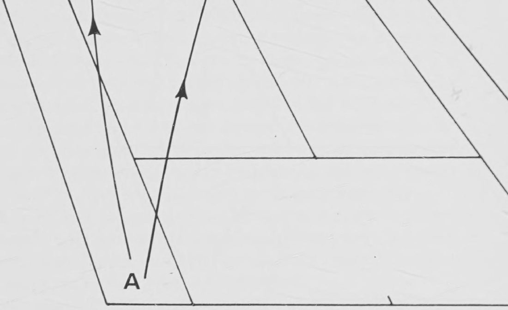
(e)
(e)
NAY,
NAY,
the service backhand, AB. If server is left-handed and has a very strong forehand, the safest way to find his backhand is to lob, AC, between both players’
backhands.
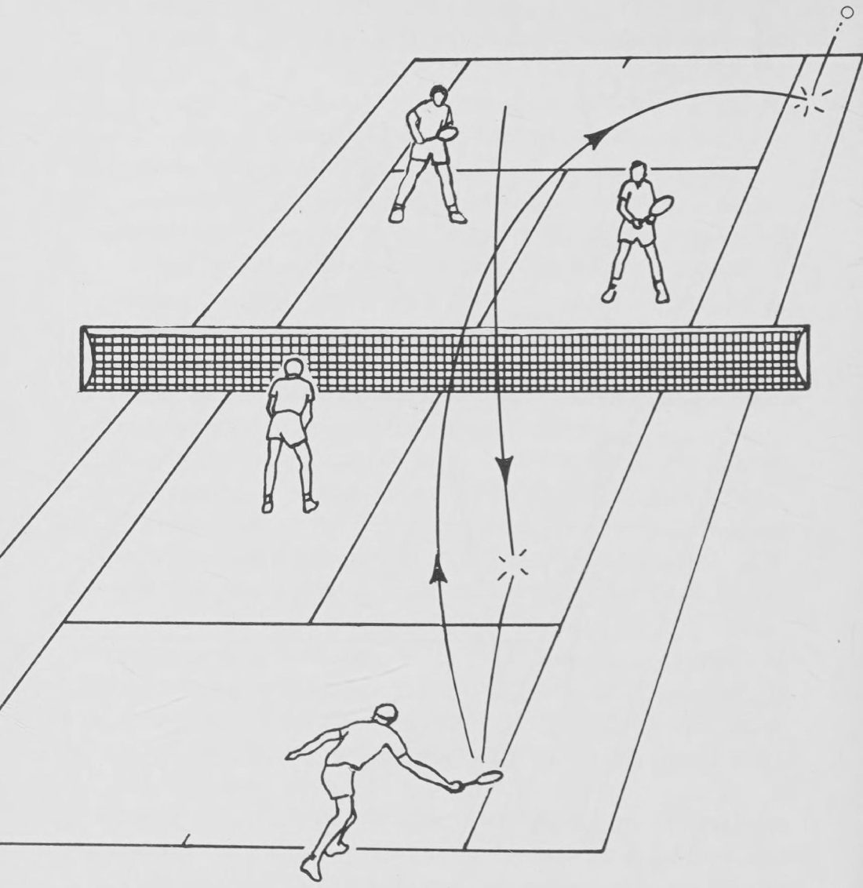
trên không (on the full) và giữ vững bức tường lưới của bên bạn. Rất ít người chơi có thể đứng sát lưới mà vẫn bao quát và bắt kịp một cú lốp về phía trái tay trên không. Sau hai lần như vậy, người đứng lưới sẽ phải quyết tâm ngăn chặn việc bạn lốp bóng qua đầu mình, hoặc là chấp nhận thua cuộc. Anh ta sẽ phải đứng lùi xa hơn và sẽ không còn tập trung chú ý vào khu trung tâm nữa. Người giao bóng góp phần giữ vững thế trận bằng cách tránh những quả giao bóng vào cánh thuận tay giúp bạn dễ dàng lốp bóng về phía trái tay của người đứng lưới, và vì thế lần này anh ta giao bóng dọc đường trung tâm. Nhưng đến lúc này trong đầu anh ta đã đầy ắp nỗi ám ảnh về những quả lốp, do đó anh ta không còn lao lên với sự hăng hái như trước nữa. Hãy nhìn vào vị trí của họ hiện tại trong Hình 33.
the full and retaining your side’s net barrier. Few players can stand close to the net and cover a backhand-side lob on the full.
Bàn Thêm Một Chút Về Cú Lốp Bóng Thỉnh thoảng bạn từng nghe về việc một cặp đôi bị đánh bại bởi những cú lốp kiên trì, hoặc để lộ điểm yếu trước những cú lốp, và có thể bạn cho rằng điều đó có nghĩa là cặp đấu bại trận đã đánh hỏng tất cả những cú đập smash của họ. Bây giờ bạn có thể thấy, từ ví dụ về cặp đôi sung sức nhưng thiếu kinh nghiệm ở trên, chính những cú lốp tấn công chiến thuật chứ không phải những cú đập bóng hỏng đã làm nên chuyện.
After two experiences, the net man will have to be determined to prevent your lobbing past him, or lose by default. He will stand farther back and he won’t be concentrating on the center.
Dẫu vậy bạn vẫn có những hoài nghi. Mọi điều nghe có vẻ rất hay, nhưng trải nghiệm bản thân của bạn lại cho thấy những cú lốp là những cú đánh nguy hiểm, bởi vì nếu chúng đi chệch một chút thì đối phương sẽ đập nát bóng, và riêng bạn thì không bao giờ muốn dính dáng đến lối đánh yếu ớt.
The server adds his contribution to holding the fort by avoiding those forehand serves that aid you in lobbing towards his partner’s backhand, and so he serves down the center this time.
Được rồi, nhưng để tránh biến bạn thành một người chơi chỉ biết lốp bóng một cách phòng thủ thụ động mà không có bất kỳ cú lốp chiến thuật hay tấn công nào làm vũ khí dự phòng, chúng ta hãy chỉ thảo luận về cú lốp thuận tay như một cú trả giao bóng từ ô sân bên phải.
But by now he’s got lobs on his mind and so he doesn’t follow in with his former gusto. Look at their position now, in Illus. 33.
Thêm về Lốp bóngA Little More About Lobbing
Đừng xem nó như một cú đánh dựa vào cảm giác tinh tế nữa (bạn từng đọc: "Tay vợt này tay vợt nọ có cảm giác bóng tuyệt vời với những cú lốp"), mà thay vào đó hãy xem nó như một cú đánh đầy uy lực, qua đầu và vượt qua người đứng lưới, và là một trong những lựa chọn tấn công trong kho vũ khí trả giao bóng của bạn.
Now and then you’ve heard of a pair having been broken up by consistent lobbing, or having shown their vulnerability to lobs, and perhaps you took that to mean that the losing pair missed all their smashes. You can see now, from the example of the vigorous but untried couple above, that tactical offensive lobbing and not missed smashes probably did the trick.
Khi ấy, bạn sẽ không vội vàng từ bỏ nó sau một lần thất bại, chẳng khác nào bạn không bao giờ từ bỏ cú drive hay cú cắt bóng trả lại chỉ vì đánh hỏng một quả. Chuyển từ việc so sánh kỹ thuật đánh sang...
Just the same you have your doubts. It all sounds fine, but your own experience has been that lobs are dangerous shots because if they go wrong they’re slaughtered, and you, for one, don’t want to have anything more to do with weak play.
All right, but to prevent your becoming a player who lobs defensively only and has no tactical or attacking lob whatsoever as an extra shot in his locker, let’s discuss only the forehand lob as a return of service from the right court.
Don’t regard it as a touch shot any longer (“‘So-and-so was in fine touch with his lobs,” you’ve read), but instead look on it as a forceful shot, over the net man and past him, and one of your range of attacking service returns.
Then, you won’t immediately abandon it after one failure any more than you’d give up your drive or sliced return when you’d missed one. Turning from a stroke comparison to a
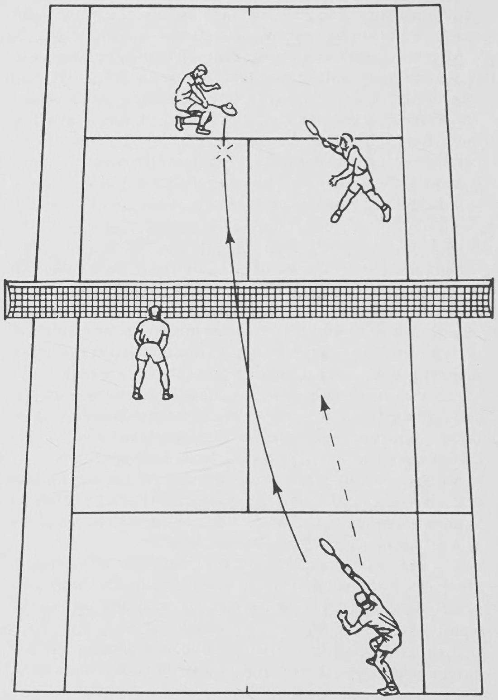
vẫn còn nghi ngờ. Một cú lốp ngắn, bị đập thành một cú thắng dứt điểm trong một điểm quan trọng, trông thật khủng khiếp. Bạn thà “tự mình thoát khỏi rắc rối”.
tactical one, you wouldn’t abandon your net position and stop coming to the net because you missed a volley or two, so you should not forsake your forceful shot over and past the net man if one or two come to grief.
Chà, nhiều cầu thủ giỏi “tự mình thoát khỏi rắc rối”.
Yourre still doubtful. A short lob, smashed for a resounding winner on an important point, looks terrible. You’d rather “‘hit yourself out of trouble.”
Họ từ chối bị buộc vào một cú lốp yếu cho đối thủ đập và thà mạo hiểm đánh thật mạnh vào một quả bóng khó.
Well, many good players “hit themselves out of trouble.”
Họ không, tất nhiên, làm điều này một cách hoang dã với ít hy vọng thành công; họ đánh vòng qua và ôm lấy quả bóng với một kiểu xoáy lên bao quát để có được sự kiểm soát tối đa có thể. Có rất ít thời gian để nhắm mục tiêu ngoài hướng chung, nhưng bất kể cú đánh đó đi đâu, nó sẽ không hề nhẹ.
They refuse to be forced into a weak lob for the opposition to smash and would rather chance their arm by lashing hard at a difficult ball. They don’t, of course, do this wildly with little hope of success; they hit over and round the ball with a sort of covering topspin for whatever control is possible. There’s little time for aim beyond general direction, but wherever that shot goes it won’t be soft.
Điều tuyệt vời là những người có tư duy tấn công này không bao giờ ngừng chơi những cú lốp tấn công. Họ chọn những quả bóng dễ hơn để thực hiện.
Good stuff, but that doesn’t mean these aggressively minded men never play attacking lobs. They choose easier balls to play them from.
Để không từ bỏ cú lốp thuận tay ô bên phải vì một thất bại trong một điểm quan trọng, hãy xem kịch bản từ thảm họa thành chiến thắng này: Set quyết định, 4-tất cả, 30-tất cả.
Keeping to the point of not abandoning your right-court forehand lob because of a failure on an important point, take this disaster-into-triumph scenario: Deciding set, 4-all, 30-all.
Bạn thực hiện cú đánh vượt qua người đứng lưới, nhưng bạn không quan sát quả bóng kỹ, có lẽ vì anh ta bắt đầu di chuyển. Bạn không đánh vào trung tâm dây vợt, cú lốp bị ngắn, anh ta đập bóng dứt điểm, đồng đội rên rỉ, đối tác mím môi. Đối tác đưa bóng (trang đối diện)
You go for your shot over the net man, but you don’t watch the ball properly, perhaps because he began to move. You don’t hit the center of your strings, the lob goes short, he crashes it, teammates groan, partner looks tight-lipped. Partner brings it (opposite page)
phía trái tay overhead của mình và người giao bóng vẫn chưa tiến đến vạch giao bóng.
his overhead backhand side and the server has not reached as far as the service line. Instead of having a net barrier against you, the center is as open as a barn door. !n this situation it’s a pity you're not one of those left-handers with a strong topspin forehand, fiercely unleashing it into the hesitant server's back- hand half-volley mis-hit. Anyway, play your backhand into this area and move in.
Thay vì có một rào chắn lưới chống lại bạn, trung tâm mở toang như cửa chuồng gà. Trong tình huống này, thật đáng tiếc nếu bạn không phải là một trong những người thuận tay trái với cú thuận tay xoáy lên mạnh mẽ, tung nó vào cú nửa-vô-lê hụt của người giao bóng đang do dự. Dù sao, hãy đánh cú trái tay của bạn vào khu vực này và tiến lên.
trở lại hòa. Người giao bóng hỏng bóng một, và quả thứ hai rơi vào thuận tay của bạn và khá kém. Anh ta lao vào nhanh để bao phủ lưới nhằm bù đắp cho điều đó và người đứng lưới nhích một chút để sẵn sàng bảo vệ trung tâm.
back to deuce. Server misses first ball, and second is on your forehand and rather poor. He charges in fast to blanket the net to make up for it and net man edges over a fraction to be ready to guard the center.
Bạn nên quan sát bóng kỹ và thực hiện một cú trả giao bóng mạnh mẽ vượt qua phía trái tay người đứng lưới, ra sau anh ta. Dũng cảm? Không thực sự, bạn không phải đang ‘chạm’ bóng một cách căng thẳng.
You should watch the ball closely and play a forceful service return over the net man’s backhand side, past him. Brave? Not really, you weren’t nerve-wrackingly ‘touching’ the ball.
Thành thạo? Phần lớn là vậy.
Competent? Most.
NHẬN BÓNG Ô BÊN TRÁILEFT-COURT RECEIVING
Từ ô bên trái, bạn không có mục tiêu đẹp tương tự cho một cú lốp qua phía trái tay người đứng lưới. Nếu bạn thoát được cú đập trái tay của anh ta, cú đánh của bạn thường có thể được bao quát không quá khó khăn bởi người giao bóng, người có quả bóng ở phía thuận tay của mình. Anh ta phải thay đổi hướng di chuyển đôi chút, nhưng một cú lốp cho anh ta thời gian để làm vậy. Điều này có nghĩa là các cú lốp từ ô bên trái của bạn sẽ phải vượt qua cú đập thuận tay của người đứng lưới, và điều này rủi ro hơn nhiều đến mức lốp bóng tấn công ô bên trái không phải là một chiến thuật cơ bản.
From the left court you haven’t got the same beautiful target for a lob over the net man’s backhand side. If you get clear of his backhand smash, your shot can usually be covered without much difficulty by the server, who has the ball on his forehand side. He has to change direction somewhat, but a lob gives him time to do so. This means that your lobs from the left court will have to clear the net man’s forehand smash, and this is so much more risky that attacking left-court lobbing is not a basic tactic.
Tuy nhiên, hãy lốp bóng qua người đứng lưới nếu bạn có thể. Nó đưa quả bóng ra sau cả hai cầu thủ, phá hủy rào chắn lưới của họ, và cho phép bạn và đối tác tạo rào chắn của mình. Người đứng lưới có thể thuận tay trái, cho phép bạn có mục tiêu tốt cho cú lốp trái tay của mình. Hoặc, bạn có thể là một cầu thủ có thể lốp xoáy lên an toàn từ một cú giao bóng dọc trung tâm qua trái tay của một người đứng lưới thuận tay phải, ra ngoài tầm với của người giao bóng đang tiến lên, và đi thẳng đến góc đường biên và vạch cuối sân của người đứng lưới. Hoặc, bạn có thể là một người lốp bóng giỏi bất kể thế nào. Xem Hình 34.
Nevertheless, lob over the net man if you can. It gets the ball behind both players, destroys their net barrier, and allows you and your partner to form yours. The net man may be left- handed, allowing you a good target for your backhand lob. Or, you may be a player who can safely roll a topspin lob from a center-line serve over a right-handed net man’s backhand, out of reach of the incoming server, and going all the way to net man’s sideline and baseline corner. Or, you may be a good lobber anyhow. See Illus. 34.
Trả Giao Bóng Trực TiếpDirect Service Returns
Từ việc tung những cú lốp về mọi hướng, giờ hãy chuyển sang những hình thức trả giao bóng trực tiếp hơn.
From tossing lobs about in all directions, turn now to more direct forms of service return.
Từ ô bên trái, mục tiêu chính của bạn là chân của người giao bóng đang tiến vào và rộng ra ngoài anh ta. Bạn sẽ không đạt được cả hai mục tiêu này chỉ bằng //tốc độ đơn thuần. Cú drive phẳng mạnh hoặc hơi lăn (rolled drive) mà xuyên thấu sâu trong đánh đơn, hoặc chống lại một cặp Một trên Một dưới, chỉ là một cú vô-lê đầu tiên cao ngang eo đối với một người giao bóng đã tiến lên. Cú đánh tấn công nhất của bạn là một cú drive xoáy lên (topspin drive) lao xuống, càng nhanh càng tốt, miễn là nó có thời gian để rơi xuống thấp hơn nhiều so với độ cao của lưới khi chạm tới người giao bóng, buộc anh ta phải vô-lê hướng lên. Bạn càng tạo được nhiều góc đánh càng tốt, miễn là quả bóng rơi kịp để nằm trong đường biên dọc.
From the left court, your main targets are the incoming server’s feet and wide of him. You won’t reach either target by
Thật không may, một cú drive xoáy lên thường chỉ áp dụng cho cú thuận tay của bạn. Đến khi bạn chơi đánh đôi Lối chơi Lên lưới, những cú giao bóng bạn nhận được thường quá nhanh để cho bạn thời gian thực hiện một cú drive trái tay, và vì vậy bạn có thể phải chấp nhận cú cắt trái tay nhanh hơn.
Tuy nhiên, cú cắt trái tay cho phép bạn lướt quả bóng thấp qua lưới, và từ ô bên trái, hướng tự nhiên của nó là chéo sân và rộng ra xa cú vô-lê trái tay của người giao bóng.
Bằng mọi giá, hãy chơi một cú trái tay xoáy lên nếu bạn có thể. Để cho mình thêm một phần nhỏ thời gian để làm điều này, nhiều cầu thủ ô bên trái đợi nhận bóng với cách cầm vợt trái tay. Hầu hết không làm vậy, tuy nhiên, vì vậy hãy làm bất cứ điều gì tự nhiên hơn và do đó nhanh hơn trong trường hợp của chính bạn.
Cú trả thuận tay của bạn cũng không bị giới hạn trong một cú drive xoáy lên.
Ví dụ, có cú thuận tay lướt (Slider forehand). Bạn bước quanh trái tay của mình và lướt quả bóng sang phía không thuận, giữ nó rất thấp (nếu không nó sẽ dễ bị vô-lê)
và nhắm rộng ra xa người giao bóng. Hoặc bạn có thể chơi một cú đánh thấp chậm vào chân người giao bóng.
Những cú đánh này đôi khi được gọi là Cú đánh Chạm (Dink Shots). Bất kể bạn gọi chúng là gì, bạn hy vọng rằng người giao bóng đang tiến vào sẽ nghĩ cú đánh của bạn nhanh hơn và dài hơn thực tế, sẽ nghĩ mình có thể vô-lê nó, rồi nhận ra mình không thể, và kết thúc bằng việc để nó bị mắc kẹt hoàn toàn trong dây giày của anh ta. Dây giày bên phải là ưu tiên— vì một cú nửa-vô-lê gần chân dễ thực hiện hơn bằng trái tay hơn là thuận tay, vì khi đó khuỷu tay của bạn không bị vướng vào sườn.
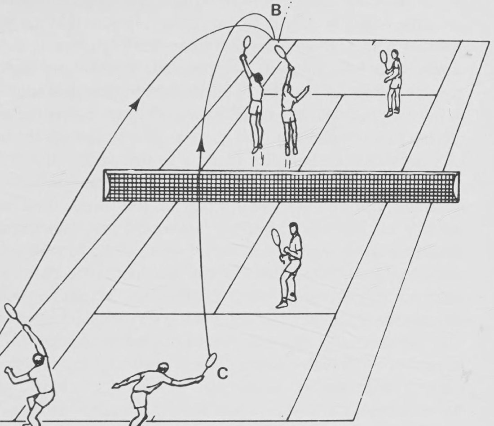
bằng tốc độ đơn thuần. Một cú drive phẳng mạnh hoặc hơi lăn, xuyên sâu trong đánh đơn, hoặc chống lại một cặp Một trên Một Dưới, chỉ là một cú vô-lê cao ngang thắt lưng thoải mái cho một người giao bóng đã tiến lên. Cú đánh tấn công nhất của bạn là một cú drive xoáy lên (topspin) cắm xuống, càng nhanh càng tốt, miễn là nó có thời gian để cắm xuống thấp hơn nhiều so với chiều cao lưới khi chạm tới người giao bóng, buộc anh ta phải vô-lê hất lên. Bạn càng tạo được góc đánh tốt thì càng tốt, miễn là quả bóng cắm xuống kịp để ở trong đường biên dọc.
plain speed alone. The strong flat or slightly rolled drive that penetrates deeply in singles, or against a One Up One Back doubles pair, is only a comfortable waist-high first volley to a server who has followed in. Your most attacking shot is a dipping topspin drive, the faster the better, provided it has time to have dipped well below net height when it reaches the server, forcing him to volley up. The more angle you can get the better, too, provided the ball dips in time to stay within the sideline.
Không may, cú drive xoáy lên thường chỉ áp dụng cho cú thuận tay của bạn. Đến khi bạn chơi đánh đôi Lối chơi Lên lưới, các cú giao bóng bạn nhận được thường quá nhanh để bạn có thời gian thực hiện một cú drive trái tay, và vì vậy bạn có thể phải chấp nhận cú trái tay cắt nhanh hơn.
Unfortunately, a topspin drive often applies only to your forehand. By the time you are playing Net Game doubles, the serves you receive are often too fast to give you time to make a backhand drive, and so you may have to settle for the quicker- made backhand slice. However, the backhand slice allows you to skim the ball low over the net, and from the left court its natural direction is crosscourt and wide of the server’s backhand volley.
Tuy nhiên, cú trái tay cắt cho phép bạn lướt quả bóng thấp qua lưới, và từ ô bên trái hướng tự nhiên của nó là chéo sân và rộng ra xa cú vô-lê trái tay của người giao bóng.
By all means, play a topspin backhand if you can. To give themselves a fraction more time to do this, many left-court players await service holding a backhand grip. Most don’t, however, so do whatever is more natural and therefore quicker in your own case.
Bằng mọi cách, hãy chơi một cú trái tay xoáy lên nếu bạn có thể. Để cho chính mình thêm một chút thời gian để làm điều này, nhiều cầu thủ ô bên trái đón nhận giao bóng bằng cách cầm vợt trái tay. Hầu hết không làm vậy, tuy nhiên, vì vậy hãy làm bất cứ điều gì tự nhiên nhất và do đó nhanh nhất trong trường hợp của bạn.
Neither is your forehand return restricted to a topspin drive.
Cú trả bóng thuận tay của bạn cũng không bị giới hạn trong một cú drive xoáy lên.
For example, there is the Slider forehand. You step round your backhand and slide the ball across to your off side, keeping it very low (or it would be easy to volley) and aiming it wide of the server. Or you may play a slow low shot to the server’s feet.
Ví dụ, có cú thuận tay Lướt (Slider). Bạn bước quanh trái tay của mình và lướt quả bóng sang phía không thuận, giữ nó rất thấp (nếu không nó sẽ dễ bị vô-lê) và nhắm rộng ra ngoài người giao bóng. Hoặc bạn có thể đánh một cú thấp chậm vào chân người giao bóng.
These are sometimes called Dink Shots. Whatever you call them, you hope that the incoming server will think yours is faster and longer than it really is, will think he can make a volley of it, then find he can’t, and will end by getting it well and truly entangled in his shoelaces. His right shoelace for preference— because a half-volley near one’s feet is more accessibly played with a backhand than a forehand, as then your elbow is free of your ribs.
Những cú đánh này đôi khi được gọi là Cú chạm nhẹ (Dink Shots). Bất kể bạn gọi chúng là gì, bạn hy vọng rằng người giao bóng đang tiến vào sẽ nghĩ cú đánh của bạn nhanh hơn và dài hơn thực tế, sẽ nghĩ anh ta có thể vô-lê nó, rồi nhận ra anh ta không thể, và kết thúc bằng việc bị vướng vào dây giày.
dây giày bên phải là ưu tiên—vì một cú nửa-vô-lê gần chân dễ thực hiện hơn với một cú trái tay hơn là thuận tay, vì khi đó khuỷu tay của bạn không bị chắn bởi xương sườn.
Hầu hết các cầu thủ thực hiện những cú thuận tay thấp chậm này dễ dàng hơn từ ô bên trái hơn là ô bên phải. Từ bên trái, bạn có thể sử dụng kiểu đánh xoáy trong-xoáy dưới tiếp xúc dài mà bạn có thể đẩy bóng sang phía không thuận.
Most players play these low slow forehands more easily from the left court than the right. From the left, you can use that inside-underspin long-contact sort of shot you can push away to your off side. Instead of arguing this in detail, have you noticed that most singles opponents play their forehand drop-shots to their off side, to your backhand? Probably you do too.
Bóng Bay LênRising Ball
Thay vì tranh luận chi tiết, bạn có nhận ra rằng hầu hết đối thủ đánh đơn thực hiện những cú bỏ nhỏ thuận tay sang phía không thuận của họ, tức là về trái tay của bạn? Có lẽ bạn cũng vậy.
Another aspect of left-court play is that you can take the ball earlier than in the right, because you haven’t the same necessity to get well behind it in order to keep clear of the net man. Always get behind it if you can, for better control of direction and also to be in better balance to follow your return in if it is a good one, but the left court gives you a better oppor- tunity to combine all this with rising-ball play. Hitting outside the ball, your backhand goes across the net man naturally. As for the forehand, whereas a right-court player who is late in playing it hits the ball within reach of the net man (Net Game- Receiving Tennis Crime), the later you are with yours the wider it goes, perhaps even over the server’s sideline. Therefore, from the left court you can stand in closer to receive service, and play a rising-ball type of service return with less risk of net-man interception than you can from the right court. See Illus. 35.
Một khía cạnh khác của lối chơi ô bên trái là bạn có thể đón bóng sớm hơn ở ô bên phải, vì bạn không có nhu cầu tương tự là phải đứng xanh phía sau quả bóng để tránh người đứng lưới. Hãy luôn đứng sau quả bóng nếu có thể, để kiểm soát hướng tốt hơn và cũng để ở trạng thái thăng bằng hơn khi theo cú trả bóng hiên nếu đó là một cú đánh tốt, nhưng ô bên trái cho bạn cơ hội tốt hơn để kết hợp tất cả những điều này với lối chơi bóng bay lên. Đánh ra ngoài quả bóng, cú trái tay của bạn đi chéo qua người đứng lưới một cách tự nhiên. Còn đối với thuận tay, trong khi một cầu thủ ô bên phải nếu đánh muộn sẽ đánh bóng trong trong tầm với của người đứng lưới (Tội ác nhận bóng Lối chơi Lên lưới), thì bạn càng đánh muộn thì bóng càng đi rộng, thậm chí là ra ngoài đường biên của người giao bóng. Vì vậy, từ ô bên trái bạn có thể đứng gần hơn để nhận giao bóng, và thực hiện một cú trả giao bóng kiểu bóng bay lên với ít rủi ro bị người đứng lưới chặn hơn so với ô bên phải. Xem Hình 35.
Watching various pairs play, you can notice that except for a right-court player who crowds second serves for forehand devastation, it is normally the left-court receiver who stands in closer. Admittedly he doesn’t have to guard as carefully against a fast and swinging forehand ace, and perhaps he’s in there merely because he’s usually the stronger player. Perhaps he stands closer because the left-court player’s backhand slice is probably the most consistently used service return of any, and for this particular shot he’d rather have a rising ball than a dropping one. None of this conflicts with Illus. 35. It amplifies it.
Quan sát các cặp thi đấu, bạn có thể nhận ra rằng ngoại trừ một cầu thủ ô bên phải áp sát cú giao bóng hai để hủy diệt bằng thuận tay, thì thông thường người nhận ô bên trái là người đứng gần hơn. Phải thừa nhận rằng anh ta không phải canh chừng chăm sóc một cú ace thuận tay nhanh và uốn cong, và có lẽ anh ta đứng ở đó chỉ vì anh ta thường là cầu thủ mạnh hơn. Có lẽ anh ta đứng gần hơn vì cú cắt trái tay của cầu thủ ô bên trái có lẽ là cú trả giao bóng được sử dụng nhất quán nhất trong số tất cả, và đối với cú đánh cụ thể này, anh ta thà đón bóng bay lên hơn là bóng đang rơi. Không điều nào trong số này mâu thuẫn với Hình 35. Nó củng cố điều đó.
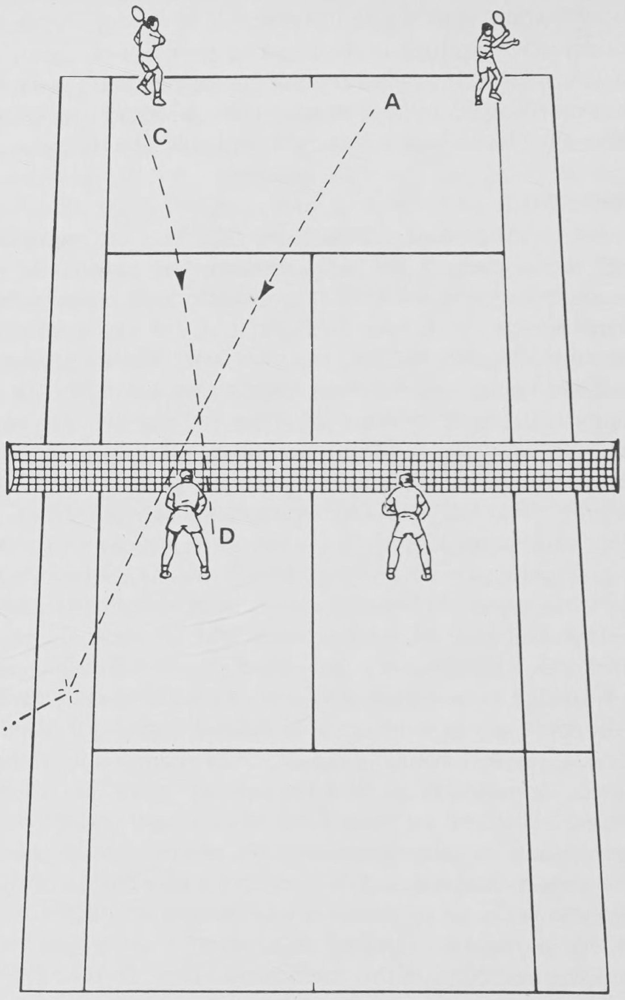
Cuộc thảo luận của chúng ta cũng giải thích về kiểu cầu thủ khá kỳ quặc mà bạn gặp người dường như muốn ô này ngày hôm nay và ô kia ngày mai.
Our discussion also explains the rather odd player you meet who seems to want one court one day and the other the next.
Vị trí thực sự của anh ta, mặc dù anh ta có thể không bao giờ giải thích với bạn, là anh ta thích ô bên phải khi mặt sân chậm, nhưng trên mặt sân nhanh anh ta không thể giữ quả bóng tránh xa người đứng lưới một cách chính xác và nhận ra rằng, trong điều kiện này, anh ta chơi tốt hơn nhiều từ ô bên trái. Anh ta sẽ khó kết hợp với đối tác, nhưng chúng ta không thể tranh luận về lý luận của anh ta.
His true position, though he may never have explained it to you, is that he prefers the right court when the court surface is slow, but on a fast surface he can’t keep the ball away from the net man properly and finds that, in these conditions, he does much better from the left. He’d be hard to combine with, but we can’t very well dispute his reasoning.
Trong mọi trường hợp, việc nhận ra giá trị của một quả bóng bay lên sẽ khiến bạn hài lòng. Bất kỳ ai chơi Nhận bóng Lối chơi Lên lưới tấn công đều muốn chơi bóng bay lên, và bạn có thể đã cảm thấy hơi ác cảm với những gợi ý trước đây về việc phải đứng đúng sau quả bóng thay vì đón bóng bay lên. Bạn cần những cú trả giao bóng bay lên đầy đủ chống lại các cặp mạnh, và bạn không muốn cảm thấy bất ổn khi đón bóng tương đối sớm chống lại các cặp mà bạn biết mình nên thắng.
At all events, this recognition of the value of a rising ball should please you. Anyone playing attacking Net Game-Receiv- ing wants to play rising-ball tennis, and you may have felt somewhat hostile to earlier suggestions to get right behind the ball rather than take it on the rise. You need rising-ball service returns to the full against strong pairs, and you don’t want to feel unsound in taking the ball reasonably early against pairs you know you should beat.
Trung tâm và Đường biên dọc Không nhiều cú trái tay ô bên trái sẽ đi vào trung tâm. Ngay cả nếu bạn khiến người đứng lưới bất ngờ trong chốc lát, anh ta có khả năng phục hồi nhanh chóng và có thể vô-lê một cú thắng điểm. Trừ khi anh ta là một trong những cầu thủ chờ bóng với vợt giơ thẳng ra phía trước, nếu không anh ta sẽ giữ vợt thoải mái hơn băng qua cơ thể, từ đó cú vô-lê trái tay là phản xạ nhanh nhất của anh ta (trang đối diện)
Center and Sideline Not many left-court backhands will fit into the center. Even if you take the net man momentarily by surprise, he is likely to make a swift recovery and possibly volley a winner. Unless he happens to be one of those players who await the ball with their rackets held straight out in front of themselves, he will be holding his racket more comfortably cradled across his body, from where his backhand volley is the fastest reflex-action he (opposite page)
từ ô bên trái, vì hầu hết mọi người có xu hướng đánh thuận tay thẳng và trái tay chéo sân. Hơn nữa: với cú trái tay, bạn không phải dành thời gian để xoay người nhiều như hình vẽ. Nếu bạn đánh thuận tay muộn, bóng sẽ đi rộng ra ngoài người đứng lưới, AB, thay vì hướng về phía anh ta, CD.
forehand and backhand returns avoid the net man more naturally when made from the left court, because most people tend to hit straight forehands and crosscourt backhands. Further: for your backhand you don’t have to find the time to turn as far round, as shown here. If you're late with your forehand it goes wide of the net man, AB, rather than towards him, CD.
has. Nhiều cầu thủ đã nghĩ rằng mình đã thực hiện một cú đánh thắng điểm, ngay cả từ một cú đập mạnh, chỉ để thấy mình đã đánh bóng chính xác vào cú vô-lê trái tay gần như tự động của đối thủ.
has. Many a player has thought he has made a winning shot, even from a hard smash, only to find he has hit it fair and square into his opponent’s almost automatic backhand volley.
Một cú thuận tay trung tâm được thực hiện an toàn nhất bằng cách đánh một cú thuận tay xoáy lên chéo từ một cú giao bóng dọc trung tâm. Xem cú đánh CB trong Hình 34 một lần nữa, hãy tưởng tượng đó là một cú drive.
A center forehand is most safely made by pulling a topspin forehand across from a center-line service. See shot CB in Illus.
Những nỗ lực đánh bóng ra đường biên để vượt qua người đứng lưới nên được giới hạn trong những trường hợp anh ta di chuyển quá xa và bạn có thời gian để vượt qua anh ta, hoặc khi bạn nhận được một cú giao bóng quá rộng vào trái tay đến mức bạn có thể đánh quả bóng ra ngoài đường biên khi nó băng qua lưới. Xem Hình 36.
34 again, imagining it to be a drive.
Hãy cẩn thận khi thực hiện một nỗ lực hời hợt để đánh bóng ra đường biên bằng cú trái tay cắt. Bạn muốn đánh thấp, như bạn vẫn làm chéo sân, vì một cú cắt cao rất dễ bị vô-lê, nhưng bây giờ bạn đang nhắm vào nơi lưới cao hơn 6 inch.
Your attempts to sideline the net man should be restricted to cases where he moves well over and you have time to pass him, or where you receive such a wide serve to your backhand that you can hit the ball outside the sideline as it crosses the net. See Illus. 36.
Điều đó nghe có vẻ không nhiều, và không ai nhận ra điều đó cho đến khi họ ngồi xuống bên cạnh sân với tầm mắt ngang với lưới và quan sát xem có bao nhiêu quả bóng trung tâm trượt qua trong phần võng của lưới. Điều đó cho thấy rõ hơn bất kỳ lời nói nào rằng một độ hở trung tâm thấp sẽ khiến quả bóng đập vào lưới ở đường biên dọc. Tương tự unless you’ve turned fully round, your sideline aim is more to your off side than before, and that’s weaker even though you don’t notice it. All told your shot is likely to find the net. You may feel it’s served some useful purpose by warning the net man to stay at home and not interfere with your next point, but you should then be playing wide of him anyway, and meanwhile you’ve lost the point.
Beware of making a half-hearted attempt to sideline the net man with a backhand slice. You want to hit low, as you’ve been doing crosscourt, because a high slice is very easy to volley, but now you’re aiming where the net is 6 inches higher. That doesn’t sound like much, and no one ever appreciates it until he sits down beside the court with his eye on a level with the net and watches how many center balls slip past in the bow of the net’s sag. It shows more clearly than any amount of talking that a low center clearance would mean the ball would be well into the net at the sideline. Likewise unless you’ve turned fully round, your sideline aim is more to your off side than before, and that’s weaker even though you don’t notice it. All told your shot is likely to find the net. You may feel it’s served some useful purpose by warning the net man to stay at home and not interfere with your next point, but you should then be playing wide of him anyway, and meanwhile you’ve lost the point.
(trang đối diện)
(opposite page)
của người đứng lưới, và hoặc là uốn cong hoặc ít nhất là “có xu hướng” đi vào trong đường biên dọc. Chống lại cả người đứng lưới và đường biên dọc, bạn đã tạo cho mình lợi thế lớn.
lus. 36. SIDELINING THE NET MAN. From a wide serve (not shown) you hit outside the ball, as for a crosscourt shot, and the ball can then pass beyond the net man’s reach, and either curve or at least ‘‘tend’’ inside the sideline. Against both net man and sideline, you've given yourself good odds.
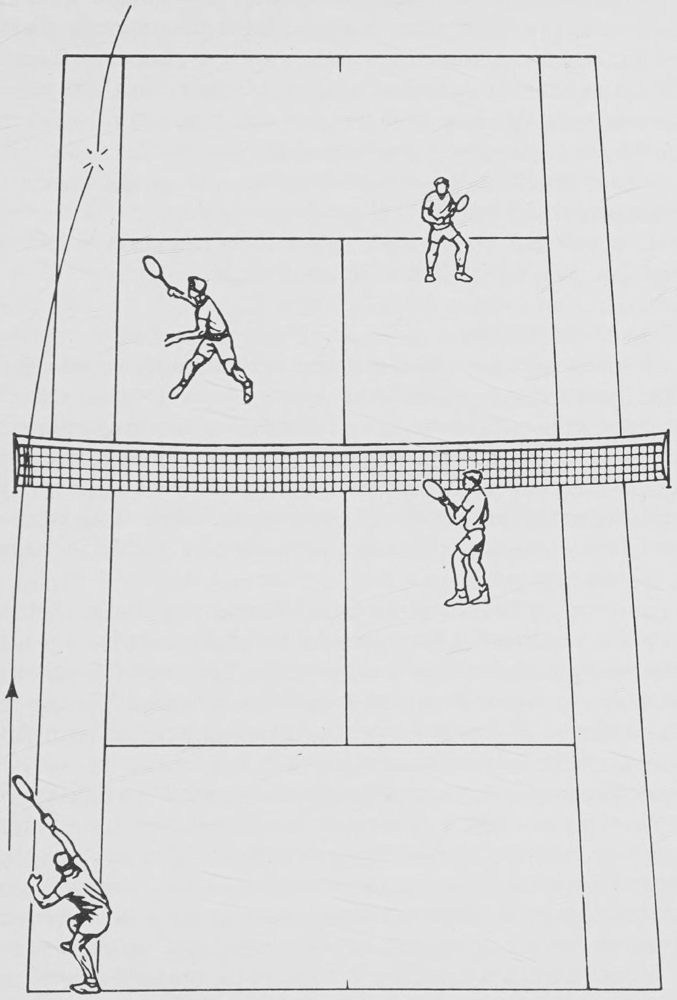
Nếu tỉ số là game point cho đối phương, thì đó là một sự lãng phí hoàn toàn, vì bốn game sau đó, người chơi trên lưới khó có thể cảm thấy bị hạn chế bởi bất kỳ cảnh báo nào mà bạn đã đưa ra từ bốn game trước; hơn nữa, set đấu có thể đã kết thúc vào lúc đó. Nếu đó là game point cho bạn, bên bạn có thể đã mất một break giao bóng. Nếu là 30-15, hoặc 15-30, như tỉ số thường thấy, bạn hoặc là để bên mình đối mặt với điểm game-point kép hoặc bạn đã đánh mất cơ hội có được vị trí đó cho chính mình.
If the score had been game point against you it was a complete waste, because four games later the net man is scarcely likely to feel restricted from any warning you gave him four games ago; also the set may be over by then. If it had been game point to you, your side may have lost a service break. If it had been left your side facing a double game-point or you lost the chance of having that position for yourselves.
Có vẻ như bạn không bao giờ được phép thư giãn, không bao giờ được nghỉ ngơi. Đó là một phần vai trò sân trái của bạn.
It seems that you’re never allowed to relax, never take a holiday. That’s part of your left-court role.
Vai Trò Sân TráiThe Left-Court Role
Các cặp đánh đôi không có đội trưởng, ngoại trừ đôi khi nói đùa. Sự tương đương gần nhất là người chơi sân trái. Ở đây, bạn nên là điểm tựa, người giữ thành khi bên bạn bị dẫn một điểm và là người giành lợi thế điểm kép hoặc chốt hạ game đấu khi đang dẫn trước. Chấp nhận trách nhiệm này và luôn ý thức về nó khiến cặp của bạn trở nên khó đánh bại hơn nhiều, và hỗ trợ đáng kể khả năng đánh bại các cặp yếu hơn một cách chắc chắn.
Doubles pairs don’t have captains, except sometimes jokingly.
Khi chấp nhận trách nhiệm của mình, rõ ràng bạn có vị trí sân tốt hơn để thực hiện điều đó: hướng trái tay tự nhiên, không có người lên lưới chắn trước cú thuận tay, cú volley thuận tay của bạn để bảo vệ hầu hết khu vực trung tâm hoặc để tấn công, cú đập bóng thuận tay của bạn để bao quát gần như tất cả các pha bóng bổng trung tâm. Không ngạc nhiên khi sân trái thường được đảm nhận bởi người chơi mạnh hơn.
The nearest equivalent is the left-court player. Here you should be the anchor, the man to hold the fort when your side is a point down and the one to gain a double-point advantage or clinch the game when it is ahead. Accepting this responsibility and always being conscious of it makes your side a much harder pair to beat, and greatly aids your ability to beat lesser pairs with certainty.
Nếu đối tác của bạn là người chơi mạnh hơn, nhưng chọn sân phải vì anh ta chuyên về vị trí đó, bạn vẫn nên chơi tennis sân trái một cách có trách nhiệm. Ví dụ, bạn vẫn sẽ phải bao quát bóng bổng trung tâm. Tuy nhiên, tình huống bình thường là bạn là người chơi mạnh hơn ở sân trái và cú đánh quan trọng nhất của bạn, dù có thể không phải là cú đánh tốt nhất, chính là cú trả giao bóng.
In accepting your responsibility, it is clear you have the better court to implement it from: natural backhand direction, no net man in front of your forehand, your forehand volley to protect most of the center or to attack with, your forehand smash to cover almost all center overheads. No wonder the left court is usually taken by the stronger player.
Cú trả bóng của bạn là tốt nếu nó buộc người giao bóng đang tiến lên phải
If your partner is the stronger player, but takes the right court because he specializes in it, you should still play responsible left-court tennis. For example, you will still have to cover the center overhead. However, the normal situation is that you are the stronger player in the left court and that your most important shot, even though it may not be your best, is your service return.
Your return is a good one if it forces the incoming server to
volley từ dưới mức lưới, trong khi bạn vẫn giữ được thăng bằng tốt và có thể tiến lên lưới. Thoạt nhìn, điều đó có vẻ không phải là đặt ra tiêu chuẩn đủ cao cho bản thân, nhưng sau khi suy ngẫm, bạn có lẽ sẽ đồng ý, với tư cách là điểm tựa sân trái, rằng đó là cơ sở để đánh bại các cặp yếu hơn một cách chắc chắn.
volley from below net level, while you have remained in good balance and can follow into the net. At first thought, that may not seem to be setting a high enough standard for yourself, but after reflection you will probably agree, as left-court anchor, that it is your basis for defeating lesser pairs with certainty.
Trong khi bạn trả bóng thấp và tiến lên, còn người giao bóng phải volley bóng bổng lên, bạn sẽ là người chiến thắng. Vì vậy, vai trò của bạn không phải là chấp nhận những rủi ro không cần thiết bằng cách đánh mạnh nhất, hoặc đánh xoáy xuống cực thấp, hoặc chạm bóng tinh tế nhất, hoặc lấy bóng ở điểm cao nhất, hoặc cắt trái tay ở góc rộng nhất có thể ra đường biên, hoặc vung vợt dài với cú drive trái tay topspin mà bạn không có đủ thời gian để thực hiện đúng cách.
While you’re returning low and following in and the server is volleying up, you should be winning. Therefore it is not your role to take unnecessary risks by hitting your hardest, or under-spinning to your extreme lowest, or touching to your finest, or taking the ball on the extreme rise, or slicing your backhand across at its widest possible angle onto the sideline itself, or letting fly with a long backswing topspin backhand drive that you didn’t have time to make properly.
Nếu bạn thực hiện được những cú đánh này, nó không thể gọi là lối chơi an toàn (sucker play), nhưng đó là một thái độ 'Sucker'. Nó khiến bạn và đối tác trở thành một cặp dễ tổn thương, dễ bị lật kèo.
If you get these shots in, it can’t be called sucker play, but it is a Sucker attitude. It makes you and your partner a brittle pair, open to an upset.
Nếu bạn chấp nhận vai trò cấp cao ở sân trái, nguyên tắc dẫn dắt của bạn là Đủ là Đủ. Điều đó không có nghĩa là bạn không tấn công. Bạn đang tấn công, nếu bạn thực hiện những cú trả bóng đủ tốt để có thể tiến lên; bạn không thể làm điều đó một cách ngần ngại hoặc ngả người ra sau. Nếu đối thủ nâng tầm cuộc chơi, bạn cũng vậy.
If you accept your senior left-court role, your guiding principle is that Enough is Enough. That does not mean you’re not attacking. You are, if you’re making returns good enough to be followed in; you can’t do that tentatively, or leaning back.
Trách nhiệm cuối cùng của tennis sân trái là kiên trì đến cùng. Giả sử bạn đã chịu áp lực chính của game đấu, nhưng đối thủ đang giao bóng để kết thúc trận đấu; tuy nhiên, bên bạn xoay xở giành được break point, và bạn buộc đối thủ giao bóng phải volley yếu, nhưng sau đó đối tác của bạn lại đánh hỏng hoàn toàn; khi nhận bóng ở điểm deuce, anh ta mất bình tĩnh và đánh loạn xạ vào một cú giao bóng hai mà lẽ ra anh ta có thể trả vào cuộc và cho bạn một cơ hội. Bây giờ là match point cho đối phương. Đừng, tuyệt đối đừng, vung vợt loạn xạ ở cú giao bóng tiếp theo rồi chạy lên lưới để bắt tay trong sự thất bại giận dữ—tất cả là lỗi của đối tác. Hãy đặt cho mình một tiêu chuẩn cao ở đây. Không đủ để chỉ là một vận động viên chạy trung bình. Bạn phải là một người bền bỉ.
If the opponents lift their game, so do you.
A last responsibility of left-court tennis is to carry it through to the end. Let’s say you have borne the brunt of the game, but your opponents are serving for the match; however, your side manages to gain a break point, and you force a weak volley from the server, but then your partner absolutely dumps it; receiving at deuce, he loses his nerve and hits wildly at a second serve that he could have returned into play and given you a chance. It is now match point against you. Don’t, do not, slash at the next serve and run up to the net to shake hands in angry defeat—all your partner’s fault. Set yourself a high standard here. It’s not enough to be a middle-distance runner. You’ve got to be a stayer.
NHÃN QUAN VỀ CUỘC CHƠIAN EYE FOR THE GAME
Một trận đấu giữa một cặp cao lớn đánh mạnh và một cặp cao lớn đánh mạnh nổi tiếng đã được lên lịch, và một người bạn chưa có kinh nghiệm đã đến xem để học hỏi. Anh ta ngồi đối diện giữa sân để có thể nhìn thấy cả hai đầu sân như nhau, và ngồi ngang tầm sân để gần các cầu thủ nhất có thể vì anh ta muốn nghiên cứu các cú đánh của họ.
A match between a tall hard-hitting pair and a well known tall hard-hitting pair was programmed and an inexperienced friend went along to watch it and learn something. He sat opposite the middle of the court so that he could see both ends equally well, and he sat at court level to be as close to the players as possible because he was going to study their strokes.
Trong mắt anh ta, cả bốn cầu thủ đều có những cú giao bóng khủng khiếp và họ sẽ giao ace hết lần này đến lần khác nếu chỉ một số trong số họ không đánh ra ngoài. Có những cú trả bóng nhanh, những cú volley sát, một vài cú lốp bóng khiến đối thủ đứng chôn chân và một số cú đập bóng sấm sét. Khá nhanh sau đó, cặp đôi nổi tiếng đã thắng trận 6-2, 6-2, cách biệt mười hai game so với chỉ bốn game, nhưng bạn của chúng ta vẫn không hiểu tại sao. Hai cặp trông giống hệt nhau. Anh ta không thấy bất kỳ sự khác biệt nào giữa bất kỳ ai trong bốn cầu thủ, nếu phải nói đến điều đó. Về thể hình và cả cú đánh, tất cả đều đánh mạnh, họ trông giống hệt nhau.
To his eyes, all four players seemed to have terrific serves and they’d have served ace after ace if only a number of them hadn’t just missed. There were fast returns, close volleys, a few lobs that left the opponents standing and some towering smashes. Fairly soon the well known pair had won the match 6-2, 6-2, a margin of twelve games to only four, but our friend still has no idea how. The two pairs looked alike. He didn’t see any difference between any one of the four players, if it came to that. In physique and in strokes too, which all hit hard, they all looked alike.
Cho đến nay, anh ta chưa có nhãn quan về cuộc chơi và chắc chắn anh ta cũng chơi như vậy.
As yet he has no eye for the game and it’s certain he plays like that too.
Bạn nên xem một trận đấu từ một đầu sân và từ trên cao nhìn xuống, để có cái nhìn về trái bóng tương tự như cái nhìn của các cầu thủ. Một sân đánh đôi nhìn theo cách đó không hề bị quá tải. Nếu bạn xem những cú gần-ace nghẹt thở của trận đấu vừa mô tả, bạn sẽ thấy chúng rộng một cách vô hại và hầu hết được giao bởi cặp yếu hơn. Đối với bạn, trái bóng sẽ trông chậm hơn và dễ kiểm soát hơn, giống như đối với các cầu thủ.
You should watch a match from one end of the court and above it, to get a view of the ball similar to the view the players have. A doubles court does not look overcrowded that way. If you had watched the breathtaking near-aces of the match just described, you would have seen them to be harmlessly wide and mostly served by the lesser pair. To you, the ball would have looked slower and more manageable, as it does to the players.
Những cú trả bóng nhanh mà người bạn thiếu kinh nghiệm thấy, thực tế, chủ yếu đến từ cú thuận tay của người chơi sân phải của cặp mạnh hơn, vì cặp yếu hơn đã cho phép anh ta sử dụng nó thay vì tấn công trái tay của anh ta bằng những cú giao bóng vạch trung tâm. Anh ta có lẽ cũng là người thực hiện các cú lốp bóng—vượt qua phía trái tay của người lên lưới đang đứng quá gần lưới. Người chơi sân trái của cặp mạnh hơn vững vàng hơn nhiều trong việc trả giao bóng so với đối thủ của mình số. Cặp yếu hơn theo sát cú giao bóng của họ, nhưng cặp mạnh hơn thường tiến lên lưới cả khi trả giao bóng cũng như từ cú giao bóng của họ. Hầu hết cặp yếu hơn phải volley bóng bổng lên và cặp mạnh hơn volley bóng xuống. Và cứ thế tiếp diễn.
The fast returns our inexperienced friend saw, in fact, came mostly from the forehand of the right-court player of the better pair, because the lesser pair allowed him to use it instead of attacking his backhand with center-line serves. He probably made the lobs too—over the backhand side of the net man standing too close to the net. The left-court player of the better pair was far more solid on return of service than his opposite number. The lesser pair followed their serves in all right, but the better pair often got to the net on service return as well as from their serves. Mostly the lesser pair were volleying up and the better pair down. And so on and so on.
Nếu bạn, với tư cách là một người chơi đánh đôi theo Lối chơi Lên lưới, có thể nhìn nhận đánh đôi dưới góc độ đó, bạn cũng có thể chơi theo cách đó. Sẽ khó có khả năng một cặp đánh mạnh có thể khiến bạn bất ngờ và đánh bật bạn ra khỏi sân.
If you, as a Net Game doubles player, can see doubles in that light you can play that way too. It will be unlikely that a hard- hitting pair can take you by surprise and hit you off the court.
XUẤT HIỆN: MỘT KẺ KỲ DỊ KHÁC
Sau tất cả những vị trí chính thống này và lối chơi sân phải táo bạo, lối chơi sân trái vững vàng, lối chơi đánh mạnh, lối chơi của người thuận tay trái và tất cả những thứ còn lại—sau tất cả những điều này, một kẻ kỳ dị với cú giao bóng chậm và cú volley chọc (stabbing volley) xuất hiện và khiến bạn hoàn toàn nản lòng. Anh ta thắng tất cả các game giao bóng của mình một cách dễ dàng.
ENTER: ANOTHER FREAK After all this orthodox positioning and enterprising right- court play and solid left-court play and hard-hitting play and left-handed play and all the rest of it—after all this a freak with a slow serve and stabbing volley comes along and com- pletely frustrates you. He wins all his service games with ease.
Tại sao? Bởi vì anh ta luôn volley bóng xuống. Làm thế nào? Bởi vì bằng cách nào đó, anh ta luôn ở vị trí cao nhất của lưới.
Why? Because he’s always volleying down. How? Because somehow he’s always on top of the net.
Có lẽ bạn đã gặp anh ta trước đây. Có lẽ, để cho đầy đủ, người bạn gặp là một cựu binh với kiểu cầm vợt Western* người thực hiện nhiều cú volley thuận tay từ trước mặt và chọc những cú volley trái tay ra xa với lực tương đương. Anh ta giao bóng cao và chậm qua lưới và đưa bóng xuống sâu, và rồi anh ta lên đỉnh lưới trong nháy mắt và volley bóng xuống. Anh ta là một người sẽ không gây khó khăn cho bạn trong đánh đơn, vì anh ta không thể với tới những quả bóng rộng, nhưng ở đây trong đánh đôi, anh ta toàn chiến thuật và không có những cú đánh chuẩn mực ngoại trừ những cú volley chọc đó, giữ vững các game giao bóng và, ai biết được, có khả năng gây bất ngờ cho bạn. Những đồng đội ngưỡng mộ anh ta trên đường biên cười thầm trước sự lúng túng của bạn và khi bạn đổi sân, họ kể cho bạn nghe về huyền thoại của anh ta: “Jim già, bạn biết đấy—mỗi mùa giao bóng của ông ấy lại cao hơn và chậm hơn, và ông ấy lên lưới nhanh hơn. Một ngày nào đó ông ấy sẽ ở trên đó và cú giao bóng của ông ấy sẽ bay đến và đập vào sau đầu ông ấy.”
Perhaps you’ve met him before. Perhaps, for good measure, the one you met was an old-timer with a Western grip* who did a lot of his forehand volleys from in front of his face and prodded his backhand volleys away with equal force. He served high and slow over the net and landed the ball deep, and then he was on top of the net in a flash and volleyed down. He’s a man who’d give you no trouble in singles, because he couldn’t reach wide, but here he is in doubles, all tactics and no strokes except those prodding -volleys, holding his serves and, who knows, likely to upset you. His admiring teammates on the sidelines chuckle a bit at your discomfiture and as you change ends they impart his legend to you: “Old Jim, you know—each season his serve gets higher and slower and he gets into the net faster. One of these days he’ll be in there and his serve will come along and hit him in the back of the head.”
* Vợt được cầm như một chiếc chảo chiên hoặc một chiếc chổi đập thảm. Trái tay: đầu vợt xoay ngược lên trên và sử dụng cùng một mặt dây như đối với thuận tay.
* Racket held like a frying pan or a carpet beater. Backhand: racket head turned over the top and same side of the strings used as for forehand.
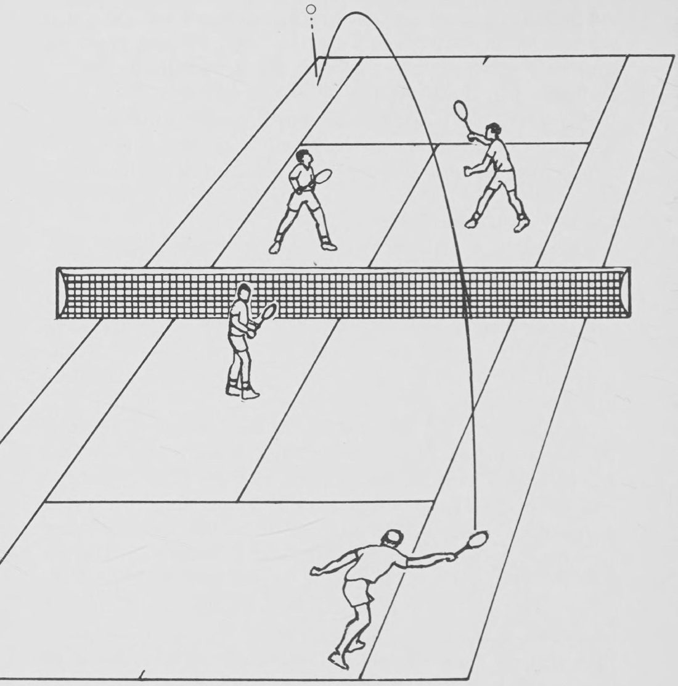
Nhận thấy bạn không thể vượt qua Jim, vì ông ấy đứng quá gần khiến mọi góc đánh chéo sân đều bị chặn, bạn thử lốp bóng. Không hiệu quả; ông ấy đã hướng dẫn kỹ đối tác trên lưới cho chiến thuật này; tỉnh táo và cảnh giác, người đối tác trên lưới này nhảy lùi lại và xử lý những cú lốp bóng của bạn; anh ta cũng không bao giờ đánh hỏng, vì đó là kiểu đối tác trên lưới duy nhất mà Jim già sẽ chơi cùng.
Finding you can’t get past Jim, because he’s in so close he’s blocked off any possible crosscourt angle, you try lobbing. No good; he’s got his net partner well briefed for this ploy; alive and alert this net partner skips back and despatches your lobs; he never misses either, because that’s the only sort of net part- ner old Jim will play with.
Tất nhiên là có giải pháp, nếu không phương pháp của Jim sẽ trở thành thực hành tiêu chuẩn trên toàn thế giới. Trong trường hợp bạn chưa biết, hãy xem Hình 37. Lốp bóng mạnh mẽ qua đầu Jim.
Of course there’s a solution, or Jim’s method would be standard practice all round the world. In case you don’t already know it, see Illus. 37. Lob forcefully over Jim’s head.
(trang đối diện)
(opposite page)
blocks off all possible crosscourt angles, it is always too far. Lob forcefully over his head, not the net man’s, towards the far corner. In singles, you'd lob over a too-close net position without thinking. In doubles, however, you associate tossing a service return with going over the net man’s head. In trying to pass the server, or get at his feet, you try to take his serve more-and more on the rise—to beat him to the punch. In suddenly changing to a lob over the net man you would hurry—and anyway he’s waiting for you. Recognize this quickly and save yourself pain.
6. Lối chơi lên lưới — Vấn đề nghiêm túc
KHI TIẾN BỘ lên tiêu chuẩn nâng cao của đánh đôi Lối chơi Lên lưới, nơi các cú đánh và chiến thuật của cả hai cặp đối thủ đều chuẩn xác, trước hết chúng ta phải bắt kịp với Đội hình Song hành (Tandem). Nhiều người chơi trình độ cao không quen với Tandem và, kết quả là, chơi nó một cách miễn cưỡng, để làm hài lòng đối tác, và theo một cách không chuẩn xác nhất. Trong việc xem xét và phát triển Tandem, hãy thực hiện từ quan điểm của một người thuận tay trái chơi chống lại nó. Những đối thủ giao bóng là những người chơi Lối chơi Lên lưới.
IN PROGRESSING now to an advanced standard of Net Game doubles, where the strokes and tactics of both opposing pairs are sound, we must first catch up with Tandem. Many players of high standard are not familiar with Tandem and, as a result, play it reluctantly, to please their partner, and in a most un- sound manner. In examining and developing Tandem, let’s do it from the viewpoint of a left-hander playing against it. The serving opponents are Net Game players.
NGƯỜI THUẬN TAY TRÁI CHỐNG LẠI TANDEMLEFT-HANDER AGAINST TANDEM
Bạn được giả định là kiểu người thuận tay trái khiến một cặp thuận tay phải chính thống bình thường phải dùng đến Tandem. Bạn có một cú drive thuận tay chéo sân topspin mạnh khiến người giao bóng đang tiến lên vô cùng lúng túng. Cú trái tay của bạn rất khó bị tìm thấy, trừ khi người giao bóng phải chấp nhận rủi ro giao bóng từ gần vạch trung tâm. Cú trái tay của bạn là một cú đánh xoáy trong nhỏ mà bạn thích đánh sang phía đối diện. Bạn đang chơi tốt, khiến người giao bóng đang tiến lên phải chịu đựng một loạt cú half-volley trái tay và giờ họ đang mạo hiểm và sẽ thử Đội hình Song hành chống lại bạn.
You’re assumed to be the type of left-hander who makes a normally orthodox pair of right-handers resort to playing Tandem. You have a strong topspin crosscourt forehand drive that badly embarrasses an incoming server. Your backhand is difficult to find, unless the server has to take the risk of serving from close to the center mark. Your backhand is a small inside-spin stroke that you prefer to hit to your off side. You’ve been playing well, giving the incoming server a dose of backhand half-volleys to play and now they’re taking the plunge and are going to try a Tandem formation against you.
Tandem đột ngột được áp dụng trong một trận đấu mà không có nhiều sự luyện tập trước đó thường là một thất bại. Khi điều này xảy ra, nó làm mất điểm và, đồng thời, khiến cặp giao bóng bị thụt lùi và tạo cơ hội cho bạn.
Tandem suddenly played in a match without plenty of practice beforehand is usually a failure. When this happens it loses points and, as well, it sets the serving pair back and sets you up.
Bạn có thể nhận ra ngay lập tức nếu một trong những cầu thủ không chắc chắn về việc mình phải làm gì; đối tác của anh ta luôn phải đưa ra một số lời hướng dẫn. Thông thường là người giao bóng muốn dùng Tandem, vì vậy thường là người lên lưới không biết chính xác mình nên đứng ở đâu và phải làm gì. Đôi khi thì ngược lại, nơi người lên lưới là người chơi mạnh hơn và đang cố gắng giúp đối tác yếu hơn giữ game giao bóng. Bất kể ai là người không chắc chắn, hãy tấn công phía sân của anh ta bằng cú trả giao bóng tiếp theo.
You can tell in a flash if one of the players isn’t sure of what he’s supposed to do; his partner always has to give him some words of instruction. It is usually the server who wants Tandem, so it’s usually the net man who doesn’t know exactly where he should stand and what he’s about. Sometimes it’s the other way round, where the net man is the stronger player and is trying to help his weaker partner to hold his serve. Whichever is the uncertain one, go for his side of the court with your next service return.
Nếu đó là người lên lưới, anh ta có thể không đứng đủ gần trung tâm để bảo vệ nó—và bạn có thể đánh xuyên qua trung tâm. Xem Hình 8 ở trang 35, tưởng tượng rằng người giao bóng đã tiến lên.
If it’s the net man, he may not stand near enough to the center to guard it—and you can hit through the center. See Illus. 8 on page 35, imagining that the server has followed in.
Nếu anh ta được đặt gần trung tâm và được bảo vệ nó, anh ta có khả năng tập trung vào điều này và mang đến cho bạn một cơ hội tuyệt vời để lốp bóng qua đầu anh ta, đặc biệt là phía trái tay. Lần tới anh ta đứng lùi lại một chút, bảo vệ cả trung tâm và bóng bổng; nhưng, khi lùi lại, anh ta mở ra khoảng trống ở phía bên trái và bạn có thể đánh một cú ngắn và thấp vào đó. Đối với cú đánh này và cú lốp bóng của bạn, hãy xem Hình 38.
If he is placed near the center and told to guard it, he is likely to concentrate on this and present you with an excellent chance of lobbing over his head, his backhand side too. Next time he stands a little farther back, guarding both center and overhead; but, in moving back, he opens the court on his left side and you can slide a short low shot into it. For this shot and your lob see
Nếu người giao bóng là người không chắc chắn, anh ta gần như chắc chắn sẽ chậm chạp trong việc di chuyển sang phía “sai” của sân—Hãy chơi BE trong Hình 38.
If the server is the uncertain one, he is almost sure to be slow in getting across to his “wrong” side .of the court—Play BE in
Một cặp đôi phải thảo luận về đội hình Tandem của họ trước, sau đó thực hiện các điều chỉnh và vẫn mất điểm sẽ từ bỏ nó. Thường họ từ bỏ ngay sau điểm đầu tiên.
A pair who have had to talk about their Tandem formation first and then make adjustments and still lose points will give it up. Often they give it up after the first point.
Khi Họ Am Hiểu Công ViệcWhen They Know Their Business
Vẫn giả định rằng bạn là một người thuận tay trái chơi chống lại các đối thủ giao bóng Lối chơi Lên lưới, nhưng lần này họ am hiểu công việc và lập tức ổn định vào các vị trí Tandem chính xác. Người giao bóng đi thẳng đến vạch trung tâm, để tấn công trái tay của bạn và để ở gần nhất có thể với phía “sai” của sân mà anh ta sẽ phải bao quát. Người lên lưới, so với vị trí trước đây trong đội hình chính thống, đứng gần trung tâm hơn và lùi xa hơn. Những vị trí này
Still assume that you are a left-hander playing against Net Game serving opponents, but that this time they know their business and at once settle into their proper Tandem positions.
The server goes straight to the center mark, to attack your backhand and to be as close as possible to the “‘wrong”’ side of the court that he will have to cover. The net man, in comparison with his former position in orthodox formation, stands nearer the center and farther back. These positions
tương tự như những vị trí được hiển thị trong
are similar to those shown in
Thông thường là một chiến thuật tồi nếu bạn tấn công một người lên lưới có vị trí tốt, đã sẵn sàng để volley hoặc đập bóng, vì vậy cuộc tấn công của bạn nên hướng vào người giao bóng đang tiến lên. Bạn nên coi đó là một cuộc tấn công, vì vị trí của người giao bóng Tandem không hề bất khả xâm phạm. Thực tế, nó khá khó chịu. Một người giao bóng Tandem đang tiến lên phải tiếp cận lưới theo một đường hơi chéo, thay vì theo tự nhiên theo đường bay của cú giao bóng của mình một cách sát hơn. Ngoài ra anh ta tương đối bị hở. Đối tác trên lưới của anh ta ở phía bên kia của sân, thay vì đối diện với bạn.
the case of the net man, there’s all the difference in the world between a man poised to cover center, overhead and sideline, and one who has to be coached to stand where his partner decides is just the right spot. They are now ready to serve.
Chống lại một đội hình chính thống, bạn phải tránh người lên lưới, nhưng giờ đây có khoảng trống trước mặt bạn—tức là, cho đến khi người giao bóng tiến lên theo đường chéo lấp đầy nó, nhưng ngay cả khi đó anh ta cũng không thể bao quát lưới mạnh mẽ như một người lên lưới chính thống. Thậm chí anh ta không thể tiến gần đến lưới như khi tiếp cận theo đường bay từ một cú giao bóng chính thống. Về phần đối tác trên lưới của bạn, chống lại Tandem anh ta có thể đe dọa một người giao bóng Tandem nhiều hơn một người giao bóng chính thống, vì anh ta có thể đứng gần trung tâm hơn mà không làm hở đường biên của mình—bởi vì (trang đối diện)
It is usually a bad tactic for you to attack a well-positioned net man already set to volley or smash, so your attack should be directed against the incoming server. You should think of it as an attack, because a Tandem server’s position is by no means impregnable. In fact, it’s rather uncomfortable. An incoming Tandem server has to approach the net on a somewhat diagonal path, instead of naturally following the line of flight of his serve more closely. Also he is comparatively open. His net partner is on the other side of the court, instead of being opposite you.
Against an orthodox formation you had to avoid the net man, but now there’s open court in front of you—that is, until such time as the diagonally incoming server fills it in, but even then he can’t cover the net as strongly as an orthodox net man does.
For that matter he can’t get as close to the net as he can from his line-of-flight approach from an orthodox serve. As for your own net partner, against Tandem he can threaten a Tandem server more than an orthodox one, because he can afford to stand nearer the center without exposing his sideline—because (opposite page)
net man stands near the center to guard it, play the lob BC. If next time he stands farther back to guard both center and overhead, play BD. The serve has gone to your weaker (backhand) side, but in both cases you are playing it in your accustomed and preferred direction, namely, to your off side. As a further bonus, your lob BC goes over the net man’s backhand side. Against an uncertain server:
Play a shot like BE. You have to hit in your non-preferred direction, so play it safely rather than go for too much and risk an error.
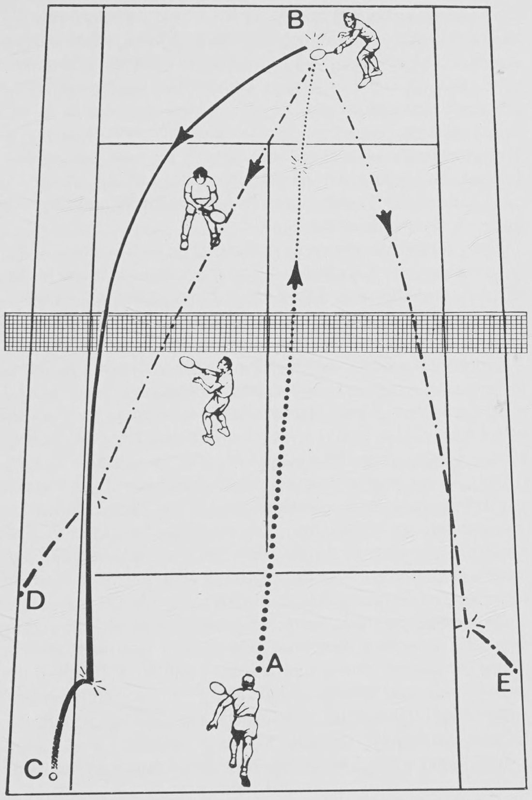
đối tác của bạn nên đứng khoảng đối diện với người lên lưới của Tandem, nhưng gần lưới hơn, để gây hấn nhiều hơn, vì anh ta không phải chịu mối đe dọa lốp bóng tương tự.
the Tandem server will be playing from diagonally opposite him and no longer straight opposite him. Your partner should stand about opposite the Tandem server’s net man, but closer to the net, for more aggression, because he hasn’t got the same lobbing threat against him.
Vì vậy, khi một cặp chuyên gia ổn định hiệu quả vào các vị trí Tandem chính xác chống lại bạn, không cần phải lo lắng.
So, when an expert pair settle efficiently into their proper Tandem positions against you, there’s no need for unease.
Thay vào đó, cả bạn và đối tác nên sẵn sàng tấn công, ý thức được những khó khăn tiềm tàng của người giao bóng Tandem ở phía “sai” đang bị hở của anh ta.
Instead, both you and your partner should be ready to attack, conscious of the Tandem server’s potential difficulties in that open “‘wrong”’ side of his.
Bây giờ, đến các cú trả giao bóng của bạn với tư cách là người nhận thuận tay trái. Người giao bóng giao bóng xuống trung tâm. Bạn không cần phải cố gắng thực hiện cú đánh hiệu quả được hiển thị ở BD trong Hình 27 ở trang 99. Đó là hướng sai cho cú trái tay xoáy trong của bạn. Nếu một cú đánh như vậy, từ bạn, luôn có vẻ làm trái bóng bay bổng lên cho một cú volley trong tầm với hoặc bay ra ngoài đường biên, đừng chơi nó. Thay vào đó, khi người giao bóng di chuyển để bao quát phía “sai” của sân, bạn nên nhắm vào nơi cú volley trái tay thấp hoặc chân của anh ta sẽ ở đó. Đây là hướng tự nhiên hơn đối với bạn và cho phép bạn kiểm soát tốt hơn. Hãy thực hiện cú đánh của bạn một cách ổn định (không có người lên lưới ở phía trước cản trở và bạn không cần phải thắng điểm trong một cú đánh) và, nếu bạn giữ bóng đủ thấp, bạn có thể hài lòng khi khiến người giao bóng đó phải đối mặt với thêm một cú half-volley trái tay nữa. Và nếu anh ta ngần ngại, đối tác của bạn ở vị trí tốt để tận dụng bất cứ điều gì cao và yếu.
Now, to your service returns as a left-handed receiver. The server serves down the center. You don’t have to attempt that effective shot shown at BD in Illus. 27 on page 99. It is in the wrong direction for your inside-spin backhand. If a shot like that, from you, always seems to float the ball up for a volley within easy reach or else floats it over the sidelines, don’t play it. Instead, as the server moves over to cover his ““wrong”’ side of the court you should aim for where his backhand low volley or his feet will be. This is a more natural direction for you and allows you to have better control. Play your shot steadily (there’s no net man in front of you to interfere and you haven’t got to win the point in one shot) and, if you happen to keep it low enough, you may have the satisfaction of giving that server yet one more backhand half-volley to contend with. And if he’s hesitant with it, your partner is well placed to take advantage of anything high and weak.
Ở điểm tiếp theo, người giao bóng có thể quyết định giao bóng rộng sang phía thuận tay của bạn, lập luận rằng cú thuận tay tốt nhất của bạn được thực hiện với một hành động kéo chéo sân và do đó sẽ nằm trong tầm với của anh ta; từ cú trả bóng của bạn, anh ta sau đó sẽ thực hiện một cú volley đầu tiên thoải mái và sâu về phía trái tay đang bị hở của bạn và tiến vào để tạo thành rào chắn của mình. Đó là những gì anh ta lập luận.
On the next point, the server may decide to serve wide to your forehand, reasoning that your best forehand is made with a pulled crosscourt action and therefore will be well within his reach; from your return he will then play a comfortable first volley deep to your exposed backhand and close in to form his barrier. That’s what he reasons.
Ồ, đừng cố đánh trái bóng ra khỏi tầm với của anh ta bằng cách trượt cú thuận tay sang phía đối diện nếu điều đó không tự nhiên và an toàn. Bạn có lẽ sẽ đánh bóng quá cao hoặc đưa nó ra ngoài đường biên, hoặc cả hai. Thay vào đó, hãy tiếp tục và thực hiện cú thuận tay đặc trưng: kéo, đánh từ ngoài bóng, topspin, nhanh, chéo sân. Nhưng khi đánh từ bên ngoài đường biên đánh đôi, hãy đánh nó qua khu vực lưới bên ngoài đường biên này để nằm ngoài tầm với của người giao bóng, và hãy để cú tiếp xúc ngoài-bóng đóng vai trò như một biện pháp an toàn trong việc uốn trái bóng vào sân. Xem Hình 36 ở trang 127, hiển thị một người thuận tay phải thực hiện điều này với trái tay của họ.
Well, don’t try to hit the ball out of his reach by sliding your forehand away to your off side if it’s not natural and safe. You will probably either hit it too high or waft it over the sideline, or both. Instead, carry on and play your special pulled, outside- the-ball, topspin, fast, crosscourt type forehand. But in hitting it from outside the doubles sideline, hit it over the net area outside this sideline to be wide of the server, and let your outside-the-ball contact act as a safety measure in curving the ball into court. See Illus. 36 on page 127, showing a right- hander doing this with his backhand.
Đây là một cú đánh tự nhiên cho bạn và do đó an toàn hơn và nhanh hơn việc đẩy bóng và cố gắng lái nó ra xa người giao bóng.
This is a natural shot for you and hence is safer and faster than pushing at the ball and trying to steer it wide of the server.
Nếu người giao bóng giao bóng thẳng vào bạn, hãy thực hiện cú thuận tay và cố gắng tự giải thoát mình khỏi rắc rối thay vì chơi một cú trái tay phòng thủ. Nhắm, với thật nhiều topspin, vào phía trái tay thấp của anh ta.
If the server serves straight at you, make a forehand of it and try to hit yourself out of trouble rather than play a defensive backhand. Aim, with a lot of topspin, for his low backhand side.
Tóm lại, hãy luôn cố gắng biến Tandem Chống lại Người thuận tay trái thành Người thuận tay trái Chống lại Tandem. Nếu bạn là một người chơi đánh đôi thuận tay trái giỏi, bạn không thể để một đội hình nhân tạo như Tandem kìm hãm khả năng của mình.
In short, always try to turn Tandem Against Left-hander into Left-hander Against Tandem. If you’re a good left-handed doubles player you can’t let an artificial formation like Tandem cut you down to size.
Khía cạnh cuối cùng là một cặp thực sự giỏi sẽ không chơi Tandem chống lại bạn một cách nhất quán, khiến bạn ổn định vào một tình huống thoải mái khi không có người lên lưới đối diện với các cú trả giao bóng của bạn. Việc họ thay đổi từ đội hình này sang đội hình khác và ngược lại chắc chắn sẽ khiến bạn bất ổn nếu bạn phải chơi những cú đánh tự nhiên một phút và không tự nhiên vào phút tiếp theo. Những cú trả bóng được gợi ý ở trên cho phép bạn chơi tự nhiên mọi lúc, cụ thể là với cú thuận tay chéo sân và cú trái tay underspin sang phía đối diện.
The last aspect is that a really good pair will not play Tandem against you consistently, letting you settle into a happy situation of having no net man opposite your service returns.
Một người hoài nghi có thể nói với bạn rằng tất cả những cuộc thảo luận trên sẽ sụp đổ nếu cặp Tandem thực hiện kỹ thuật kéo (scissors). Nhưng tại sao anh ta lại giới hạn lời buộc tội đó cho Tandem? Nó cũng sẽ áp dụng
Their changing from one formation to another and back again would be bound to unsettle you if you had to play natural strokes one minute and unnatural ones the next. The returns suggested above allow you to play naturally at all times, namely, with your crosscourt forehand and your underspin backhand to the off side.
Kéo Tandem (Tandem Scissors)Tandem Scissors
A Doubting Thomas may tell you that all the above dis- cussion comes unstuck if the Tandem pair scissors. But why should he limit such an accusation to Tandem? It would apply
tương tự đối với các cú trả giao bóng chống lại một cặp giao bóng từ đội hình chính thống và sau đó thực hiện kéo.
equally to service returns against a pair who served from the orthodox formation and then scissored.
Kỹ thuật kéo thành công khi đó là một động tác gây bất ngờ và khi cú trả giao bóng bị yếu. Đối với lối chơi chung chống lại tiêu chuẩn trả bóng thường gặp trong tennis Lối chơi Lên lưới, khả năng volley của cặp giao bóng sẽ bị cản trở nếu họ cố gắng thực hiện nó trong khi đang kéo loạn xạ khắp nơi. Phải là như vậy, nếu không kỹ thuật kéo sẽ liên tục được các nhà vô địch sử dụng. Dù sao thì, hãy tự mình thử nghiệm.
Scissoring succeeds when it is a surprise move and when the service return is poor. For general play against the normal standard of returns encountered in Net Game tennis, the serving pair’s volleying is hampered if they’re trying to play it in the midst of scissoring all over the place. It must be so, or scissoring would continually be used by the champions. Any- way, try it out for yourself.
BỨC TRANH TỔNG THỂ VỀ ĐÁNH ĐÔI LỐI CHƠI LÊN LƯỚIOVERALL PICTURE OF NET GAME DOUBLES
BỨC TRANH TỔNG THỂ VỀ ĐÁNH ĐÔI LỐI CHƠI LÊN LƯỚI Cơ sở của chiến thuật Lối chơi Lên lưới của bạn là tạo ra một rào chắn trên lưới. Điều này đặt các cú volley và đập bóng của bạn đối lập với những cú đánh nền và lốp bóng của đối phương. Kết quả cho thấy các cú volley và đập bóng thường giành chiến thắng. Vì vậy, vấn đề chỉ còn là cách bạn tạo ra rào chắn trên lưới của mình.
The basis of your Net Game tactics is to form a net barrier.
Giao bóng Khi giao bóng, bạn đặt một người ở lưới, nhằm bao quát đường biên và bóng bổng của anh ta và bảo vệ đầy đủ khu vực trung tâm. Người giao bóng hoàn thiện rào chắn trên lưới theo hai giai đoạn, ổn định bản thân trước khi thực hiện cú volley đầu tiên từ bên trong vạch giao bóng nếu có thể, và sau đó tiến lên gần hơn sau đó.
This pits your volleys and smashes against your opposition’s groundstrokes and lobs. Results have shown that the volleys and smashes mostly win. It thus becomes merely a matter of how you form your net barrier.
Giao bóngServing
Ở mức độ chơi Lên lưới thấp, người lên lưới thường bảo vệ đường biên của mình và bỏ qua hai trách nhiệm còn lại. Về bóng bổng, anh ta đập những quả lốp bóng trong tầm với, và lối chơi trung tâm của anh ta chủ yếu bao gồm việc đánh chặn thỉnh thoảng. Đứng gần lưới, anh ta hái quả khi đối tác giao bóng tốt, nhưng hỗ trợ rất ít khi đối tác không làm được.
When serving you place one man at the net, intended to cover his sideline and overhead and give adequate protection to the center. The server completes the net barrier in two stages, steadying himself before making his first volley from inside the service line if he can, and then following in closer after it.
Người giao bóng thường có cú giao bóng nhanh và tốt, nếu không anh ta sẽ không chơi Lối chơi Lên lưới mà không có nhiều ý niệm về chiến thuật của nó. Anh ta có xu hướng “lao” lên lưới và, giống như đối tác của mình, làm tốt ở những điểm mà anh ta giao bóng tốt. Khi người nhận kiểm soát trái bóng cho cú trả bóng, cặp giao bóng trở nên dễ bị tổn thương.
At a low standard of Net Game play, the net man usually protects his sideline and neglects his other two responsibilities.
Overhead, he smashes lobs within reach, and his center play mainly consists of making interceptions now and then. Standing close to the net, he cashes in when his partner serves well, but gives little support when he does not.
The server usually has a good fast serve, or he wouldn’t be playing the Net Game without much idea of its tactics. He tends to “‘rush’’ the net and, like his partner, does well on those points where he has served well. When the receiver has control of the ball for his return, the serving pair is vulnerable.
Ở mức độ cao hơn, người lên lưới nhận ra vai trò then chốt của mình là bao quát đường biên, bóng bổng và trung tâm, và anh ta chọn một vị trí trên lưới phù hợp để giúp mình thực hiện điều đó. Người giao bóng kết hợp hành động giao bóng với việc tiếp cận lưới, và chủ yếu giao bóng với ý định thiết lập một cú volley đầu tiên thoải mái. Anh ta đưa được nhiều cú giao bóng một vào cuộc. Hai cầu thủ thắng các game giao bóng của họ như một cặp. Họ là một bức tường gạch chống lại các cặp yếu hơn và là một hạt dẻ rất khó nhằn đối với các cặp tốt hơn. Rào chắn trên lưới của họ hiếm khi bị phá vỡ; từ điểm đầu tiên của một pha bóng đến điểm cuối cùng, mỗi cầu thủ bao quát bóng bổng của chính mình và hiếm khi bị lốp bóng qua đầu.
At a higher standard, the net man recognizes his key role of covering sideline, overhead and center, and he takes up a suitable net position to help himself fulfil it. The server com- bines his service action with his net approach, and mainly serves with the intention of setting up a comfortable first volley. He gets a lot of first serves into play. The two players win their serving games as a pair. They’re a brick wall against lesser pairs and a very tough nut against better ones. Their net barrier is seldom broken; from the first point of a rally to the last each player covers his own overheads and is rarely lobbed over.
Đây là những chiến thuật cơ bản cho giao bóng Lối chơi Lên lưới, mặc dù nếu bạn chơi thường xuyên với cùng một đối tác, bạn sẽ có những bổ sung riêng. Khi làm vậy, hãy lưu ý rằng các tác dụng phụ không được can thiệp vào cấu trúc cơ bản. Ví dụ, khi một trong hai bạn bất ngờ bị lốp bóng qua đầu, có thể dễ dàng hơn cho đối tác còn lại xoay nửa người và đuổi theo bóng theo đường chéo, thay vì để đối tác mắc lỗi phải quay toàn bộ và chạy thẳng ngược lại sau bóng. Bạn nên làm điều này như một sự bao quát cuối cùng trong một số trường hợp, nhưng nếu bạn biến nó thành phương pháp bình thường, tác dụng phụ thực tế sẽ là cả hai bạn sẽ bị lốp bóng qua đầu thường xuyên hơn, và đó sẽ là một tổn thất thuần túy.
These are the basic tactics for Net Game serving, though if you play regularly with the same partner you will make your own additions. In doing so, watch that side-effects don’t interfere with the basic structure. For example, when one of you is unexpectedly lobbed over, it may be easier for the other partner to half turn and chase the ball diagonally, rather than for the guilty partner to make a complete turn-round and run straight back after it. You should do this as a last-ditch cover on occasion, but if you make it your normal method the practical side-effect will be that both of you will be lobbed over more often, and that would be a net loss.
Một ví dụ khác là các tín hiệu. Điều này có vẻ là lời cuối cùng cho một sự kết hợp tinh vi, nhưng trong thực tế giá trị của chúng là đáng nghi ngờ. Ý tưởng là người lên lưới ra tín hiệu giao bóng ở đâu hoặc giao bóng như thế nào để anh ta có thể đánh chặn bất ngờ. Nhưng tại sao phải bận tâm với vở kịch này khi bạn có thể dễ dàng thì thầm với đối tác giao bóng, “Giao thẳng vào anh ta và tôi sẽ băng qua,” hoặc bất cứ điều gì tương tự? Các tín hiệu phút cuối gửi đến một người giao bóng không thể phản hồi là một thiết bị nguy hiểm. Bạn có thể ra tín hiệu cho một kiểu giao bóng ngay khi đối tác giao bóng của bạn cảm thấy muốn giao bóng kiểu khác. Dù sao thì việc sắp đặt trước có nghĩa là cam kết trước, và nếu mọi thứ không diễn ra chính xác, đội hình của bạn sẽ trở thành một mớ hỗn độn. Không ai có thể chấp nhận điều đó.
Another example is signals. These may seem to be the last word for a sophisticated combination, but in practice their value is doubtful. The idea is that the net man signals where to serve or how to serve so that he can make a surprise inter- ception. But why bother with this pantomime when you can just as easily mutter to your serving partner, “Straight at him and I’ll go across,” or whatever it is? Last-minute signals to a server who can’t answer are a dangerous device. You might signal for one type of serve just when your serving partner felt like serving something else. Anyway pre-arrangement means pre-committal, and if things don’t fall exactly into place your formation becomes a shambles. No one can afford that.
Xác nhận từ Đỉnh cao Giải quyết vấn đề tín hiệu trước, các cặp vô địch thế giới không chơi tennis theo kiểu cam kết. Mặt khác, họ không chơi tennis hời hợt và chỉ dựa vào những cú đánh hủy diệt mà chúng ta thấy họ tạo ra. Về cơ bản, họ chơi những chiến thuật giống như chơi cờ được hiển thị trong Hình 24 ở trang 92, từ đó họ phát triển thành lối chơi rực rỡ.
Confirmation from the Top Settling the matter of signals first, world champion pairs don’t play committed tennis. On the other hand, they don’t play haphazard tennis and rely solely on the devastating strokes we see them produce. Basically they play the chess-like tactics shown in Illus. 24 on page 92, from which they branch out into brilliant play.
Với chiến thuật được phát triển đầy đủ, điều hiển nhiên là bước tiến tiếp theo của bạn sẽ được thực hiện thông qua các cú đánh. Những cú đánh tốt hơn tự thân chúng nâng tầm lối chơi đánh đôi của bạn, như mọi người đều biết, nhưng đồng thời chúng hỗ trợ bạn trong việc thực hiện chiến thuật. Lấy các cú giao bóng của nhà vô địch làm ví dụ, những cú giao bóng này đe dọa aces vung rộng ra ngoài thuận tay đến mức người nhận phải đề phòng điều này bằng cách để hở trái tay nhiều hơn mức họ muốn. Vì vậy, bạn sẽ nhận thấy cú giao bóng hết lần này đến lần khác tìm đến trái tay, và người giao bóng thực hiện hầu hết các cú volley đầu tiên chống lại những cú trả bóng trái tay. Đó có thể là cú đánh tốt hơn của người nhận nhưng trong một cú đánh thì ít nguy hiểm hơn cú thuận tay của anh ta. Nhà vô địch tự hào về lối chơi tennis theo tỷ lệ phần trăm, vì vậy anh ta thích thực hiện một cú volley đầu tiên chắc chắn và kiểm soát cuộc chơi từ đó. Đó chính là chiến thuật của bạn. Anh ta thực hiện chúng tốt hơn, thông qua một cú giao bóng tốt hơn.
With your tactics fully developed, it follows that your next advance will be made through your strokes. Better strokes lift your doubles play in themselves, as everyone knows, but at the same time they aid you in playing your tactics. Taking champions’ serves as an example, these so greatly threaten aces swinging wide of the forehand that the receiver has to guard against this by exposing his backhand more than he would like to. Thus you will notice serve after serve finding the backhand, and the server playing almost all his first volleys against backhand returns. They may be the receiver’s better shot but for one hit are less dangerous than his forehand. The champion prides himself on playing percentage tennis, so he prefers to play a certain first volley and to control the game from there. Those are your tactics. He implements them better, through a better serve.
Chúng ta chủ yếu đề cập đến cú giao bóng một của các nhà vô địch, khẩu pháo lớn ấn tượng, nhưng bạn có lẽ đã đạt đến giới hạn của mình với cú đánh này. Thật đáng mừng khi biết rằng nhiều chuyên gia đánh giá tennis đã nói rằng sự khác biệt lớn nhất về hiệu quả cú đánh giữa người chơi bình thường và nhà vô địch nằm ở cú giao bóng hai. Việc cải thiện cú giao bóng hai của chính bạn chắc chắn nằm trong khả năng của bạn.
We’ve mainly referred to the champions’ first serve, the im- pressive big gun, but you may already have reached your limit with this shot. It’s cheering news to know that many a sound judge of tennis has said that the greatest difference in stroke effectiveness between player and champion lies in the second serve. It must be within your power to improve your own second serve.
Tất nhiên, không chỉ là giao bóng. Cách tiếp cận lưới của nhà vô địch nhanh chóng và phối hợp, và anh ta khiến hầu hết các cú volley đầu tiên trông thật thoải mái, ngay cả những cú hóa ra là half-volley. Sẽ dễ dàng hơn để thấy họ làm điều đó như thế nào nếu bạn có thể xem
Of course, it’s not only the serve. The champion’s net ap- proach is swift and co-ordinated, and he makes almost all his first volleys look comfortable, even those turning out to be half-volleys. It is easier to see how they do it if you can watch
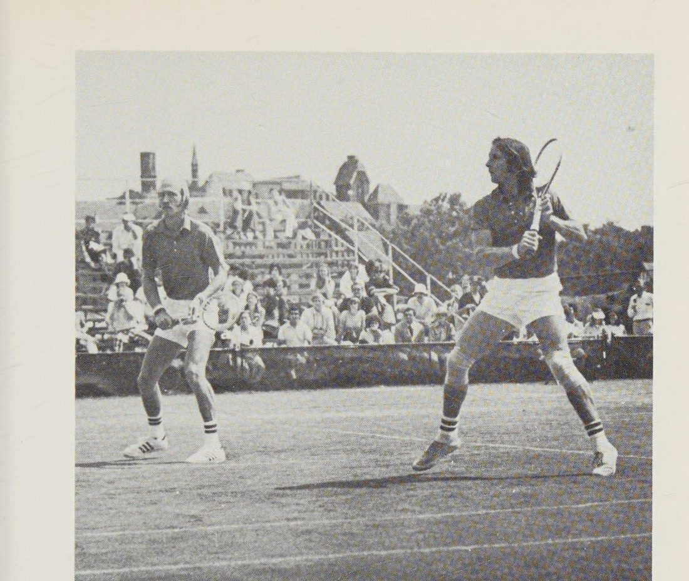
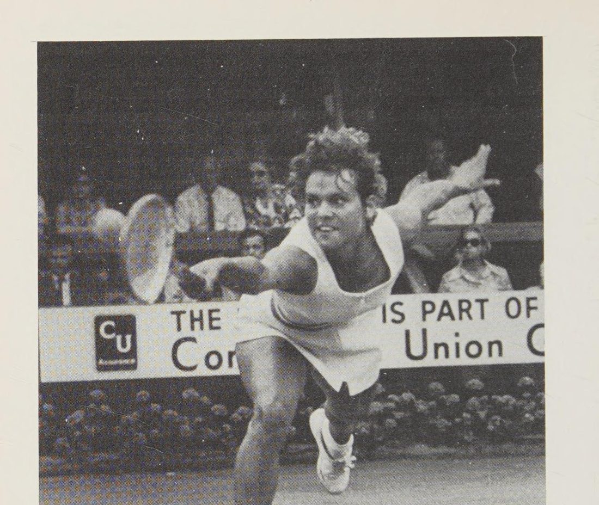
họ trực tiếp, và bạn có thể quan sát trên TV nếu bạn nhìn kỹ phần chơi này của họ. Nếu bạn có thể xem tennis, bạn có thể chơi theo cách tương tự.
them live, and you can observe it on TV if you’re looking closely for this part of their play. If you can see tennis, you can play in a similar way.
Chuyển từ các cú đánh của nhà vô địch sang vị trí và phản xạ của họ, bạn có thể nhận thấy rằng trong đánh đôi đẳng cấp thế giới, người lên lưới thường đứng rất rộng so với đường biên, để bao quát trung tâm, nhưng anh ta đứng gần lưới hơn mức chúng ta đã khuyến nghị. Anh ta volley quyết liệt hơn từ đó, phản xạ nhanh bù đắp cho thời gian ngắn hơn có được để thực hiện cú đánh. Vị trí “quá gần” khiến anh ta có vẻ dễ bị tổn thương trước một cú lốp bóng chuẩn xác, nhưng một lần nữa phản xạ nhanh đã bù đắp. Những người lên lưới ở mọi trình độ của đánh đôi Lối chơi Lên lưới phải bao quát những cú lốp bóng của chính mình; họ có thể đứng bất cứ đâu họ muốn; nhưng họ phải bao quát được chúng.
Turning from champions’ strokes to their position and reflexes, you may notice that in world class doubles the net man usually stands well wide of the sideline, to cover the center, but he stands closer to the net than we have been advocating. He volleys more aggressively from there, fast reflexes making up for the shorter time available to play his shot. His “‘too close”
Đừng nhầm lẫn về phần cuối đó. Nếu một người lên lưới nhà vô địch bị lốp bóng qua đầu, anh ta đã làm hỏng cả đội với một cú đánh hỏng lớn như bất kỳ ai khác. Anh ta sẽ quay lại trong nháy mắt và sẽ tâng trái bóng lên trời bằng một cú lốp bóng phòng thủ để giành được nhiều thời gian nhất có thể, hoặc anh ta sẽ thực hiện một cú drive tuyệt vời khi xoay người—nhưng anh ta đang đối đầu với một vài người chơi lưới giỏi nhất thế giới và khả năng anh ta thoát khỏi sai lầm sơ đẳng của mình là rất thấp. Đó là cách những cú break giao bóng được tạo ra, và đẳng cấp của đối thủ không quan trọng.
position makes him appear vulnerable to a well played lob, but again his fast reflexes compensate. Net men of all standards of Net Game doubles must cover their own lobs; they can stand where they like; but they must cover them.
Liên quan đến vị trí đứng rất rộng của người lên lưới, ngoài phản xạ nhanh còn có hai lý do liên kết với nhau. Thứ nhất, những người nhận bóng đẳng cấp cao chơi tennis theo tỷ lệ phần trăm: với những cú trả giao bóng của họ và điều này có nghĩa là họ gần như phớt lờ người lên lưới đã ở vị trí sẵn sàng, và thay vào đó, liên tục tấn công người giao bóng đang tiến lên dễ bị tổn thương hơn. Thứ hai, và bổ trợ, vì những người nhận bóng cho phép người lên lưới đứng rộng, anh ta chắc chắn sẽ làm vậy—để bảo vệ trung tâm một cách đầy đủ và từ đó hỗ trợ đối tác giao bóng của mình chống lại các cuộc tấn công của người nhận bóng.
Make no mistake about that last part. If a champion net man gets lobbed over, he has let the side down with as big a thump as anyone else. He’ll be back in a flash and he’ll hoist the ball to the skies with a defensive lob to gain the most time possible, or he’ll make a marvelous drive on the turn—but he’s up against a couple of the world’s best net players and the odds are low that he’ll get out of his elementary mistake. Of such stuff are service breaks made, and the class of the company matters not.
Một người bình thường có thể áp dụng vị trí đứng gần và rất rộng của các nhà vô địch nếu anh ta biết mình đang làm gì. Nếu anh ta sao chép một cách mù quáng, chỉ vì anh ta thấy một nhà vô địch sử dụng, anh ta có khả năng vừa bị đánh ra khỏi sân vừa bị lốp bóng qua đầu.
Regarding the net man’s very wide position, in addition to quick reflexes there are two inter-connected reasons for this.
Quan sát các nhà vô địch một cách phê phán, bạn cũng có thể nhận thấy rằng họ dường như đánh hỏng nhiều cú giao bóng một hơn bạn mong đợi. Có lẽ chúng ta kỳ vọng quá nhiều. Bạn cũng biết đó là một lỗi không trực tiếp mất điểm, và rằng khẩu pháo lớn của họ có lẽ đáng để mạo hiểm thỉnh thoảng, và rằng họ có những cú giao bóng hai rất tốt dự phòng—nhưng dù vậy bạn vẫn ngạc nhiên khi thấy họ đánh hỏng nhiều quả bóng một hơn một người giao bóng chơi Lối chơi Lên lưới “tiêu chuẩn cao” có thể cho phép.
First, top class receivers play percentage tennis: with their service returns and this means they virtually ignore the already positioned net man and, instead, consistently attack the more vulnerable incoming server. Second, and complementary, since the receivers allow the net man to stand wide he certainly does so—to protect the center fully and thus assist his serving partner in withstanding the receiver’s attacks.
Điều này có nghĩa là cuối cùng chúng ta đã tìm thấy một trường hợp mà các nhà vô địch đi chệch khỏi những chiến thuật tốt nhất cho những người chơi trình độ cao? Không, không phải vậy. Trong game cuối cùng của một trận đấu sít sao, bạn sẽ thấy cặp giao bóng tập trung cao độ vào nhiệm vụ của mình và chốt mọi thứ bằng cách giao bóng một an toàn vào cuộc, để họ không bị tấn công, và thiết lập các cú volley đầu tiên an toàn.
A lesser mortal can adopt the champions’ closer and very wide net position if he knows what he’s about. If he copies it
Điều này có nghĩa là cặp nhận bóng có thể trông cậy vào điều này và đứng gần hơn để tấn công tốt hơn? Có lẽ, nhưng một lần nữa họ có thể bị ace vì sự nỗ lực đó. Nhà vô địch sẽ luôn là nhà vô địch.
Nhận bóng Chủ đề của chúng ta vẫn là cách bạn tạo ra rào chắn trên lưới.
Nhận bóng chống lại một cặp Một trên Một dưới, bạn có thể tạo rào chắn trên lưới gần như theo ý muốn. Hãy đứng ngay sau trái bóng để đảm bảo tránh được người lên lưới, thay vì lấy bóng ở điểm cao, và theo cú trả bóng của bạn để gia nhập cùng đối tác tại lưới. Chỉ những cú giao bóng đủ khó để làm bạn mất thăng bằng mới có thể ngăn bạn giành được vị trí này trực tiếp từ cú trả giao bóng của mình.
Nếu bạn coi cú trả bóng là một cú tiếp cận (approach shot), bạn sẽ chơi nó hiệu quả hơn. Bạn nên tiến thêm một bước và coi cú tiếp cận này và cú volley đầu tiên sau đó là một cặp cú đánh thay vì hai cú đánh riêng biệt, vì điều này sẽ khiến bạn di chuyển vào vị trí tốt hơn. Khả năng cao là sẽ có một cú volley đầu tiên cho bạn thực hiện, vì người giao bóng trả bóng sẽ thực tế luôn chọn tấn công bạn, với tư cách là người nhận bóng đang tiến lên, thay vì đối tác của bạn đã đứng sẵn ở lưới.
blindly, just because he’s seen a champion use it, he’s likely to be both sidelined and lobbed over.
Khi bạn thực hiện cặp cú đánh này hết lần này đến lần khác, nghĩa là đối thủ không thể ngăn bạn làm điều này, bạn đang chiến thắng.
Watching champions critically, you may also notice that they seem to miss more first serves than you’d expect. Perhaps we expect too much. You also know it’s an error that doesn’t directly cost a point, and that their Big Gun is probably worth a risk now and then, and that they have very good second serves behind them in reserve—but just the same you're surprised to see they miss more first balls than a server playing tight “high-standard’”” Net Game doubles could afford.
Chống lại những người giao bóng Lối chơi Lên lưới ít kinh nghiệm, không quá khó để giành được vị trí trên lưới đối lập với họ. Bất cứ khi nào bạn xử lý một cú giao bóng đủ tốt để buộc người giao bóng đang tiến lên phải volley bóng bổng lên, và chính bạn vẫn giữ được thăng bằng, bạn có thể tiến lên. Một lần nữa, việc đứng sau trái bóng để đảm bảo chắc chắn quan trọng hơn là lấy bóng ở điểm cao.
Does this mean that at last we’ve found an instance where the champions depart from the best tactics for high-standard players? No, it doesn’t. In the final game of a close match you will see the serving pair buckle down to their task and close things off by hitting first serves safely into play, so they can’t be attacked, and setting up safe first volleys.
Đôi khi bạn thậm chí có thể thay thế rào chắn trên lưới của họ bằng cách lốp bóng qua đầu một người lên lưới không cảnh giác.
Does this mean the receiving pair can count on this and stand in closer to attack better? Perhaps, but then again they may get aced for their pains. Champions will be champions.
Nhận bóngReceiving
Chống lại những người giao bóng Lối chơi Lên lưới trình độ cao, bạn không thể kỳ vọng sử dụng cú lốp bóng qua đầu người lên lưới như một cú trả giao bóng nữa, vì anh ta đã bịt kín lỗ hổng đó. Tương tự, khả năng tiếp cận lưới và volley của người giao bóng trở nên quá tốt để một cú trả giao bóng thả bóng rơi có thể cung cấp một sự tiếp cận lưới nữa.
Our topic is still how you form your net barrier.
Đứng lùi lại trước những cú giao bóng nhanh và sau đó đánh một cú thả bóng rơi tốn quá nhiều thời gian, bất kể bạn đánh mạnh thế nào. Đến lúc đó đối thủ của bạn đã ở vị trí quá tốt và, sau cú volley đầu tiên, rào chắn trên lưới của họ trông như bất khả xâm phạm.
Receiving against a One Up One Back pair you can form a net barrier almost at will. Get right behind the ball to ensure avoiding the net man, rather than take it on the rise, and follow your return in to join your partner at the net. Only serves difficult enough to unbalance you can prevent you from gaining this position directly from your service return.
Nếu bạn muốn tạo ra rào chắn trên lưới của mình, giờ đây điều thiết yếu là phải lấy bóng ở điểm cao (on the rise). Một cuộc đấu tồn tại giữa bạn và người giao bóng về việc hình thành rào chắn trên lưới của bạn, cả hai đều có những hạn chế về chiến thuật. Trước khi thực hiện cú volley đầu tiên, anh ta cần ổn định bản thân trong quá trình tiếp cận, vì khi đang chạy anh ta không thể bao quát sân rộng cũng như volley hiệu quả, và anh ta không thể tiến vào quá gần nếu không bị quá sát và cho phép bạn có khoảng trống để lốp bóng qua đầu anh ta. Hạn chế của bạn là trong nỗ lực lấy bóng ở điểm cao ngày càng sớm để đánh bại anh ta trước, bạn sẽ hoặc rơi vào giai đoạn đánh hỏng hoặc bạn sẽ bị cú vô-lê đầu tiên cho bạn phải đánh, bởi vì người giao bóng đang trả bóng gần như luôn chọn tấn công bạn, với tư cách là người nhận đang tiến vào, hơn là tấn công đối tác của bạn vốn đã đứng sẵn ở lưới. Khi bạn đánh cặp cú đánh này hết lần này đến lần khác, nghĩa là đối thủ không thể ngăn bạn làm điều đó, thì bạn đang thắng.
If you regard your return as an approach shot you will play it more effectively. You should go a step further and regard this approach shot and your first volley after it as a pair of shots rather than two separate shots, because this will make you move into position better. Odds are good that there will be a first volley for you to play, because the returning server will practically always choose to attack you, as the incoming re- ceiver, rather than your partner already stationed at the net.
Chống lại những người giao bóng Lối chơi Lên lưới ít kinh nghiệm, không quá khó để giành được một vị trí trên lưới đối lập với họ. Mỗi khi bạn xử lý một cú giao bóng đủ tốt để buộc người giao bóng đang tiến vào phải vô-lê bổng lên, và bản thân bạn vẫn giữ được thăng bằng, bạn có thể tiến vào theo. Một lần nữa, điều quan trọng hơn là đứng thật tốt phía sau quả bóng để đảm bảo chắc chắn hơn là đánh bóng khi bóng đang nổi lên. Đôi khi bạn thậm chí có thể thay thế rào chắn lưới của họ bằng cách lốp bóng qua đầu một người đứng lưới mất cảnh giác.
When you play this pair of shots time and again, meaning your opponents can’t prevent you from doing this, you’re winning.
Chống lại những người giao bóng Lối chơi Lên lưới đẳng cấp cao, bạn không thể trông mong sử dụng cú lốp qua đầu người đứng lưới làm cú trả giao bóng nữa, bởi vì anh ta đã bịt kín lỗ hổng đó. Tương tự, khả năng tiến vào lưới và vô-lê của người giao bóng trở nên quá tốt để một cú trả giao bóng bóng rơi có thể tạo ra một cơ hội tiến vào lưới nữa. Đứng lùi sâu trước những cú giao bóng nhanh rồi đánh một cú bóng rơi mất quá nhiều thời gian, cho dù bạn đánh mạnh đến đâu. Đến lúc đó đối thủ của bạn đã ở vị trí quá tốt và, sau cú vô-lê đầu tiên, rào chắn lưới của họ trông như bất khả xâm phạm.
Against Net Game servers with little experience, it is not overly difficult to gain a net position in opposition to theirs.
Nếu bạn muốn tạo rào chắn lưới của mình thì giờ đây điều thiết yếu là phải đánh bóng khi bóng đang nổi lên. Một cuộc đấu diễn ra giữa bạn và người giao bóng về việc hình thành rào chắn lưới của bạn, cả hai đều có những hạn chế chiến thuật. Trước khi thực hiện cú vô-lê đầu tiên, anh ta cần ổn định bản thân trong khi tiến vào, bởi vì khi đang chạy anh ta không thể bao quát sân rộng như vậy cũng không thể vô-lê hiệu quả như vậy, và anh ta không thể tiến thẳng vào mà không bị quá gần và để bạn có khoảng trống để lốp bóng qua đầu anh ta. Hạn chế của bạn là khi cố gắng đánh bóng khi bóng đang nổi lên ngày càng sớm hơn để nhanh hơn anh ta, bạn sẽ hoặc bước vào giai đoạn đánh trượt bóng hoặc bạn sẽ bị
Whenever you have handled a serve well enough to force the incoming server to volley up, and have remained in balance yourself, you can follow in. Again it is more important to get well behind the ball for certainty than to take it on the rise.
Sometimes you can even supplant their net barrier by lobbing over an unwary net man’s head.
Against high standard Net Game servers you can’t expect to use the lob over the net man’s head as a service return any more, because he’s closed that loophole. Similarly the server’s net approach and volleying ability become too good for a dropping ball service return to provide a net approach any longer. Standing back against fast serves and then hitting a dropping ball takes too much time, no matter how hard you hit. By then your opponents are too well positioned and, after the first volley, their net barrier looks impregnable.
If you’re to form your net barrier it’s now essential to take the ball on the rise. A duel exists between you and the server over the formation of your net barrier, both of you having tactical limitations. Before making his first volley he needs to steady himself in his approach, because on the run he can’t cover the court as widely nor volley as effectively, and he cannot come right in without being too close and allowing you room to lob over his head. Your limitations are that in trying to take the ball on the rise earlier and earlier to beat him to the punch, you will either enter the mis-hitting stage or you will be
đứng quá gần đến mức bạn cho phép anh ta có khoảng trống để giao ace. Xem Hình 39.
standing in so close that you allow him room to ace you.
Bạn cũng cần giữ cú trả bóng thấp, nhưng phải cẩn thận để không lặp lại sai lầm của người mới bắt đầu là đánh bóng vào lưới mà không bị ép buộc. Topspin mang lại cho bạn cơ hội tốt nhất ở đây, và bạn có thời gian để sử dụng nó với cú thuận tay. Nếu bạn chưa bao giờ tự tin với việc tiếp xúc bóng đang bay lên vì trái bóng bay vút lên và ra xa ngoài tầm kiểm soát, các khái niệm hiển thị ở Hình 40 có thể giúp ích.
See Illus. 39.
Cho đến nay mọi thứ vẫn ổn, nhưng đến giai đoạn này, người giao bóng đang loại bỏ cú trả thuận tay của bạn ra khỏi cuộc chơi và giao bóng vào trái tay của bạn, nơi bạn có thể chỉ có thời gian để thực hiện một cú slice. Đặc điểm chính của slice là sự an toàn, nhưng ngay cả ưu điểm đó cũng có thể biến mất trong cuộc đối đầu ngày càng khốc liệt với người giao bóng đối phương. Vì anh ta gặp ít khó khăn trong việc volley cú slice của bạn, bạn cố gắng đánh nó thấp hơn và thấp hơn hoặc tinh tế hơn, cho đến khi bạn mắc lỗi. Nếu slice là tất cả những gì bạn cảm thấy mình có thời gian để thực hiện với một quả bóng đang bay lên, đặc biệt là từ sân phải, bạn sẽ phải tiếp tục với nó. Tuy nhiên, nhiều người chơi giỏi thực hiện các cú trả giao bóng trái tay topspin lấy bóng ở điểm cao từ cả sân trái hoặc sân phải và nếu bạn muốn đứng trong số họ, những điểm sau đây có thể giúp ích.
You also need to keep your return low, but must beware of reverting to the beginner’s mistake of hitting balls into the net without being forced to. Topspin gives you your best chance here, and you have time to use it with your forehand. If you have never been confident with your rising-ball contact because the ball flies up and away out of control, the concepts shown at Illus. 40 may help.
Đầu tiên, không nhất thiết là chơi một quả bóng đang bay lên với cú slice dễ hơn so với cú đánh topspin. Thông thường bạn có thể đánh một cú drive trái tay cuối sân dài với topspin và một cú trả giao bóng lấy bóng ở điểm cao với cú slice trái tay ngắn hơn, nhưng đối với một quả bóng đến rất sớm, chẳng hạn như một cú half-volley trái tay, bạn thường sử dụng kiểu cuộn (roll) và không bao giờ dùng underspin. Bạn có thể phản đối ở đây rằng không có vung vợt (backswing) trong một cú half-volley, vốn tự tạo ra động lực của chính nó, nhưng sự phản đối của bạn dẫn trực tiếp đến điểm thứ hai: rằng bạn chỉ cần một cú vung vợt rất ngắn để thực hiện một cú trả giao bóng trái tay lấy bóng ở điểm cao. Với cùng một cú vung vợt (ngắn), trái tay của bạn có tốc độ hơn thuận tay. Thuận tay của bạn là
So far so good, but by this stage along the way the server is cutting your forehand return out of the game and serving to your backhand, where you may have time only to make a slice.
The main feature of a slice is its safety, but even that virtue may disappear in your ever-sharpening duel with the opposing server. As he has little trouble in volleying your slice, you try to play it lower and lower or finer and finer in touch, until you make mistakes with it. If a slice is all you feel you have time for with a rising ball, particularly from the right court, you will have to continue with it. However, many good players play topspin rising-ball backhand service returns from either left or right court and if you wish to be among their number the following points may help.
First, it is not necessarily easier to play a rising ball with a slice than with a topspin stroke. You may normally play a long backhand baseline drive with topspin and a rising-ball service with a shorter backhand slice, but for a very early ball, such as a backhand half-volley, you often use roll and never under- spin. You may object here that no backswing is involved with a half-volley, which provides its own momentum, but your objection leads directly to the second point: that you need only a very short backswing to make a rising-ball backhand return of service. For the same (short) backswing, your back- hand has more pace than your forehand. Your forehand is
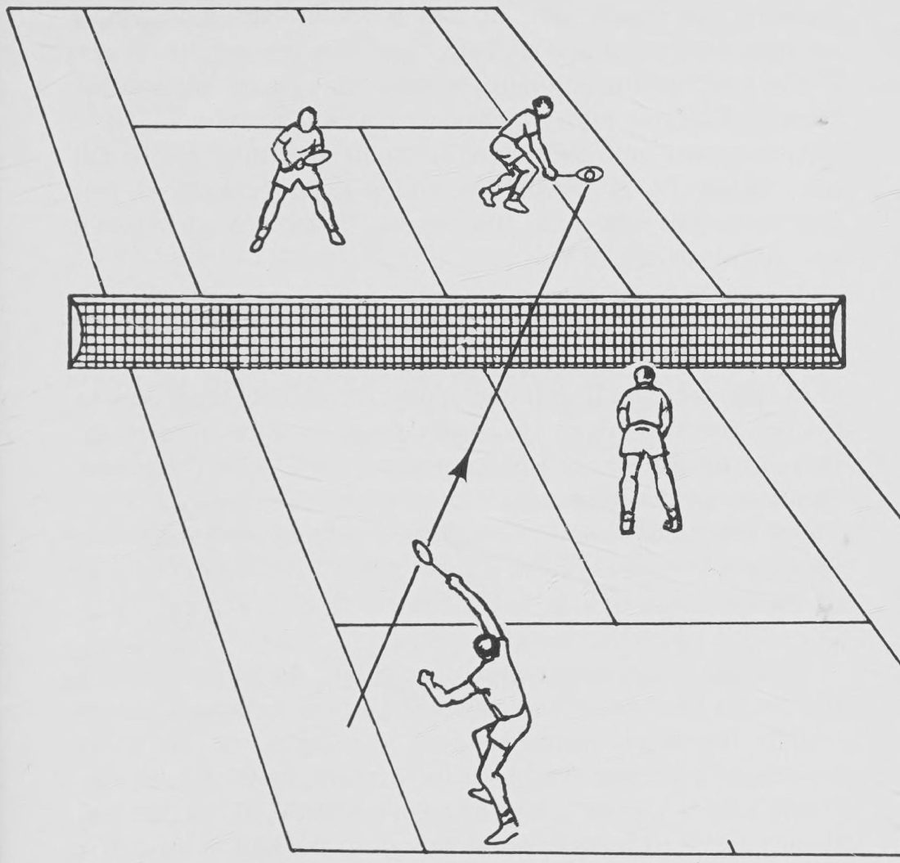
thông thường là cú đánh nhanh hơn của bạn, nhưng đó là vì bạn sử dụng một cú vung vợt dài hơn. Hành động trái tay mạnh hơn; bạn có nhiều đòn bẩy hơn.
normally your faster shot, but that is because you use a longer swing. A backhand action is stronger; you get more leverage.
Nếu bạn coi cú trả giao bóng trái tay ngắn-vung, lấy bóng điểm cao, topspin của mình giống như một phiên bản mạnh hơn của cú đánh trái tay lấy bóng sớm cơ bản trong bóng bàn, bạn có thể thấy nó không quá khó sau tất cả. Có lẽ bạn đã tưởng tượng những cú đánh bóng bàn này là half-volley, nhưng không phải vậy. Nếu bạn nhìn lại, bạn sẽ thấy chúng là những cú đánh bóng đang bay lên.
If you think of making your topspin, rising-ball, short-swing backhand service return like a strong edition of your basic early-ball backhand shot in table tennis, you may not find it too difficult after all. Perhaps you’d imagined these table tennis shots to be half-volleys, but they’re not. If you look again you'll see they’re rising-ball shots.
Điều Gì Ở Trên Đỉnh?
What's On Top?
Ở cấp độ cao nhất, bạn vẫn sẽ thấy nhiều cú trả giao bóng trái tay slice, nhưng bạn sẽ lưu ý rằng ngoại trừ những trường hợp ngoại lệ, cú đánh topspin là cú trả bóng tấn công hơn. Chúng tôi để khía cạnh này cho sở thích riêng của bạn.
At the top you'll still see many sliced backhand service returns, but you’ll note that apart from exceptional cases the topspin shot is a more attacking return. We leave this aspect now to your own preference.
Ấn tượng đầu tiên về một trận đánh đôi đẳng cấp thế giới mà trong đó các cú trả bóng của người nhận rất tốt là lợi thế dường như thay đổi từ bên này sang bên kia với mỗi cú đánh tuyệt vời. Người giao bóng quất cú giao bóng vào cuộc.
One’s first impression of a top class doubles match in which the receivers’ returns are very good is that the advantage seems to change from one side to the other with each superb stroke.
“Không ai có thể xử lý quả đó!” chúng ta nghĩ. Nhưng người nhận nhanh nhẹn, đứng sau trái bóng, lấy bóng ở điểm cao, tránh xa người lên lưới đứng rộng và tấn công người giao bóng đang tiến lên bằng một cú trả bóng thấp và nhanh—tất cả diễn ra trước khi bạn kịp chớp mắt.
The server whips the serve into play.
“Anh ta đã đánh một cú winner”—nhưng không phải vậy, vì người giao bóng đã nhanh chóng tiến lên và volley trái bóng như thể đó chính xác là điều anh ta đang chờ đợi. Một trận chiến giữa những gã khổng lồ đã bắt đầu, nhưng khá nhanh, sau một vài game và tỉ số cân bằng, chúng ta nhận ra rằng gã khổng lồ chiến thắng không phải là cặp đôi nào theo tên gọi mà là cặp giao bóng. Người giao bóng thực hiện cú đánh đầu tiên và do đó có cơ hội đầu tiên, điều mà anh ta luôn tận dụng, để volley và tiến vào hình thành rào chắn trên lưới.
“No one could handle that!” we think. But the receiver is fast on his feet, gets behind the ball, takes it on the rise, keeps clear of the widely-placed net man and attacks the incoming server with a fast low return—all before you can wink your eye.
Chúng ta cũng thấy rằng người giao bóng hầu hết thắng cuộc đối đầu giữa người giao bóng/người nhận đó, trong khi người nhận cố gắng hình thành một rào chắn trên lưới thứ hai.
““He’s hit a winner’—but he hasn’t, because the server has already followed in swiftly and he volleys the ball as though it had been just what he was waiting for. A battle of giants has been joined, but fairly soon, after a few games and level scores, we realize that the winning giant is not either pair by name but the serving pair. The server makes the first stroke and so has the first chance, which he invariably takes, to volley and move in to form a net barrier.
We also see that the server mostly wins that server/receiver duel, with the receiver trying to form a second net barrier.
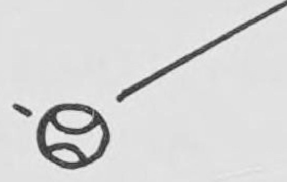
Không chỉ là trái bóng mà anh ta không nhìn thấy. Có một số pha trao đổi sắc sảo như vậy, và chúng khiến khán giả hào hứng, nhưng cả bốn cầu thủ, hai rào chắn trên lưới, không ở trên lưới toàn bộ thời gian. Điều đó sẽ có nghĩa là bên nhận luôn ở thế thượng phong, mỗi người nhận liên tục thắng cuộc đối đầu với người giao bóng bằng cách có thể tiến lên và hình thành rào chắn trên lưới của người nhận. Khi bạn của chúng ta chơi lần tới, chắc chắn anh ta sẽ cố gắng bắt chước những gì anh ta nghĩ mình đã thấy và lao lên lưới ở mọi cú trả bóng, dù nó cao, yếu hay nói chung là kém. Hãy hy vọng anh ta không đối đầu với hai cầu thủ cao lớn đánh mạnh.
It was more than the ball that he couldn’t see. There were some of these sharp exchanges, and they brought the house down, but all four players, two net barriers, weren’t at the net all the time. That would have meant that the receiving side was always on top, each receiver consistently winning his duel with the server by being able to follow in and form a receivers’ net barrier. When next our friend plays, no doubt he’ll try to emulate what he thought he saw and charge to the net on every return, be it high, weak or generally poor. Let’s hope he’s not up against two tall hard-hitting players.
Trò Chơi Tiêu Chuẩn Cao Của Bạn - Cuộc thảo luận chiến thuật cuối cùng của chúng tôi bao quát lối chơi cuối sân của bạn sau cú volley đầu tiên của người giao bóng.
Your High-Standard Game - Our last tactical discussion covers your backcourt play after the server’s first volley.
Bạn là người nhận trong một trận đấu tiêu chuẩn cao nơi cả hai người lên lưới đều am hiểu công việc, nơi người giao bóng giao tốt, nơi bạn trả bóng lấy điểm cao với mục tiêu tiến lên và thiết lập rào chắn trên lưới của người nhận, và nơi người giao bóng thực hiện các cú volley đầu tiên tốt và hầu hết thắng cuộc đối đầu và dập tắt mục tiêu của bạn.
You're the receiver in a high-standard game where both net men know their business, where the server serves well, where you play rising-ball returns with the object of following in and setting up a receivers’ net barrier, and where the server plays his first volleys well and mostly wins the duel and scotches your objective.
Vì vậy: Bạn đang ở sân phải; anh ta giao bóng vào trái tay của bạn và bạn đã trả bóng mà không thể tiến lên; anh ta volley bóng lại cho bạn ở cuối sân. Phải làm gì tiếp theo?
So: You're in the right court; he’s served to your backhand and you’ve returned without being able to follow in; he’s vol- leyed back to you in the backcourt. What to do next?
Chúng ta sẽ giả định rằng cú trả bóng của bạn đủ mạnh để ngăn người giao bóng volley sâu xuống trung tâm vượt qua đối tác trên lưới của bạn. Thay vào đó, cú volley của anh ta nảy lên khoảng tầm cao của lưới và bạn có thể tiến lên với cú thuận tay. Bạn nên thực hiện một cú thuận tay dipping mạnh xuống giữa—hướng về phía trái tay của người giao bóng, tránh cú volley thuận tay của người lên lưới—và nếu bóng đến với người giao bóng dưới tầm cao của lưới, bạn tiến lên. Anh ta đã volley ngắn. Đó là cơ hội tốt nhất bạn có được. Hãy thực hiện cú đánh của mình không chút do dự. Nếu bạn vô tình đánh hỏng, hãy thực hiện nó vào lần tới mà không có những nghi ngờ làm xao nhãng rằng có lẽ bạn nên chơi an toàn hơn. Đó cũng là điều bản năng phải làm, sau khi thực hiện một cú trả giao bóng mạnh nhưng không đủ tốt để tiến lên, nhưng đủ để buộc người giao bóng phải volley ngắn về phía thuận tay của bạn.
We'll assume your return was severe enough to prevent the server from volleying deep down the center past your net partner. Instead, his volley bounces to about net height and you can advance on it with your forehand. You should play a hard dipping forehand down the middle—towards the server’s backhand, clear of the net man’s forehand volley—and if it will reach the server below net height, you follow in. He’s volleyed short. It’s the best opportunity you'll get. Go for your shot without hesitation. If you happen to miss it, go for it next time with no diverting doubts that perhaps you should play safer. It’s also the instinctive thing to do, after having played a severe service return that wasn’t quite good enough to follow in, but was good enough to have forced the server to volley short to your forehand.
Bây giờ hãy lấy một thái cực khác, nơi cú trả giao bóng của bạn hơi cao và đối tác trên lưới của bạn không thể ngăn người giao bóng volley nhanh và rất sâu về phía trái tay của bạn. Đây là trường hợp bạn ở vị trí tệ đến mức bạn nên cố gắng đánh để tự giải thoát mình khỏi rắc rối. Hãy tung ra một cú half-volley trái tay drive với thật nhiều topspin bao phủ.
Now take the other extreme, where your service return was somewhat high and your net partner has been unable to prevent the server from volleying fast and very deep to your back- hand. Here is a case where you’re in such a bad position that you should try to hit yourself out of trouble. Let fly with a driven backhand half-volley with tons of covering topspin.
Được thực hiện một cách có mục đích và không chút nghi ngờ rằng có lẽ bạn nên lốp bóng, điều này khác xa với sự tuyệt vọng hoang dại.
Done purposefully and without doubts that perhaps you should have lobbed, this is far from being wild desperation.
Nếu cú volley của người giao bóng rộng hơn trái tay của bạn và sâu đến mức nó đáp xuống phía sau bạn, bạn có ít cơ hội tự giải thoát mình vì bạn không thể tạo ra đủ lực để gây khó khăn cho rào chắn trên lưới của họ. Có lẽ bạn có thể thực hiện một cú slice trái tay thấp khiến người giao bóng phải volley từ dưới tầm cao của lưới, và điều này sẽ giữ cho cơ hội của bạn còn sống.
If the server’s volley is wider of your backhand and so deep that it lands behind you, you’ve little chance of hitting yourself out of trouble because you can’t develop enough power to em- barrass their net barrier. Perhaps you can manage to play a low backhand slice that the server will have to volley from below net height, and this would keep your chances alive.
Tuy nhiên, phần lớn, bạn sẽ phải lốp bóng. Nếu có thể, hãy nhắm nó qua phía trái tay của người giao bóng, đừng bao giờ nhắm về phía cú đập bóng đang chờ đợi của người lên lưới. Nếu không còn lựa chọn nào khác, hãy tung một cú lốp bóng rất cao và sâu và chờ đợi các sự kiện.
Mostly, though, you’ll have to lob. If you can, aim it over the server’s backhand side, never towards that net man’s waiting smash. If you’ve no other choice, hoist a very high and deep lob and await events.
Từ cú lốp bóng rất cao và sâu, đối thủ của bạn có lẽ sẽ không cố gắng thắng bằng một cú đập bóng duy nhất (vì họ có vị trí thắng thế và không cần mạo hiểm) và bạn có thể có cơ hội tấn công tốt hơn so với cú volley đầu tiên xuyên thấu của người giao bóng đã gây ra cho bạn. Trong phòng thủ, bạn phải tìm kiếm sự tấn công. Nếu người chơi chuẩn bị xử lý cú lốp bóng của bạn có bất kỳ dấu hiệu nao núng hoặc mất thăng bằng, hoặc nếu anh ta né tránh vấn đề và chạy lùi lại để cú lốp bóng của bạn đáp sâu trong sân, thì trong cả hai trường hợp, bạn và đối tác nên chiếm lĩnh lưới ngay lập tức. Bạn đã được trao cơ hội tạo rào chắn trên lưới. Bạn sẽ có thể đối phó với một cú đập bóng nao núng.
From the very high and deep lob your opponents will probably not try to win with one smash (because they have a winning position and need take no risk) and you may get a better chance to attack than the server’s penetrating first volley gave you. In defense you must look for attack. If the player shaping up for your lob shows any sign of faltering or losing his balance, or if he shirks the issue and runs back and lets your lob land deep in court, then in either case you and your partner should take the net at once. You’ve been given your chance of a net barrier. You should be able to cope with a faitering smash.
Đối với cú lốp bóng nảy, cầu thủ đối phương sẽ đánh cú half-smash như một tên lửa bây giờ khi anh ta thấy bạn đã ở trên lưới, nhưng thì sao nào? Không ai hứa với bạn là lúc nào ở trên lưới cũng nhận được bóng nhẹ cả.
Against the bounced lob, the opposing player will hit his half-
Đối tác trên lưới của bạn sẽ đồng điệu với tất cả những điều này. Khi cú volley đầu tiên sâu của người giao bóng vượt qua anh ta, anh ta bắt đầu di chuyển lùi lại. Nếu anh ta thấy cú slice trái tay của bạn sẽ thấp qua lưới, anh ta di chuyển lên theo bóng, nhưng nếu anh ta thấy bạn định lốp bóng, anh ta sẽ ở lại phía sau. Nếu anh ta thấy sẽ có một cú đập bóng nao núng hoặc một cú half-smash từ sâu trong sân, anh ta phải tiến lên nhanh như bạn. Nếu anh ta do dự và chỉ tiến được một nửa, anh ta có lẽ sẽ phải half-volley, nếu có thể. Nếu anh ta ở lại phía sau, đối thủ đập bóng có thể chơi cú đánh trên cao của mình một cách an toàn hướng về phía anh ta như một cú tiếp cận và tiến lên theo sau. Rào chắn trên lưới sẽ là của họ thay vì của bạn.
smash like a rocket now that he sees you have the net, but what of it? No one’s ever promised you soft stuff at the net all the time.
Chúng ta đã thảo luận về những cú volley đầu tiên ngắn và dễ tấn công, những cú nảy gần chân bạn mà từ đó bạn nên biến sự bắt buộc thành lợi thế và half-volley mạnh, và những cú sâu đáp rộng và hơi phía sau bạn. Trong cả ba trường hợp, những câu trả lời chiến thuật tốt nhất của bạn ít nhiều là bản năng đối với một người chơi đánh đôi nâng cao, và bản năng này áp dụng cho lối chơi của bạn đối với tất cả các loại volley đầu tiên khác tìm đến bạn. Phần lớn bạn đánh bóng trả lại một lần nữa, cố gắng khiến người giao bóng volley từ dưới tầm cao của lưới, sử dụng một cú drive topspin dipping hoặc một cú slice rất thấp. Nếu người lên lưới có dấu hiệu đánh chặn, hãy thực hiện một trong những cú lốp bóng mạnh mẽ qua phía trái tay của anh ta. Nếu người giao bóng tiến vào quá gần sau cú volley đầu tiên, hãy lốp bóng qua đầu anh ta.
Your net partner will be in tune with all this. As the server’s deep first volley goes past him he begins to move back. If he sees your backhand slice is going to be low over the net, he moves up with it, but if he sees you’re going to lob he stays back. If he sees there is going to be either a faltering smash or a half-smash from deep in court he must move up as quickly as you do. If he hesitates and gets only halfway in, he’ll probably have to half-volley, if he can. If he stays back, the smashing opponent can play his overhead shot safely towards him as an approach shot and follow in behind it. The net barrier will be theirs instead of yours.
Bạn có thể thấy một khoảng hở cho một cú thuận tay góc nhọn chéo qua cơ thể người giao bóng. Sẽ tốt hơn cho bạn nếu đó là cú bạn có thể thực hiện với một cú drive dipping mạnh, thay vì một cú đánh cần sự tinh tế, vì đối tác của bạn sẽ khốn khổ nếu cú đánh tinh tế của bạn bay cao.
We have discussed first volleys that are short and easy to attack, those that pitch near your feet from which you should make a virtue of necessity and half-volley hard, and those deep ones that land wider and somewhat behind you. In all three instances, your best tactical replies are more or less instinctive to you as an advanced doubles player, and this instinct applies to your play against all other types of first volleys that come your way. Mostly you play the ball back once more, trying to make the server volley from below net level, using either a dipping topspin drive or a very low slice. If the net man shows signs of intercepting, hit one of your forceful lobs over his backhand side. If the server closes in too far after his first volley, lob over him.
Các góc thường là bẫy cho những người chơi trẻ và khu vực trung tâm mang lại nhiều thành công nhất.
You may see an opening for a sharply angled forehand across the server’s body. It’s better for you if it’s one you can go for with a strong dipping drive, rather than one needing a touch shot, because woe betide your partner if your touch shot goes high. Angles are often traps for young players and the center yields most success.
Mục tiêu chung của bạn sau cú volley đầu tiên và bất kỳ cú đánh tiếp theo nào là giữ cho cuộc chơi tiếp tục cho đến khi bạn có thể thực hiện một cú tiếp cận và tiến lên. Bằng mọi giá, hãy đánh một cú đánh nền để giành điểm thắng nếu có thể, nhưng là một chiến thuật tồi nếu đánh quá mạnh và hỏng trong khi bạn có thể đã chơi với tốc độ trung bình mạnh và tiến lên.
Your general objective after the first volley and any succeeding shot is to keep the game alive until you can make an approach shot and follow in. By ali means, hit a groundstroke for a winner if you can, but it is a bad tactic to hit very hard and miss if you could have played at strong medium pace and followed in.
Phần lớn bên giao bóng đối phó được với tất cả, giống như bạn nếu bạn là người giao bóng. Hầu hết các game giao bóng tiếp tục được giữ. Tuy nhiên, không phải tất cả, và khi không được giữ, chúng bị break bởi người nhận, chứ không phải mất do lỗi từ bên giao bóng. “Lấy bóng trở lại, hãy để họ mắc sai lầm,” là lời khuyên hời hợt cho một người nhận trong đánh đôi đẳng cấp cao—ví dụ, với các cú trả giao bóng, anh ta chỉ đang cho người giao bóng một loạt các cú volley đầu tiên thoải mái.
Mostly the serving side copes with it all, as you would if you were serving. Most services continue to be held. Not all though, and when they’re not held they’re broken through by the receivers, not lost by errors from the serving side. ‘‘Get the ball back, let them make the mistakes,”’ is thin advice to a receiver in high-class doubles—with service returns, for example, he’d only be giving the server a succession of comfortable first volleys.
Bạn sẽ thực hiện các cú break giao bóng bằng cách trả bóng mạnh mẽ, chiếm vị trí lưới và hình thành cũng như giữ vững rào chắn của mình—bằng cách thắng cuộc đối đầu đó, từ cú trả giao bóng của bạn hoặc cuối cùng là đạt được. Và bạn sẽ chỉ thực hiện tốt nhất những chiến thuật này khi bạn hài lòng rằng chúng đúng. Trong khi đó, khi bạn đang tự thuyết phục mình bằng quan sát và kinh nghiệm, không ai sẽ tặng bạn những cú volley và đập bóng hỏng, chưa nói đến việc giao bóng lỗi kép.
You'll make your service breaks by returning strongly, getting the net position and forming and holding your barrier—by winning that duel, from your service return or eventually. And you'll only do your best with these tactics when you're satisfied they’re right. Meantime, while you’re convincing yourself with observation and experience, no one’s going to present you with missed volleys and smashes, let alone serve you double faults.
TỪ CHIẾN THUẬT CAO ĐẾN KỸ THUẬT AN TOÀNHIGH TACTICS TO SAFE MECHANICS
CHIẾN THUẬT CAO ĐẾN CƠ CHẾ AN TOÀN Thay đổi sân nhanh chóng, bạn cũng phải tránh lỗi giao bóng kép. Nếu bạn đột nhiên mất tự tin vào cú giao bóng của mình, rắc rối gần như chắc chắn là sự mất phối hợp tạm thời, phối hợp trong chính cú giao bóng và việc kết hợp nó với cách tiếp cận lưới của bạn. Bạn biết mình đang vội vã, làm mọi thứ cùng một lúc, nhưng khi bạn cố gắng chậm lại, mọi thứ trở nên tách biệt và bạn cảm thấy mất thăng bằng. Bạn đổ người vào bóng và cú giao bóng hai của bạn có nhiều khả năng đi vào lưới hơn là qua lưới.
Rapidly changing sides, you’ve got to avoid double faults yourself. If you suddenly lose confidence in your serve, the trouble is almost certain to be a temporary loss of co- ordination, co-ordination in the serve itself and your com- bining it with your net approach. You know you’re rushing, doing everything all at once, but when you try to slow down, everything becomes isolated and you feel out of balance. You fall at the ball and your second serve is more likely to go into the net than over it.
Bạn có thể khắc phục tất cả những điều này bằng một phương pháp, cụ thể là tạm thời giảm số lượng các chuyển động phối hợp mà bạn đã sử dụng. Tách hai tay ra, để bạn không cần phối hợp chúng, bằng cách giữ tay trái cầm bóng ở gần eo, và hạ đầu vợt xuống gần chân phải. Tung bóng thẳng đứng, để bạn không phải phối hợp việc nghiêng người về phía trước và vung chân phải vào sân. Hãy hài lòng với việc đánh bóng chắc chắn qua lưới và sau đó tiến lên, từ bỏ khởi đầu bay bổng của bạn.
You can remedy all this by one expedient, namely by temporarily reducing the number of co-ordinated movements you’ve been using. Separate your hands, so you don’t need to co-ordinate them, by holding your left hand with the balls in it near your waist, and by dropping your racket head down near your right foot. Throw the ball straight up, so you haven’t got to co-ordinate your leaning forward into it and swinging your right leg into court. Be satisfied to hit the ball firmly over the net and then to follow in, forgoing your flying start.
Là một người giao bóng giỏi bình thường, sự tự tin của bạn nhanh chóng quay trở lại, và bạn có thể xây dựng lại tốc độ và nhịp điệu một lần nữa. Bạn có thể vượt qua rắc rối trong vòng một game giao bóng, chắc chắn là trong một set. Không cần phải thiếu tự tin trong giao bóng suốt cả trận đấu hoặc mang nó như một gánh nặng từ trận này sang trận khác.
As a normally good server, your confidence quickly returns, and you can build up your speed and rhythm once more. You can be over your trouble within the space of one service game, certainly within a set. There is no need to lack service con- fidence throughout a match or to carry it like a lead weight from one match to the next.
Có lẽ một ngày nào đó bạn sẽ chơi với tôi. Cứ tiến lên gần lưới bao nhiêu tùy thích. Tôi sẽ bao quát các cú lốp bóng của bạn.
Perhaps you'll play with me one day. Come in as far as you like. Pll cover my lobs.
Sân trái ổn với bạn chứ?
Left court OK for you?